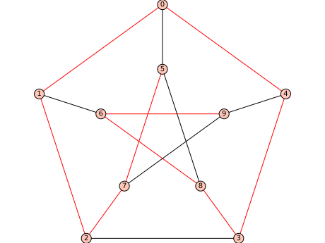

Generic graphs (common to directed/undirected)¶
This module implements the base class for graphs and digraphs, and methods that can be applied on both. Here is what it can do:
Basic Graph operations:
networkx_graph() |
Return a new NetworkX graph from the Sage graph |
igraph_graph() |
Return an igraph graph from the Sage graph |
to_dictionary() |
Create a dictionary encoding the graph. |
copy() |
Return a copy of the graph. |
export_to_file() |
Export the graph to a file. |
adjacency_matrix() |
Return the adjacency matrix of the (di)graph. |
incidence_matrix() |
Return an incidence matrix of the (di)graph |
distance_matrix() |
Return the distance matrix of the (strongly) connected (di)graph |
weighted_adjacency_matrix() |
Return the weighted adjacency matrix of the graph |
kirchhoff_matrix() |
Return the Kirchhoff matrix (a.k.a. the Laplacian) of the graph. |
has_loops() |
Return whether there are loops in the (di)graph |
allows_loops() |
Return whether loops are permitted in the (di)graph |
allow_loops() |
Change whether loops are permitted in the (di)graph |
loops() |
Return a list of all loops in the (di)graph |
loop_edges() |
Return a list of all loops in the (di)graph |
number_of_loops() |
Return the number of edges that are loops |
loop_vertices() |
Return a list of vertices with loops |
remove_loops() |
Remove loops on vertices in vertices. |
has_multiple_edges() |
Return whether there are multiple edges in the (di)graph. |
allows_multiple_edges() |
Return whether multiple edges are permitted in the (di)graph. |
allow_multiple_edges() |
Change whether multiple edges are permitted in the (di)graph. |
multiple_edges() |
Return any multiple edges in the (di)graph. |
name() |
Return or set the graph’s name. |
is_immutable() |
Return whether the graph is immutable. |
weighted() |
Whether the (di)graph is to be considered as a weighted (di)graph. |
antisymmetric() |
Test whether the graph is antisymmetric |
density() |
Return the density |
order() |
Return the number of vertices. |
size() |
Return the number of edges. |
add_vertex() |
Create an isolated vertex. |
add_vertices() |
Add vertices to the (di)graph from an iterable container of vertices |
delete_vertex() |
Delete vertex, removing all incident edges. |
delete_vertices() |
Delete vertices from the (di)graph taken from an iterable container of vertices. |
has_vertex() |
Check if vertex is one of the vertices of this graph. |
random_vertex() |
Return a random vertex of self. |
random_vertex_iterator() |
Return an iterator over random vertices of self. |
random_edge() |
Return a random edge of self. |
random_edge_iterator() |
Return an iterator over random edges of self. |
vertex_boundary() |
Return a list of all vertices in the external boundary of vertices1, intersected with vertices2. |
set_vertices() |
Associate arbitrary objects with each vertex |
set_vertex() |
Associate an arbitrary object with a vertex. |
get_vertex() |
Retrieve the object associated with a given vertex. |
get_vertices() |
Return a dictionary of the objects associated to each vertex. |
vertex_iterator() |
Return an iterator over the given vertices. |
neighbor_iterator() |
Return an iterator over neighbors of vertex. |
vertices() |
Return a list of the vertices. |
neighbors() |
Return a list of neighbors (in and out if directed) of vertex. |
merge_vertices() |
Merge vertices. |
add_edge() |
Add an edge from u to v. |
add_edges() |
Add edges from an iterable container. |
subdivide_edge() |
Subdivide an edge \(k\) times. |
subdivide_edges() |
Subdivide \(k\) times edges from an iterable container. |
delete_edge() |
Delete the edge from u to v |
delete_edges() |
Delete edges from an iterable container. |
contract_edge() |
Contract an edge from u to v. |
contract_edges() |
Contract edges from an iterable container. |
delete_multiedge() |
Delete all edges from u to v. |
set_edge_label() |
Set the edge label of a given edge. |
has_edge() |
Check whether (u, v) is an edge of the (di)graph. |
edges() |
Return a EdgesView of edges. |
edge_boundary() |
Return a list of edges (u,v,l) with u in vertices1 |
edge_iterator() |
Return an iterator over edges. |
edges_incident() |
Return incident edges to some vertices. |
edge_label() |
Return the label of an edge. |
edge_labels() |
Return a list of the labels of all edges in self. |
remove_multiple_edges() |
Remove all multiple edges, retaining one edge for each. |
clear() |
Empty the graph of vertices and edges and removes name, associated objects, and position information. |
degree() |
Return the degree (in + out for digraphs) of a vertex or of vertices. |
average_degree() |
Return the average degree of the graph. |
degree_histogram() |
Return a list, whose ith entry is the frequency of degree i. |
degree_iterator() |
Return an iterator over the degrees of the (di)graph. |
degree_sequence() |
Return the degree sequence of this (di)graph. |
random_subgraph() |
Return a random subgraph containing each vertex with probability p. |
add_clique() |
Add a clique to the graph with the given vertices. |
add_cycle() |
Add a cycle to the graph with the given vertices. |
add_path() |
Add a path to the graph with the given vertices. |
complement() |
Return the complement of the (di)graph. |
line_graph() |
Return the line graph of the (di)graph. |
to_simple() |
Return a simple version of itself (i.e., undirected and loops and multiple edges are removed). |
disjoint_union() |
Return the disjoint union of self and other. |
union() |
Return the union of self and other. |
relabel() |
Relabel the vertices of self |
degree_to_cell() |
Return the number of edges from vertex to an edge in cell. |
subgraph() |
Return the subgraph containing the given vertices and edges. |
is_subgraph() |
Check whether self is a subgraph of other. |
Graph products:
cartesian_product() |
Return the Cartesian product of self and other. |
tensor_product() |
Return the tensor product, also called the categorical product, of self and other. |
lexicographic_product() |
Return the lexicographic product of self and other. |
strong_product() |
Return the strong product of self and other. |
disjunctive_product() |
Return the disjunctive product of self and other. |
Paths and cycles:
eulerian_orientation() |
Return a DiGraph which is an Eulerian orientation of the current graph. |
eulerian_circuit() |
Return a list of edges forming an Eulerian circuit if one exists. |
minimum_cycle_basis() |
Return a minimum weight cycle basis of the graph. |
cycle_basis() |
Return a list of cycles which form a basis of the cycle space of self. |
all_paths() |
Return a list of all paths (also lists) between a pair of vertices in the (di)graph. |
triangles_count() |
Return the number of triangles in the (di)graph. |
shortest_simple_paths() |
Return an iterator over the simple paths between a pair of vertices. |
Linear algebra:
spectrum() |
Return a list of the eigenvalues of the adjacency matrix. |
eigenvectors() |
Return the right eigenvectors of the adjacency matrix of the graph. |
eigenspaces() |
Return the right eigenspaces of the adjacency matrix of the graph. |
Some metrics:
cluster_triangles() |
Return the number of triangles for the set nbunch of vertices as a dictionary keyed by vertex. |
clustering_average() |
Return the average clustering coefficient. |
clustering_coeff() |
Return the clustering coefficient for each vertex in nbunch |
cluster_transitivity() |
Return the transitivity (fraction of transitive triangles) of the graph. |
szeged_index() |
Return the Szeged index of the graph. |
katz_centrality() |
Return the katz centrality of the vertex u of the graph. |
katz_matrix() |
Return the katz matrix of the graph. |
pagerank() |
Return the PageRank of the vertices of self. |
Automorphism group:
coarsest_equitable_refinement() |
Return the coarsest partition which is finer than the input partition, and equitable with respect to self. |
automorphism_group() |
Return the largest subgroup of the automorphism group of the (di)graph whose orbit partition is finer than the partition given. |
is_vertex_transitive() |
Return whether the automorphism group of self is transitive within the partition provided |
is_isomorphic() |
Test for isomorphism between self and other. |
canonical_label() |
Return the canonical graph. |
is_cayley() |
Check whether the graph is a Cayley graph. |
Graph properties:
is_eulerian() |
Return True if the graph has a (closed) tour that visits each edge exactly once. |
is_planar() |
Check whether the graph is planar. |
is_circular_planar() |
Check whether the graph is circular planar (outerplanar) |
is_regular() |
Return True if this graph is (\(k\)-)regular. |
is_chordal() |
Check whether the given graph is chordal. |
is_bipartite() |
Test whether the given graph is bipartite. |
is_circulant() |
Check whether the graph is a circulant graph. |
is_interval() |
Check whether the graph is an interval graph. |
is_gallai_tree() |
Return whether the current graph is a Gallai tree. |
is_clique() |
Check whether a set of vertices is a clique |
is_cycle() |
Check whether self is a (directed) cycle graph. |
is_independent_set() |
Check whether vertices is an independent set of self |
is_transitively_reduced() |
Test whether the digraph is transitively reduced. |
is_equitable() |
Check whether the given partition is equitable with respect to self. |
is_self_complementary() |
Check whether the graph is self-complementary. |
Traversals:
breadth_first_search() |
Return an iterator over the vertices in a breadth-first ordering. |
depth_first_search() |
Return an iterator over the vertices in a depth-first ordering. |
lex_BFS() |
Perform a lexicographic breadth first search (LexBFS) on the graph. |
lex_UP() |
Perform a lexicographic UP search (LexUP) on the graph. |
lex_DFS() |
Perform a lexicographic depth first search (LexDFS) on the graph. |
lex_DOWN() |
Perform a lexicographic DOWN search (LexDOWN) on the graph. |
Distances:
centrality_betweenness() |
Return the betweenness centrality |
centrality_closeness() |
Returns the closeness centrality (1/average distance to all vertices) |
distance() |
Return the (directed) distance from u to v in the (di)graph |
distance_all_pairs() |
Return the distances between all pairs of vertices. |
distances_distribution() |
Return the distances distribution of the (di)graph in a dictionary. |
eccentricity() |
Return the eccentricity of vertex (or vertices) v. |
radius() |
Return the radius of the (di)graph. |
center() |
Return the set of vertices in the center of the graph |
diameter() |
Return the largest distance between any two vertices. |
distance_graph() |
Return the graph on the same vertex set as the original graph but vertices are adjacent in the returned graph if and only if they are at specified distances in the original graph. |
girth() |
Return the girth of the graph. |
odd_girth() |
Return the odd girth of the graph. |
periphery() |
Return the set of vertices in the periphery |
shortest_path() |
Return a list of vertices representing some shortest path from \(u\) to \(v\) |
shortest_path_length() |
Return the minimal length of paths from u to v |
shortest_paths() |
Return a dictionary associating to each vertex v a shortest path from u to v, if it exists. |
shortest_path_lengths() |
Return a dictionary of shortest path lengths keyed by targets that are connected by a path from u. |
shortest_path_all_pairs() |
Compute a shortest path between each pair of vertices. |
wiener_index() |
Return the Wiener index of the graph. |
average_distance() |
Return the average distance between vertices of the graph. |
Flows, connectivity, trees:
is_connected() |
Test whether the (di)graph is connected. |
connected_components() |
Return the list of connected components |
connected_components_number() |
Return the number of connected components. |
connected_components_subgraphs() |
Return a list of connected components as graph objects. |
connected_component_containing_vertex() |
Return a list of the vertices connected to vertex. |
connected_components_sizes() |
Return the sizes of the connected components as a list. |
blocks_and_cut_vertices() |
Compute the blocks and cut vertices of the graph. |
blocks_and_cuts_tree() |
Compute the blocks-and-cuts tree of the graph. |
is_cut_edge() |
Return True if the input edge is a cut-edge or a bridge. |
is_cut_vertex() |
Return True if the input vertex is a cut-vertex. |
edge_cut() |
Return a minimum edge cut between vertices \(s\) and \(t\) |
vertex_cut() |
Return a minimum vertex cut between non-adjacent vertices \(s\) and \(t\) |
flow() |
Return a maximum flow in the graph from x to y |
nowhere_zero_flow() |
Return a \(k\)-nowhere zero flow of the (di)graph. |
edge_disjoint_paths() |
Return a list of edge-disjoint paths between two vertices |
vertex_disjoint_paths() |
Return a list of vertex-disjoint paths between two vertices |
edge_connectivity() |
Return the edge connectivity of the graph. |
vertex_connectivity() |
Return the vertex connectivity of the graph. |
transitive_closure() |
Compute the transitive closure of a graph and returns it. |
transitive_reduction() |
Return a transitive reduction of a graph. |
min_spanning_tree() |
Return the edges of a minimum spanning tree. |
spanning_trees_count() |
Return the number of spanning trees in a graph. |
dominator_tree() |
Returns a dominator tree of the graph. |
connected_subgraph_iterator() |
Iterator over the induced connected subgraphs of order at most \(k\) |
Plot/embedding-related methods:
set_embedding() |
Set a combinatorial embedding dictionary to _embedding attribute. |
get_embedding() |
Return the attribute _embedding if it exists. |
faces() |
Return the faces of an embedded graph. |
genus() |
Return the number of faces of an embedded graph. |
planar_dual() |
Return the planar dual of an embedded graph. |
get_pos() |
Return the position dictionary |
set_pos() |
Set the position dictionary. |
set_planar_positions() |
Compute a planar layout for self using Schnyder’s algorithm |
layout_planar() |
Compute a planar layout of the graph using Schnyder’s algorithm. |
is_drawn_free_of_edge_crossings() |
Check whether the position dictionary gives a planar embedding. |
latex_options() |
Return an instance of GraphLatex for the graph. |
set_latex_options() |
Set multiple options for rendering a graph with LaTeX. |
layout() |
Return a layout for the vertices of this graph. |
layout_spring() |
Return a spring layout for this graph |
layout_ranked() |
Return a ranked layout for this graph |
layout_extend_randomly() |
Extend randomly a partial layout |
layout_circular() |
Return a circular layout for this graph |
layout_tree() |
Return an ordered tree layout for this graph |
layout_graphviz() |
Call graphviz to compute a layout of the vertices of this graph. |
_circle_embedding() |
Set some vertices on a circle in the embedding of this graph. |
_line_embedding() |
Set some vertices on a line in the embedding of this graph. |
graphplot() |
Return a GraphPlot object. |
plot() |
Return a Graphics object representing the (di)graph. |
show() |
Show the (di)graph. |
plot3d() |
Plot the graph in three dimensions. |
show3d() |
Plot the graph using Tachyon, and shows the resulting plot. |
graphviz_string() |
Return a representation in the dot language. |
graphviz_to_file_named() |
Write a representation in the dot language in a file. |
Algorithmically hard stuff:
steiner_tree() |
Return a tree of minimum weight connecting the given set of vertices. |
edge_disjoint_spanning_trees() |
Return the desired number of edge-disjoint spanning trees/arborescences. |
feedback_vertex_set() |
Compute the minimum feedback vertex set of a (di)graph. |
multiway_cut() |
Return a minimum edge multiway cut |
max_cut() |
Return a maximum edge cut of the graph. |
longest_path() |
Return a longest path of self. |
traveling_salesman_problem() |
Solve the traveling salesman problem (TSP) |
is_hamiltonian() |
Test whether the current graph is Hamiltonian. |
hamiltonian_cycle() |
Return a Hamiltonian cycle/circuit of the current graph/digraph |
hamiltonian_path() |
Return a Hamiltonian path of the current graph/digraph |
multicommodity_flow() |
Solve a multicommodity flow problem. |
disjoint_routed_paths() |
Return a set of disjoint routed paths. |
dominating_set() |
Return a minimum dominating set of the graph |
subgraph_search() |
Return a copy of G in self. |
subgraph_search_count() |
Return the number of labelled occurrences of G in self. |
subgraph_search_iterator() |
Return an iterator over the labelled copies of G in self. |
characteristic_polynomial() |
Return the characteristic polynomial of the adjacency matrix of the (di)graph. |
genus() |
Return the minimal genus of the graph. |
crossing_number() |
Return the crossing number of the graph. |
Methods¶
-
class
sage.graphs.generic_graph.GenericGraph¶ Bases:
sage.graphs.generic_graph_pyx.GenericGraph_pyxBase class for graphs and digraphs.
-
__eq__(other)¶ Compare self and other for equality.
Do not call this method directly. That is, for
G.__eq__(H)writeG == H.- Two graphs are considered equal if the following hold:
- they are either both directed, or both undirected;
- they have the same settings for loops, multiedges, and weightedness;
- they have the same set of vertices;
- they have the same (multi)set of arrows/edges, where labels of
arrows/edges are taken into account if and only if the graphs are
considered weighted. See
weighted().
Note that this is not an isomorphism test.
EXAMPLES:
sage: G = graphs.EmptyGraph() sage: H = Graph() sage: G == H True sage: G.to_directed() == H.to_directed() True sage: G = graphs.RandomGNP(8, .9999) sage: H = graphs.CompleteGraph(8) sage: G == H # most often true True sage: G = Graph({0: [1, 2, 3, 4, 5, 6, 7]} ) sage: H = Graph({1: [0], 2: [0], 3: [0], 4: [0], 5: [0], 6: [0], 7: [0]} ) sage: G == H True sage: G.allow_loops(True) sage: G == H False sage: G = graphs.RandomGNP(9, .3).to_directed() sage: H = graphs.RandomGNP(9, .3).to_directed() sage: G == H # most often false False sage: G = Graph(multiedges=True, sparse=True) sage: G.add_edge(0, 1) sage: H = copy(G) sage: H.add_edge(0, 1) sage: G == H False
Note that graphs must be considered weighted, or Sage will not pay attention to edge label data in equality testing:
sage: foo = Graph(sparse=True) sage: foo.add_edges([(0, 1, 1), (0, 2, 2)]) sage: bar = Graph(sparse=True) sage: bar.add_edges([(0, 1, 2), (0, 2, 1)]) sage: foo == bar True sage: foo.weighted(True) sage: foo == bar False sage: bar.weighted(True) sage: foo == bar False
-
add_clique(vertices, loops=False)¶ Add a clique to the graph with the given vertices.
If the vertices are already present, only the edges are added.
INPUT:
vertices– an iterable container of vertices for the clique to be added, e.g. a list, set, graph, etc.loops– boolean (default:False); whether to add edges from every given vertex to itself. This is allowed only if the (di)graph allows loops.
EXAMPLES:
sage: G = Graph() sage: G.add_clique(range(4)) sage: G.is_isomorphic(graphs.CompleteGraph(4)) True sage: D = DiGraph() sage: D.add_clique(range(4)) sage: D.is_isomorphic(digraphs.Complete(4)) True sage: D = DiGraph(loops=True) sage: D.add_clique(range(4), loops=True) sage: D.is_isomorphic(digraphs.Complete(4, loops=True)) True sage: D = DiGraph(loops=False) sage: D.add_clique(range(4), loops=True) Traceback (most recent call last): ... ValueError: cannot add edge from 0 to 0 in graph without loops
If the list of vertices contains repeated elements, a loop will be added at that vertex, even if
loops=False:sage: G = Graph(loops=True) sage: G.add_clique([1, 1]) sage: G.edges() [(1, 1, None)]
This is equivalent to:
sage: G = Graph(loops=True) sage: G.add_clique([1], loops=True) sage: G.edges() [(1, 1, None)]
-
add_cycle(vertices)¶ Add a cycle to the graph with the given vertices.
If the vertices are already present, only the edges are added.
For digraphs, adds the directed cycle, whose orientation is determined by the list. Adds edges
(vertices[u], vertices[u+1])and(vertices[-1], vertices[0]).INPUT:
vertices– an ordered list of the vertices of the cycle to be added
EXAMPLES:
sage: G = Graph() sage: G.add_vertices(range(10)); G Graph on 10 vertices sage: show(G) sage: G.add_cycle(list(range(10, 20))) sage: show(G) sage: G.add_cycle(list(range(10))) sage: show(G)
sage: D = DiGraph() sage: D.add_cycle(list(range(4))) sage: D.edges() [(0, 1, None), (1, 2, None), (2, 3, None), (3, 0, None)]
-
add_edge(u, v=None, label=None)¶ Add an edge from
utov.INPUT: The following forms are all accepted:
- G.add_edge( 1, 2 )
- G.add_edge( (1, 2) )
- G.add_edges( [ (1, 2) ])
- G.add_edge( 1, 2, ‘label’ )
- G.add_edge( (1, 2, ‘label’) )
- G.add_edges( [ (1, 2, ‘label’) ] )
WARNING: The following intuitive input results in nonintuitive output:
sage: G = Graph() sage: G.add_edge((1, 2), 'label') sage: G.edges(sort=False) [('label', (1, 2), None)]
You must either use the
labelkeyword:sage: G = Graph() sage: G.add_edge((1, 2), label="label") sage: G.edges(sort=False) [(1, 2, 'label')]
Or use one of these:
sage: G = Graph() sage: G.add_edge(1, 2, 'label') sage: G.edges(sort=False) [(1, 2, 'label')] sage: G = Graph() sage: G.add_edge((1, 2, 'label')) sage: G.edges(sort=False) [(1, 2, 'label')]
Vertex name cannot be
None, so:sage: G = Graph() sage: G.add_edge(None, 4) sage: G.vertices() [0, 4]
-
add_edges(edges, loops=True)¶ Add edges from an iterable container.
INPUT:
edges– an iterable of edges, given either as(u, v)or(u, v, label).loops– boolean (default:True); ifFalse, remove all loops(v, v)from the input iterator. IfNone, remove loops unless the graph allows loops.
EXAMPLES:
sage: G = graphs.DodecahedralGraph() sage: H = Graph() sage: H.add_edges(G.edge_iterator()); H Graph on 20 vertices sage: G = graphs.DodecahedralGraph().to_directed() sage: H = DiGraph() sage: H.add_edges(G.edge_iterator()); H Digraph on 20 vertices sage: H.add_edges(iter([])) sage: H = Graph() sage: H.add_edges([(0, 1), (0, 2, "label")]) sage: H.edges() [(0, 1, None), (0, 2, 'label')]
We demonstrate the
loopsargument:sage: H = Graph() sage: H.add_edges([(0, 0)], loops=False); H.edges() [] sage: H.add_edges([(0, 0)], loops=None); H.edges() [] sage: H.add_edges([(0, 0)]); H.edges() Traceback (most recent call last): ... ValueError: cannot add edge from 0 to 0 in graph without loops sage: H = Graph(loops=True) sage: H.add_edges([(0, 0)], loops=False); H.edges() [] sage: H.add_edges([(0, 0)], loops=None); H.edges() [(0, 0, None)] sage: H.add_edges([(0, 0)]); H.edges() [(0, 0, None)]
-
add_path(vertices)¶ Add a path to the graph with the given vertices.
If the vertices are already present, only the edges are added.
For digraphs, adds the directed path
vertices[0], ..., vertices[-1].INPUT:
vertices– an ordered list of the vertices of the path to be added
EXAMPLES:
sage: G = Graph() sage: G.add_vertices(range(10)); G Graph on 10 vertices sage: show(G) sage: G.add_path(list(range(10, 20))) sage: show(G) sage: G.add_path(list(range(10))) sage: show(G)
sage: D = DiGraph() sage: D.add_path(list(range(4))) sage: D.edges() [(0, 1, None), (1, 2, None), (2, 3, None)]
-
add_vertex(name=None)¶ Create an isolated vertex.
If the vertex already exists, then nothing is done.
INPUT:
name– an immutable object (default:None); when no name is specified (default), then the new vertex will be represented by the least integer not already representing a vertex.namemust be an immutable object (e.g., an integer, a tuple, etc.).
As it is implemented now, if a graph \(G\) has a large number of vertices with numeric labels, then
G.add_vertex()could potentially be slow, ifname=None.OUTPUT:
If
name=None, the new vertex name is returned.Noneotherwise.EXAMPLES:
sage: G = Graph(); G.add_vertex(); G 0 Graph on 1 vertex
sage: D = DiGraph(); D.add_vertex(); D 0 Digraph on 1 vertex
-
add_vertices(vertices)¶ Add vertices to the (di)graph from an iterable container of vertices.
Vertices that already exist in the graph will not be added again.
INPUT:
vertices– iterator container of vertex labels. A new label is created, used and returned in the output list for allNonevalues invertices.
OUTPUT:
Generated names of new vertices if there is at least one
Nonevalue present invertices.Noneotherwise.EXAMPLES:
sage: d = {0: [1,4,5], 1: [2,6], 2: [3,7], 3: [4,8], 4: [9], 5: [7,8], 6: [8,9], 7: [9]} sage: G = Graph(d) sage: G.add_vertices([10,11,12]) sage: G.vertices() [0, 1, 2, 3, 4, 5, 6, 7, 8, 9, 10, 11, 12] sage: G.add_vertices(graphs.CycleGraph(25).vertex_iterator()) sage: G.vertices() [0, 1, 2, 3, 4, 5, 6, 7, 8, 9, 10, 11, 12, 13, 14, 15, 16, 17, 18, 19, 20, 21, 22, 23, 24]
sage: G = Graph() sage: G.add_vertices([1, 2, 3]) sage: G.add_vertices([4, None, None, 5]) [0, 6]
-
adjacency_matrix(sparse=None, vertices=None)¶ Return the adjacency matrix of the (di)graph.
The matrix returned is over the integers. If a different ring is desired, use either the
sage.matrix.matrix0.Matrix.change_ring()method or thematrix()function.INPUT:
sparse– boolean (default:None); whether to represent with a sparse matrixvertices– list (default:None); the ordering of the vertices defining how they should appear in the matrix. By default, the ordering given byGenericGraph.vertices()is used.
EXAMPLES:
sage: G = graphs.CubeGraph(4) sage: G.adjacency_matrix() [0 1 1 0 1 0 0 0 1 0 0 0 0 0 0 0] [1 0 0 1 0 1 0 0 0 1 0 0 0 0 0 0] [1 0 0 1 0 0 1 0 0 0 1 0 0 0 0 0] [0 1 1 0 0 0 0 1 0 0 0 1 0 0 0 0] [1 0 0 0 0 1 1 0 0 0 0 0 1 0 0 0] [0 1 0 0 1 0 0 1 0 0 0 0 0 1 0 0] [0 0 1 0 1 0 0 1 0 0 0 0 0 0 1 0] [0 0 0 1 0 1 1 0 0 0 0 0 0 0 0 1] [1 0 0 0 0 0 0 0 0 1 1 0 1 0 0 0] [0 1 0 0 0 0 0 0 1 0 0 1 0 1 0 0] [0 0 1 0 0 0 0 0 1 0 0 1 0 0 1 0] [0 0 0 1 0 0 0 0 0 1 1 0 0 0 0 1] [0 0 0 0 1 0 0 0 1 0 0 0 0 1 1 0] [0 0 0 0 0 1 0 0 0 1 0 0 1 0 0 1] [0 0 0 0 0 0 1 0 0 0 1 0 1 0 0 1] [0 0 0 0 0 0 0 1 0 0 0 1 0 1 1 0]
sage: matrix(GF(2),G) # matrix over GF(2) [0 1 1 0 1 0 0 0 1 0 0 0 0 0 0 0] [1 0 0 1 0 1 0 0 0 1 0 0 0 0 0 0] [1 0 0 1 0 0 1 0 0 0 1 0 0 0 0 0] [0 1 1 0 0 0 0 1 0 0 0 1 0 0 0 0] [1 0 0 0 0 1 1 0 0 0 0 0 1 0 0 0] [0 1 0 0 1 0 0 1 0 0 0 0 0 1 0 0] [0 0 1 0 1 0 0 1 0 0 0 0 0 0 1 0] [0 0 0 1 0 1 1 0 0 0 0 0 0 0 0 1] [1 0 0 0 0 0 0 0 0 1 1 0 1 0 0 0] [0 1 0 0 0 0 0 0 1 0 0 1 0 1 0 0] [0 0 1 0 0 0 0 0 1 0 0 1 0 0 1 0] [0 0 0 1 0 0 0 0 0 1 1 0 0 0 0 1] [0 0 0 0 1 0 0 0 1 0 0 0 0 1 1 0] [0 0 0 0 0 1 0 0 0 1 0 0 1 0 0 1] [0 0 0 0 0 0 1 0 0 0 1 0 1 0 0 1] [0 0 0 0 0 0 0 1 0 0 0 1 0 1 1 0]
sage: D = DiGraph({0: [1, 2, 3], 1: [0, 2], 2: [3], 3: [4], 4: [0, 5], 5: [1]}) sage: D.adjacency_matrix() [0 1 1 1 0 0] [1 0 1 0 0 0] [0 0 0 1 0 0] [0 0 0 0 1 0] [1 0 0 0 0 1] [0 1 0 0 0 0]
A different ordering of the vertices:
sage: graphs.PathGraph(5).adjacency_matrix(vertices=[2, 4, 1, 3, 0]) [0 0 1 1 0] [0 0 0 1 0] [1 0 0 0 1] [1 1 0 0 0] [0 0 1 0 0]
-
all_paths(G, start, end, use_multiedges=False, report_edges=False, labels=False)¶ Return the list of all paths between a pair of vertices.
If
startis the same vertex asend, then[[start]]is returned – a list containing the 1-vertex, 0-edge path “start”.If
Ghas multiple edges, a path will be returned as many times as the product of the multiplicity of the edges along that path depending on the value of the flaguse_multiedges.INPUT:
start– a vertex of a graph, where to startend– a vertex of a graph, where to enduse_multiedges– boolean (default:False); this parameter is used only if the graph has multiple edges.- If
False, the graph is considered as simple and an edge label is arbitrarily selected for each edge as insage.graphs.generic_graph.GenericGraph.to_simple()ifreport_edgesisTrue - If
True, a path will be reported as many times as the edges multiplicities along that path (whenreport_edges = Falseorlabels = False), or with all possible combinations of edge labels (whenreport_edges = Trueandlabels = True)
- If
report_edges– boolean (default:False); whether to report paths as list of vertices (default) or list of edges, ifFalsethenlabelsparameter is ignoredlabels– boolean (default:False); ifFalse, each edge is simply a pair(u, v)of vertices. Otherwise a list of edges along with its edge labels are used to represent the path.
EXAMPLES:
sage: eg1 = Graph({0:[1, 2], 1:[4], 2:[3, 4], 4:[5], 5:[6]}) sage: eg1.all_paths(0, 6) [[0, 1, 4, 5, 6], [0, 2, 4, 5, 6]] sage: eg2 = graphs.PetersenGraph() sage: sorted(eg2.all_paths(1, 4)) [[1, 0, 4], [1, 0, 5, 7, 2, 3, 4], [1, 0, 5, 7, 2, 3, 8, 6, 9, 4], [1, 0, 5, 7, 9, 4], [1, 0, 5, 7, 9, 6, 8, 3, 4], [1, 0, 5, 8, 3, 2, 7, 9, 4], [1, 0, 5, 8, 3, 4], [1, 0, 5, 8, 6, 9, 4], [1, 0, 5, 8, 6, 9, 7, 2, 3, 4], [1, 2, 3, 4], [1, 2, 3, 8, 5, 0, 4], [1, 2, 3, 8, 5, 7, 9, 4], [1, 2, 3, 8, 6, 9, 4], [1, 2, 3, 8, 6, 9, 7, 5, 0, 4], [1, 2, 7, 5, 0, 4], [1, 2, 7, 5, 8, 3, 4], [1, 2, 7, 5, 8, 6, 9, 4], [1, 2, 7, 9, 4], [1, 2, 7, 9, 6, 8, 3, 4], [1, 2, 7, 9, 6, 8, 5, 0, 4], [1, 6, 8, 3, 2, 7, 5, 0, 4], [1, 6, 8, 3, 2, 7, 9, 4], [1, 6, 8, 3, 4], [1, 6, 8, 5, 0, 4], [1, 6, 8, 5, 7, 2, 3, 4], [1, 6, 8, 5, 7, 9, 4], [1, 6, 9, 4], [1, 6, 9, 7, 2, 3, 4], [1, 6, 9, 7, 2, 3, 8, 5, 0, 4], [1, 6, 9, 7, 5, 0, 4], [1, 6, 9, 7, 5, 8, 3, 4]] sage: dg = DiGraph({0:[1, 3], 1:[3], 2:[0, 3]}) sage: sorted(dg.all_paths(0, 3)) [[0, 1, 3], [0, 3]] sage: ug = dg.to_undirected() sage: sorted(ug.all_paths(0, 3)) [[0, 1, 3], [0, 2, 3], [0, 3]] sage: g = Graph([(0, 1), (0, 1), (1, 2), (1, 2)], multiedges=True) sage: g.all_paths(0, 2, use_multiedges=True) [[0, 1, 2], [0, 1, 2], [0, 1, 2], [0, 1, 2]] sage: dg = DiGraph({0:[1, 2, 1], 3:[0, 0]}, multiedges=True) sage: dg.all_paths(3, 1, use_multiedges=True) [[3, 0, 1], [3, 0, 1], [3, 0, 1], [3, 0, 1]] sage: g = Graph([(0, 1, 'a'), (0, 1, 'b'), (1, 2, 'c'), (1, 2, 'd')], multiedges=True) sage: g.all_paths(0, 2, use_multiedges=False) [[0, 1, 2]] sage: g.all_paths(0, 2, use_multiedges=True) [[0, 1, 2], [0, 1, 2], [0, 1, 2], [0, 1, 2]] sage: g.all_paths(0, 2, use_multiedges=True, report_edges=True) [[(0, 1), (1, 2)], [(0, 1), (1, 2)], [(0, 1), (1, 2)], [(0, 1), (1, 2)]] sage: g.all_paths(0, 2, use_multiedges=True, report_edges=True, labels=True) [((0, 1, 'b'), (1, 2, 'd')), ((0, 1, 'b'), (1, 2, 'c')), ((0, 1, 'a'), (1, 2, 'd')), ((0, 1, 'a'), (1, 2, 'c'))] sage: g.all_paths(0, 2, use_multiedges=False, report_edges=True, labels=True) [((0, 1, 'b'), (1, 2, 'd'))] sage: g.all_paths(0, 2, use_multiedges=False, report_edges=False, labels=True) [[0, 1, 2]] sage: g.all_paths(0, 2, use_multiedges=True, report_edges=False, labels=True) [[0, 1, 2], [0, 1, 2], [0, 1, 2], [0, 1, 2]]
-
allow_loops(new, check=True)¶ Change whether loops are permitted in the (di)graph
INPUT:
new– booleancheck– boolean (default:True); whether to remove existing loops from the (di)graph when the new status isFalse
EXAMPLES:
sage: G = Graph(loops=True); G Looped graph on 0 vertices sage: G.has_loops() False sage: G.allows_loops() True sage: G.add_edge((0, 0)) sage: G.has_loops() True sage: G.loops() [(0, 0, None)] sage: G.allow_loops(False); G Graph on 1 vertex sage: G.has_loops() False sage: G.edges() [] sage: D = DiGraph(loops=True); D Looped digraph on 0 vertices sage: D.has_loops() False sage: D.allows_loops() True sage: D.add_edge((0, 0)) sage: D.has_loops() True sage: D.loops() [(0, 0, None)] sage: D.allow_loops(False); D Digraph on 1 vertex sage: D.has_loops() False sage: D.edges() []
-
allow_multiple_edges(new, check=True, keep_label='any')¶ Change whether multiple edges are permitted in the (di)graph.
INPUT:
new– boolean; ifTrue, the new graph will allow multiple edgescheck– boolean (default:True); ifTrueandnewisFalse, we remove all multiple edges from the graphkeep_label– string (default:'any'); used only ifnewisFalseandcheckisTrue. If there are multiple edges with different labels, this variable defines which label should be kept:'any'– any label'min'– the smallest label'max'– the largest label
Warning
'min'and'max'only works if the labels can be compared. ATypeErrormight be raised when working with non-comparable objects in Python 3.EXAMPLES:
The standard behavior with undirected graphs:
sage: G = Graph(multiedges=True, sparse=True); G Multi-graph on 0 vertices sage: G.has_multiple_edges() False sage: G.allows_multiple_edges() True sage: G.add_edges([(0, 1, 1), (0, 1, 2), (0, 1, 3)]) sage: G.has_multiple_edges() True sage: G.multiple_edges(sort=True) [(0, 1, 1), (0, 1, 2), (0, 1, 3)] sage: G.allow_multiple_edges(False); G Graph on 2 vertices sage: G.has_multiple_edges() False sage: G.edges() [(0, 1, 3)]
If we ask for the minimum label:
sage: G = Graph([(0, 1, 1), (0, 1, 2), (0, 1, 3)], multiedges=True, sparse=True) sage: G.allow_multiple_edges(False, keep_label='min') sage: G.edges() [(0, 1, 1)]
If we ask for the maximum label:
sage: G = Graph([(0, 1, 1), (0, 1, 2), (0, 1, 3)], multiedges=True, sparse=True) sage: G.allow_multiple_edges(False, keep_label='max') sage: G.edges() [(0, 1, 3)]
The standard behavior with digraphs:
sage: D = DiGraph(multiedges=True, sparse=True); D Multi-digraph on 0 vertices sage: D.has_multiple_edges() False sage: D.allows_multiple_edges() True sage: D.add_edges([(0, 1)] * 3) sage: D.has_multiple_edges() True sage: D.multiple_edges() [(0, 1, None), (0, 1, None), (0, 1, None)] sage: D.allow_multiple_edges(False); D Digraph on 2 vertices sage: D.has_multiple_edges() False sage: D.edges() [(0, 1, None)]
-
allows_loops()¶ Return whether loops are permitted in the (di)graph
EXAMPLES:
sage: G = Graph(loops=True); G Looped graph on 0 vertices sage: G.has_loops() False sage: G.allows_loops() True sage: G.add_edge((0, 0)) sage: G.has_loops() True sage: G.loops() [(0, 0, None)] sage: G.allow_loops(False); G Graph on 1 vertex sage: G.has_loops() False sage: G.edges() [] sage: D = DiGraph(loops=True); D Looped digraph on 0 vertices sage: D.has_loops() False sage: D.allows_loops() True sage: D.add_edge((0, 0)) sage: D.has_loops() True sage: D.loops() [(0, 0, None)] sage: D.allow_loops(False); D Digraph on 1 vertex sage: D.has_loops() False sage: D.edges() []
-
allows_multiple_edges()¶ Return whether multiple edges are permitted in the (di)graph.
EXAMPLES:
sage: G = Graph(multiedges=True, sparse=True); G Multi-graph on 0 vertices sage: G.has_multiple_edges() False sage: G.allows_multiple_edges() True sage: G.add_edges([(0, 1)] * 3) sage: G.has_multiple_edges() True sage: G.multiple_edges() [(0, 1, None), (0, 1, None), (0, 1, None)] sage: G.allow_multiple_edges(False); G Graph on 2 vertices sage: G.has_multiple_edges() False sage: G.edges() [(0, 1, None)] sage: D = DiGraph(multiedges=True, sparse=True); D Multi-digraph on 0 vertices sage: D.has_multiple_edges() False sage: D.allows_multiple_edges() True sage: D.add_edges([(0, 1)] * 3) sage: D.has_multiple_edges() True sage: D.multiple_edges() [(0, 1, None), (0, 1, None), (0, 1, None)] sage: D.allow_multiple_edges(False); D Digraph on 2 vertices sage: D.has_multiple_edges() False sage: D.edges() [(0, 1, None)]
-
am(sparse=None, vertices=None)¶ Return the adjacency matrix of the (di)graph.
The matrix returned is over the integers. If a different ring is desired, use either the
sage.matrix.matrix0.Matrix.change_ring()method or thematrix()function.INPUT:
sparse– boolean (default:None); whether to represent with a sparse matrixvertices– list (default:None); the ordering of the vertices defining how they should appear in the matrix. By default, the ordering given byGenericGraph.vertices()is used.
EXAMPLES:
sage: G = graphs.CubeGraph(4) sage: G.adjacency_matrix() [0 1 1 0 1 0 0 0 1 0 0 0 0 0 0 0] [1 0 0 1 0 1 0 0 0 1 0 0 0 0 0 0] [1 0 0 1 0 0 1 0 0 0 1 0 0 0 0 0] [0 1 1 0 0 0 0 1 0 0 0 1 0 0 0 0] [1 0 0 0 0 1 1 0 0 0 0 0 1 0 0 0] [0 1 0 0 1 0 0 1 0 0 0 0 0 1 0 0] [0 0 1 0 1 0 0 1 0 0 0 0 0 0 1 0] [0 0 0 1 0 1 1 0 0 0 0 0 0 0 0 1] [1 0 0 0 0 0 0 0 0 1 1 0 1 0 0 0] [0 1 0 0 0 0 0 0 1 0 0 1 0 1 0 0] [0 0 1 0 0 0 0 0 1 0 0 1 0 0 1 0] [0 0 0 1 0 0 0 0 0 1 1 0 0 0 0 1] [0 0 0 0 1 0 0 0 1 0 0 0 0 1 1 0] [0 0 0 0 0 1 0 0 0 1 0 0 1 0 0 1] [0 0 0 0 0 0 1 0 0 0 1 0 1 0 0 1] [0 0 0 0 0 0 0 1 0 0 0 1 0 1 1 0]
sage: matrix(GF(2),G) # matrix over GF(2) [0 1 1 0 1 0 0 0 1 0 0 0 0 0 0 0] [1 0 0 1 0 1 0 0 0 1 0 0 0 0 0 0] [1 0 0 1 0 0 1 0 0 0 1 0 0 0 0 0] [0 1 1 0 0 0 0 1 0 0 0 1 0 0 0 0] [1 0 0 0 0 1 1 0 0 0 0 0 1 0 0 0] [0 1 0 0 1 0 0 1 0 0 0 0 0 1 0 0] [0 0 1 0 1 0 0 1 0 0 0 0 0 0 1 0] [0 0 0 1 0 1 1 0 0 0 0 0 0 0 0 1] [1 0 0 0 0 0 0 0 0 1 1 0 1 0 0 0] [0 1 0 0 0 0 0 0 1 0 0 1 0 1 0 0] [0 0 1 0 0 0 0 0 1 0 0 1 0 0 1 0] [0 0 0 1 0 0 0 0 0 1 1 0 0 0 0 1] [0 0 0 0 1 0 0 0 1 0 0 0 0 1 1 0] [0 0 0 0 0 1 0 0 0 1 0 0 1 0 0 1] [0 0 0 0 0 0 1 0 0 0 1 0 1 0 0 1] [0 0 0 0 0 0 0 1 0 0 0 1 0 1 1 0]
sage: D = DiGraph({0: [1, 2, 3], 1: [0, 2], 2: [3], 3: [4], 4: [0, 5], 5: [1]}) sage: D.adjacency_matrix() [0 1 1 1 0 0] [1 0 1 0 0 0] [0 0 0 1 0 0] [0 0 0 0 1 0] [1 0 0 0 0 1] [0 1 0 0 0 0]
A different ordering of the vertices:
sage: graphs.PathGraph(5).adjacency_matrix(vertices=[2, 4, 1, 3, 0]) [0 0 1 1 0] [0 0 0 1 0] [1 0 0 0 1] [1 1 0 0 0] [0 0 1 0 0]
-
antisymmetric()¶ Check whether the graph is antisymmetric.
A graph represents an antisymmetric relation if the existence of a path from a vertex \(x\) to a vertex \(y\) implies that there is not a path from \(y\) to \(x\) unless \(x = y\).
EXAMPLES:
A directed acyclic graph is antisymmetric:
sage: G = digraphs.RandomDirectedGNR(20, 0.5) sage: G.antisymmetric() True
Loops are allowed:
sage: G.allow_loops(True) sage: G.add_edge(0, 0) sage: G.antisymmetric() True
An undirected graph is never antisymmetric unless it is just a union of isolated vertices (with possible loops):
sage: graphs.RandomGNP(20, 0.5).antisymmetric() False sage: Graph(3).antisymmetric() True sage: Graph([(i, i) for i in range(3)], loops=True).antisymmetric() True sage: DiGraph([(i, i) for i in range(3)], loops=True).antisymmetric() True
-
automorphism_group(partition=None, verbosity=0, edge_labels=False, order=False, return_group=True, orbits=False, algorithm=None)¶ Return the automorphism group of the graph.
With
partitionthis can also return the largest subgroup of the automorphism group of the (di)graph whose orbit partition is finer than the partition given.INPUT:
partition- default is the unit partition, otherwise computes the subgroup of the full automorphism group respecting the partition.edge_labels- default False, otherwise allows only permutations respecting edge labels.order- (default False) if True, compute the order of the automorphism groupreturn_group- default Trueorbits- returns the orbits of the group acting on the vertices of the graphalgorithm- Ifalgorithm = "bliss"the automorphism group is computed using the optional package bliss (http://www.tcs.tkk.fi/Software/bliss/index.html). Setting it to “sage” uses Sage’s implementation. If set toNone(default), bliss is used when available.
OUTPUT: The order of the output is group, order, orbits. However, there are options to turn each of these on or off.
EXAMPLES:
Graphs:
sage: graphs_query = GraphQuery(display_cols=['graph6'],num_vertices=4) sage: L = graphs_query.get_graphs_list() sage: graphs_list.show_graphs(L) sage: for g in L: ....: G = g.automorphism_group() ....: G.order(), G.gens() (24, [(2,3), (1,2), (0,1)]) (4, [(2,3), (0,1)]) (2, [(1,2)]) (6, [(1,2), (0,1)]) (6, [(2,3), (1,2)]) (8, [(1,2), (0,1)(2,3)]) (2, [(0,1)(2,3)]) (2, [(1,2)]) (8, [(2,3), (0,1), (0,2)(1,3)]) (4, [(2,3), (0,1)]) (24, [(2,3), (1,2), (0,1)]) sage: C = graphs.CubeGraph(4) sage: G = C.automorphism_group() sage: M = G.character_table() # random order of rows, thus abs() below sage: QQ(M.determinant()).abs() 712483534798848 sage: G.order() 384
sage: D = graphs.DodecahedralGraph() sage: G = D.automorphism_group() sage: A5 = AlternatingGroup(5) sage: Z2 = CyclicPermutationGroup(2) sage: H = A5.direct_product(Z2)[0] #see documentation for direct_product to explain the [0] sage: G.is_isomorphic(H) True
Multigraphs:
sage: G = Graph(multiedges=True,sparse=True) sage: G.add_edge(('a', 'b')) sage: G.add_edge(('a', 'b')) sage: G.add_edge(('a', 'b')) sage: G.automorphism_group() Permutation Group with generators [('a','b')]
Digraphs:
sage: D = DiGraph( { 0:[1], 1:[2], 2:[3], 3:[4], 4:[0] } ) sage: D.automorphism_group() Permutation Group with generators [(0,1,2,3,4)]
Edge labeled graphs:
sage: G = Graph(sparse=True) sage: G.add_edges( [(0,1,'a'),(1,2,'b'),(2,3,'c'),(3,4,'b'),(4,0,'a')] ) sage: G.automorphism_group(edge_labels=True) Permutation Group with generators [(1,4)(2,3)] sage: G.automorphism_group(edge_labels=True, algorithm="bliss") # optional - bliss Permutation Group with generators [(1,4)(2,3)] sage: G.automorphism_group(edge_labels=True, algorithm="sage") Permutation Group with generators [(1,4)(2,3)]
sage: G = Graph({0 : {1 : 7}}) sage: G.automorphism_group(edge_labels=True) Permutation Group with generators [(0,1)] sage: foo = Graph(sparse=True) sage: bar = Graph(sparse=True) sage: foo.add_edges([(0,1,1),(1,2,2), (2,3,3)]) sage: bar.add_edges([(0,1,1),(1,2,2), (2,3,3)]) sage: foo.automorphism_group(edge_labels=True) Permutation Group with generators [()] sage: foo.automorphism_group() Permutation Group with generators [(0,3)(1,2)] sage: bar.automorphism_group(edge_labels=True) Permutation Group with generators [()]
You can also ask for just the order of the group:
sage: G = graphs.PetersenGraph() sage: G.automorphism_group(return_group=False, order=True) 120
Or, just the orbits (note that each graph here is vertex transitive)
sage: G = graphs.PetersenGraph() sage: G.automorphism_group(return_group=False, orbits=True,algorithm='sage') [[0, 1, 2, 3, 4, 5, 6, 7, 8, 9]] sage: orb = G.automorphism_group(partition=[[0],list(range(1,10))], ....: return_group=False, orbits=True,algorithm='sage') sage: sorted([sorted(o) for o in orb], key=len) [[0], [1, 4, 5], [2, 3, 6, 7, 8, 9]] sage: C = graphs.CubeGraph(3) sage: orb = C.automorphism_group(orbits=True, return_group=False,algorithm='sage') sage: [sorted(o) for o in orb] [['000', '001', '010', '011', '100', '101', '110', '111']]
One can also use the faster algorithm for computing the automorphism group of the graph - bliss:
sage: G = graphs.HallJankoGraph() # optional - bliss sage: A1 = G.automorphism_group() # optional - bliss sage: A2 = G.automorphism_group(algorithm='bliss') # optional - bliss sage: A1.is_isomorphic(A2) # optional - bliss True
-
average_degree()¶ Return the average degree of the graph.
The average degree of a graph \(G=(V,E)\) is equal to \(\frac{2|E|}{|V|}\).
EXAMPLES:
The average degree of a regular graph is equal to the degree of any vertex:
sage: g = graphs.CompleteGraph(5) sage: g.average_degree() == 4 True
The average degree of a tree is always strictly less than \(2\):
sage: tree = graphs.RandomTree(20) sage: tree.average_degree() < 2 True
For any graph, it is equal to \(\frac{2|E|}{|V|}\):
sage: g = graphs.RandomGNP(20, .4) sage: g.average_degree() == 2 * g.size() / g.order() True
-
average_distance(by_weight=False, algorithm=None, weight_function=None)¶ Return the average distance between vertices of the graph.
Formally, for a graph \(G\) this value is equal to \(\frac 1 {n(n-1)} \sum_{u,v\in G} d(u,v)\) where \(d(u,v)\) denotes the distance between vertices \(u\) and \(v\) and \(n\) is the number of vertices in \(G\).
For more information on the input variables and more examples, we refer to
wiener_index()andshortest_path_all_pairs(), which have very similar input variables.INPUT:
by_weight– boolean (default:False); ifTrue, the edges in the graph are weighted, otherwise all edges have weight 1algorithm– string (default:None); one of the algorithms available for methodwiener_index()weight_function– function (default:None); a function that takes as input an edge(u, v, l)and outputs its weight. If notNone,by_weightis automatically set toTrue. IfNoneandby_weightisTrue, we use the edge labellas a weight.check_weight– boolean (default:True); ifTrue, we check that the weight_function outputs a number for each edge
EXAMPLES:
From [GYLL1993]:
sage: g=graphs.PathGraph(10) sage: w=lambda x: (x*(x*x -1)/6)/(x*(x-1)/2) sage: g.average_distance()==w(10) True
-
blocks_and_cut_vertices(G, algorithm='Tarjan_Boost', sort=False)¶ Return the blocks and cut vertices of the graph.
In the case of a digraph, this computation is done on the underlying graph.
A cut vertex is one whose deletion increases the number of connected components. A block is a maximal induced subgraph which itself has no cut vertices. Two distinct blocks cannot overlap in more than a single cut vertex.
INPUT:
algorithm– string (default:"Tarjan_Boost"); the algorithm to use among:"Tarjan_Boost"(default) – Tarjan’s algorithm (Boost implementation)"Tarjan_Sage"– Tarjan’s algorithm (Sage implementation)
sort– boolean (default:False); whether to sort vertices inside the components and the list of cut vertices currently only available for ``”Tarjan_Sage”``
OUTPUT:
(B, C), whereBis a list of blocks - each is a list of vertices and the blocks are the corresponding induced subgraphs - andCis a list of cut vertices.ALGORITHM:
We implement the algorithm proposed by Tarjan in [Tarjan72]. The original version is recursive. We emulate the recursion using a stack.See also
EXAMPLES:
We construct a trivial example of a graph with one cut vertex:
sage: from sage.graphs.connectivity import blocks_and_cut_vertices sage: rings = graphs.CycleGraph(10) sage: rings.merge_vertices([0, 5]) sage: blocks_and_cut_vertices(rings) ([[0, 1, 4, 2, 3], [0, 6, 9, 7, 8]], [0]) sage: rings.blocks_and_cut_vertices() ([[0, 1, 4, 2, 3], [0, 6, 9, 7, 8]], [0]) sage: B, C = blocks_and_cut_vertices(rings, algorithm="Tarjan_Sage", sort=True) sage: B, C ([[0, 1, 2, 3, 4], [0, 6, 7, 8, 9]], [0]) sage: B2, C2 = blocks_and_cut_vertices(rings, algorithm="Tarjan_Sage", sort=False) sage: Set(map(Set, B)) == Set(map(Set, B2)) and set(C) == set(C2) True
The Petersen graph is biconnected, hence has no cut vertices:
sage: blocks_and_cut_vertices(graphs.PetersenGraph()) ([[0, 1, 4, 5, 2, 6, 3, 7, 8, 9]], [])
Decomposing paths to pairs:
sage: g = graphs.PathGraph(4) + graphs.PathGraph(5) sage: blocks_and_cut_vertices(g) ([[2, 3], [1, 2], [0, 1], [7, 8], [6, 7], [5, 6], [4, 5]], [1, 2, 5, 6, 7])
A disconnected graph:
sage: g = Graph({1: {2: 28, 3: 10}, 2: {1: 10, 3: 16}, 4: {}, 5: {6: 3, 7: 10, 8: 4}}) sage: blocks_and_cut_vertices(g) ([[1, 2, 3], [5, 6], [5, 7], [5, 8], [4]], [5])
A directed graph with Boost’s algorithm (trac ticket #25994):
sage: rings = graphs.CycleGraph(10) sage: rings.merge_vertices([0, 5]) sage: rings = rings.to_directed() sage: blocks_and_cut_vertices(rings, algorithm="Tarjan_Boost") ([[0, 1, 4, 2, 3], [0, 6, 9, 7, 8]], [0])
-
blocks_and_cuts_tree(G)¶ Return the blocks-and-cuts tree of
self.This new graph has two different kinds of vertices, some representing the blocks (type B) and some other the cut vertices of the graph (type C).
There is an edge between a vertex \(u\) of type B and a vertex \(v\) of type C if the cut-vertex corresponding to \(v\) is in the block corresponding to \(u\).
The resulting graph is a tree, with the additional characteristic property that the distance between two leaves is even. When
selfis not connected, the resulting graph is a forest.When
selfis biconnected, the tree is reduced to a single node of type \(B\).We referred to [HarPri] and [Gallai] for blocks and cuts tree.
EXAMPLES:
sage: from sage.graphs.connectivity import blocks_and_cuts_tree sage: T = blocks_and_cuts_tree(graphs.KrackhardtKiteGraph()); T Graph on 5 vertices sage: T.is_isomorphic(graphs.PathGraph(5)) True sage: from sage.graphs.connectivity import blocks_and_cuts_tree sage: T = graphs.KrackhardtKiteGraph().blocks_and_cuts_tree(); T Graph on 5 vertices
The distance between two leaves is even:
sage: T = blocks_and_cuts_tree(graphs.RandomTree(40)) sage: T.is_tree() True sage: leaves = [v for v in T if T.degree(v) == 1] sage: all(T.distance(u,v) % 2 == 0 for u in leaves for v in leaves) True
The tree of a biconnected graph has a single vertex, of type \(B\):
sage: T = blocks_and_cuts_tree(graphs.PetersenGraph()) sage: T.vertices() [('B', (0, 1, 4, 5, 2, 6, 3, 7, 8, 9))]
-
breadth_first_search(start, ignore_direction=False, distance=None, neighbors=None, report_distance=False, edges=False)¶ Return an iterator over the vertices in a breadth-first ordering.
INPUT:
start– vertex or list of vertices from which to start the traversalignore_direction– boolean (defaultFalse); only applies to directed graphs. IfTrue, searches across edges in either direction.distance– integer (default:None); the maximum distance from thestartnodes to traverse. Thestartnodes are at distance zero from themselves.neighbors– function (default:None); a function that inputs a vertex and return a list of vertices. For an undirected graph,neighborsis by default theneighbors()function. For a digraph, theneighborsfunction defaults to theneighbor_out_iterator()function of the graph.report_distance– boolean (defaultFalse); ifTrue, reports pairs(vertex, distance)wheredistanceis the distance from thestartnodes. IfFalseonly the vertices are reported.edges– boolean (defaultFalse); whether to return the edges of the BFS tree in the order of visit or the vertices (default). Edges are directed in root to leaf orientation of the tree.Note that parameters
edgesandreport_distancecannot beTruesimultaneously.
See also
breadth_first_search– breadth-first search for fast compiled graphs.depth_first_search– depth-first search for fast compiled graphs.depth_first_search()– depth-first search for generic graphs.
EXAMPLES:
sage: G = Graph({0: [1], 1: [2], 2: [3], 3: [4], 4: [0]}) sage: list(G.breadth_first_search(0)) [0, 1, 4, 2, 3]
By default, the edge direction of a digraph is respected, but this can be overridden by the
ignore_directionparameter:sage: D = DiGraph({0: [1, 2, 3], 1: [4, 5], 2: [5], 3: [6], 5: [7], 6: [7], 7: [0]}) sage: list(D.breadth_first_search(0)) [0, 1, 2, 3, 4, 5, 6, 7] sage: list(D.breadth_first_search(0, ignore_direction=True)) [0, 1, 2, 3, 7, 4, 5, 6]
You can specify a maximum distance in which to search. A distance of zero returns the
startvertices:sage: D = DiGraph({0: [1, 2, 3], 1: [4, 5], 2: [5], 3: [6], 5: [7], 6: [7], 7: [0]}) sage: list(D.breadth_first_search(0, distance=0)) [0] sage: list(D.breadth_first_search(0, distance=1)) [0, 1, 2, 3]
Multiple starting vertices can be specified in a list:
sage: D = DiGraph({0: [1, 2, 3], 1: [4, 5], 2: [5], 3: [6], 5: [7], 6: [7], 7: [0]}) sage: list(D.breadth_first_search([0])) [0, 1, 2, 3, 4, 5, 6, 7] sage: list(D.breadth_first_search([0, 6])) [0, 6, 1, 2, 3, 7, 4, 5] sage: list(D.breadth_first_search([0, 6], distance=0)) [0, 6] sage: list(D.breadth_first_search([0, 6], distance=1)) [0, 6, 1, 2, 3, 7] sage: list(D.breadth_first_search(6, ignore_direction=True, distance=2)) [6, 3, 7, 0, 5]
More generally, you can specify a
neighborsfunction. For example, you can traverse the graph backwards by settingneighborsto be theneighbors_in()function of the graph:sage: D = DiGraph({0: [1, 2, 3], 1: [4, 5], 2: [5], 3: [6], 5: [7], 6: [7], 7: [0]}) sage: list(D.breadth_first_search(5, neighbors=D.neighbors_in, distance=2)) [5, 1, 2, 0] sage: list(D.breadth_first_search(5, neighbors=D.neighbors_out, distance=2)) [5, 7, 0] sage: list(D.breadth_first_search(5 ,neighbors=D.neighbors, distance=2)) [5, 1, 2, 7, 0, 4, 6]
It is possible (trac ticket #16470) using the keyword
report_distanceto get pairs(vertex, distance)encoding the distance from the starting vertices:sage: G = graphs.PetersenGraph() sage: list(G.breadth_first_search(0, report_distance=True)) [(0, 0), (1, 1), (4, 1), (5, 1), (2, 2), (6, 2), (3, 2), (9, 2), (7, 2), (8, 2)] sage: list(G.breadth_first_search(0, report_distance=False)) [0, 1, 4, 5, 2, 6, 3, 9, 7, 8] sage: D = DiGraph({0: [1, 3], 1: [0, 2], 2: [0, 3], 3: [4]}) sage: D.show() sage: list(D.breadth_first_search(4, neighbors=D.neighbor_in_iterator, report_distance=True)) [(4, 0), (3, 1), (0, 2), (2, 2), (1, 3)] sage: C = graphs.CycleGraph(4) sage: list(C.breadth_first_search([0, 1], report_distance=True)) [(0, 0), (1, 0), (3, 1), (2, 1)]
You can get edges of the BFS tree instead of the vertices using the
edgesparameter:sage: D = DiGraph({1:[2,3],2:[4],3:[4],4:[1],5:[2,6]}) sage: list(D.breadth_first_search(1, edges=True)) [(1, 2), (1, 3), (2, 4)]
-
canonical_label(partition=None, certificate=False, edge_labels=False, algorithm=None, return_graph=True)¶ Return the canonical graph.
A canonical graph is the representative graph of an isomorphism class by some canonization function \(c\). If \(G\) and \(H\) are graphs, then \(G \cong c(G)\), and \(c(G) == c(H)\) if and only if \(G \cong H\).
See the Wikipedia article Graph_canonization for more information.
INPUT:
partition– if given, the canonical label with respect to this set partition will be computed. The default is the unit set partition.certificate– boolean (default:False). When set toTrue, a dictionary mapping from the vertices of the (di)graph to its canonical label will also be returned.edge_labels– boolean (default:False). When set toTrue, allows only permutations respecting edge labels.algorithm– a string (default:None). The algorithm to use; currently available:'bliss': use the optional package bliss (http://www.tcs.tkk.fi/Software/bliss/index.html);'sage': always use Sage’s implementation.None(default): use bliss when available and possibleNote
Make sure you always compare canonical forms obtained by the same algorithm.
return_graph– boolean (default:True). When set toFalse, returns the list of edges of the canonical graph instead of the canonical graph; only available when'bliss'is explicitly set as algorithm.
EXAMPLES:
Canonization changes isomorphism to equality:
sage: g1 = graphs.GridGraph([2,3]) sage: g2 = Graph({1: [2, 4], 3: [2, 6], 5: [4, 2, 6]}) sage: g1 == g2 False sage: g1.is_isomorphic(g2) True sage: g1.canonical_label() == g2.canonical_label() True
We can get the relabeling used for canonization:
sage: g, c = g1.canonical_label(algorithm='sage', certificate=True) sage: g Grid Graph for [2, 3]: Graph on 6 vertices sage: c # py2 {(0, 0): 2, (0, 1): 4, (0, 2): 3, (1, 0): 1, (1, 1): 5, (1, 2): 0} sage: c # py3 {(0, 0): 3, (0, 1): 4, (0, 2): 2, (1, 0): 0, (1, 1): 5, (1, 2): 1}
Multigraphs and directed graphs work too:
sage: G = Graph(multiedges=True,sparse=True) sage: G.add_edge((0,1)) sage: G.add_edge((0,1)) sage: G.add_edge((0,1)) sage: G.canonical_label() Multi-graph on 2 vertices sage: Graph('A?').canonical_label() Graph on 2 vertices sage: P = graphs.PetersenGraph() sage: DP = P.to_directed() sage: DP.canonical_label(algorithm='sage').adjacency_matrix() [0 0 0 0 0 0 0 1 1 1] [0 0 0 0 1 0 1 0 0 1] [0 0 0 1 0 0 1 0 1 0] [0 0 1 0 0 1 0 0 0 1] [0 1 0 0 0 1 0 0 1 0] [0 0 0 1 1 0 0 1 0 0] [0 1 1 0 0 0 0 1 0 0] [1 0 0 0 0 1 1 0 0 0] [1 0 1 0 1 0 0 0 0 0] [1 1 0 1 0 0 0 0 0 0]
Edge labeled graphs:
sage: G = Graph(sparse=True) sage: G.add_edges( [(0,1,'a'),(1,2,'b'),(2,3,'c'),(3,4,'b'),(4,0,'a')] ) sage: G.canonical_label(edge_labels=True) Graph on 5 vertices sage: G.canonical_label(edge_labels=True, algorithm="bliss", certificate=True) # optional - bliss (Graph on 5 vertices, {0: 4, 1: 3, 2: 1, 3: 0, 4: 2}) sage: G.canonical_label(edge_labels=True, algorithm="sage", certificate=True) (Graph on 5 vertices, {0: 4, 1: 3, 2: 0, 3: 1, 4: 2})
Another example where different canonization algorithms give different graphs:
sage: g = Graph({'a': ['b'], 'c': ['d']}) sage: g_sage = g.canonical_label(algorithm='sage') sage: g_bliss = g.canonical_label(algorithm='bliss') # optional - bliss sage: g_sage.edges(labels=False) [(0, 3), (1, 2)] sage: g_bliss.edges(labels=False) # optional - bliss [(0, 1), (2, 3)]
-
cartesian_product(other)¶ Return the Cartesian product of
selfandother.The Cartesian product of \(G\) and \(H\) is the graph \(L\) with vertex set \(V(L)\) equal to the Cartesian product of the vertices \(V(G)\) and \(V(H)\), and \(((u,v), (w,x))\) is an edge iff either - \((u, w)\) is an edge of self and \(v = x\), or - \((v, x)\) is an edge of other and \(u = w\).
See also
is_cartesian_product()– factorization of graphs according to the Cartesian productgraph_products– a module on graph products
-
categorical_product(other)¶ Return the tensor product of
selfandother.The tensor product of \(G\) and \(H\) is the graph \(L\) with vertex set \(V(L)\) equal to the Cartesian product of the vertices \(V(G)\) and \(V(H)\), and \(((u,v), (w,x))\) is an edge iff - \((u, w)\) is an edge of self, and - \((v, x)\) is an edge of other.
The tensor product is also known as the categorical product and the kronecker product (refering to the kronecker matrix product). See the Wikipedia article Kronecker_product.
EXAMPLES:
sage: Z = graphs.CompleteGraph(2) sage: C = graphs.CycleGraph(5) sage: T = C.tensor_product(Z); T Graph on 10 vertices sage: T.size() 10 sage: T.plot() # long time Graphics object consisting of 21 graphics primitives
sage: D = graphs.DodecahedralGraph() sage: P = graphs.PetersenGraph() sage: T = D.tensor_product(P); T Graph on 200 vertices sage: T.size() 900 sage: T.plot() # long time Graphics object consisting of 1101 graphics primitives
-
center(by_weight=False, algorithm=None, weight_function=None, check_weight=True)¶ Return the set of vertices in the center of the (di)graph.
The center is the set of vertices whose eccentricity is equal to the radius of the (di)graph, i.e., achieving the minimum eccentricity.
For more information and examples on how to use input variables, see
shortest_paths()andeccentricity()INPUT:
by_weight– boolean (default:False); ifTrue, edge weights are taken into account; if False, all edges have weight 1algorithm– string (default:None); see methodeccentricity()for the list of available algorithmsweight_function– function (default:None); a function that takes as input an edge(u, v, l)and outputs its weight. If notNone,by_weightis automatically set toTrue. IfNoneandby_weightisTrue, we use the edge labellas a weight.check_weight– boolean (default:True); ifTrue, we check that theweight_functionoutputs a number for each edge
EXAMPLES:
Is Central African Republic in the center of Africa in graph theoretic sense? Yes:
sage: A = graphs.AfricaMap(continental=True) sage: sorted(A.center()) ['Cameroon', 'Central Africa']
Some other graphs. Center can be the whole graph:
sage: G = graphs.DiamondGraph() sage: G.center() [1, 2] sage: P = graphs.PetersenGraph() sage: P.subgraph(P.center()) == P True sage: S = graphs.StarGraph(19) sage: S.center() [0]
-
centrality_betweenness(k=None, normalized=True, weight=None, endpoints=False, seed=None, exact=False, algorithm=None)¶ Return the betweenness centrality.
The betweenness centrality of a vertex is the fraction of number of shortest paths that go through each vertex. The betweenness is normalized by default to be in range (0,1).
Measures of the centrality of a vertex within a graph determine the relative importance of that vertex to its graph. Vertices that occur on more shortest paths between other vertices have higher betweenness than vertices that occur on less.
INPUT:
normalized– boolean (default:True); if set toFalse, result is not normalized.k– integer (default:None); if set to an integer, useknode samples to estimate betweenness. Higher values give better approximations. Not available whenalgorithm="Sage".weight– string (default:None); if set to a string, use that attribute of the nodes as weight.weight = Trueis equivalent toweight = "weight". Not available whenalgorithm="Sage".endpoints– boolean (default:False); if set toTrueit includes the endpoints in the shortest paths count. Not available whenalgorithm="Sage".exact– boolean (default:False); whether to compute over rationals or ondoubleC variables. Not available whenalgorithm="NetworkX".algorithm– string (default:None); can be either"Sage"(seecentrality),"NetworkX"or"None". In the latter case, Sage’s algorithm will be used whenever possible.
EXAMPLES:
sage: g = graphs.ChvatalGraph() sage: g.centrality_betweenness() # abs tol 1e-10 {0: 0.06969696969696969, 1: 0.06969696969696969, 2: 0.0606060606060606, 3: 0.0606060606060606, 4: 0.06969696969696969, 5: 0.06969696969696969, 6: 0.0606060606060606, 7: 0.0606060606060606, 8: 0.0606060606060606, 9: 0.0606060606060606, 10: 0.0606060606060606, 11: 0.0606060606060606} sage: g.centrality_betweenness(normalized=False) # abs tol 1e-10 {0: 3.833333333333333, 1: 3.833333333333333, 2: 3.333333333333333, 3: 3.333333333333333, 4: 3.833333333333333, 5: 3.833333333333333, 6: 3.333333333333333, 7: 3.333333333333333, 8: 3.333333333333333, 9: 3.333333333333333, 10: 3.333333333333333, 11: 3.333333333333333} sage: D = DiGraph({0:[1,2,3], 1:[2], 3:[0,1]}) sage: D.show(figsize=[2,2]) sage: D = D.to_undirected() sage: D.show(figsize=[2,2]) sage: D.centrality_betweenness() # abs tol abs 1e-10 {0: 0.16666666666666666, 1: 0.16666666666666666, 2: 0.0, 3: 0.0}
-
centrality_closeness(vert=None, by_weight=False, algorithm=None, weight_function=None, check_weight=True)¶ Return the closeness centrality of all vertices in
vert.In a (strongly) connected graph, the closeness centrality of a vertex \(v\) is equal to the inverse of the average distance between \(v\) and other vertices. If the graph is disconnected, the closeness centrality of \(v\) is multiplied by the fraction of reachable vertices in the graph: this way, central vertices should also reach several other vertices in the graph [OLJ2014]. In formulas,
\[c(v)=\frac{r(v)-1}{\sum_{w \in R(v)} d(v,w)}\frac{r(v)-1}{n-1}\]where \(R(v)\) is the set of vertices reachable from \(v\), and \(r(v)\) is the cardinality of \(R(v)\).
‘Closeness centrality may be defined as the total graph-theoretic distance of a given vertex from all other vertices… Closeness is an inverse measure of centrality in that a larger value indicates a less central actor while a smaller value indicates a more central actor,’ [Bor1995].
For more information, see the Wikipedia article Centrality.
INPUT:
vert– the vertex or the list of vertices we want to analyze. IfNone(default), all vertices are considered.by_weight– boolean (default:False); ifTrue, the edges in the graph are weighted, and otherwise all edges have weight 1algorithm– string (default:None); one of the following algorithms:'BFS': performs a BFS from each vertex that has to be analyzed. Does not work with edge weights.'NetworkX': the NetworkX algorithm (works only with positive weights).'Dijkstra_Boost': the Dijkstra algorithm, implemented in Boost (works only with positive weights).'Floyd-Warshall-Cython': the Cython implementation of the Floyd-Warshall algorithm. Works only ifby_weight==Falseand all centralities are needed.'Floyd-Warshall-Python': the Python implementation of the Floyd-Warshall algorithm. Works only if all centralities are needed, but it can deal with weighted graphs, even with negative weights (but no negative cycle is allowed).'Johnson_Boost': the Johnson algorithm, implemented in Boost (works also with negative weights, if there is no negative cycle).None(default): Sage chooses the best algorithm:'BFS'ifby_weightisFalse,'Dijkstra_Boost'if all weights are positive,'Johnson_Boost'otherwise.
weight_function– function (default:None); a function that takes as input an edge(u, v, l)and outputs its weight. If notNone,by_weightis automatically set toTrue. IfNoneandby_weightisTrue, we use the edge labellas a weight.check_weight– boolean (default:True); ifTrue, we check that theweight_functionoutputs a number for each edge.
OUTPUT:
If
vertis a vertex, the closeness centrality of that vertex. Otherwise, a dictionary associating to each vertex invertits closeness centrality. If a vertex has (out)degree 0, its closeness centrality is not defined, and the vertex is not included in the output.EXAMPLES:
Standard examples:
sage: (graphs.ChvatalGraph()).centrality_closeness() {0: 0.61111111111111..., 1: 0.61111111111111..., 2: 0.61111111111111..., 3: 0.61111111111111..., 4: 0.61111111111111..., 5: 0.61111111111111..., 6: 0.61111111111111..., 7: 0.61111111111111..., 8: 0.61111111111111..., 9: 0.61111111111111..., 10: 0.61111111111111..., 11: 0.61111111111111...} sage: D = DiGraph({0:[1,2,3], 1:[2], 3:[0,1]}) sage: D.show(figsize=[2,2]) sage: D.centrality_closeness(vert=[0,1]) {0: 1.0, 1: 0.3333333333333333} sage: D = D.to_undirected() sage: D.show(figsize=[2,2]) sage: D.centrality_closeness() {0: 1.0, 1: 1.0, 2: 0.75, 3: 0.75}
In a (strongly) connected (di)graph, the closeness centrality of \(v\) is inverse of the average distance between \(v\) and all other vertices:
sage: g = graphs.PathGraph(5) sage: g.centrality_closeness(0) 0.4 sage: dist = g.shortest_path_lengths(0).values() sage: float(len(dist)-1) / sum(dist) 0.4 sage: d = g.to_directed() sage: d.centrality_closeness(0) 0.4 sage: dist = d.shortest_path_lengths(0).values() sage: float(len(dist)-1) / sum(dist) 0.4
If a vertex has (out)degree 0, its closeness centrality is not defined:
sage: g = Graph(5) sage: g.centrality_closeness() {} sage: print(g.centrality_closeness(0)) None
Weighted graphs:
sage: D = graphs.GridGraph([2,2]) sage: weight_function = lambda e:10 sage: D.centrality_closeness([(0,0),(0,1)]) # tol abs 1e-12 {(0, 0): 0.75, (0, 1): 0.75} sage: D.centrality_closeness((0,0), weight_function=weight_function) # tol abs 1e-12 0.075
-
characteristic_polynomial(var='x', laplacian=False)¶ Return the characteristic polynomial of the adjacency matrix of the (di)graph.
Let \(G\) be a (simple) graph with adjacency matrix \(A\). Let \(I\) be the identity matrix of dimensions the same as \(A\). The characteristic polynomial of \(G\) is defined as the determinant \(\det(xI - A)\).
Note
characteristic_polynomialandcharpolyare aliases and thus provide exactly the same method.INPUT:
x– (default:'x'); the variable of the characteristic polynomiallaplacian– boolean (default:False); ifTrue, use the Laplacian matrix
See also
EXAMPLES:
sage: P = graphs.PetersenGraph() sage: P.characteristic_polynomial() x^10 - 15*x^8 + 75*x^6 - 24*x^5 - 165*x^4 + 120*x^3 + 120*x^2 - 160*x + 48 sage: P.charpoly() x^10 - 15*x^8 + 75*x^6 - 24*x^5 - 165*x^4 + 120*x^3 + 120*x^2 - 160*x + 48 sage: P.characteristic_polynomial(laplacian=True) x^10 - 30*x^9 + 390*x^8 - 2880*x^7 + 13305*x^6 - 39882*x^5 + 77640*x^4 - 94800*x^3 + 66000*x^2 - 20000*x
-
charpoly(var='x', laplacian=False)¶ Return the characteristic polynomial of the adjacency matrix of the (di)graph.
Let \(G\) be a (simple) graph with adjacency matrix \(A\). Let \(I\) be the identity matrix of dimensions the same as \(A\). The characteristic polynomial of \(G\) is defined as the determinant \(\det(xI - A)\).
Note
characteristic_polynomialandcharpolyare aliases and thus provide exactly the same method.INPUT:
x– (default:'x'); the variable of the characteristic polynomiallaplacian– boolean (default:False); ifTrue, use the Laplacian matrix
See also
EXAMPLES:
sage: P = graphs.PetersenGraph() sage: P.characteristic_polynomial() x^10 - 15*x^8 + 75*x^6 - 24*x^5 - 165*x^4 + 120*x^3 + 120*x^2 - 160*x + 48 sage: P.charpoly() x^10 - 15*x^8 + 75*x^6 - 24*x^5 - 165*x^4 + 120*x^3 + 120*x^2 - 160*x + 48 sage: P.characteristic_polynomial(laplacian=True) x^10 - 30*x^9 + 390*x^8 - 2880*x^7 + 13305*x^6 - 39882*x^5 + 77640*x^4 - 94800*x^3 + 66000*x^2 - 20000*x
-
clear()¶ Empties the graph of vertices and edges and removes name, associated objects, and position information.
EXAMPLES:
sage: G=graphs.CycleGraph(4); G.set_vertices({0:'vertex0'}) sage: G.order(); G.size() 4 4 sage: len(G._pos) 4 sage: G.name() 'Cycle graph' sage: G.get_vertex(0) 'vertex0' sage: H = G.copy(sparse=True) sage: H.clear() sage: H.order(); H.size() 0 0 sage: len(H._pos) 0 sage: H.name() '' sage: H.get_vertex(0) sage: H = G.copy(sparse=False) sage: H.clear() sage: H.order(); H.size() 0 0 sage: len(H._pos) 0 sage: H.name() '' sage: H.get_vertex(0)
-
cluster_transitivity()¶ Return the transitivity (fraction of transitive triangles) of the graph.
Transitivity is the fraction of all existing triangles over all connected triples (triads), \(T = 3\times\frac{\text{triangles}}{\text{triads}}\).
See also section “Clustering” in chapter “Algorithms” of [HSS].
EXAMPLES:
sage: graphs.FruchtGraph().cluster_transitivity() 0.25
-
cluster_triangles(nbunch=None, implementation=None)¶ Return the number of triangles for the set \(nbunch\) of vertices as a dictionary keyed by vertex.
See also section “Clustering” in chapter “Algorithms” of [HSS].
INPUT:
nbunch– a list of vertices (default:None); the vertices to inspect. If ``nbunch=None, returns data for all vertices in the graph.implementation– string (default:None); one of'sparse_copy','dense_copy','networkx'orNone(default). In the latter case, the best algorithm available is used. Note that'networkx'does not support directed graphs.
EXAMPLES:
sage: F = graphs.FruchtGraph() sage: list(F.cluster_triangles().values()) [1, 1, 0, 1, 1, 1, 1, 1, 0, 1, 1, 0] sage: F.cluster_triangles() {0: 1, 1: 1, 2: 0, 3: 1, 4: 1, 5: 1, 6: 1, 7: 1, 8: 0, 9: 1, 10: 1, 11: 0} sage: F.cluster_triangles(nbunch=[0, 1, 2]) {0: 1, 1: 1, 2: 0}
sage: G = graphs.RandomGNP(20, .3) sage: d1 = G.cluster_triangles(implementation="networkx") sage: d2 = G.cluster_triangles(implementation="dense_copy") sage: d3 = G.cluster_triangles(implementation="sparse_copy") sage: d1 == d2 and d1 == d3 True
-
clustering_average(implementation=None)¶ Return the average clustering coefficient.
The clustering coefficient of a node \(i\) is the fraction of existing triangles containing node \(i\) over all possible triangles containing \(i\): \(c_i = T(i) / \binom {k_i} 2\) where \(T(i)\) is the number of existing triangles through \(i\), and \(k_i\) is the degree of vertex \(i\).
A coefficient for the whole graph is the average of the \(c_i\).
See also section “Clustering” in chapter “Algorithms” of [HSS].
INPUT:
implementation– string (default:None); one of'boost','sparse_copy','dense_copy','networkx'orNone(default). In the latter case, the best algorithm available is used. Note that only'networkx'supports directed graphs.
EXAMPLES:
sage: (graphs.FruchtGraph()).clustering_average() 1/4 sage: (graphs.FruchtGraph()).clustering_average(implementation='networkx') 0.25
-
clustering_coeff(nodes=None, weight=False, implementation=None)¶ Return the clustering coefficient for each vertex in
nodesas a dictionary keyed by vertex.For an unweighted graph, the clustering coefficient of a node \(i\) is the fraction of existing triangles containing node \(i\) over all possible triangles containing \(i\): \(c_i = T(i) / \binom {k_i} 2\) where \(T(i)\) is the number of existing triangles through \(i\), and \(k_i\) is the degree of vertex \(i\).
For weighted graphs the clustering is defined as the geometric average of the subgraph edge weights, normalized by the maximum weight in the network.
The value of \(c_i\) is assigned \(0\) if \(k_i < 2\).
See also section “Clustering” in chapter “Algorithms” of [HSS].
INPUT:
nodes– an iterable container of vertices (default:None); the vertices to inspect. By default, returns data on all vertices in graphweight– string or boolean (default:False); if it is a string it uses the indicated edge property as weight.weight = Trueis equivalent toweight = 'weight'implementation– string (default:None); one of'boost','sparse_copy','dense_copy','networkx'orNone(default). In the latter case, the best algorithm available is used. Note that only'networkx'supports directed or weighted graphs, and that'sparse_copy'and'dense_copy'do not supportnodedifferent fromNone
EXAMPLES:
sage: graphs.FruchtGraph().clustering_coeff() {0: 1/3, 1: 1/3, 2: 0, 3: 1/3, 4: 1/3, 5: 1/3, 6: 1/3, 7: 1/3, 8: 0, 9: 1/3, 10: 1/3, 11: 0} sage: (graphs.FruchtGraph()).clustering_coeff(weight=True) {0: 0.3333333333333333, 1: 0.3333333333333333, 2: 0, 3: 0.3333333333333333, 4: 0.3333333333333333, 5: 0.3333333333333333, 6: 0.3333333333333333, 7: 0.3333333333333333, 8: 0, 9: 0.3333333333333333, 10: 0.3333333333333333, 11: 0} sage: (graphs.FruchtGraph()).clustering_coeff(nodes=[0,1,2]) {0: 0.3333333333333333, 1: 0.3333333333333333, 2: 0.0} sage: (graphs.FruchtGraph()).clustering_coeff(nodes=[0,1,2], ....: weight=True) {0: 0.3333333333333333, 1: 0.3333333333333333, 2: 0} sage: (graphs.GridGraph([5,5])).clustering_coeff(nodes=[(0,0),(0,1),(2,2)]) {(0, 0): 0.0, (0, 1): 0.0, (2, 2): 0.0}
-
coarsest_equitable_refinement(partition, sparse=True)¶ Return the coarsest partition which is finer than the input partition, and equitable with respect to self.
A partition is equitable with respect to a graph if for every pair of cells \(C_1\), \(C_2\) of the partition, the number of edges from a vertex of \(C_1\) to \(C_2\) is the same, over all vertices in \(C_1\).
A partition \(P_1\) is finer than \(P_2\) (\(P_2\) is coarser than \(P_1\)) if every cell of \(P_1\) is a subset of a cell of \(P_2\).
INPUT:
partition– a list of listssparse– boolean (default:False); whether to use sparse or- dense representation - for small graphs, use dense for speed
EXAMPLES:
sage: G = graphs.PetersenGraph() sage: G.coarsest_equitable_refinement([[0],list(range(1,10))]) [[0], [2, 3, 6, 7, 8, 9], [1, 4, 5]] sage: G = graphs.CubeGraph(3) sage: verts = G.vertices() sage: Pi = [verts[:1], verts[1:]] sage: Pi [['000'], ['001', '010', '011', '100', '101', '110', '111']] sage: [sorted(cell) for cell in G.coarsest_equitable_refinement(Pi)] [['000'], ['011', '101', '110'], ['111'], ['001', '010', '100']]
Note that given an equitable partition, this function returns that partition:
sage: P = graphs.PetersenGraph() sage: prt = [[0], [1, 4, 5], [2, 3, 6, 7, 8, 9]] sage: P.coarsest_equitable_refinement(prt) [[0], [1, 4, 5], [2, 3, 6, 7, 8, 9]]
sage: ss = (graphs.WheelGraph(6)).line_graph(labels=False) sage: prt = [[(0, 1)], [(0, 2), (0, 3), (0, 4), (1, 2), (1, 4)], [(2, 3), (3, 4)]] sage: ss.coarsest_equitable_refinement(prt) Traceback (most recent call last): ... TypeError: partition ([[(0, 1)], [(0, 2), (0, 3), (0, 4), (1, 2), (1, 4)], [(2, 3), (3, 4)]]) is not valid for this graph: vertices are incorrect
sage: ss = (graphs.WheelGraph(5)).line_graph(labels=False) sage: ss.coarsest_equitable_refinement(prt) [[(0, 1)], [(1, 2), (1, 4)], [(0, 3)], [(0, 4), (0, 2)], [(2, 3), (3, 4)]]
ALGORITHM: Brendan D. McKay’s Master’s Thesis, University of Melbourne, 1976.
-
complement()¶ Return the complement of the (di)graph.
The complement of a graph has the same vertices, but exactly those edges that are not in the original graph. This is not well defined for graphs with multiple edges.
EXAMPLES:
sage: P = graphs.PetersenGraph() sage: P.plot() # long time Graphics object consisting of 26 graphics primitives sage: PC = P.complement() sage: PC.plot() # long time Graphics object consisting of 41 graphics primitives
sage: graphs.TetrahedralGraph().complement().size() 0 sage: graphs.CycleGraph(4).complement().edges() [(0, 2, None), (1, 3, None)] sage: graphs.CycleGraph(4).complement() complement(Cycle graph): Graph on 4 vertices sage: G = Graph(multiedges=True, sparse=True) sage: G.add_edges([(0, 1)] * 3) sage: G.complement() Traceback (most recent call last): ... ValueError: This method is not known to work on graphs with multiedges. Perhaps this method can be updated to handle them, but in the meantime if you want to use it please disallow multiedges using allow_multiple_edges().
-
connected_component_containing_vertex(G, vertex, sort=True)¶ Return a list of the vertices connected to vertex.
INPUT:
G– the input graphv– the vertex to search forsort– boolean (defaultTrue); whether to sort vertices inside the component
EXAMPLES:
sage: from sage.graphs.connectivity import connected_component_containing_vertex sage: G = Graph({0: [1, 3], 1: [2], 2: [3], 4: [5, 6], 5: [6]}) sage: connected_component_containing_vertex(G, 0) [0, 1, 2, 3] sage: G.connected_component_containing_vertex(0) [0, 1, 2, 3] sage: D = DiGraph({0: [1, 3], 1: [2], 2: [3], 4: [5, 6], 5: [6]}) sage: connected_component_containing_vertex(D, 0) [0, 1, 2, 3]
-
connected_components(G, sort=True)¶ Return the list of connected components.
This returns a list of lists of vertices, each list representing a connected component. The list is ordered from largest to smallest component.
INPUT:
G– the input graphsort– boolean (defaultTrue); whether to sort vertices inside each component
EXAMPLES:
sage: from sage.graphs.connectivity import connected_components sage: G = Graph({0: [1, 3], 1: [2], 2: [3], 4: [5, 6], 5: [6]}) sage: connected_components(G) [[0, 1, 2, 3], [4, 5, 6]] sage: G.connected_components() [[0, 1, 2, 3], [4, 5, 6]] sage: D = DiGraph({0: [1, 3], 1: [2], 2: [3], 4: [5, 6], 5: [6]}) sage: connected_components(D) [[0, 1, 2, 3], [4, 5, 6]]
-
connected_components_number(G)¶ Return the number of connected components.
INPUT:
G– the input graph
EXAMPLES:
sage: from sage.graphs.connectivity import connected_components_number sage: G = Graph({0: [1, 3], 1: [2], 2: [3], 4: [5, 6], 5: [6]}) sage: connected_components_number(G) 2 sage: G.connected_components_number() 2 sage: D = DiGraph({0: [1, 3], 1: [2], 2: [3], 4: [5, 6], 5: [6]}) sage: connected_components_number(D) 2
-
connected_components_sizes(G)¶ Return the sizes of the connected components as a list.
The list is sorted from largest to lower values.
EXAMPLES:
sage: from sage.graphs.connectivity import connected_components_sizes sage: for x in graphs(3): ....: print(connected_components_sizes(x)) [1, 1, 1] [2, 1] [3] [3] sage: for x in graphs(3): ....: print(x.connected_components_sizes()) [1, 1, 1] [2, 1] [3] [3]
-
connected_components_subgraphs(G)¶ Return a list of connected components as graph objects.
EXAMPLES:
sage: from sage.graphs.connectivity import connected_components_subgraphs sage: G = Graph({0: [1, 3], 1: [2], 2: [3], 4: [5, 6], 5: [6]}) sage: L = connected_components_subgraphs(G) sage: graphs_list.show_graphs(L) sage: D = DiGraph({0: [1, 3], 1: [2], 2: [3], 4: [5, 6], 5: [6]}) sage: L = connected_components_subgraphs(D) sage: graphs_list.show_graphs(L) sage: L = D.connected_components_subgraphs() sage: graphs_list.show_graphs(L)
-
connected_subgraph_iterator(G, k=None, vertices_only=False)¶ Iterator over the induced connected subgraphs of order at most \(k\).
This method implements a iterator over the induced connected subgraphs of the input (di)graph. An induced subgraph of a graph is another graph, formed from a subset of the vertices of the graph and all of the edges connecting pairs of vertices in that subset (Wikipedia article Induced_subgraph).
As for method
sage.graphs.generic_graph.connected_components(), edge orientation is ignored. Hence, the directed graph with a single arc \(0 \to 1\) is considered connected.INPUT:
G– aGraphor aDiGraph; loops and multiple edges are allowedk– (optional) integer; maximum order of the connected subgraphs to report; by default, the method iterates over all connected subgraphs (equivalent tok == n)vertices_only– boolean (default:False); whether to return (Di)Graph or list of vertices
EXAMPLES:
sage: G = DiGraph([(1, 2), (2, 3), (3, 4), (4, 2)]) sage: list(G.connected_subgraph_iterator()) [Subgraph of (): Digraph on 1 vertex, Subgraph of (): Digraph on 2 vertices, Subgraph of (): Digraph on 3 vertices, Subgraph of (): Digraph on 4 vertices, Subgraph of (): Digraph on 3 vertices, Subgraph of (): Digraph on 1 vertex, Subgraph of (): Digraph on 2 vertices, Subgraph of (): Digraph on 3 vertices, Subgraph of (): Digraph on 2 vertices, Subgraph of (): Digraph on 1 vertex, Subgraph of (): Digraph on 2 vertices, Subgraph of (): Digraph on 1 vertex] sage: list(G.connected_subgraph_iterator(vertices_only=True)) [[1], [1, 2], [1, 2, 3], [1, 2, 3, 4], [1, 2, 4], [2], [2, 3], [2, 3, 4], [2, 4], [3], [3, 4], [4]] sage: list(G.connected_subgraph_iterator(k=2)) [Subgraph of (): Digraph on 1 vertex, Subgraph of (): Digraph on 2 vertices, Subgraph of (): Digraph on 1 vertex, Subgraph of (): Digraph on 2 vertices, Subgraph of (): Digraph on 2 vertices, Subgraph of (): Digraph on 1 vertex, Subgraph of (): Digraph on 2 vertices, Subgraph of (): Digraph on 1 vertex] sage: list(G.connected_subgraph_iterator(k=2, vertices_only=True)) [[1], [1, 2], [2], [2, 3], [2, 4], [3], [3, 4], [4]] sage: G = DiGraph([(1, 2), (2, 1)]) sage: list(G.connected_subgraph_iterator()) [Subgraph of (): Digraph on 1 vertex, Subgraph of (): Digraph on 2 vertices, Subgraph of (): Digraph on 1 vertex] sage: list(G.connected_subgraph_iterator(vertices_only=True)) [[1], [1, 2], [2]]
-
contract_edge(u, v=None, label=None)¶ Contract an edge from
utov.This method returns silently if the edge does not exist.
INPUT: The following forms are all accepted:
- G.contract_edge( 1, 2 )
- G.contract_edge( (1, 2) )
- G.contract_edge( [ (1, 2) ] )
- G.contract_edge( 1, 2, ‘label’ )
- G.contract_edge( (1, 2, ‘label’) )
- G.contract_edge( [ (1, 2, ‘label’) ] )
EXAMPLES:
sage: G = graphs.CompleteGraph(4) sage: G.contract_edge((0, 1)); G.edges() [(0, 2, None), (0, 3, None), (2, 3, None)] sage: G = graphs.CompleteGraph(4) sage: G.allow_loops(True); G.allow_multiple_edges(True) sage: G.contract_edge((0, 1)); G.edges() [(0, 2, None), (0, 2, None), (0, 3, None), (0, 3, None), (2, 3, None)] sage: G.contract_edge((0, 2)); G.edges() [(0, 0, None), (0, 3, None), (0, 3, None), (0, 3, None)]
sage: G = graphs.CompleteGraph(4).to_directed() sage: G.allow_loops(True) sage: G.contract_edge(0, 1); G.edges() [(0, 0, None), (0, 2, None), (0, 3, None), (2, 0, None), (2, 3, None), (3, 0, None), (3, 2, None)]
-
contract_edges(edges)¶ Contract edges from an iterable container.
If \(e\) is an edge that is not contracted but the vertices of \(e\) are merged by contraction of other edges, then \(e\) will become a loop.
INPUT:
edges– a list containing 2-tuples or 3-tuples that represent edges
EXAMPLES:
sage: G = graphs.CompleteGraph(4) sage: G.allow_loops(True); G.allow_multiple_edges(True) sage: G.contract_edges([(0, 1), (1, 2), (0, 2)]); G.edges() [(0, 3, None), (0, 3, None), (0, 3, None)] sage: G.contract_edges([(1, 3), (2, 3)]); G.edges() [(0, 3, None), (0, 3, None), (0, 3, None)] sage: G = graphs.CompleteGraph(4) sage: G.allow_loops(True); G.allow_multiple_edges(True) sage: G.contract_edges([(0, 1), (1, 2), (0, 2), (1, 3), (2, 3)]); G.edges() [(0, 0, None)]
sage: D = digraphs.Complete(4) sage: D.allow_loops(True); D.allow_multiple_edges(True) sage: D.contract_edges([(0, 1), (1, 0), (0, 2)]); D.edges() [(0, 0, None), (0, 0, None), (0, 0, None), (0, 3, None), (0, 3, None), (0, 3, None), (3, 0, None), (3, 0, None), (3, 0, None)]
-
copy(weighted=None, data_structure=None, sparse=None, immutable=None)¶ Change the graph implementation
INPUT:
weighted– boolean (default:None); weightedness for the copy. Might change the equality class if notNone.sparse– boolean (default:None);sparse=Trueis an alias fordata_structure="sparse", andsparse=Falseis an alias fordata_structure="dense". Only used whendata_structure=None.data_structure– string (default:None); one of"sparse","static_sparse", or"dense". See the documentation ofGraphorDiGraph.immutable– boolean (default:None); whether to create a mutable/immutable copy. Only used whendata_structure=None.immutable=None(default) means that the graph and its copy will behave the same way.immutable=Trueis a shortcut fordata_structure='static_sparse'immutable=Falsemeans that the created graph is mutable. When used to copy an immutable graph, the data structure used is"sparse"unless anything else is specified.
Note
If the graph uses
StaticSparseBackendand the_immutableflag, thenselfis returned rather than a copy (unless one of the optional arguments is used).OUTPUT:
A Graph object.
Warning
Please use this method only if you need to copy but change the underlying data structure or weightedness. Otherwise simply do
copy(g)instead ofg.copy().Warning
If
weightedis passed and is not the weightedness of the original, then the copy will not equal the original.EXAMPLES:
sage: g = Graph({0: [0, 1, 1, 2]}, loops=True, multiedges=True, sparse=True) sage: g == copy(g) True sage: g = DiGraph({0: [0, 1, 1, 2], 1: [0, 1]}, loops=True, multiedges=True, sparse=True) sage: g == copy(g) True
Note that vertex associations are also kept:
sage: d = {0: graphs.DodecahedralGraph(), 1: graphs.FlowerSnark(), 2: graphs.MoebiusKantorGraph(), 3: graphs.PetersenGraph()} sage: T = graphs.TetrahedralGraph() sage: T.set_vertices(d) sage: T2 = copy(T) sage: T2.get_vertex(0) Dodecahedron: Graph on 20 vertices
Notice that the copy is at least as deep as the objects:
sage: T2.get_vertex(0) is T.get_vertex(0) False
Examples of the keywords in use:
sage: G = graphs.CompleteGraph(9) sage: H = G.copy() sage: H == G; H is G True False sage: G1 = G.copy(sparse=True) sage: G1 == G True sage: G1 is G False sage: G2 = copy(G) sage: G2 is G False
Argument
weightedaffects the equality class:sage: G = graphs.CompleteGraph(5) sage: H1 = G.copy(weighted=False) sage: H2 = G.copy(weighted=True) sage: [G.weighted(), H1.weighted(), H2.weighted()] [False, False, True] sage: [G == H1, G == H2, H1 == H2] [True, False, False] sage: G.weighted(True) sage: [G == H1, G == H2, H1 == H2] [False, True, False]
-
crossing_number()¶ Return the crossing number of the graph.
The crossing number of a graph is the minimum number of edge crossings needed to draw the graph on a plane. It can be seen as a measure of non-planarity; a planar graph has crossing number zero.
See the Wikipedia article Crossing_number for more information.
EXAMPLES:
sage: P = graphs.PetersenGraph() sage: P.crossing_number() 2
ALGORITHM:
This is slow brute force implementation: for every \(k\) pairs of edges try adding a new vertex for a crossing point for them. If the result is not planar in any of those, try \(k+1\) pairs.
Computing the crossing number is NP-hard problem.
-
cycle_basis(output='vertex')¶ Return a list of cycles which form a basis of the cycle space of
self.A basis of cycles of a graph is a minimal collection of cycles (considered as sets of edges) such that the edge set of any cycle in the graph can be written as a \(Z/2Z\) sum of the cycles in the basis.
See the Wikipedia article Cycle_basis for more information.
INPUT:
output– string (default:'vertex'); whether every cycle is given as a list of vertices (output == 'vertex') or a list of edges (output == 'edge')
OUTPUT:
A list of lists, each of them representing the vertices (or the edges) of a cycle in a basis.
ALGORITHM:
Uses the NetworkX library for graphs without multiple edges.
Otherwise, by the standard algorithm using a spanning tree.
EXAMPLES:
A cycle basis in Petersen’s Graph
sage: g = graphs.PetersenGraph() sage: g.cycle_basis() # py2 [[1, 2, 7, 5, 0], [8, 3, 2, 7, 5], [4, 3, 2, 7, 5, 0], [4, 9, 7, 5, 0], [8, 6, 9, 7, 5], [1, 6, 9, 7, 5, 0]] sage: g.cycle_basis() # py3 [[1, 6, 8, 5, 0], [4, 9, 6, 8, 5, 0], [7, 9, 6, 8, 5], [4, 3, 8, 5, 0], [1, 2, 3, 8, 5, 0], [7, 2, 3, 8, 5]]
One can also get the result as a list of lists of edges:
sage: g.cycle_basis(output='edge') # py2 [[(1, 2, None), (2, 7, None), (7, 5, None), (5, 0, None), (0, 1, None)], [(8, 3, None), (3, 2, None), (2, 7, None), (7, 5, None), (5, 8, None)], [(4, 3, None), (3, 2, None), (2, 7, None), (7, 5, None), (5, 0, None), (0, 4, None)], [(4, 9, None), (9, 7, None), (7, 5, None), (5, 0, None), (0, 4, None)], [(8, 6, None), (6, 9, None), (9, 7, None), (7, 5, None), (5, 8, None)], [(1, 6, None), (6, 9, None), (9, 7, None), (7, 5, None), (5, 0, None), (0, 1, None)]] sage: g.cycle_basis(output='edge') # py3 [[(1, 6, None), (6, 8, None), (8, 5, None), (5, 0, None), (0, 1, None)], [(4, 9, None), (9, 6, None), (6, 8, None), (8, 5, None), (5, 0, None), (0, 4, None)], [(7, 9, None), (9, 6, None), (6, 8, None), (8, 5, None), (5, 7, None)], [(4, 3, None), (3, 8, None), (8, 5, None), (5, 0, None), (0, 4, None)], [(1, 2, None), (2, 3, None), (3, 8, None), (8, 5, None), (5, 0, None), (0, 1, None)], [(7, 2, None), (2, 3, None), (3, 8, None), (8, 5, None), (5, 7, None)]]
Checking the given cycles are algebraically free:
sage: g = graphs.RandomGNP(30, .4) sage: basis = g.cycle_basis()
Building the space of (directed) edges over \(Z/2Z\). On the way, building a dictionary associating a unique vector to each undirected edge:
sage: m = g.size() sage: edge_space = VectorSpace(FiniteField(2), m) sage: edge_vector = dict(zip(g.edges(labels=False, sort=False), edge_space.basis())) sage: for (u, v), vec in list(edge_vector.items()): ....: edge_vector[(v, u)] = vec
Defining a lambda function associating a vector to the vertices of a cycle:
sage: vertices_to_edges = lambda x: zip(x, x[1:] + [x[0]]) sage: cycle_to_vector = lambda x: sum(edge_vector[e] for e in vertices_to_edges(x))
Finally checking the cycles are a free set:
sage: basis_as_vectors = [cycle_to_vector(_) for _ in basis] sage: edge_space.span(basis_as_vectors).rank() == len(basis) True
For undirected graphs with multiple edges:
sage: G = Graph([(0, 2, 'a'), (0, 2, 'b'), (0, 1, 'c'), (1, 2, 'd')], multiedges=True) sage: G.cycle_basis() [[0, 2], [2, 1, 0]] sage: G.cycle_basis(output='edge') [[(0, 2, 'a'), (2, 0, 'b')], [(2, 1, 'd'), (1, 0, 'c'), (0, 2, 'a')]] sage: H = Graph([(1, 2), (2, 3), (2, 3), (3, 4), (1, 4), (1, 4), (4, 5), (5, 6), (4, 6), (6, 7)], multiedges=True) sage: H.cycle_basis() [[1, 4], [2, 3], [4, 3, 2, 1], [6, 5, 4]]
Disconnected graph:
sage: G.add_cycle(["Hey", "Wuuhuu", "Really ?"]) sage: [sorted(c) for c in G.cycle_basis()] [['Hey', 'Really ?', 'Wuuhuu'], [0, 2], [0, 1, 2]] sage: [sorted(c) for c in G.cycle_basis(output='edge')] # py2 [[('Hey', 'Wuuhuu', None), ('Really ?', 'Hey', None), ('Wuuhuu', 'Really ?', None)], [(0, 2, 'a'), (2, 0, 'b')], [(0, 2, 'b'), (1, 0, 'c'), (2, 1, 'd')]] sage: [sorted(c) for c in G.cycle_basis(output='edge')] # py3 [[('Hey', 'Really ?', None), ('Really ?', 'Wuuhuu', None), ('Wuuhuu', 'Hey', None)], [(0, 2, 'a'), (2, 0, 'b')], [(0, 2, 'b'), (1, 0, 'c'), (2, 1, 'd')]]
Graph that allows multiple edges but does not contain any:
sage: G = graphs.CycleGraph(3) sage: G.allow_multiple_edges(True) sage: G.cycle_basis() [[2, 1, 0]]
Not yet implemented for directed graphs:
sage: G = DiGraph([(0, 2, 'a'), (0, 1, 'c'), (1, 2, 'd')]) sage: G.cycle_basis() Traceback (most recent call last): ... NotImplementedError: not implemented for directed graphs
-
degree(vertices=None, labels=False)¶ Return the degree (in + out for digraphs) of a vertex or of vertices.
INPUT:
vertices– a vertex or an iterable container of vertices (default:None); ifverticesis a single vertex, returns the number of neighbors of that vertex. Ifverticesis an iterable container of vertices, returns a list of degrees. IfverticesisNone, same as listing all vertices.labels– boolean (default:False); whenTrue, return a dictionary mapping each vertex inverticesto its degree. Otherwise, return the degree of a single vertex or a list of the degrees of each vertex invertices
OUTPUT:
- When
verticesis a single vertex andlabelsisFalse, returns the degree of that vertex as an integer - When
verticesis an iterable container of vertices (orNone) andlabelsisFalse, returns a list of integers. The \(i\)-th value is the degree of the \(i\)-th vertex in the listvertices. WhenverticesisNone, the \(i\)-th value is the degree of \(i\)-th vertex in the orderinglist(self), which might be different from the ordering of the vertices given byg.vertices(). - When
labelsisTrue, returns a dictionary mapping each vertex inverticesto its degree
EXAMPLES:
sage: P = graphs.PetersenGraph() sage: P.degree(5) 3
sage: K = graphs.CompleteGraph(9) sage: K.degree() [8, 8, 8, 8, 8, 8, 8, 8, 8]
sage: D = DiGraph({0: [1, 2, 3], 1: [0, 2], 2: [3], 3: [4], 4: [0,5], 5: [1]}) sage: D.degree(vertices=[0, 1, 2], labels=True) {0: 5, 1: 4, 2: 3} sage: D.degree() [5, 4, 3, 3, 3, 2]
When
vertices=Noneandlabels=False, the \(i\)-th value of the returned list is the degree of the \(i\)-th vertex in the listlist(self):sage: D = digraphs.DeBruijn(4, 2) sage: D.delete_vertex('20') sage: print(D.degree()) # py2 [6, 7, 7, 7, 8, 7, 8, 8, 7, 8, 8, 8, 7, 8, 8] sage: print(D.degree(vertices=list(D))) # py2 [6, 7, 7, 7, 8, 7, 8, 8, 7, 8, 8, 8, 7, 8, 8] sage: print(D.degree(vertices=D.vertices())) # py2 [7, 7, 6, 7, 8, 8, 7, 8, 8, 7, 8, 8, 8, 7, 8] sage: print(D.degree()) # py3 [7, 7, 6, 7, 8, 8, 7, 8, 8, 7, 8, 8, 8, 7, 8] sage: print(D.degree(vertices=list(D))) # py3 [7, 7, 6, 7, 8, 8, 7, 8, 8, 7, 8, 8, 8, 7, 8] sage: print(D.degree(vertices=D.vertices())) # py3 [7, 7, 6, 7, 8, 8, 7, 8, 8, 7, 8, 8, 8, 7, 8]
-
degree_histogram()¶ Return a list, whose \(i\)-th entry is the frequency of degree \(i\).
EXAMPLES:
sage: G = graphs.Grid2dGraph(9, 12) sage: G.degree_histogram() [0, 0, 4, 34, 70]
sage: G = graphs.Grid2dGraph(9, 12).to_directed() sage: G.degree_histogram() [0, 0, 0, 0, 4, 0, 34, 0, 70]
-
degree_iterator(vertices=None, labels=False)¶ Return an iterator over the degrees of the (di)graph.
In the case of a digraph, the degree is defined as the sum of the in-degree and the out-degree, i.e. the total number of edges incident to a given vertex.
INPUT:
vertices– a vertex or an iterable container of vertices (default:None); ifverticesis a single vertex, the iterator will yield the number of neighbors of that vertex. Ifverticesis an iterable container of vertices, return an iterator over the degrees of these vertices. IfverticesisNone, same as listing all vertices.labels– boolean (default:False); whether to return an iterator over degrees (labels=False), or over tuples(vertex, degree)
Note
The returned iterator yields values in order specified by
list(vertices). WhenverticesisNone, it yields values in the same order aslist(self), which might be different from the ordering of the vertices given byg.vertices().EXAMPLES:
sage: G = graphs.Grid2dGraph(3, 4) sage: for i in G.degree_iterator(): # py2 ....: print(i) # py2 3 4 2 ... 2 4 sage: for i in G.degree_iterator(): # py3 ....: print(i) # py3 2 3 3 ... 3 2 sage: for i in G.degree_iterator(labels=True): # py2 ....: print(i) # py2 ((0, 1), 3) ((1, 2), 4) ((0, 0), 2) ... ((0, 3), 2) ((1, 1), 4) sage: for i in G.degree_iterator(labels=True): # py3 ....: print(i) # py3 ((0, 0), 2) ((0, 1), 3) ((0, 2), 3) ... ((2, 2), 3) ((2, 3), 2)
sage: D = graphs.Grid2dGraph(2,4).to_directed() sage: for i in D.degree_iterator(): # py2 ....: print(i) # py2 6 6 ... 4 6 sage: for i in D.degree_iterator(): # py3 ....: print(i) # py3 4 6 ... 6 4 sage: for i in D.degree_iterator(labels=True): # py2 ....: print(i) # py2 ((0, 1), 6) ((1, 2), 6) ... ((1, 0), 4) ((0, 2), 6) sage: for i in D.degree_iterator(labels=True): # py3 ....: print(i) # py3 ((0, 0), 4) ((0, 1), 6) ... ((1, 2), 6) ((1, 3), 4)
When
vertices=Noneyields values in the order oflist(D):sage: V = list(D) sage: D = digraphs.DeBruijn(4, 2) sage: D.delete_vertex('20') sage: print(list(D.degree_iterator())) # py2 [6, 7, 7, 7, 8, 7, 8, 8, 7, 8, 8, 8, 7, 8, 8] sage: print([D.degree(v) for v in D]) # py2 [6, 7, 7, 7, 8, 7, 8, 8, 7, 8, 8, 8, 7, 8, 8] sage: print(list(D.degree_iterator())) # py3 [7, 7, 6, 7, 8, 8, 7, 8, 8, 7, 8, 8, 8, 7, 8] sage: print([D.degree(v) for v in D]) # py3 [7, 7, 6, 7, 8, 8, 7, 8, 8, 7, 8, 8, 8, 7, 8]
-
degree_sequence()¶ Return the degree sequence of this (di)graph.
EXAMPLES:
The degree sequence of an undirected graph:
sage: g = Graph({1: [2, 5], 2: [1, 5, 3, 4], 3: [2, 5], 4: [3], 5: [2, 3]}) sage: g.degree_sequence() [4, 3, 3, 2, 2]
The degree sequence of a digraph:
sage: g = DiGraph({1: [2, 5, 6], 2: [3, 6], 3: [4, 6], 4: [6], 5: [4, 6]}) sage: g.degree_sequence() [5, 3, 3, 3, 3, 3]
Degree sequences of some common graphs:
sage: graphs.PetersenGraph().degree_sequence() [3, 3, 3, 3, 3, 3, 3, 3, 3, 3] sage: graphs.HouseGraph().degree_sequence() [3, 3, 2, 2, 2] sage: graphs.FlowerSnark().degree_sequence() [3, 3, 3, 3, 3, 3, 3, 3, 3, 3, 3, 3, 3, 3, 3, 3, 3, 3, 3, 3]
-
degree_to_cell(vertex, cell)¶ Returns the number of edges from vertex to an edge in cell. In the case of a digraph, returns a tuple (in_degree, out_degree).
EXAMPLES:
sage: G = graphs.CubeGraph(3) sage: cell = G.vertices()[:3] sage: G.degree_to_cell('011', cell) 2 sage: G.degree_to_cell('111', cell) 0
sage: D = DiGraph({ 0:[1,2,3], 1:[3,4], 3:[4,5]}) sage: cell = [0,1,2] sage: D.degree_to_cell(5, cell) (0, 0) sage: D.degree_to_cell(3, cell) (2, 0) sage: D.degree_to_cell(0, cell) (0, 2)
-
delete_edge(u, v=None, label=None)¶ Delete the edge from
utov.This method returns silently if vertices or edge does not exist.
INPUT: The following forms are all accepted:
- G.delete_edge( 1, 2 )
- G.delete_edge( (1, 2) )
- G.delete_edges( [ (1, 2) ] )
- G.delete_edge( 1, 2, ‘label’ )
- G.delete_edge( (1, 2, ‘label’) )
- G.delete_edges( [ (1, 2, ‘label’) ] )
EXAMPLES:
sage: G = graphs.CompleteGraph(9) sage: G.size() 36 sage: G.delete_edge( 1, 2 ) sage: G.delete_edge( (3, 4) ) sage: G.delete_edges( [ (5, 6), (7, 8) ] ) sage: G.size() 32
sage: G.delete_edge( 2, 3, 'label' ) sage: G.delete_edge( (4, 5, 'label') ) sage: G.delete_edges( [ (6, 7, 'label') ] ) sage: G.size() 32 sage: G.has_edge( (4, 5) ) # correct! True sage: G.has_edge( (4, 5, 'label') ) # correct! False
sage: C = digraphs.Complete(9) sage: C.size() 72 sage: C.delete_edge( 1, 2 ) sage: C.delete_edge( (3, 4) ) sage: C.delete_edges( [ (5, 6), (7, 8) ] ) sage: C.size() 68
sage: C.delete_edge( 2, 3, 'label' ) sage: C.delete_edge( (4, 5, 'label') ) sage: C.delete_edges( [ (6, 7, 'label') ] ) sage: C.size() # correct! 68 sage: C.has_edge( (4, 5) ) # correct! True sage: C.has_edge( (4, 5, 'label') ) # correct! False
-
delete_edges(edges)¶ Delete edges from an iterable container.
EXAMPLES:
sage: K12 = graphs.CompleteGraph(12) sage: K4 = graphs.CompleteGraph(4) sage: K12.size() 66 sage: K12.delete_edges(K4.edge_iterator()) sage: K12.size() 60
sage: K12 = digraphs.Complete(12) sage: K4 = digraphs.Complete(4) sage: K12.size() 132 sage: K12.delete_edges(K4.edge_iterator()) sage: K12.size() 120
-
delete_multiedge(u, v)¶ Delete all edges from
utov.EXAMPLES:
sage: G = Graph(multiedges=True, sparse=True) sage: G.add_edges([(0, 1), (0, 1), (0, 1), (1, 2), (2, 3)]) sage: G.edges() [(0, 1, None), (0, 1, None), (0, 1, None), (1, 2, None), (2, 3, None)] sage: G.delete_multiedge(0, 1) sage: G.edges() [(1, 2, None), (2, 3, None)]
sage: D = DiGraph(multiedges=True, sparse=True) sage: D.add_edges([(0, 1, 1), (0, 1, 2), (0, 1, 3), (1, 0, None), (1, 2, None), (2, 3, None)]) sage: D.edges() [(0, 1, 1), (0, 1, 2), (0, 1, 3), (1, 0, None), (1, 2, None), (2, 3, None)] sage: D.delete_multiedge(0, 1) sage: D.edges() [(1, 0, None), (1, 2, None), (2, 3, None)]
-
delete_vertex(vertex, in_order=False)¶ Delete vertex, removing all incident edges.
Deleting a non-existent vertex will raise an exception.
INPUT:
in_order– boolean (default:False); ifTrue, this deletes the \(i\)-th vertex in the sorted list of vertices, i.e.G.vertices()[i]
EXAMPLES:
sage: G = Graph(graphs.WheelGraph(9)) sage: G.delete_vertex(0); G.show()
sage: D = DiGraph({0: [1, 2, 3, 4, 5], 1: [2], 2: [3], 3: [4], 4: [5], 5: [1]}) sage: D.delete_vertex(0); D Digraph on 5 vertices sage: D.vertices() [1, 2, 3, 4, 5] sage: D.delete_vertex(0) Traceback (most recent call last): ... ValueError: vertex (0) not in the graph
sage: G = graphs.CompleteGraph(4).line_graph(labels=False) sage: G.vertices() [(0, 1), (0, 2), (0, 3), (1, 2), (1, 3), (2, 3)] sage: G.delete_vertex(0, in_order=True) sage: G.vertices() [(0, 2), (0, 3), (1, 2), (1, 3), (2, 3)] sage: G = graphs.PathGraph(5) sage: G.set_vertices({0: 'no delete', 1: 'delete'}) sage: G.delete_vertex(1) sage: G.get_vertices() {0: 'no delete', 2: None, 3: None, 4: None} sage: G.get_pos() {0: (0, 0), 2: (2, 0), 3: (3, 0), 4: (4, 0)}
-
delete_vertices(vertices)¶ Delete vertices from the (di)graph taken from an iterable container of vertices.
Deleting a non-existent vertex will raise an exception, in which case none of the vertices in
verticesis deleted.EXAMPLES:
sage: D = DiGraph({0: [1, 2, 3, 4, 5], 1: [2], 2: [3], 3: [4], 4: [5], 5: [1]}) sage: D.delete_vertices([1, 2, 3, 4, 5]); D Digraph on 1 vertex sage: D.vertices() [0] sage: D.delete_vertices([1]) Traceback (most recent call last): ... ValueError: vertex (1) not in the graph
-
density()¶ Return the density of the (di)graph.
The density of a (di)graph is defined as the number of edges divided by number of possible edges.
In the case of a multigraph, raises an error, since there is an infinite number of possible edges.
EXAMPLES:
sage: d = {0: [1,4,5], 1: [2,6], 2: [3,7], 3: [4,8], 4: [9], 5: [7, 8], 6: [8,9], 7: [9]} sage: G = Graph(d); G.density() 1/3 sage: G = Graph({0: [1, 2], 1: [0]}); G.density() 2/3 sage: G = DiGraph({0: [1, 2], 1: [0]}); G.density() 1/2
Note that there are more possible edges on a looped graph:
sage: G.allow_loops(True) sage: G.density() 1/3
-
depth_first_search(start, ignore_direction=False, neighbors=None, edges=False)¶ Return an iterator over the vertices in a depth-first ordering.
INPUT:
start– vertex or list of vertices from which to start the traversalignore_direction– boolean (defaultFalse); only applies to directed graphs. IfTrue, searches across edges in either direction.neighbors– function (default:None); a function that inputs a vertex and return a list of vertices. For an undirected graph,neighborsis by default theneighbors()function. For a digraph, theneighborsfunction defaults to theneighbor_out_iterator()function of the graph.edges– boolean (default:False); whether to return the edges of the DFS tree in the order of visit or the vertices (default). Edges are directed in root to leaf orientation of the tree.
See also
breadth_first_search()breadth_first_search– breadth-first search for fast compiled graphs.depth_first_search– depth-first search for fast compiled graphs.
EXAMPLES:
sage: G = Graph({0: [1], 1: [2], 2: [3], 3: [4], 4: [0]}) sage: list(G.depth_first_search(0)) [0, 4, 3, 2, 1]
By default, the edge direction of a digraph is respected, but this can be overridden by the
ignore_directionparameter:sage: D = DiGraph({0: [1, 2, 3], 1: [4, 5], 2: [5], 3: [6], 5: [7], 6: [7], 7: [0]}) sage: list(D.depth_first_search(0)) [0, 3, 6, 7, 2, 5, 1, 4] sage: list(D.depth_first_search(0, ignore_direction=True)) [0, 7, 6, 3, 5, 2, 1, 4]
Multiple starting vertices can be specified in a list:
sage: D = DiGraph({0: [1, 2, 3], 1: [4, 5], 2: [5], 3: [6], 5: [7], 6: [7], 7: [0]}) sage: list(D.depth_first_search([0])) [0, 3, 6, 7, 2, 5, 1, 4] sage: list(D.depth_first_search([0, 6])) [0, 3, 6, 7, 2, 5, 1, 4]
More generally, you can specify a
neighborsfunction. For example, you can traverse the graph backwards by settingneighborsto be theneighbors_in()function of the graph:sage: D = digraphs.Path(10) sage: D.add_path([22, 23, 24, 5]) sage: D.add_path([5, 33, 34, 35]) sage: list(D.depth_first_search(5, neighbors=D.neighbors_in)) [5, 4, 3, 2, 1, 0, 24, 23, 22] sage: list(D.breadth_first_search(5, neighbors=D.neighbors_in)) [5, 24, 4, 23, 3, 22, 2, 1, 0] sage: list(D.depth_first_search(5, neighbors=D.neighbors_out)) [5, 6, 7, 8, 9, 33, 34, 35] sage: list(D.breadth_first_search(5, neighbors=D.neighbors_out)) [5, 33, 6, 34, 7, 35, 8, 9]
You can get edges of the DFS tree instead of the vertices using the
edgesparameter:sage: D = DiGraph({1: [2, 3], 2: [4], 3: [4], 4: [1, 5], 5: [2, 6]}) sage: list(D.depth_first_search(1, edges=True)) [(1, 3), (3, 4), (4, 5), (5, 6), (5, 2)] sage: list(D.depth_first_search(1, ignore_direction=True, edges=True)) [(1, 4), (4, 5), (5, 6), (5, 2), (4, 3)]
-
diameter(by_weight=False, algorithm=None, weight_function=None, check_weight=True)¶ Return the diameter of the (di)graph.
The diameter is defined to be the maximum distance between two vertices. It is infinite if the (di)graph is not (strongly) connected.
For more information and examples on how to use input variables, see
shortest_paths()andeccentricity()INPUT:
by_weight– boolean (default:False); ifTrue, edge weights are taken into account; if False, all edges have weight 1algorithm– string (default:None); one of the following algorithms:'BFS': the computation is done through a BFS centered on each vertex successively. Works only ifby_weight==False.'Floyd-Warshall-Cython': a Cython implementation of the Floyd-Warshall algorithm. Works only ifby_weight==Falseandv is None.'Floyd-Warshall-Python': a Python implementation of the Floyd-Warshall algorithm. Works also with weighted graphs, even with negative weights (but no negative cycle is allowed). However,vmust beNone.'Dijkstra_NetworkX': the Dijkstra algorithm, implemented in NetworkX. It works with weighted graphs, but no negative weight is allowed.'standard','2sweep',``‘2Dsweep’, ``'multi-sweep','iFUB': these algorithms are implemented insage.graphs.distances_all_pairs.diameter()They work only ifby_weight==False. See the function documentation for more information.'Dijkstra_Boost': the Dijkstra algorithm, implemented in Boost (works only with positive weights).'Johnson_Boost': the Johnson algorithm, implemented in Boost (works also with negative weights, if there is no negative cycle).None(default): Sage chooses the best algorithm:'iFUB'for unweighted graphs,'Dijkstra_Boost'if all weights are positive,'Johnson_Boost'otherwise.
weight_function– function (default:None); a function that takes as input an edge(u, v, l)and outputs its weight. If notNone,by_weightis automatically set toTrue. IfNoneandby_weightisTrue, we use the edge labellas a weight.check_weight– boolean (default:True); ifTrue, we check that theweight_functionoutputs a number for each edge
EXAMPLES:
The more symmetric a graph is, the smaller (diameter - radius) is:
sage: G = graphs.BarbellGraph(9, 3) sage: G.radius() 3 sage: G.diameter() 6
sage: G = graphs.OctahedralGraph() sage: G.radius() 2 sage: G.diameter() 2
-
disjoint_routed_paths(pairs, solver=None, verbose=0)¶ Return a set of disjoint routed paths.
Given a set of pairs \((s_i,t_i)\), a set of disjoint routed paths is a set of \(s_i-t_i\) paths which can intersect at their endpoints and are vertex-disjoint otherwise.
INPUT:
pairs– list of pairs of verticessolver– string (default:None); specifies a Linear Program (LP) solver to be used. If set toNone, the default one is used. For more information on LP solvers and which default solver is used, see the methodsolveof the classMixedIntegerLinearProgram.verbose– integer (default:0); sets the level of verbosity. Set to \(0\) by default (quiet).
EXAMPLES:
Given a grid, finding two vertex-disjoint paths, the first one from the top-left corner to the bottom-left corner, and the second from the top-right corner to the bottom-right corner is easy:
sage: g = graphs.Grid2dGraph(5, 5) sage: p1,p2 = g.disjoint_routed_paths([((0, 0), (0, 4)), ((4, 4), (4, 0))])
Though there is obviously no solution to the problem in which each corner is sending information to the opposite one:
sage: g = graphs.Grid2dGraph(5, 5) sage: p1,p2 = g.disjoint_routed_paths([((0, 0), (4, 4)), ((0, 4), (4, 0))]) Traceback (most recent call last): ... EmptySetError: the disjoint routed paths do not exist
-
disjoint_union(other, labels='pairs', immutable=None)¶ Return the disjoint union of
selfandother.INPUT:
labels– string (default:'pairs'); if set to'pairs', each elementvin the first graph will be named(0, v)and each elementuinotherwill be named(1, u)in the result. If set to'integers', the elements of the result will be relabeled with consecutive integers.immutable– boolean (default:None); whether to create a mutable/immutable disjoint union.immutable=None(default) means that the graphs and their disjoint union will behave the same way.
EXAMPLES:
sage: G = graphs.CycleGraph(3) sage: H = graphs.CycleGraph(4) sage: J = G.disjoint_union(H); J Cycle graph disjoint_union Cycle graph: Graph on 7 vertices sage: J.vertices() [(0, 0), (0, 1), (0, 2), (1, 0), (1, 1), (1, 2), (1, 3)] sage: J = G.disjoint_union(H, labels='integers'); J Cycle graph disjoint_union Cycle graph: Graph on 7 vertices sage: J.vertices() [0, 1, 2, 3, 4, 5, 6] sage: (G + H).vertices() # '+'-operator is a shortcut [0, 1, 2, 3, 4, 5, 6]
sage: G = Graph({'a': ['b']}) sage: G.name("Custom path") sage: G.name() 'Custom path' sage: H = graphs.CycleGraph(3) sage: J = G.disjoint_union(H); J Custom path disjoint_union Cycle graph: Graph on 5 vertices sage: J.vertices() [(0, 'a'), (0, 'b'), (1, 0), (1, 1), (1, 2)]
-
disjunctive_product(other)¶ Return the disjunctive product of
selfandother.The disjunctive product of \(G\) and \(H\) is the graph \(L\) with vertex set \(V(L)=V(G)\times V(H)\), and \(((u,v), (w,x))\) is an edge iff either :
- \((u, w)\) is an edge of \(G\), or
- \((v, x)\) is an edge of \(H\).
EXAMPLES:
sage: Z = graphs.CompleteGraph(2) sage: D = Z.disjunctive_product(Z); D Graph on 4 vertices sage: D.plot() # long time Graphics object consisting of 11 graphics primitives
sage: C = graphs.CycleGraph(5) sage: D = C.disjunctive_product(Z); D Graph on 10 vertices sage: D.plot() # long time Graphics object consisting of 46 graphics primitives
-
distance(u, v, by_weight=False)¶ Return the (directed) distance from
utovin the (di)graph.The distance is the length of the shortest path from
utov.This method simply calls
shortest_path_length(), with default arguments. For more information, and for more option, we refer to that method.INPUT:
by_weight– boolean (default:False); ifFalse, the graph is considered unweighted, and the distance is the number of edges in a shortest path. IfTrue, the distance is the sum of edge labels (which are assumed to be numbers).
EXAMPLES:
sage: G = graphs.CycleGraph(9) sage: G.distance(0,1) 1 sage: G.distance(0,4) 4 sage: G.distance(0,5) 4 sage: G = Graph({0:[], 1:[]}) sage: G.distance(0,1) +Infinity sage: G = Graph({ 0: {1: 1}, 1: {2: 1}, 2: {3: 1}, 3: {4: 2}, 4: {0: 2}}, sparse = True) sage: G.plot(edge_labels=True).show() # long time sage: G.distance(0, 3) 2 sage: G.distance(0, 3, by_weight=True) 3
-
distance_all_pairs(by_weight=False, algorithm=None, weight_function=None, check_weight=True)¶ Return the distances between all pairs of vertices.
INPUT:
by_weightboolean (default: \(False\)); ifTrue, the edges in the graph are weighted; ifFalse, all edges have weight 1.algorithm– string (default:None); one of the following algorithms:'BFS': the computation is done through a BFS centered on each vertex successively. Works only ifby_weight==False.'Floyd-Warshall-Cython': the Cython implementation of the Floyd-Warshall algorithm. Works only ifby_weight==False.'Floyd-Warshall-Python': the Python implementation of the Floyd-Warshall algorithm. Works also with weighted graphs, even with negative weights (but no negative cycle is allowed).'Dijkstra_NetworkX': the Dijkstra algorithm, implemented in NetworkX. It works with weighted graphs, but no negative weight is allowed.'Dijkstra_Boost': the Dijkstra algorithm, implemented in Boost (works only with positive weights).'Johnson_Boost': the Johnson algorithm, implemented in Boost (works also with negative weights, if there is no negative cycle).None(default): Sage chooses the best algorithm:'BFS'ifby_weightisFalse,'Dijkstra_Boost'if all weights are positive,'Floyd-Warshall-Cython'otherwise.
weight_function– function (default:None); a function that takes as input an edge(u, v, l)and outputs its weight. If notNone,by_weightis automatically set toTrue. IfNoneandby_weightisTrue, we use the edge labellas a weight.check_weight– boolean (default:True); whether to check that theweight_functionoutputs a number for each edge.
OUTPUT:
A doubly indexed dictionary
Note
There is a Cython version of this method that is usually much faster for large graphs, as most of the time is actually spent building the final double dictionary. Everything on the subject is to be found in the
distances_all_pairsmodule.Note
This algorithm simply calls
GenericGraph.shortest_path_all_pairs(), and we suggest to look at that method for more information and examples.EXAMPLES:
The Petersen Graph:
sage: g = graphs.PetersenGraph() sage: print(g.distance_all_pairs()) {0: {0: 0, 1: 1, 2: 2, 3: 2, 4: 1, 5: 1, 6: 2, 7: 2, 8: 2, 9: 2}, 1: {0: 1, 1: 0, 2: 1, 3: 2, 4: 2, 5: 2, 6: 1, 7: 2, 8: 2, 9: 2}, 2: {0: 2, 1: 1, 2: 0, 3: 1, 4: 2, 5: 2, 6: 2, 7: 1, 8: 2, 9: 2}, 3: {0: 2, 1: 2, 2: 1, 3: 0, 4: 1, 5: 2, 6: 2, 7: 2, 8: 1, 9: 2}, 4: {0: 1, 1: 2, 2: 2, 3: 1, 4: 0, 5: 2, 6: 2, 7: 2, 8: 2, 9: 1}, 5: {0: 1, 1: 2, 2: 2, 3: 2, 4: 2, 5: 0, 6: 2, 7: 1, 8: 1, 9: 2}, 6: {0: 2, 1: 1, 2: 2, 3: 2, 4: 2, 5: 2, 6: 0, 7: 2, 8: 1, 9: 1}, 7: {0: 2, 1: 2, 2: 1, 3: 2, 4: 2, 5: 1, 6: 2, 7: 0, 8: 2, 9: 1}, 8: {0: 2, 1: 2, 2: 2, 3: 1, 4: 2, 5: 1, 6: 1, 7: 2, 8: 0, 9: 2}, 9: {0: 2, 1: 2, 2: 2, 3: 2, 4: 1, 5: 2, 6: 1, 7: 1, 8: 2, 9: 0}}
Testing on Random Graphs:
sage: g = graphs.RandomGNP(20,.3) sage: distances = g.distance_all_pairs() sage: all(g.distance(0,v) == distances[0][v] for v in g) True
-
distance_graph(dist)¶ Return the graph on the same vertex set as the original graph but vertices are adjacent in the returned graph if and only if they are at specified distances in the original graph.
INPUT:
dist– a nonnegative integer or a list of nonnegative integers; specified distance(s) for the connecting vertices.Infinitymay be used here to describe vertex pairs in separate components.
OUTPUT:
The returned value is an undirected graph. The vertex set is identical to the calling graph, but edges of the returned graph join vertices whose distance in the calling graph are present in the input
dist. Loops will only be present if distance 0 is included. If the original graph has a position dictionary specifying locations of vertices for plotting, then this information is copied over to the distance graph. In some instances this layout may not be the best, and might even be confusing when edges run on top of each other due to symmetries chosen for the layout.EXAMPLES:
sage: G = graphs.CompleteGraph(3) sage: H = G.cartesian_product(graphs.CompleteGraph(2)) sage: K = H.distance_graph(2) sage: K.am() [0 0 0 1 0 1] [0 0 1 0 1 0] [0 1 0 0 0 1] [1 0 0 0 1 0] [0 1 0 1 0 0] [1 0 1 0 0 0]
To obtain the graph where vertices are adjacent if their distance apart is
dor less use arange()command to create the input, usingd + 1as the input torange. Notice that this will include distance 0 and hence place a loop at each vertex. To avoid this, userange(1, d + 1):sage: G = graphs.OddGraph(4) sage: d = G.diameter() sage: n = G.num_verts() sage: H = G.distance_graph(list(range(d+1))) sage: H.is_isomorphic(graphs.CompleteGraph(n)) False sage: H = G.distance_graph(list(range(1,d+1))) sage: H.is_isomorphic(graphs.CompleteGraph(n)) True
A complete collection of distance graphs will have adjacency matrices that sum to the matrix of all ones:
sage: P = graphs.PathGraph(20) sage: all_ones = sum([P.distance_graph(i).am() for i in range(20)]) sage: all_ones == matrix(ZZ, 20, 20, [1]*400) True
Four-bit strings differing in one bit is the same as four-bit strings differing in three bits:
sage: G = graphs.CubeGraph(4) sage: H = G.distance_graph(3) sage: G.is_isomorphic(H) True
The graph of eight-bit strings, adjacent if different in an odd number of bits:
sage: G = graphs.CubeGraph(8) # long time sage: H = G.distance_graph([1,3,5,7]) # long time sage: degrees = [0]*sum([binomial(8,j) for j in [1,3,5,7]]) # long time sage: degrees.append(2^8) # long time sage: degrees == H.degree_histogram() # long time True
An example of using
Infinityas the distance in a graph that is not connected:sage: G = graphs.CompleteGraph(3) sage: H = G.disjoint_union(graphs.CompleteGraph(2)) sage: L = H.distance_graph(Infinity) sage: L.am() [0 0 0 1 1] [0 0 0 1 1] [0 0 0 1 1] [1 1 1 0 0] [1 1 1 0 0]
AUTHOR:
Rob Beezer, 2009-11-25
-
distance_matrix(vertices=None, **kwds)¶ Return the distance matrix of (di)graph.
The (di)graph is expected to be (strongly) connected.
The distance matrix of a (strongly) connected (di)graph is a matrix whose rows and columns are by default (
vertices == None) indexed with the positions of the vertices of the (di)graph in the orderingvertices(). Whenverticesis set, the position of the vertices in this ordering is used. The intersection of row \(i\) and column \(j\) contains the shortest path distance from the vertex at the \(i\)-th position to the vertex at the \(j\)-th position.Note that even when the vertices are consecutive integers starting from one, usually the vertex is not equal to its index.
INPUT:
vertices– list (default:None); the ordering of the vertices defining how they should appear in the matrix. By default, the ordering given byvertices()is used. Becausevertices()only works if the vertices can be sorted, usingverticesis useful when working with possibly non-sortable objects in Python 3.- All other arguments are forwarded to the subfunction
distance_all_pairs()
EXAMPLES:
sage: d = DiGraph({1: [2, 3], 2: [3], 3: [4], 4: [1]}) sage: d.distance_matrix() [0 1 1 2] [3 0 1 2] [2 3 0 1] [1 2 2 0] sage: d.distance_matrix(vertices=[4, 3, 2, 1]) [0 2 2 1] [1 0 3 2] [2 1 0 3] [2 1 1 0] sage: G = graphs.CubeGraph(3) sage: G.distance_matrix() [0 1 1 2 1 2 2 3] [1 0 2 1 2 1 3 2] [1 2 0 1 2 3 1 2] [2 1 1 0 3 2 2 1] [1 2 2 3 0 1 1 2] [2 1 3 2 1 0 2 1] [2 3 1 2 1 2 0 1] [3 2 2 1 2 1 1 0]
The well known result of Graham and Pollak states that the determinant of the distance matrix of any tree of order \(n\) is \((-1)^{n-1}(n-1)2^{n-2}\):
sage: all(T.distance_matrix().det() == (-1)^9*(9)*2^8 for T in graphs.trees(10)) True
See also
distance_all_pairs()– computes the distance between any two vertices.
-
distances_distribution(G)¶ Return the distances distribution of the (di)graph in a dictionary.
This method ignores all edge labels, so that the distance considered is the topological distance.
OUTPUT:
A dictionarydsuch that the number of pairs of vertices at distancek(if any) is equal to \(d[k] \cdot |V(G)| \cdot (|V(G)|-1)\).Note
We consider that two vertices that do not belong to the same connected component are at infinite distance, and we do not take the trivial pairs of vertices \((v, v)\) at distance \(0\) into account. Empty (di)graphs and (di)graphs of order 1 have no paths and so we return the empty dictionary
{}.EXAMPLES:
An empty Graph:
sage: g = Graph() sage: g.distances_distribution() {}
A Graph of order 1:
sage: g = Graph() sage: g.add_vertex(1) sage: g.distances_distribution() {}
A Graph of order 2 without edge:
sage: g = Graph() sage: g.add_vertices([1,2]) sage: g.distances_distribution() {+Infinity: 1}
The Petersen Graph:
sage: g = graphs.PetersenGraph() sage: g.distances_distribution() {1: 1/3, 2: 2/3}
A graph with multiple disconnected components:
sage: g = graphs.PetersenGraph() sage: g.add_edge('good','wine') sage: g.distances_distribution() {1: 8/33, 2: 5/11, +Infinity: 10/33}
The de Bruijn digraph dB(2,3):
sage: D = digraphs.DeBruijn(2,3) sage: D.distances_distribution() {1: 1/4, 2: 11/28, 3: 5/14}
-
dominating_set(g, independent=False, total=False, value_only=False, solver=None, verbose=0)¶ Return a minimum dominating set of the graph.
A minimum dominating set \(S\) of a graph \(G\) is a set of its vertices of minimal cardinality such that any vertex of \(G\) is in \(S\) or has one of its neighbors in \(S\). See the Wikipedia article Dominating_set.
As an optimization problem, it can be expressed as:
\[\begin{split}\mbox{Minimize : }&\sum_{v\in G} b_v\\ \mbox{Such that : }&\forall v \in G, b_v+\sum_{(u,v)\in G.edges()} b_u\geq 1\\ &\forall x\in G, b_x\mbox{ is a binary variable}\end{split}\]INPUT:
independent– boolean (default:False); whenTrue, computes a minimum independent dominating set, that is a minimum dominating set that is also an independent set (see alsoindependent_set())total– boolean (default:False); whenTrue, computes a total dominating set (see the See the Wikipedia article Dominating_set)value_only– boolean (default:False); whether to only return the cardinality of the computed dominating set, or to return its list of vertices (default)solver– (default:None); specifies a Linear Program (LP) solver to be used. If set toNone, the default one is used. For more information on LP solvers and which default solver is used, see the methodsolveof the classMixedIntegerLinearProgram.verbose– integer (default:0); sets the level of verbosity. Set to 0 by default, which means quiet.
EXAMPLES:
A basic illustration on a
PappusGraph:sage: g = graphs.PappusGraph() sage: g.dominating_set(value_only=True) 5
If we build a graph from two disjoint stars, then link their centers we will find a difference between the cardinality of an independent set and a stable independent set:
sage: g = 2 * graphs.StarGraph(5) sage: g.add_edge(0, 6) sage: len(g.dominating_set()) 2 sage: len(g.dominating_set(independent=True)) 6
The total dominating set of the Petersen graph has cardinality 4:
sage: G = graphs.PetersenGraph() sage: G.dominating_set(total=True, value_only=True) 4
The dominating set is calculated for both the directed and undirected graphs (modification introduced in trac ticket #17905):
sage: g = digraphs.Path(3) sage: g.dominating_set(value_only=True) 2 sage: g = graphs.PathGraph(3) sage: g.dominating_set(value_only=True) 1
-
dominator_tree(g, root, return_dict=False, reverse=False)¶ Use Boost to compute the dominator tree of
g, rooted atroot.A node \(d\) dominates a node \(n\) if every path from the entry node
rootto \(n\) must go through \(d\). The immediate dominator of a node \(n\) is the unique node that strictly dominates \(n\) but does not dominate any other node that dominates \(n\). A dominator tree is a tree where each node’s children are those nodes it immediately dominates. For more information, see the Wikipedia article Dominator_(graph_theory).If the graph is connected and undirected, the parent of a vertex \(v\) is:
- the root if \(v\) is in the same biconnected component as the root;
- the first cut vertex in a path from \(v\) to the root, otherwise.
If the graph is not connected, the dominator tree of the whole graph is equal to the dominator tree of the connected component of the root.
If the graph is directed, computing a dominator tree is more complicated, and it needs time \(O(m\log m)\), where \(m\) is the number of edges. The implementation provided by Boost is the most general one, so it needs time \(O(m\log m)\) even for undirected graphs.
INPUT:
g– the input Sage (Di)Graphroot– the root of the dominator treereturn_dict– boolean (default:False); ifTrue, the function returns a dictionary associating to each vertex its parent in the dominator tree. IfFalse(default), it returns the whole tree, as aGraphor aDiGraph.reverse– boolean (default:False); when set toTrue, computes the dominator tree in the reverse graph
OUTPUT:
The dominator tree, as a graph or as a dictionary, depending on the value of
return_dict. If the output is a dictionary, it will containNonein correspondence ofrootand of vertices that are not reachable fromroot. If the output is a graph, it will not contain vertices that are not reachable fromroot.EXAMPLES:
An undirected grid is biconnected, and its dominator tree is a star (everyone’s parent is the root):
sage: g = graphs.GridGraph([2,2]).dominator_tree((0,0)) sage: g.to_dictionary() {(0, 0): [(0, 1), (1, 0), (1, 1)], (0, 1): [(0, 0)], (1, 0): [(0, 0)], (1, 1): [(0, 0)]}
If the graph is made by two 3-cycles \(C_1,C_2\) connected by an edge \((v,w)\), with \(v \in C_1\), \(w \in C_2\), the cut vertices are \(v\) and \(w\), the biconnected components are \(C_1\), \(C_2\), and the edge \((v,w)\). If the root is in \(C_1\), the parent of each vertex in \(C_1\) is the root, the parent of \(w\) is \(v\), and the parent of each vertex in \(C_2\) is \(w\):
sage: G = 2 * graphs.CycleGraph(3) sage: v = 0 sage: w = 3 sage: G.add_edge(v,w) sage: G.dominator_tree(1, return_dict=True) {0: 1, 1: None, 2: 1, 3: 0, 4: 3, 5: 3}
An example with a directed graph:
sage: g = digraphs.Circuit(10).dominator_tree(5) sage: g.to_dictionary() {0: [1], 1: [2], 2: [3], 3: [4], 4: [], 5: [6], 6: [7], 7: [8], 8: [9], 9: [0]} sage: g = digraphs.Circuit(10).dominator_tree(5, reverse=True) sage: g.to_dictionary() {0: [9], 1: [0], 2: [1], 3: [2], 4: [3], 5: [4], 6: [], 7: [6], 8: [7], 9: [8]}
If the output is a dictionary:
sage: graphs.GridGraph([2,2]).dominator_tree((0,0), return_dict=True) {(0, 0): None, (0, 1): (0, 0), (1, 0): (0, 0), (1, 1): (0, 0)}
-
eccentricity(v=None, by_weight=False, algorithm=None, weight_function=None, check_weight=True, dist_dict=None, with_labels=False)¶ Return the eccentricity of vertex (or vertices)
v.The eccentricity of a vertex is the maximum distance to any other vertex.
For more information and examples on how to use input variables, see
shortest_paths()INPUT:
v- either a single vertex or a list of vertices. If it is not specified, then it is taken to be all vertices.by_weight– boolean (default:False); ifTrue, edge weights are taken into account; if False, all edges have weight 1algorithm– string (default:None); one of the following algorithms:'BFS'- the computation is done through a BFS centered on each vertex successively. Works only ifby_weight==False.'Floyd-Warshall-Cython'- a Cython implementation of the Floyd-Warshall algorithm. Works only ifby_weight==Falseandv is None.'Floyd-Warshall-Python'- a Python implementation of the Floyd-Warshall algorithm. Works also with weighted graphs, even with negative weights (but no negative cycle is allowed). However,vmust beNone.'Dijkstra_NetworkX'- the Dijkstra algorithm, implemented in NetworkX. It works with weighted graphs, but no negative weight is allowed.'Dijkstra_Boost'- the Dijkstra algorithm, implemented in Boost (works only with positive weights).'Johnson_Boost'- the Johnson algorithm, implemented in Boost (works also with negative weights, if there is no negative cycle).'From_Dictionary'- uses the (already computed) distances, that are provided by input variabledist_dict.None(default): Sage chooses the best algorithm:'From_Dictionary'ifdist_dictis not None,'BFS'for unweighted graphs,'Dijkstra_Boost'if all weights are positive,'Johnson_Boost'otherwise.
weight_function– function (default:None); a function that takes as input an edge(u, v, l)and outputs its weight. If notNone,by_weightis automatically set toTrue. IfNoneandby_weightisTrue, we use the edge labellas a weight.check_weight– boolean (default:True); ifTrue, we check that theweight_functionoutputs a number for each edgedist_dict– a dictionary (default:None); a dict of dicts of distances (used only ifalgorithm=='From_Dictionary')with_labels– boolean (default:False); whether to return a list or a dictionary keyed by vertices.
EXAMPLES:
sage: G = graphs.KrackhardtKiteGraph() sage: G.eccentricity() [4, 4, 4, 4, 4, 3, 3, 2, 3, 4] sage: G.vertices() [0, 1, 2, 3, 4, 5, 6, 7, 8, 9] sage: G.eccentricity(7) 2 sage: G.eccentricity([7,8,9]) [2, 3, 4] sage: G.eccentricity([7,8,9], with_labels=True) == {8: 3, 9: 4, 7: 2} True sage: G = Graph( { 0 : [], 1 : [], 2 : [1] } ) sage: G.eccentricity() [+Infinity, +Infinity, +Infinity] sage: G = Graph({0:[]}) sage: G.eccentricity(with_labels=True) {0: 0} sage: G = Graph({0:[], 1:[]}) sage: G.eccentricity(with_labels=True) {0: +Infinity, 1: +Infinity} sage: G = Graph([(0,1,1), (1,2,1), (0,2,3)]) sage: G.eccentricity(algorithm = 'BFS') [1, 1, 1] sage: G.eccentricity(algorithm = 'Floyd-Warshall-Cython') [1, 1, 1] sage: G.eccentricity(by_weight = True, algorithm = 'Dijkstra_NetworkX') [2, 1, 2] sage: G.eccentricity(by_weight = True, algorithm = 'Dijkstra_Boost') [2, 1, 2] sage: G.eccentricity(by_weight = True, algorithm = 'Johnson_Boost') [2, 1, 2] sage: G.eccentricity(by_weight = True, algorithm = 'Floyd-Warshall-Python') [2, 1, 2] sage: G.eccentricity(dist_dict = G.shortest_path_all_pairs(by_weight = True)[0]) [2, 1, 2]
-
edge_boundary(vertices1, vertices2=None, labels=True, sort=False)¶ Return a list of edges
(u,v,l)withuinvertices1andvinvertices2.If
vertices2isNone, then it is set to the complement ofvertices1.In a digraph, the external boundary of a vertex \(v\) are those vertices \(u\) with an arc \((v, u)\).
INPUT:
labels– boolean (default:True); ifFalse, each edge is a tuple \((u,v)\) of verticessort– boolean (defaultFalse); whether to sort the result
EXAMPLES:
sage: K = graphs.CompleteBipartiteGraph(9, 3) sage: len(K.edge_boundary([0, 1, 2, 3, 4, 5, 6, 7, 8], [9, 10, 11])) 27 sage: K.size() 27
Note that the edge boundary preserves direction:
sage: K = graphs.CompleteBipartiteGraph(9, 3).to_directed() sage: len(K.edge_boundary([0, 1, 2, 3, 4, 5, 6, 7, 8], [9, 10, 11])) 27 sage: K.size() 54
sage: D = DiGraph({0: [1, 2], 3: [0]}) sage: D.edge_boundary([0], sort=True) [(0, 1, None), (0, 2, None)] sage: D.edge_boundary([0], labels=False, sort=True) [(0, 1), (0, 2)]
-
edge_connectivity(G, value_only=True, implementation=None, use_edge_labels=False, vertices=False, solver=None, verbose=0)¶ Return the edge connectivity of the graph.
For more information, see the Wikipedia article Connectivity_(graph_theory).
Note
When the graph is a directed graph, this method actually computes the strong connectivity, (i.e. a directed graph is strongly \(k\)-connected if there are \(k\) disjoint paths between any two vertices \(u, v\)). If you do not want to consider strong connectivity, the best is probably to convert your
DiGraphobject to aGraphobject, and compute the connectivity of this other graph.INPUT:
G– the input Sage (Di)Graphvalue_only– boolean (default:True)- When set to
True(default), only the value is returned. - When set to
False, both the value and a minimum vertex cut are returned.
- When set to
implementation– string (default:None); selects an implementation:None(default) – selects the best implementation available"boost"– use the Boost graph library (which is much more efficient). It is not available whenedge_labels=True, and it is unreliable for directed graphs (see trac ticket #18753).
- -
"Sage"– use Sage’s implementation based on integer linear programming
use_edge_labels– boolean (default:False)- When set to
True, computes a weighted minimum cut where each edge has a weight defined by its label. (If an edge has no label, \(1\) is assumed.). Impliesboost=False. - When set to
False, each edge has weight \(1\).
- When set to
vertices– boolean (default:False)- When set to
True, also returns the two sets of vertices that are disconnected by the cut. Impliesvalue_only=False.
- When set to
solver– string (default:None); specify a Linear Program (LP) solver to be used (ignored ifimplementation='boost'). If set toNone, the default one is used. For more information on LP solvers and which default solver is used, see the methodsolveof the classMixedIntegerLinearProgram.verbose– integer (default:0); sets the level of verbosity. Set to 0 by default, which means quiet.
EXAMPLES:
A basic application on the PappusGraph:
sage: from sage.graphs.connectivity import edge_connectivity sage: g = graphs.PappusGraph() sage: edge_connectivity(g) 3 sage: g.edge_connectivity() 3
The edge connectivity of a complete graph is its minimum degree, and one of the two parts of the bipartition is reduced to only one vertex. The graph of the cut edges is isomorphic to a Star graph:
sage: g = graphs.CompleteGraph(5) sage: [ value, edges, [ setA, setB ]] = edge_connectivity(g,vertices=True) sage: value 4 sage: len(setA) == 1 or len(setB) == 1 True sage: cut = Graph() sage: cut.add_edges(edges) sage: cut.is_isomorphic(graphs.StarGraph(4)) True
Even if obviously in any graph we know that the edge connectivity is less than the minimum degree of the graph:
sage: g = graphs.RandomGNP(10,.3) sage: min(g.degree()) >= edge_connectivity(g) True
If we build a tree then assign to its edges a random value, the minimum cut will be the edge with minimum value:
sage: tree = graphs.RandomTree(10) sage: for u,v in tree.edge_iterator(labels=None): ....: tree.set_edge_label(u, v, random()) sage: minimum = min(tree.edge_labels()) sage: [_, [(_, _, l)]] = edge_connectivity(tree, value_only=False, use_edge_labels=True) sage: l == minimum True
When
value_only=Trueandimplementation="sage", this function is optimized for small connectivity values and does not need to build a linear program.It is the case for graphs which are not connected
sage: g = 2 * graphs.PetersenGraph() sage: edge_connectivity(g, implementation="sage") 0.0
For directed graphs, the strong connectivity is tested through the dedicated function:
sage: g = digraphs.ButterflyGraph(3) sage: edge_connectivity(g, implementation="sage") 0.0
We check that the result with Boost is the same as the result without Boost:
sage: g = graphs.RandomGNP(15, .3) sage: edge_connectivity(g, implementation="boost") == edge_connectivity(g, implementation="sage") True
Boost interface also works with directed graphs:
sage: edge_connectivity(digraphs.Circuit(10), implementation="boost", vertices=True) [1, [(0, 1)], [{0}, {1, 2, 3, 4, 5, 6, 7, 8, 9}]]
However, the Boost algorithm is not reliable if the input is directed (see trac ticket #18753):
sage: g = digraphs.Path(3) sage: edge_connectivity(g) 0.0 sage: edge_connectivity(g, implementation="boost") 1 sage: g.add_edge(1, 0) sage: edge_connectivity(g) 0.0 sage: edge_connectivity(g, implementation="boost") 0
-
edge_cut(s, t, value_only=True, use_edge_labels=False, vertices=False, algorithm='FF', solver=None, verbose=0)¶ Return a minimum edge cut between vertices \(s\) and \(t\).
A minimum edge cut between two vertices \(s\) and \(t\) of self is a set \(A\) of edges of minimum weight such that the graph obtained by removing \(A\) from the graph is disconnected. For more information, see the Wikipedia article Cut_(graph_theory).
INPUT:
s– source vertext– sink vertexvalue_only– boolean (default:True); whether to return only the weight of a minimum cut (True) or a list of edges of a minimum cut (False)use_edge_labels– boolean (default:False); whether to compute a weighted minimum edge cut where the weight of an edge is defined by its label (if an edge has no label, \(1\) is assumed), or to compute a cut of minimum cardinality (i.e., edge weights are set to 1)vertices– boolean (default:False); whether set toTrue, return a list of edges in the edge cut and the two sets of vertices that are disconnected by the cutNote:
vertices=Trueimpliesvalue_only=False.algorithm– string (default:'FF'); algorithm to use:- If
algorithm = "FF", a Python implementation of the Ford-Fulkerson algorithm is used - If
algorithm = "LP", the problem is solved using Linear Programming. - If
algorithm = "igraph", the igraph implementation of the Goldberg-Tarjan algorithm is used (only available whenigraphis installed) - If
algorithm = None, the problem is solved using the default maximum flow algorithm (seeflow())
- If
solver– string (default:None); specifies a Linear Program (LP) solver to be used. If set toNone, the default one is used. For more information on LP solvers and which default solver is used, see the methodsolveof the classMixedIntegerLinearProgram.verbose– integer (default:0); sets the level of verbosity. Set to 0 by default, which means quiet.
Note
The use of Linear Programming for non-integer problems may possibly mean the presence of a (slight) numerical noise.
OUTPUT:
Real number or tuple, depending on the given arguments (examples are given below).
EXAMPLES:
A basic application in the Pappus graph:
sage: g = graphs.PappusGraph() sage: g.edge_cut(1, 2, value_only=True) 3
Or on Petersen’s graph, with the corresponding bipartition of the vertex set:
sage: g = graphs.PetersenGraph() sage: g.edge_cut(0, 3, vertices=True) [3, [(0, 1, None), (0, 4, None), (0, 5, None)], [[0], [1, 2, 3, 4, 5, 6, 7, 8, 9]]]
If the graph is a path with randomly weighted edges:
sage: g = graphs.PathGraph(15) sage: for u,v in g.edge_iterator(labels=None): ....: g.set_edge_label(u, v, random())
The edge cut between the two ends is the edge of minimum weight:
sage: minimum = min(g.edge_labels()) sage: minimum == g.edge_cut(0, 14, use_edge_labels=True) True sage: [value, [e]] = g.edge_cut(0, 14, use_edge_labels=True, value_only=False) sage: g.edge_label(e[0], e[1]) == minimum True
The two sides of the edge cut are obviously shorter paths:
sage: value,edges,[set1,set2] = g.edge_cut(0, 14, use_edge_labels=True, vertices=True) sage: g.subgraph(set1).is_isomorphic(graphs.PathGraph(len(set1))) True sage: g.subgraph(set2).is_isomorphic(graphs.PathGraph(len(set2))) True sage: len(set1) + len(set2) == g.order() True
-
edge_disjoint_paths(s, t, algorithm='FF', solver=None, verbose=False)¶ Return a list of edge-disjoint paths between two vertices.
The edge version of Menger’s theorem asserts that the size of the minimum edge cut between two vertices \(s\) and`t` (the minimum number of edges whose removal disconnects \(s\) and \(t\)) is equal to the maximum number of pairwise edge-independent paths from \(s\) to \(t\).
This function returns a list of such paths.
INPUT:
algorithm– string (default:"FF"); the algorithm to use among:"FF", a Python implementation of the Ford-Fulkerson algorithm"LP", the flow problem is solved using Linear Programming
solver– string (default:None); specifies a Linear Program (LP) solver to be used. If set toNone, the default one is used. For more information on LP solvers and which default solver is used, see the methodsolveof the classMixedIntegerLinearProgram.verbose– integer (default:0); sets the level of verbosity. Set to 0 by default, which means quiet.
Note
This function is topological: it does not take the eventual weights of the edges into account.
EXAMPLES:
In a complete bipartite graph
sage: g = graphs.CompleteBipartiteGraph(2, 3) sage: g.edge_disjoint_paths(0, 1) [[0, 2, 1], [0, 3, 1], [0, 4, 1]]
-
edge_disjoint_spanning_trees(k, root=None, solver=None, verbose=0)¶ Return the desired number of edge-disjoint spanning trees/arborescences.
INPUT:
k– integer; the required number of edge-disjoint spanning trees/arborescencesroot– vertex (default:None); root of the disjoint arborescences when the graph is directed. If set toNone, the first vertex in the graph is picked.solver– string (default:None); specify a Linear Program (LP) solver to be used. If set toNone, the default one is used. For more information on LP solvers and which default solver is used, see the methodsolveof the classMixedIntegerLinearProgram.verbose– integer (default:0); sets the level of verbosity. Set to 0 by default, which means quiet.
ALGORITHM:
Mixed Integer Linear Program. The formulation can be found in [Coh2019].
There are at least two possible rewritings of this method which do not use Linear Programming:
EXAMPLES:
The Petersen Graph does have a spanning tree (it is connected):
sage: g = graphs.PetersenGraph() sage: [T] = g.edge_disjoint_spanning_trees(1) sage: T.is_tree() True
Though, it does not have 2 edge-disjoint trees (as it has less than \(2(|V|-1)\) edges):
sage: g.edge_disjoint_spanning_trees(2) Traceback (most recent call last): ... EmptySetError: this graph does not contain the required number of trees/arborescences
By Edmond’s theorem, a graph which is \(k\)-connected always has \(k\) edge-disjoint arborescences, regardless of the root we pick:
sage: g = digraphs.RandomDirectedGNP(28, .3) # reduced from 30 to 28, cf. #9584 sage: k = Integer(g.edge_connectivity()) sage: arborescences = g.edge_disjoint_spanning_trees(k) # long time (up to 15s on sage.math, 2011) sage: all(a.is_directed_acyclic() for a in arborescences) # long time True sage: all(a.is_connected() for a in arborescences) # long time True
In the undirected case, we can only ensure half of it:
sage: g = graphs.RandomGNP(30, .3) sage: k = Integer(g.edge_connectivity()) // 2 sage: trees = g.edge_disjoint_spanning_trees(k) sage: all(t.is_tree() for t in trees) True
-
edge_iterator(vertices=None, labels=True, ignore_direction=False)¶ Return an iterator over edges.
The iterator returned is over the edges incident with any vertex given in the parameter
vertices. If the graph is directed, iterates over edges going out only. IfverticesisNone, then returns an iterator over all edges. Ifselfis directed, returns outgoing edges only.INPUT:
vertices– object (default:None); a vertex, a list of vertices orNonelabels– boolean (defaul:True); ifFalse, each edge is a- tuple \((u,v)\) of vertices
ignore_direction– boolean (defaul:False); only applies to- directed graphs. If
True, searches across edges in either direction.
EXAMPLES:
sage: for i in graphs.PetersenGraph().edge_iterator([0]): ....: print(i) (0, 1, None) (0, 4, None) (0, 5, None) sage: D = DiGraph({0: [1, 2], 1: [0]}) sage: for i in D.edge_iterator([0]): ....: print(i) (0, 1, None) (0, 2, None)
sage: G = graphs.TetrahedralGraph() sage: list(G.edge_iterator(labels=False)) [(0, 1), (0, 2), (0, 3), (1, 2), (1, 3), (2, 3)]
sage: D = DiGraph({1: [0], 2: [0]}) sage: list(D.edge_iterator(0)) [] sage: list(D.edge_iterator(0, ignore_direction=True)) [(1, 0, None), (2, 0, None)]
-
edge_label(u, v)¶ Return the label of an edge.
If the graph allows multiple edges, then the list of labels on the edges is returned.
See also
EXAMPLES:
sage: G = Graph({0: {1: 'edgelabel'}}) sage: G.edge_label(0, 1) 'edgelabel' sage: D = DiGraph({1: {2: 'up'}, 2: {1: 'down'}}) sage: D.edge_label(2, 1) 'down'
sage: G = Graph(multiedges=True) sage: [G.add_edge(0, 1, i) for i in range(1, 6)] [None, None, None, None, None] sage: sorted(G.edge_label(0, 1)) [1, 2, 3, 4, 5]
-
edge_labels()¶ Return a list of the labels of all edges in
self.The output list is not sorted.
EXAMPLES:
sage: G = Graph({0: {1: 'x', 2: 'z', 3: 'a'}, 2: {5: 'out'}}, sparse=True) sage: G.edge_labels() ['x', 'z', 'a', 'out'] sage: G = DiGraph({0: {1: 'x', 2: 'z', 3: 'a'}, 2: {5: 'out'}}, sparse=True) sage: G.edge_labels() ['x', 'z', 'a', 'out']
-
edges(labels=True, sort=True, key=None)¶ Return a
EdgesViewof edges.Each edge is a triple
(u, v, l)whereuandvare vertices andlis a label. If the parameterlabelsisFalsethen a list of couple(u, v)is returned whereuandvare vertices.INPUT:
labels– boolean (default:True); ifFalse, each edge is simply a pair(u, v)of verticessort– boolean (default:True); ifTrue, edges are sorted according to the default orderingkey– a function (default:None); a function that takes an edge (a pair or a triple, according to thelabelskeyword) as its one argument and returns a value that can be used for comparisons in the sorting algorithm
OUTPUT: A
EdgesView.Warning
Since any object may be a vertex, there is no guarantee that any two vertices will be comparable, and thus no guarantee how two edges may compare. With default objects for vertices (all integers), or when all the vertices are of the same simple type, then there should not be a problem with how the vertices will be sorted. However, if you need to guarantee a total order for the sorting of the edges, use the
keyargument, as illustrated in the examples below.EXAMPLES:
sage: graphs.DodecahedralGraph().edges() [(0, 1, None), (0, 10, None), (0, 19, None), (1, 2, None), (1, 8, None), (2, 3, None), (2, 6, None), (3, 4, None), (3, 19, None), (4, 5, None), (4, 17, None), (5, 6, None), (5, 15, None), (6, 7, None), (7, 8, None), (7, 14, None), (8, 9, None), (9, 10, None), (9, 13, None), (10, 11, None), (11, 12, None), (11, 18, None), (12, 13, None), (12, 16, None), (13, 14, None), (14, 15, None), (15, 16, None), (16, 17, None), (17, 18, None), (18, 19, None)]
sage: graphs.DodecahedralGraph().edges(labels=False) [(0, 1), (0, 10), (0, 19), (1, 2), (1, 8), (2, 3), (2, 6), (3, 4), (3, 19), (4, 5), (4, 17), (5, 6), (5, 15), (6, 7), (7, 8), (7, 14), (8, 9), (9, 10), (9, 13), (10, 11), (11, 12), (11, 18), (12, 13), (12, 16), (13, 14), (14, 15), (15, 16), (16, 17), (17, 18), (18, 19)]
sage: D = graphs.DodecahedralGraph().to_directed() sage: D.edges() [(0, 1, None), (0, 10, None), (0, 19, None), (1, 0, None), (1, 2, None), (1, 8, None), (2, 1, None), (2, 3, None), (2, 6, None), (3, 2, None), (3, 4, None), (3, 19, None), (4, 3, None), (4, 5, None), (4, 17, None), (5, 4, None), (5, 6, None), (5, 15, None), (6, 2, None), (6, 5, None), (6, 7, None), (7, 6, None), (7, 8, None), (7, 14, None), (8, 1, None), (8, 7, None), (8, 9, None), (9, 8, None), (9, 10, None), (9, 13, None), (10, 0, None), (10, 9, None), (10, 11, None), (11, 10, None), (11, 12, None), (11, 18, None), (12, 11, None), (12, 13, None), (12, 16, None), (13, 9, None), (13, 12, None), (13, 14, None), (14, 7, None), (14, 13, None), (14, 15, None), (15, 5, None), (15, 14, None), (15, 16, None), (16, 12, None), (16, 15, None), (16, 17, None), (17, 4, None), (17, 16, None), (17, 18, None), (18, 11, None), (18, 17, None), (18, 19, None), (19, 0, None), (19, 3, None), (19, 18, None)] sage: D.edges(labels=False) [(0, 1), (0, 10), (0, 19), (1, 0), (1, 2), (1, 8), (2, 1), (2, 3), (2, 6), (3, 2), (3, 4), (3, 19), (4, 3), (4, 5), (4, 17), (5, 4), (5, 6), (5, 15), (6, 2), (6, 5), (6, 7), (7, 6), (7, 8), (7, 14), (8, 1), (8, 7), (8, 9), (9, 8), (9, 10), (9, 13), (10, 0), (10, 9), (10, 11), (11, 10), (11, 12), (11, 18), (12, 11), (12, 13), (12, 16), (13, 9), (13, 12), (13, 14), (14, 7), (14, 13), (14, 15), (15, 5), (15, 14), (15, 16), (16, 12), (16, 15), (16, 17), (17, 4), (17, 16), (17, 18), (18, 11), (18, 17), (18, 19), (19, 0), (19, 3), (19, 18)]
The default is to sort the returned list in the default fashion, as in the above examples. This can be overridden by specifying a key function. This first example just ignores the labels in the third component of the triple:
sage: G = graphs.CycleGraph(5) sage: G.edges(key=lambda x: (x[1], -x[0])) [(0, 1, None), (1, 2, None), (2, 3, None), (3, 4, None), (0, 4, None)]
We set the labels to characters and then perform a default sort followed by a sort according to the labels:
sage: G = graphs.CycleGraph(5) sage: for e in G.edges(sort=False): ....: G.set_edge_label(e[0], e[1], chr(ord('A') + e[0] + 5 * e[1])) sage: G.edges(sort=True) [(0, 1, 'F'), (0, 4, 'U'), (1, 2, 'L'), (2, 3, 'R'), (3, 4, 'X')] sage: G.edges(key=lambda x: x[2]) [(0, 1, 'F'), (1, 2, 'L'), (2, 3, 'R'), (0, 4, 'U'), (3, 4, 'X')]
-
edges_incident(vertices=None, labels=True, sort=False)¶ Return incident edges to some vertices.
If
vertices` is a vertex, then it returns the list of edges incident to that vertex. If ``verticesis a list of vertices then it returns the list of all edges adjacent to those vertices. IfverticesisNone, it returns a list of all edges in graph. For digraphs, only lists outward edges.INPUT:
vertices– object (default:None); a vertex, a list of vertices orNonelabels– boolean (default:True); ifFalse, each edge is- a tuple \((u,v)\) of vertices
sort– boolean (default:False); ifTruethe returned list is sorted
EXAMPLES:
sage: graphs.PetersenGraph().edges_incident([0, 9], labels=False) [(0, 1), (0, 4), (0, 5), (4, 9), (6, 9), (7, 9)] sage: D = DiGraph({0: [1]}) sage: D.edges_incident([0]) [(0, 1, None)] sage: D.edges_incident([1]) []
-
eigenspaces(laplacian=False)¶ Return the right eigenspaces of the adjacency matrix of the graph.
INPUT:
laplacian– boolean (default:False); ifTrue, use the- Laplacian matrix (see
kirchhoff_matrix())
OUTPUT:
A list of pairs. Each pair is an eigenvalue of the adjacency matrix of the graph, followed by the vector space that is the eigenspace for that eigenvalue, when the eigenvectors are placed on the right of the matrix.
For some graphs, some of the eigenspaces are described exactly by vector spaces over a
NumberField(). For numerical eigenvectors useeigenvectors().EXAMPLES:
sage: P = graphs.PetersenGraph() sage: P.eigenspaces() [ (3, Vector space of degree 10 and dimension 1 over Rational Field User basis matrix: [1 1 1 1 1 1 1 1 1 1]), (-2, Vector space of degree 10 and dimension 4 over Rational Field User basis matrix: [ 1 0 0 0 -1 -1 -1 0 1 1] [ 0 1 0 0 -1 0 -2 -1 1 2] [ 0 0 1 0 -1 1 -1 -2 0 2] [ 0 0 0 1 -1 1 0 -1 -1 1]), (1, Vector space of degree 10 and dimension 5 over Rational Field User basis matrix: [ 1 0 0 0 0 1 -1 0 0 -1] [ 0 1 0 0 0 -1 1 -1 0 0] [ 0 0 1 0 0 0 -1 1 -1 0] [ 0 0 0 1 0 0 0 -1 1 -1] [ 0 0 0 0 1 -1 0 0 -1 1]) ]
Eigenspaces for the Laplacian should be identical since the Petersen graph is regular. However, since the output also contains the eigenvalues, the two outputs are slightly different:
sage: P.eigenspaces(laplacian=True) [ (0, Vector space of degree 10 and dimension 1 over Rational Field User basis matrix: [1 1 1 1 1 1 1 1 1 1]), (5, Vector space of degree 10 and dimension 4 over Rational Field User basis matrix: [ 1 0 0 0 -1 -1 -1 0 1 1] [ 0 1 0 0 -1 0 -2 -1 1 2] [ 0 0 1 0 -1 1 -1 -2 0 2] [ 0 0 0 1 -1 1 0 -1 -1 1]), (2, Vector space of degree 10 and dimension 5 over Rational Field User basis matrix: [ 1 0 0 0 0 1 -1 0 0 -1] [ 0 1 0 0 0 -1 1 -1 0 0] [ 0 0 1 0 0 0 -1 1 -1 0] [ 0 0 0 1 0 0 0 -1 1 -1] [ 0 0 0 0 1 -1 0 0 -1 1]) ]
Notice how one eigenspace below is described with a square root of 2. For the two possible values (positive and negative) there is a corresponding eigenspace:
sage: C = graphs.CycleGraph(8) sage: C.eigenspaces() [ (2, Vector space of degree 8 and dimension 1 over Rational Field User basis matrix: [1 1 1 1 1 1 1 1]), (-2, Vector space of degree 8 and dimension 1 over Rational Field User basis matrix: [ 1 -1 1 -1 1 -1 1 -1]), (0, Vector space of degree 8 and dimension 2 over Rational Field User basis matrix: [ 1 0 -1 0 1 0 -1 0] [ 0 1 0 -1 0 1 0 -1]), (a3, Vector space of degree 8 and dimension 2 over Number Field in a3 with defining polynomial x^2 - 2 User basis matrix: [ 1 0 -1 -a3 -1 0 1 a3] [ 0 1 a3 1 0 -1 -a3 -1]) ]
A digraph may have complex eigenvalues and eigenvectors. For a 3-cycle, we have:
sage: T = DiGraph({0: [1], 1: [2], 2: [0]}) sage: T.eigenspaces() [ (1, Vector space of degree 3 and dimension 1 over Rational Field User basis matrix: [1 1 1]), (a1, Vector space of degree 3 and dimension 1 over Number Field in a1 with defining polynomial x^2 + x + 1 User basis matrix: [ 1 a1 -a1 - 1]) ]
-
eigenvectors(laplacian=False)¶ Return the right eigenvectors of the adjacency matrix of the graph.
INPUT:
laplacian– boolean (default:False); ifTrue, use the Laplacian matrix (seekirchhoff_matrix())
OUTPUT:
A list of triples. Each triple begins with an eigenvalue of the adjacency matrix of the graph. This is followed by a list of eigenvectors for the eigenvalue, when the eigenvectors are placed on the right side of the matrix. Together, the eigenvectors form a basis for the eigenspace. The triple concludes with the algebraic multiplicity of the eigenvalue.
For some graphs, the exact eigenspaces provided by
eigenspaces()provide additional insight into the structure of the eigenspaces.EXAMPLES:
sage: P = graphs.PetersenGraph() sage: P.eigenvectors() [(3, [ (1, 1, 1, 1, 1, 1, 1, 1, 1, 1) ], 1), (-2, [ (1, 0, 0, 0, -1, -1, -1, 0, 1, 1), (0, 1, 0, 0, -1, 0, -2, -1, 1, 2), (0, 0, 1, 0, -1, 1, -1, -2, 0, 2), (0, 0, 0, 1, -1, 1, 0, -1, -1, 1) ], 4), (1, [ (1, 0, 0, 0, 0, 1, -1, 0, 0, -1), (0, 1, 0, 0, 0, -1, 1, -1, 0, 0), (0, 0, 1, 0, 0, 0, -1, 1, -1, 0), (0, 0, 0, 1, 0, 0, 0, -1, 1, -1), (0, 0, 0, 0, 1, -1, 0, 0, -1, 1) ], 5)]
Eigenspaces for the Laplacian should be identical since the Petersen graph is regular. However, since the output also contains the eigenvalues, the two outputs are slightly different:
sage: P.eigenvectors(laplacian=True) [(0, [ (1, 1, 1, 1, 1, 1, 1, 1, 1, 1) ], 1), (5, [ (1, 0, 0, 0, -1, -1, -1, 0, 1, 1), (0, 1, 0, 0, -1, 0, -2, -1, 1, 2), (0, 0, 1, 0, -1, 1, -1, -2, 0, 2), (0, 0, 0, 1, -1, 1, 0, -1, -1, 1) ], 4), (2, [ (1, 0, 0, 0, 0, 1, -1, 0, 0, -1), (0, 1, 0, 0, 0, -1, 1, -1, 0, 0), (0, 0, 1, 0, 0, 0, -1, 1, -1, 0), (0, 0, 0, 1, 0, 0, 0, -1, 1, -1), (0, 0, 0, 0, 1, -1, 0, 0, -1, 1) ], 5)]
sage: C = graphs.CycleGraph(8) sage: C.eigenvectors() [(2, [ (1, 1, 1, 1, 1, 1, 1, 1) ], 1), (-2, [ (1, -1, 1, -1, 1, -1, 1, -1) ], 1), (0, [ (1, 0, -1, 0, 1, 0, -1, 0), (0, 1, 0, -1, 0, 1, 0, -1) ], 2), (-1.4142135623..., [(1, 0, -1, 1.4142135623..., -1, 0, 1, -1.4142135623...), (0, 1, -1.4142135623..., 1, 0, -1, 1.4142135623..., -1)], 2), (1.4142135623..., [(1, 0, -1, -1.4142135623..., -1, 0, 1, 1.4142135623...), (0, 1, 1.4142135623..., 1, 0, -1, -1.4142135623..., -1)], 2)]
A digraph may have complex eigenvalues. Previously, the complex parts of graph eigenvalues were being dropped. For a 3-cycle, we have:
sage: T = DiGraph({0:[1], 1:[2], 2:[0]}) sage: T.eigenvectors() [(1, [ (1, 1, 1) ], 1), (-0.5000000000... - 0.8660254037...*I, [(1, -0.5000000000... - 0.8660254037...*I, -0.5000000000... + 0.8660254037...*I)], 1), (-0.5000000000... + 0.8660254037...*I, [(1, -0.5000000000... + 0.8660254037...*I, -0.5000000000... - 0.8660254037...*I)], 1)]
-
eulerian_circuit(return_vertices=False, labels=True, path=False)¶ Return a list of edges forming an Eulerian circuit if one exists.
If no Eulerian circuit is found, the method returns
False.This is implemented using Hierholzer’s algorithm.
INPUT:
return_vertices– boolean (default:False); optionally- provide a list of vertices for the path
labels– boolean (default:True); whether to return edges- with labels (3-tuples)
path– boolean (default:False); find an Eulerian path- instead
OUTPUT:
either ([edges], [vertices]) or [edges] of an Eulerian circuit (or path)
EXAMPLES:
sage: g = graphs.CycleGraph(5) sage: g.eulerian_circuit() [(0, 4, None), (4, 3, None), (3, 2, None), (2, 1, None), (1, 0, None)] sage: g.eulerian_circuit(labels=False) [(0, 4), (4, 3), (3, 2), (2, 1), (1, 0)]
sage: g = graphs.CompleteGraph(7) sage: edges, vertices = g.eulerian_circuit(return_vertices=True) sage: vertices [0, 6, 5, 4, 6, 3, 5, 2, 4, 3, 2, 6, 1, 5, 0, 4, 1, 3, 0, 2, 1, 0]
sage: graphs.CompleteGraph(4).eulerian_circuit() False
A disconnected graph can be Eulerian:
sage: g = Graph({0: [], 1: [2], 2: [3], 3: [1], 4: []}) sage: g.eulerian_circuit(labels=False) [(1, 3), (3, 2), (2, 1)]
sage: g = DiGraph({0: [1], 1: [2, 4], 2:[3], 3:[1]}) sage: g.eulerian_circuit(labels=False, path=True) [(0, 1), (1, 2), (2, 3), (3, 1), (1, 4)]
sage: g = Graph({0:[1,2,3], 1:[2,3], 2:[3,4], 3:[4]}) sage: g.is_eulerian(path=True) (0, 1) sage: g.eulerian_circuit(labels=False, path=True) [(1, 3), (3, 4), (4, 2), (2, 3), (3, 0), (0, 2), (2, 1), (1, 0)]
-
eulerian_orientation()¶ Return a DiGraph which is an Eulerian orientation of the current graph.
An Eulerian graph being a graph such that any vertex has an even degree, an Eulerian orientation of a graph is an orientation of its edges such that each vertex \(v\) verifies \(d^+(v)=d^-(v)=d(v)/2\), where \(d^+\) and \(d^-\) respectively represent the out-degree and the in-degree of a vertex.
If the graph is not Eulerian, the orientation verifies for any vertex \(v\) that \(| d^+(v)-d^-(v) | \leq 1\).
ALGORITHM:
This algorithm is a random walk through the edges of the graph, which orients the edges according to the walk. When a vertex is reached which has no non-oriented edge (this vertex must have odd degree), the walk resumes at another vertex of odd degree, if any.
This algorithm has complexity \(O(m)\), where \(m\) is the number of edges in the graph.
EXAMPLES:
The CubeGraph with parameter 4, which is regular of even degree, has an Eulerian orientation such that \(d^+ = d^-\):
sage: g = graphs.CubeGraph(4) sage: g.degree() [4, 4, 4, 4, 4, 4, 4, 4, 4, 4, 4, 4, 4, 4, 4, 4] sage: o = g.eulerian_orientation() sage: o.in_degree() [2, 2, 2, 2, 2, 2, 2, 2, 2, 2, 2, 2, 2, 2, 2, 2] sage: o.out_degree() [2, 2, 2, 2, 2, 2, 2, 2, 2, 2, 2, 2, 2, 2, 2, 2]
Secondly, the Petersen Graph, which is 3 regular has an orientation such that the difference between \(d^+\) and \(d^-\) is at most 1:
sage: g = graphs.PetersenGraph() sage: o = g.eulerian_orientation() sage: o.in_degree() [2, 2, 2, 2, 2, 1, 1, 1, 1, 1] sage: o.out_degree() [1, 1, 1, 1, 1, 2, 2, 2, 2, 2]
-
export_to_file(filename, format=None, **kwds)¶ Export the graph to a file.
INPUT:
filename– string; a file nameformat– string (default:None); select the output format explicitly. If set toNone(default), the format is set to be the file extension offilename. Admissible formats are:adjlist,dot,edgelist,gexf,gml,graphml,multiline_adjlist,pajek,yaml.All other arguments are forwarded to the subfunction. For more information, see their respective documentation:
See also
save()– save a Sage object to a ‘sobj’ file (preserves all its attributes)
Note
This functions uses the
write_*functions defined in NetworkX (see http://networkx.lanl.gov/reference/readwrite.html).EXAMPLES:
sage: g = graphs.PetersenGraph() sage: filename = tmp_filename(ext=".pajek") sage: g.export_to_file(filename) sage: import networkx sage: G_networkx = networkx.read_pajek(filename) sage: Graph(G_networkx).is_isomorphic(g) True sage: filename = tmp_filename(ext=".edgelist") sage: g.export_to_file(filename, data=False) sage: h = Graph(networkx.read_edgelist(filename)) sage: g.is_isomorphic(h) True
-
faces(embedding=None)¶ Return the faces of an embedded graph.
A combinatorial embedding of a graph is a clockwise ordering of the neighbors of each vertex. From this information one can define the faces of the embedding, which is what this method returns.
INPUT:
embedding– dictionary (default:None); a combinatorial embedding dictionary. Format:{v1: [v2,v3], v2: [v1], v3: [v1]}(clockwise ordering of neighbors at each vertex). If set toNone(default) the method will use the embedding stored asself._embedding. If none is stored, the method will compute the set of faces from the embedding returned byis_planar()(if the graph is, of course, planar).
Note
embeddingis an ordered list based on the hash order of the vertices of graph. To avoid confusion, it might be best to set the rot_sys based on a ‘nice_copy’ of the graph.EXAMPLES:
Providing an embedding:
sage: T = graphs.TetrahedralGraph() sage: T.faces({0: [1, 3, 2], 1: [0, 2, 3], 2: [0, 3, 1], 3: [0, 1, 2]}) [[(0, 1), (1, 2), (2, 0)], [(3, 2), (2, 1), (1, 3)], [(3, 0), (0, 2), (2, 3)], [(3, 1), (1, 0), (0, 3)]]
With no embedding provided:
sage: graphs.TetrahedralGraph().faces() [[(0, 1), (1, 2), (2, 0)], [(3, 2), (2, 1), (1, 3)], [(3, 0), (0, 2), (2, 3)], [(3, 1), (1, 0), (0, 3)]]
With no embedding provided (non-planar graph):
sage: graphs.PetersenGraph().faces() Traceback (most recent call last): ... ValueError: no embedding is provided and the graph is not planar
-
feedback_vertex_set(value_only=False, solver=None, verbose=0, constraint_generation=True)¶ Return the minimum feedback vertex set of a (di)graph.
The minimum feedback vertex set of a (di)graph is a set of vertices that intersect all of its cycles. Equivalently, a minimum feedback vertex set of a (di)graph is a set \(S\) of vertices such that the digraph \(G-S\) is acyclic. For more information, see the Wikipedia article Feedback_vertex_set.
INPUT:
value_only– boolean (default:False); whether to return only the minimum cardinal of a minimum vertex set, or theSetof vertices of a minimal feedback vertex setsolver– string (default:None); specifies a Linear Program (LP) solver to be used. If set toNone, the default one is used. For more information on LP solvers and which default solver is used, see the methodsolveof the classMixedIntegerLinearProgram.verbose– integer (default:0); sets the level of verbosity. Set to 0 by default, which means quiet.constraint_generation– boolean (default:True); whether to use constraint generation when solving the Mixed Integer Linear Program
ALGORITHMS:
(Constraints generation)
When the parameter
constraint_generationis enabled (default) the following MILP formulation is used to solve the problem:\[\begin{split}\mbox{Minimize : }&\sum_{v\in G} b_{v}\\ \mbox{Such that : }&\\ &\forall C\text{ circuits }\subseteq G, \sum_{v\in C}b_{v}\geq 1\\\end{split}\]As the number of circuits contained in a graph is exponential, this LP is solved through constraint generation. This means that the solver is sequentially asked to solve the problem, knowing only a portion of the circuits contained in \(G\), each time adding to the list of its constraints the circuit which its last answer had left intact.
(Another formulation based on an ordering of the vertices)
When the graph is directed, a second (and very slow) formulation is available, which should only be used to check the result of the first implementation in case of doubt.
\[\begin{split}\mbox{Minimize : }&\sum_{v\in G} b_v\\ \mbox{Such that : }&\\ &\forall (u,v)\in G, d_u-d_v+nb_u+nb_v\geq 0\\ &\forall u\in G, 0\leq d_u\leq |G|\\\end{split}\]A brief explanation:
An acyclic digraph can be seen as a poset, and every poset has a linear extension. This means that in any acyclic digraph the vertices can be ordered with a total order \(<\) in such a way that if \((u,v)\in G\), then \(u<v\). Thus, this linear program is built in order to assign to each vertex \(v\) a number \(d_v\in [0,\dots,n-1]\) such that if there exists an edge \((u,v)\in G\) then either \(d_v<d_u\) or one of \(u\) or \(v\) is removed. The number of vertices removed is then minimized, which is the objective.
EXAMPLES:
The necessary example:
sage: g = graphs.PetersenGraph() sage: fvs = g.feedback_vertex_set() sage: len(fvs) 3 sage: g.delete_vertices(fvs) sage: g.is_forest() True
In a digraph built from a graph, any edge is replaced by arcs going in the two opposite directions, thus creating a cycle of length two. Hence, to remove all the cycles from the graph, each edge must see one of its neighbors removed: a feedback vertex set is in this situation a vertex cover:
sage: cycle = graphs.CycleGraph(5) sage: dcycle = DiGraph(cycle) sage: cycle.vertex_cover(value_only=True) 3 sage: feedback = dcycle.feedback_vertex_set() sage: len(feedback) 3 sage: u,v = next(cycle.edge_iterator(labels=None)) sage: u in feedback or v in feedback True
For a circuit, the minimum feedback arc set is clearly \(1\):
sage: circuit = digraphs.Circuit(5) sage: circuit.feedback_vertex_set(value_only=True) == 1 True
-
flow(x, y, value_only=True, integer=False, use_edge_labels=True, vertex_bound=False, algorithm=None, solver=None, verbose=0)¶ Return a maximum flow in the graph from
xtoy.The returned flow is represented by an optimal valuation of the edges. For more information, see the Wikipedia article Max_flow.
As an optimization problem, is can be expressed this way :
\[\begin{split}\mbox{Maximize : }&\sum_{e\in G.edges()} w_e b_e\\ \mbox{Such that : }&\forall v \in G, \sum_{(u,v)\in G.edges()} b_{(u,v)}\leq 1\\ &\forall x\in G, b_x\mbox{ is a binary variable}\end{split}\]INPUT:
x– source vertexy– sink vertexvalue_only– boolean (default:True); whether to return only the value of a maximal flow, or to also return a flow graph (a copy of the current graph, such that each edge has the flow using it as a label, the edges without flow being omitted)integer– boolean (default:True); whether to compute an optimal solution under the constraint that the flow going through an edge has to be an integer, or without this constraintuse_edge_labels– boolean (default:False); whether to compute a maximum flow where each edge has a capacity defined by its label (if an edge has no label, capacity \(1\) is assumed), or to use default edge capacity of \(1\)vertex_bound– boolean (default:False); when set toTrue, sets the maximum flow leaving a vertex different from \(x\) to \(1\) (useful for vertex connectivity parameters)algorithm– string (default:None); the algorithm to use among:"FF", a Python implementation of the Ford-Fulkerson algorithm (only available whenvertex_bound = False)"LP", the flow problem is solved using Linear Programming"igraph", theigraphimplementation of the Goldberg-Tarjan algorithm is used (only available whenigraphis installed andvertex_bound = False)
When
algorithm = None(default), we useLPifvertex_bound = True, otherwise, we useigraphif it is available,FFif it is not available.solver– string (default:None); specifies a Linear Program (LP) solver to be used. If set toNone, the default one is used. For more information on LP solvers and which default solver is used, see the methodsolveof the classMixedIntegerLinearProgram.Only useful when LP is used to solve the flow problem.
verbose– integer (default:0); sets the level of verbosity. Set to 0 by default (quiet).Only useful when LP is used to solve the flow problem.
Note
Even though the three different implementations are meant to return the same Flow values, they can not be expected to return the same Flow graphs.
Besides, the use of Linear Programming may possibly mean a (slight) numerical noise.
EXAMPLES:
Two basic applications of the flow method for the
PappusGraphand theButterflyGraphwith parameter \(2\)sage: g=graphs.PappusGraph() sage: int(g.flow(1,2)) 3
sage: b=digraphs.ButterflyGraph(2) sage: int(b.flow(('00', 1), ('00', 2))) 1
The flow method can be used to compute a matching in a bipartite graph by linking a source \(s\) to all the vertices of the first set and linking a sink \(t\) to all the vertices of the second set, then computing a maximum \(s-t\) flow
sage: g = DiGraph() sage: g.add_edges(('s', i) for i in range(4)) sage: g.add_edges((i, 4 + j) for i in range(4) for j in range(4)) sage: g.add_edges((4 + i, 't') for i in range(4)) sage: [cardinal, flow_graph] = g.flow('s', 't', integer=True, value_only=False) sage: flow_graph.delete_vertices(['s', 't']) sage: flow_graph.size() 4
The undirected case:
sage: g = Graph() sage: g.add_edges(('s', i) for i in range(4)) sage: g.add_edges((i, 4 + j) for i in range(4) for j in range(4)) sage: g.add_edges((4 + i, 't') for i in range(4)) sage: [cardinal, flow_graph] = g.flow('s', 't', integer=True, value_only=False) sage: flow_graph.delete_vertices(['s', 't']) sage: flow_graph.size() 4
-
genus(set_embedding=True, on_embedding=None, minimal=True, maximal=False, circular=None, ordered=True)¶ Return the minimal genus of the graph.
The genus of a compact surface is the number of handles it has. The genus of a graph is the minimal genus of the surface it can be embedded into. It can be seen as a measure of non-planarity; a planar graph has genus zero.
Note
This function uses Euler’s formula and thus it is necessary to consider only connected graphs.
INPUT:
set_embedding– boolean (default:True); whether or not to store an embedding attribute of the computed (minimal) genus of the graphon_embedding– two kinds of input are allowed (default:None):
- a dictionary representing a combinatorial embedding on which the
genus should be computed. Note that this must be a valid embedding
for the graph. The dictionary structure is given by:
vertex1: [neighbor1, neighbor2, neighbor3], vertex2: [neighbor]where there is a key for each vertex in the graph and a (clockwise) ordered list of each vertex’s neighbors as values. The value ofon_embeddingtakes precedence over a stored_embeddingattribute ifminimalis set toFalse. - The value
True, in order to indicate that the embedding stored as_embeddingshould be used (see examples).
minimal– boolean (default:True); whether or not to compute the minimal genus of the graph (i.e., testing all embeddings). If minimal isFalse, then eithermaximalmust beTrueoron_embeddingmust not beNone. Ifon_embeddingis notNone, it will take priority overminimal. Similarly, ifmaximalisTrue, it will take priority overminimal.maximal– boolean (default:False); whether or not to compute the maximal genus of the graph (i.e., testing all embeddings). IfmaximalisFalse, then eitherminimalmust beTrueoron_embeddingmust not beNone. Ifon_embeddingis notNone, it will take priority overmaximal. However,maximaltakes priority over the defaultminimal.circular– list (default:None); ifcircularis a list of vertices, the method computes the genus preserving a planar embedding of the this list. Ifcircularis defined,on_embeddingis not a valid option.ordered– boolean (default:True); ifcircularisTrue, then whether or not the boundary order may be permuted (default isTrue, which means the boundary order is preserved)
EXAMPLES:
sage: g = graphs.PetersenGraph() sage: g.genus() # tests for minimal genus by default 1 sage: g.genus(on_embedding=True, maximal=True) # on_embedding overrides minimal and maximal arguments 1 sage: g.genus(maximal=True) # setting maximal to True overrides default minimal=True 3 sage: g.genus(on_embedding=g.get_embedding()) # can also send a valid combinatorial embedding dict 3 sage: (graphs.CubeGraph(3)).genus() 0 sage: K23 = graphs.CompleteBipartiteGraph(2,3) sage: K23.genus() 0 sage: K33 = graphs.CompleteBipartiteGraph(3,3) sage: K33.genus() 1
Using the circular argument, we can compute the minimal genus preserving a planar, ordered boundary:
sage: cube = graphs.CubeGraph(2) sage: cube.genus(circular=['01','10']) 0 sage: cube.is_circular_planar() True sage: cube.genus(circular=['01','10']) 0 sage: cube.genus(circular=['01','10'], on_embedding=True) Traceback (most recent call last): ... ValueError: on_embedding is not a valid option when circular is defined sage: cube.genus(circular=['01','10'], maximal=True) Traceback (most recent call last): ... NotImplementedError: cannot compute the maximal genus of a genus respecting a boundary
Note: not everything works for multigraphs, looped graphs or digraphs. But the minimal genus is ultimately computable for every connected graph – but the embedding we obtain for the simple graph can’t be easily converted to an embedding of a non-simple graph. Also, the maximal genus of a multigraph does not trivially correspond to that of its simple graph:
sage: G = DiGraph({0: [0, 1, 1, 1], 1: [2, 2, 3, 3], 2: [1, 3, 3], 3: [0, 3]}) sage: G.genus() Traceback (most recent call last): ... NotImplementedError: cannot work with embeddings of non-simple graphs sage: G.to_simple().genus() 0 sage: G.genus(set_embedding=False) 0 sage: G.genus(maximal=True, set_embedding=False) Traceback (most recent call last): ... NotImplementedError: cannot compute the maximal genus of a graph with loops or multiple edges
We break graphs with cut vertices into their blocks, which greatly speeds up computation of minimal genus. This is not implemented for maximal genus:
sage: G = graphs.RandomBlockGraph(10, 5) sage: G.genus() 10
-
get_embedding()¶ Return the attribute
_embeddingif it exists._embeddingis a dictionary organized with vertex labels as keys and a list of each vertex’s neighbors in clockwise order.Error-checked to insure valid embedding is returned.
EXAMPLES:
sage: G = graphs.PetersenGraph() sage: G.genus() 1 sage: G.get_embedding() {0: [1, 4, 5], 1: [0, 2, 6], 2: [1, 3, 7], 3: [2, 4, 8], 4: [0, 3, 9], 5: [0, 7, 8], 6: [1, 9, 8], 7: [2, 5, 9], 8: [3, 6, 5], 9: [4, 6, 7]}
-
get_pos(dim=2)¶ Return the position dictionary.
The position dictionary specifies the coordinates of each vertex.
INPUT:
dim– integer (default: 2); whether to return the position dictionary in the plane (dim == 2) or in the 3-dimensional space
EXAMPLES:
By default, the position of a graph is None:
sage: G = Graph() sage: G.get_pos() sage: G.get_pos() is None True sage: P = G.plot(save_pos=True) sage: G.get_pos() {}
Some of the named graphs come with a pre-specified positioning:
sage: G = graphs.PetersenGraph() sage: G.get_pos() {0: (0.0, 1.0), ... 9: (0.475..., 0.154...)}
-
get_vertex(vertex)¶ Retrieve the object associated with a given vertex.
If no associated object is found,
Noneis returned.INPUT:
vertex– the given vertex
EXAMPLES:
sage: d = {0: graphs.DodecahedralGraph(), 1: graphs.FlowerSnark(), 2: graphs.MoebiusKantorGraph(), 3: graphs.PetersenGraph()} sage: d[2] Moebius-Kantor Graph: Graph on 16 vertices sage: T = graphs.TetrahedralGraph() sage: T.vertices() [0, 1, 2, 3] sage: T.set_vertices(d) sage: T.get_vertex(1) Flower Snark: Graph on 20 vertices
-
get_vertices(verts=None)¶ Return a dictionary of the objects associated to each vertex.
INPUT:
verts– iterable container of vertices
EXAMPLES:
sage: d = {0: graphs.DodecahedralGraph(), 1: graphs.FlowerSnark(), 2: graphs.MoebiusKantorGraph(), 3: graphs.PetersenGraph()} sage: T = graphs.TetrahedralGraph() sage: T.set_vertices(d) sage: T.get_vertices([1, 2]) {1: Flower Snark: Graph on 20 vertices, 2: Moebius-Kantor Graph: Graph on 16 vertices}
-
girth(certificate=False)¶ Return the girth of the graph.
The girth is the length of the shortest cycle in the graph (directed cycle if the graph is directed). Graphs without (directed) cycles have infinite girth.
INPUT:
certificate– boolean (default:False); whether to return(g, c), wheregis the girth andcis a list of vertices of a (directed) cycle of lengthgin the graph, thus providing a certificate that the girth is at mostg, orNoneifginfinite
EXAMPLES:
sage: graphs.TetrahedralGraph().girth() 3 sage: graphs.CubeGraph(3).girth() 4 sage: graphs.PetersenGraph().girth(certificate=True) # random (5, [4, 3, 2, 1, 0]) sage: graphs.HeawoodGraph().girth() 6 sage: next(graphs.trees(9)).girth() +Infinity
See also
odd_girth()– return the odd girth of the graph.
-
graphplot(**options)¶ Return a
GraphPlotobject.See
GraphPlotfor more details.INPUT:
**options– parameters for theGraphPlotconstructor
EXAMPLES:
Creating a
GraphPlotobject uses the same options asplot():sage: g = Graph({}, loops=True, multiedges=True, sparse=True) sage: g.add_edges([(0,0,'a'),(0,0,'b'),(0,1,'c'),(0,1,'d'), ....: (0,1,'e'),(0,1,'f'),(0,1,'f'),(2,1,'g'),(2,2,'h')]) sage: GP = g.graphplot(edge_labels=True, color_by_label=True, edge_style='dashed') sage: GP.plot() Graphics object consisting of 26 graphics primitives
We can modify the
GraphPlotobject. Notice that the changes are cumulative:sage: GP.set_edges(edge_style='solid') sage: GP.plot() Graphics object consisting of 26 graphics primitives sage: GP.set_vertices(talk=True) sage: GP.plot() Graphics object consisting of 26 graphics primitives
-
graphviz_string(labels='string', vertex_labels=True, edge_labels=False, edge_color=None, edge_colors=None, edge_options=(), color_by_label=False, rankdir='down', subgraph_clusters=[], **options)¶ Return a representation in the
dotlanguage.The
dotlanguage is a text based format for graphs. It is used by the software suitegraphviz. The specifications of the language are available on the web (see the reference [dotspec]).INPUT:
labels– string (default:"string"); either"string"or"latex". If labels is"string", latex commands are not interpreted. This option stands for both vertex labels and edge labels.vertex_labels– boolean (default:True); whether to add the labels on verticesedge_labels– boolean (default:False); whether to add the labels on edgesedge_color– (default:None); specify a default color for the edges. The color could be one of- a name given as a string such as
"blue"or"orchid" - a HSV sequence in a string such as
".52,.386,.22" - an hexadecimal code such as
"#DA3305" - a 3-tuple of floating point (to be interpreted as RGB tuple). In this case the 3-tuple is converted in hexadecimal code.
- a name given as a string such as
edge_colors– dictionary (default:None); a dictionary whose keys are colors and values are list of edges. The list of edges need not to be complete in which case the default color is used. See the optionedge_colorfor a description of valid color formats.color_by_label– a boolean or dictionary or function (default:False); whether to color each edge with a different color according to its label; the colors are chosen along a rainbow, unless they are specified by a function or dictionary mapping labels to colors; this option is incompatible withedge_colorandedge_colors. See the optionedge_colorfor a description of valid color formats.edge_options– a function (or tuple thereof) mapping edges to a dictionary of options for this edgerankdir–'left','right','up', or'down'(default:'down', for consistency withgraphviz): the preferred ranking direction for acyclic layouts; see therankdiroption ofgraphviz.subgraph_clusters– a list of lists of vertices (default:[]); From [dotspec]: “If supported, the layout engine will do the layout so that the nodes belonging to the cluster are drawn together, with the entire drawing of the cluster contained within a bounding rectangle. Note that, for good and bad, cluster subgraphs are not part of thedotlanguage, but solely a syntactic convention adhered to by certain of the layout engines.”
EXAMPLES:
sage: G = Graph({0: {1: None, 2: None}, 1: {0: None, 2: None}, 2: {0: None, 1: None, 3: 'foo'}, 3: {2: 'foo'}}, sparse=True) sage: print(G.graphviz_string(edge_labels=True)) graph { node_0 [label="0"]; node_1 [label="1"]; node_2 [label="2"]; node_3 [label="3"]; node_0 -- node_1; node_0 -- node_2; node_1 -- node_2; node_2 -- node_3 [label="foo"]; }
A variant, with the labels in latex, for post-processing with
dot2tex:sage: print(G.graphviz_string(edge_labels=True, labels="latex")) graph { node [shape="plaintext"]; node_0 [label=" ", texlbl="$0$"]; node_1 [label=" ", texlbl="$1$"]; node_2 [label=" ", texlbl="$2$"]; node_3 [label=" ", texlbl="$3$"]; node_0 -- node_1; node_0 -- node_2; node_1 -- node_2; node_2 -- node_3 [label=" ", texlbl="$\text{\texttt{foo}}$"]; }
Same, with a digraph and a color for edges:
sage: G = DiGraph({0: {1: None, 2: None}, 1: {2: None}, 2: {3: 'foo'}, 3: {}}, sparse=True) sage: print(G.graphviz_string(edge_color="red")) digraph { node_0 [label="0"]; node_1 [label="1"]; node_2 [label="2"]; node_3 [label="3"]; edge [color="red"]; node_0 -> node_1; node_0 -> node_2; node_1 -> node_2; node_2 -> node_3; }
A digraph using latex labels for vertices and edges:
sage: f(x) = -1 / x sage: g(x) = 1 / (x + 1) sage: G = DiGraph() sage: G.add_edges((i, f(i), f) for i in (1, 2, 1/2, 1/4)) sage: G.add_edges((i, g(i), g) for i in (1, 2, 1/2, 1/4)) sage: print(G.graphviz_string(labels="latex", edge_labels=True)) # random digraph { node [shape="plaintext"]; node_10 [label=" ", texlbl="$1$"]; node_11 [label=" ", texlbl="$2$"]; node_3 [label=" ", texlbl="$-\frac{1}{2}$"]; node_6 [label=" ", texlbl="$\frac{1}{2}$"]; node_7 [label=" ", texlbl="$\frac{1}{2}$"]; node_5 [label=" ", texlbl="$\frac{1}{3}$"]; node_8 [label=" ", texlbl="$\frac{2}{3}$"]; node_4 [label=" ", texlbl="$\frac{1}{4}$"]; node_1 [label=" ", texlbl="$-2$"]; node_9 [label=" ", texlbl="$\frac{4}{5}$"]; node_0 [label=" ", texlbl="$-4$"]; node_2 [label=" ", texlbl="$-1$"]; node_10 -> node_2 [label=" ", texlbl="$x \ {\mapsto}\ -\frac{1}{x}$"]; node_10 -> node_6 [label=" ", texlbl="$x \ {\mapsto}\ \frac{1}{x + 1}$"]; node_11 -> node_3 [label=" ", texlbl="$x \ {\mapsto}\ -\frac{1}{x}$"]; node_11 -> node_5 [label=" ", texlbl="$x \ {\mapsto}\ \frac{1}{x + 1}$"]; node_7 -> node_1 [label=" ", texlbl="$x \ {\mapsto}\ -\frac{1}{x}$"]; node_7 -> node_8 [label=" ", texlbl="$x \ {\mapsto}\ \frac{1}{x + 1}$"]; node_4 -> node_0 [label=" ", texlbl="$x \ {\mapsto}\ -\frac{1}{x}$"]; node_4 -> node_9 [label=" ", texlbl="$x \ {\mapsto}\ \frac{1}{x + 1}$"]; } sage: print(G.graphviz_string(labels="latex", color_by_label=True)) # random digraph { node [shape="plaintext"]; node_10 [label=" ", texlbl="$1$"]; node_11 [label=" ", texlbl="$2$"]; node_3 [label=" ", texlbl="$-\frac{1}{2}$"]; node_6 [label=" ", texlbl="$\frac{1}{2}$"]; node_7 [label=" ", texlbl="$\frac{1}{2}$"]; node_5 [label=" ", texlbl="$\frac{1}{3}$"]; node_8 [label=" ", texlbl="$\frac{2}{3}$"]; node_4 [label=" ", texlbl="$\frac{1}{4}$"]; node_1 [label=" ", texlbl="$-2$"]; node_9 [label=" ", texlbl="$\frac{4}{5}$"]; node_0 [label=" ", texlbl="$-4$"]; node_2 [label=" ", texlbl="$-1$"]; node_10 -> node_2 [color = "#ff0000"]; node_10 -> node_6 [color = "#00ffff"]; node_11 -> node_3 [color = "#ff0000"]; node_11 -> node_5 [color = "#00ffff"]; node_7 -> node_1 [color = "#ff0000"]; node_7 -> node_8 [color = "#00ffff"]; node_4 -> node_0 [color = "#ff0000"]; node_4 -> node_9 [color = "#00ffff"]; } sage: print(G.graphviz_string(labels="latex", color_by_label={f: "red", g: "blue"})) # random digraph { node [shape="plaintext"]; node_10 [label=" ", texlbl="$1$"]; node_11 [label=" ", texlbl="$2$"]; node_3 [label=" ", texlbl="$-\frac{1}{2}$"]; node_6 [label=" ", texlbl="$\frac{1}{2}$"]; node_7 [label=" ", texlbl="$\frac{1}{2}$"]; node_5 [label=" ", texlbl="$\frac{1}{3}$"]; node_8 [label=" ", texlbl="$\frac{2}{3}$"]; node_4 [label=" ", texlbl="$\frac{1}{4}$"]; node_1 [label=" ", texlbl="$-2$"]; node_9 [label=" ", texlbl="$\frac{4}{5}$"]; node_0 [label=" ", texlbl="$-4$"]; node_2 [label=" ", texlbl="$-1$"]; node_10 -> node_2 [color = "red"]; node_10 -> node_6 [color = "blue"]; node_11 -> node_3 [color = "red"]; node_11 -> node_5 [color = "blue"]; node_7 -> node_1 [color = "red"]; node_7 -> node_8 [color = "blue"]; node_4 -> node_0 [color = "red"]; node_4 -> node_9 [color = "blue"]; }
By default
graphvizrenders digraphs using a hierarchical layout, ranking the vertices down from top to bottom. Here we specify alternative ranking directions for this layout:sage: D = DiGraph([(1, 2)]) sage: print(D.graphviz_string(rankdir="up")) digraph { rankdir=BT node_0 [label="1"]; node_1 [label="2"]; node_0 -> node_1; } sage: print(D.graphviz_string(rankdir="down")) digraph { node_0 [label="1"]; node_1 [label="2"]; node_0 -> node_1; } sage: print(D.graphviz_string(rankdir="left")) digraph { rankdir=RL node_0 [label="1"]; node_1 [label="2"]; node_0 -> node_1; } sage: print(D.graphviz_string(rankdir="right")) digraph { rankdir=LR node_0 [label="1"]; node_1 [label="2"]; node_0 -> node_1; }
Edge-specific options can also be specified by providing a function (or tuple thereof) which maps each edge to a dictionary of options. Valid options are
"color","backward"(a boolean),"dot"(a string containing a sequence of options indotformat),"label"(a string),"label_style"("string"or"latex"),"edge_string"("--"or"->"). Here we state that the graph should be laid out so that edges starting from1are going backward (e.g. going up instead of down):sage: def edge_options(data): ....: u, v, label = data ....: return {"backward": u == 1} sage: print(G.graphviz_string(edge_options=edge_options)) # random digraph { node_10 [label="1"]; node_11 [label="2"]; node_3 [label="-1/2"]; node_6 [label="1/2"]; node_7 [label="1/2"]; node_5 [label="1/3"]; node_8 [label="2/3"]; node_4 [label="1/4"]; node_1 [label="-2"]; node_9 [label="4/5"]; node_0 [label="-4"]; node_2 [label="-1"]; node_2 -> node_10 [dir=back]; node_6 -> node_10 [dir=back]; node_11 -> node_3; node_11 -> node_5; node_7 -> node_1; node_7 -> node_8; node_4 -> node_0; node_4 -> node_9; }
We now test all options:
sage: def edge_options(data): ....: u, v, label = data ....: options = {"color": {f: "red", g: "blue"}[label]} ....: if (u,v) == (1/2, -2): options["label"] = "coucou"; options["label_style"] = "string" ....: if (u,v) == (1/2,2/3): options["dot"] = "x=1,y=2" ....: if (u,v) == (1, -1): options["label_style"] = "latex" ....: if (u,v) == (1, 1/2): options["edge_string"] = "<-" ....: if (u,v) == (1/2, 1): options["backward"] = True ....: return options sage: print(G.graphviz_string(edge_options=edge_options)) # random digraph { node_10 [label="1"]; node_11 [label="2"]; node_3 [label="-1/2"]; node_6 [label="1/2"]; node_7 [label="1/2"]; node_5 [label="1/3"]; node_8 [label="2/3"]; node_4 [label="1/4"]; node_1 [label="-2"]; node_9 [label="4/5"]; node_0 [label="-4"]; node_2 [label="-1"]; node_10 -> node_2 [label=" ", texlbl="$x \ {\mapsto}\ -\frac{1}{x}$", color = "red"]; node_10 <- node_6 [color = "blue"]; node_11 -> node_3 [color = "red"]; node_11 -> node_5 [color = "blue"]; node_7 -> node_1 [label="coucou", color = "red"]; node_7 -> node_8 [x=1,y=2, color = "blue"]; node_4 -> node_0 [color = "red"]; node_4 -> node_9 [color = "blue"]; }
-
graphviz_to_file_named(filename, **options)¶ Write a representation in the
dotlanguage in a file.The
dotlanguage is a plaintext format for graph structures. See the documentation ofgraphviz_string()for available options.INPUT:
filename– the name of the file to write in**options– options for the graphviz string
EXAMPLES:
sage: G = Graph({0: {1: None, 2: None}, 1: {0: None, 2: None}, 2: {0: None, 1: None, 3: 'foo'}, 3: {2: 'foo'}}, sparse=True) sage: tempfile = os.path.join(SAGE_TMP, 'temp_graphviz') sage: G.graphviz_to_file_named(tempfile, edge_labels=True) sage: with open(tempfile) as f: ....: print(f.read()) graph { node_0 [label="0"]; node_1 [label="1"]; node_2 [label="2"]; node_3 [label="3"]; node_0 -- node_1; node_0 -- node_2; node_1 -- node_2; node_2 -- node_3 [label="foo"]; }
-
hamiltonian_cycle(algorithm='tsp', solver=None, constraint_generation=None, verbose=0, verbose_constraints=False)¶ Return a Hamiltonian cycle/circuit of the current graph/digraph.
A graph (resp. digraph) is said to be Hamiltonian if it contains as a subgraph a cycle (resp. a circuit) going through all the vertices.
Computing a Hamiltonian cycle/circuit being NP-Complete, this algorithm could run for some time depending on the instance.
ALGORITHM:
See
traveling_salesman_problem()for ‘tsp’ algorithm andfind_hamiltonian()fromsage.graphs.generic_graph_pyxfor ‘backtrack’ algorithm.INPUT:
algorithm– string (default:'tsp'); one of ‘tsp’ or ‘backtrack’solver– (default:None); specifies a Linear Program (LP) solver to be used. If set toNone, the default one is used. For more information on LP solvers and which default solver is used, see the methodsolveof the classMixedIntegerLinearProgram.constraint_generation– boolean (default:None); whether to use constraint generation when solving the Mixed Integer Linear Program.When
constraint_generation = None, constraint generation is used whenever the graph has a density larger than 70%.verbose– integer (default:0); sets the level of verbosity. Set to 0 by default, which means quiet.verbose_constraints– boolean (default:False); whether to display which constraints are being generated
OUTPUT:
If using the
'tsp'algorithm, returns a Hamiltonian cycle/circuit if it exists; otherwise, raises aEmptySetErrorexception. If using the'backtrack'algorithm, returns a pair(B, P). IfBisTruethenPis a Hamiltonian cycle and ifBisFalse,Pis a longest path found by the algorithm. Observe that ifBisFalse, the graph may still be Hamiltonian. The'backtrack'algorithm is only implemented for undirected graphs.Warning
The
'backtrack'algorithm may loop endlessly on graphs with vertices of degree 1.NOTE:
This function, as
is_hamiltonian(), computes a Hamiltonian cycle if it exists: the user should NOT test for Hamiltonicity usingis_hamiltonian()before calling this function, as it would result in computing it twice.The backtrack algorithm is only implemented for undirected graphs.
EXAMPLES:
The Heawood Graph is known to be Hamiltonian
sage: g = graphs.HeawoodGraph() sage: g.hamiltonian_cycle() TSP from Heawood graph: Graph on 14 vertices
The Petersen Graph, though, is not
sage: g = graphs.PetersenGraph() sage: g.hamiltonian_cycle() Traceback (most recent call last): ... EmptySetError: the given graph is not Hamiltonian
Now, using the backtrack algorithm in the Heawood graph
sage: G=graphs.HeawoodGraph() sage: G.hamiltonian_cycle(algorithm='backtrack') (True, [11, 10, 1, 2, 3, 4, 9, 8, 7, 6, 5, 0, 13, 12])
And now in the Petersen graph
sage: G=graphs.PetersenGraph() sage: G.hamiltonian_cycle(algorithm='backtrack') (False, [6, 8, 5, 0, 1, 2, 7, 9, 4, 3])
Finally, we test the algorithm in a cube graph, which is Hamiltonian
sage: G=graphs.CubeGraph(3) sage: G.hamiltonian_cycle(algorithm='backtrack') (True, ['010', '110', '100', '000', '001', '101', '111', '011'])
-
hamiltonian_path(s=None, t=None, use_edge_labels=False, maximize=False, algorithm='MILP', solver=None, verbose=0)¶ Return a Hamiltonian path of the current graph/digraph.
A path is Hamiltonian if it goes through all the vertices exactly once. Computing a Hamiltonian path being NP-Complete, this algorithm could run for some time depending on the instance.
When
use_edge_labels == True, this method returns either a minimum weight hamiltonian path or a maximum weight Hamiltonian path (ifmaximize == True).See also
INPUT:
s– vertex (default:None); if specified, then forces the source of the path (the method then returns a Hamiltonian path starting ats)t– vertex (default:None); if specified, then forces the destination of the path (the method then returns a Hamiltonian path ending att)use_edge_labels– boolean (default:False); whether to compute a weighted hamiltonian path where the weight of an edge is defined by its label (a label set toNoneor{}being considered as a weight of \(1\)), or a non-weighted hamiltonian pathmaximize– boolean (default:False); whether to compute a minimum (default) or a maximum (whenmaximize == True) weight hamiltonian path. This parameter is considered only ifuse_edge_labels == True.algorithm– string (default:"MILP"); the algorithm the use among"MILP"and"backtrack"; two remarks on this respect:- While the MILP formulation returns an exact answer, the backtrack algorithm is a randomized heuristic.
- The backtrack algorithm does not support edge weighting, so setting
use_edge_labels=Truewill force the use of the MILP algorithm.
solver– string (default:None); specifies the Linear Program (LP) solver to be used. If set toNone, the default one is used. For more information on LP solvers and which default solver is used, see the methodsolveverbose– integer (default:0); sets the level of verbosity with 0 meaning quiet
OUTPUT:
A subgraph of
selfcorresponding to a (directed ifselfis directed) hamiltonian path. If no hamiltonian path is found, returnNone. Ifuse_edge_labels == True, a pairweight, pathis returned.EXAMPLES:
The \(3 \times 3\)-grid has an Hamiltonian path, an hamiltonian path starting from vertex \((0, 0)\) and ending at vertex \((2, 2)\), but no Hamiltonian path starting from \((0, 0)\) and ending at \((0, 1)\):
sage: g = graphs.Grid2dGraph(3, 3) sage: g.hamiltonian_path() Hamiltonian path from 2D Grid Graph for [3, 3]: Graph on 9 vertices sage: g.hamiltonian_path(s=(0, 0), t=(2, 2)) Hamiltonian path from 2D Grid Graph for [3, 3]: Graph on 9 vertices sage: g.hamiltonian_path(s=(0, 0), t=(2, 2), use_edge_labels=True) (8, Hamiltonian path from 2D Grid Graph for [3, 3]: Graph on 9 vertices) sage: g.hamiltonian_path(s=(0, 0), t=(0, 1)) is None True sage: g.hamiltonian_path(s=(0, 0), t=(0, 1), use_edge_labels=True) (0, None)
-
has_edge(u, v=None, label=None)¶ Check whether
(u, v)is an edge of the (di)graph.INPUT: The following forms are accepted:
- G.has_edge( 1, 2 )
- G.has_edge( (1, 2) )
- G.has_edge( 1, 2, ‘label’ )
- G.has_edge( (1, 2, ‘label’) )
EXAMPLES:
sage: graphs.EmptyGraph().has_edge(9, 2) False sage: DiGraph().has_edge(9, 2) False sage: G = Graph(sparse=True) sage: G.add_edge(0, 1, "label") sage: G.has_edge(0, 1, "different label") False sage: G.has_edge(0, 1, "label") True
-
has_loops()¶ Return whether there are loops in the (di)graph
EXAMPLES:
sage: G = Graph(loops=True); G Looped graph on 0 vertices sage: G.has_loops() False sage: G.allows_loops() True sage: G.add_edge((0, 0)) sage: G.has_loops() True sage: G.loops() [(0, 0, None)] sage: G.allow_loops(False); G Graph on 1 vertex sage: G.has_loops() False sage: G.edges() [] sage: D = DiGraph(loops=True); D Looped digraph on 0 vertices sage: D.has_loops() False sage: D.allows_loops() True sage: D.add_edge((0, 0)) sage: D.has_loops() True sage: D.loops() [(0, 0, None)] sage: D.allow_loops(False); D Digraph on 1 vertex sage: D.has_loops() False sage: D.edges() []
-
has_multiple_edges(to_undirected=False)¶ Return whether there are multiple edges in the (di)graph.
INPUT:
to_undirected– (default:False); ifTrue, runs the test on the undirected version of a DiGraph. Otherwise, treats DiGraph edges(u, v)and(v, u)as unique individual edges.
EXAMPLES:
sage: G = Graph(multiedges=True, sparse=True); G Multi-graph on 0 vertices sage: G.has_multiple_edges() False sage: G.allows_multiple_edges() True sage: G.add_edges([(0, 1)] * 3) sage: G.has_multiple_edges() True sage: G.multiple_edges() [(0, 1, None), (0, 1, None), (0, 1, None)] sage: G.allow_multiple_edges(False); G Graph on 2 vertices sage: G.has_multiple_edges() False sage: G.edges() [(0, 1, None)] sage: D = DiGraph(multiedges=True, sparse=True); D Multi-digraph on 0 vertices sage: D.has_multiple_edges() False sage: D.allows_multiple_edges() True sage: D.add_edges([(0, 1)] * 3) sage: D.has_multiple_edges() True sage: D.multiple_edges() [(0, 1, None), (0, 1, None), (0, 1, None)] sage: D.allow_multiple_edges(False); D Digraph on 2 vertices sage: D.has_multiple_edges() False sage: D.edges() [(0, 1, None)] sage: G = DiGraph({1: {2: 'h'}, 2: {1: 'g'}}, sparse=True) sage: G.has_multiple_edges() False sage: G.has_multiple_edges(to_undirected=True) True sage: G.multiple_edges() [] sage: G.multiple_edges(to_undirected=True) [(1, 2, 'h'), (2, 1, 'g')]
A loop is not a multiedge:
sage: g = Graph(loops=True, multiedges=True) sage: g.add_edge(0, 0) sage: g.has_multiple_edges() False
-
has_vertex(vertex)¶ Check if
vertexis one of the vertices of this graph.INPUT:
vertex– the name of a vertex (seeadd_vertex())
EXAMPLES:
sage: g = Graph({0: [1, 2, 3], 2: [4]}); g Graph on 5 vertices sage: 2 in g True sage: 10 in g False sage: graphs.PetersenGraph().has_vertex(99) False
-
igraph_graph(vertex_list=None, vertex_attrs={}, edge_attrs={})¶ Return an
igraphgraph from the Sage graph.Optionally, it is possible to add vertex attributes and edge attributes to the output graph.
Note
This routine needs the optional package igraph to be installed: to do so, it is enough to run
sage -i python_igraph. For more information on the Python version of igraph, see http://igraph.org/python/.INPUT:
vertex_list– list (default:None); defines a mapping from the vertices of the graph to consecutive integers in(0, \ldots, n-1)`. Otherwise, the result of :meth:`vertices` will be used instead. Because :meth:`vertices` only works if the vertices can be sorted, using ``vertex_listis useful when working with possibly non-sortable objects in Python 3.vertex_attrs– dictionary (default:{}); a dictionary where the key is a string (the attribute name), and the value is an iterable containing in position \(i\) the label of the \(i\)-th vertex in the listvertex_listif it is given or invertices()whenvertex_list == None(see http://igraph.org/python/doc/igraph.Graph-class.html#__init__ for more information)edge_attrs– dictionary (default:{}); a dictionary where the key is a string (the attribute name), and the value is an iterable containing in position \(i\) the label of the \(i\)-th edge in the list outputted byedge_iterator()(see http://igraph.org/python/doc/igraph.Graph-class.html#__init__ for more information)
Note
In
igraph, a graph is weighted if the edge labels have attributeweight. Hence, to create a weighted graph, it is enough to add this attribute.Note
Often, Sage uses its own defined types for integer/floats. These types may not be igraph-compatible (see example below).
EXAMPLES:
Standard conversion:
sage: G = graphs.TetrahedralGraph() sage: H = G.igraph_graph() # optional - python_igraph sage: H.summary() # optional - python_igraph 'IGRAPH U--- 4 6 -- ' sage: G = digraphs.Path(3) sage: H = G.igraph_graph() # optional - python_igraph sage: H.summary() # optional - python_igraph 'IGRAPH D--- 3 2 -- '
Adding edge attributes:
sage: G = Graph([(1, 2, 'a'), (2, 3, 'b')]) sage: E = list(G.edge_iterator()) sage: H = G.igraph_graph(edge_attrs={'label': [e[2] for e in E]}) # optional - python_igraph sage: H.es['label'] # optional - python_igraph ['a', 'b']
If edges have an attribute
weight, the igraph graph is considered weighted:sage: G = Graph([(1, 2, {'weight': 1}), (2, 3, {'weight': 2})]) sage: E = list(G.edge_iterator()) sage: H = G.igraph_graph(edge_attrs={'weight': [e[2]['weight'] for e in E]}) # optional - python_igraph sage: H.is_weighted() # optional - python_igraph True sage: H.es['weight'] # optional - python_igraph [1, 2]
Adding vertex attributes:
sage: G = graphs.GridGraph([2, 2]) sage: H = G.igraph_graph(vertex_attrs={'name': G.vertices()}) # optional - python_igraph sage: H.vs()['name'] # optional - python_igraph [(0, 0), (0, 1), (1, 0), (1, 1)]
Providing a mapping from vertices to consecutive integers:
sage: G = graphs.GridGraph([2, 2]) sage: V = list(G) sage: H = G.igraph_graph(vertex_list=V, vertex_attrs={'name': V}) # optional - python_igraph sage: H.vs()['name'] == V # optional - python_igraph True
Sometimes, Sage integer/floats are not compatible with igraph:
sage: G = Graph([(0, 1, 2)]) sage: E = list(G.edge_iterator()) sage: H = G.igraph_graph(edge_attrs={'capacity': [e[2] for e in E]}) # optional - python_igraph sage: H.maxflow_value(0, 1, 'capacity') # optional - python_igraph 1.0 sage: H = G.igraph_graph(edge_attrs={'capacity': [float(e[2]) for e in E]}) # optional - python_igraph sage: H.maxflow_value(0, 1, 'capacity') # optional - python_igraph 2.0
-
incidence_matrix(oriented=None, sparse=True, vertices=None, edges=None)¶ Return the incidence matrix of the (di)graph.
Each row is a vertex, and each column is an edge. The vertices are ordered as obtained by the method
vertices(), except when parameterverticesis given (see below), and the edges as obtained by the methodedge_iterator().If the graph is not directed, then return a matrix with entries in \(\{0,1,2\}\). Each column will either contain two \(1\) (at the position of the endpoint of the edge), or one \(2\) (if the corresponding edge is a loop).
If the graph is directed return a matrix in \(\{-1,0,1\}\) where \(-1\) and \(+1\) correspond respectively to the source and the target of the edge. A loop will correspond to a zero column. In particular, it is not possible to recover the loops of an oriented graph from its incidence matrix.
See the Wikipedia article Incidence_matrix for more information.
INPUT:
oriented– boolean (default:None); when set toTrue, the matrix will be oriented (i.e. with entries in \(-1\), \(0\), \(1\)) and if set toFalsethe matrix will be not oriented (i.e. with entries in \(0\), \(1\), \(2\)). By default, this argument is inferred from the graph type. Note that in the case the graph is not directed and with the optiondirected=True, a somewhat random direction is chosen for each edge.sparse– boolean (default:True); whether to use a sparse or a dense matrixvertices– list (default:None); when specified, the \(i\)-th row of the matrix corresponds to the \(i\)-th vertex in the ordering ofvertices, otherwise, the \(i\)-th row of the matrix corresponds to the \(i\)-th vertex in the ordering given by methodvertices().edges– list (default:None); when specified, the \(i\)-th column of the matrix corresponds to the \(i\)-th edge in the ordering ofedges, otherwise, the \(i\)-th column of the matrix corresponds to the \(i\)-th edge in the ordering given by methodedge_iterator().
EXAMPLES:
sage: G = graphs.PetersenGraph() sage: G.incidence_matrix() [1 1 1 0 0 0 0 0 0 0 0 0 0 0 0] [1 0 0 1 1 0 0 0 0 0 0 0 0 0 0] [0 0 0 1 0 1 1 0 0 0 0 0 0 0 0] [0 0 0 0 0 1 0 1 1 0 0 0 0 0 0] [0 1 0 0 0 0 0 1 0 1 0 0 0 0 0] [0 0 1 0 0 0 0 0 0 0 1 1 0 0 0] [0 0 0 0 1 0 0 0 0 0 0 0 1 1 0] [0 0 0 0 0 0 1 0 0 0 1 0 0 0 1] [0 0 0 0 0 0 0 0 1 0 0 1 1 0 0] [0 0 0 0 0 0 0 0 0 1 0 0 0 1 1] sage: G.incidence_matrix(oriented=True) [-1 -1 -1 0 0 0 0 0 0 0 0 0 0 0 0] [ 1 0 0 -1 -1 0 0 0 0 0 0 0 0 0 0] [ 0 0 0 1 0 -1 -1 0 0 0 0 0 0 0 0] [ 0 0 0 0 0 1 0 -1 -1 0 0 0 0 0 0] [ 0 1 0 0 0 0 0 1 0 -1 0 0 0 0 0] [ 0 0 1 0 0 0 0 0 0 0 -1 -1 0 0 0] [ 0 0 0 0 1 0 0 0 0 0 0 0 -1 -1 0] [ 0 0 0 0 0 0 1 0 0 0 1 0 0 0 -1] [ 0 0 0 0 0 0 0 0 1 0 0 1 1 0 0] [ 0 0 0 0 0 0 0 0 0 1 0 0 0 1 1] sage: G = digraphs.Circulant(4, [1, 3]) sage: G.incidence_matrix() [-1 -1 1 0 0 0 1 0] [ 1 0 -1 -1 1 0 0 0] [ 0 0 0 1 -1 -1 0 1] [ 0 1 0 0 0 1 -1 -1] sage: graphs.CompleteGraph(3).incidence_matrix() [1 1 0] [1 0 1] [0 1 1] sage: G = Graph([(0, 0), (0, 1), (0, 1)], loops=True, multiedges=True) sage: G.incidence_matrix(oriented=False) [2 1 1] [0 1 1]
A well known result states that the product of the (oriented) incidence matrix with its transpose of a (non-oriented graph) is in fact the Kirchhoff matrix:
sage: G = graphs.PetersenGraph() sage: m = G.incidence_matrix(oriented=True) sage: m * m.transpose() == G.kirchhoff_matrix() True sage: K = graphs.CompleteGraph(3) sage: m = K.incidence_matrix(oriented=True) sage: m * m.transpose() == K.kirchhoff_matrix() True sage: H = Graph([(0, 0), (0, 1), (0, 1)], loops=True, multiedges=True) sage: m = H.incidence_matrix(oriented=True) sage: m * m.transpose() == H.kirchhoff_matrix() True
A different ordering of the vertices:
sage: P5 = graphs.PathGraph(5) sage: P5.incidence_matrix() [1 0 0 0] [1 1 0 0] [0 1 1 0] [0 0 1 1] [0 0 0 1] sage: P5.incidence_matrix(vertices=[2, 4, 1, 3, 0]) [0 1 1 0] [0 0 0 1] [1 1 0 0] [0 0 1 1] [1 0 0 0]
A different ordering of the edges:
sage: E = list(P5.edge_iterator(labels=False)) sage: P5.incidence_matrix(edges=E[::-1]) [0 0 0 1] [0 0 1 1] [0 1 1 0] [1 1 0 0] [1 0 0 0] sage: P5.incidence_matrix(vertices=[2, 4, 1, 3, 0], edges=E[::-1]) [0 1 1 0] [1 0 0 0] [0 0 1 1] [1 1 0 0] [0 0 0 1]
-
is_bipartite(certificate=False)¶ Check whether the graph is bipartite.
Traverse the graph \(G\) with breadth-first-search and color nodes.
INPUT:
certificate– boolean (default:False); whether to return a certificate. If set toTrue, the certificate returned is a proper 2-coloring when \(G\) is bipartite, and an odd cycle otherwise.
EXAMPLES:
sage: graphs.CycleGraph(4).is_bipartite() True sage: graphs.CycleGraph(5).is_bipartite() False sage: graphs.RandomBipartite(10, 10, 0.7).is_bipartite() True
A random graph is very rarely bipartite:
sage: g = graphs.PetersenGraph() sage: g.is_bipartite() False sage: false, oddcycle = g.is_bipartite(certificate=True) sage: len(oddcycle) % 2 1
The method works identically with oriented graphs:
sage: g = DiGraph({0: [1, 2, 3], 2: [1], 3: [4]}) sage: g.is_bipartite() False sage: false, oddcycle = g.is_bipartite(certificate=True) sage: len(oddcycle) % 2 1 sage: graphs.CycleGraph(4).random_orientation().is_bipartite() True sage: graphs.CycleGraph(5).random_orientation().is_bipartite() False
-
is_cayley(return_group=False, mapping=False, generators=False, allow_disconnected=False)¶ Check whether the graph is a Cayley graph.
If none of the parameters are
True, return a boolean indicating whether the graph is a Cayley graph. Otherwise, return a tuple containing said boolean and the requested data. If the graph is not a Cayley graph, each of the data will beNone.The empty graph is defined to be not a Cayley graph.
Note
For this routine to work on all graphs, the optional package
gap_packagesneeds to be installed: to do so, it is enough to runsage -i gap_packages.INPUT:
return_group(boolean;False) – If True, return a group for which the graph is a Cayley graph.mapping(boolean;False) – If True, return a mapping from vertices to group elements.generators(boolean;False) – If True, return the generating set of the Cayley graph.allow_disconnected(boolean;False) – If True, disconnected graphs are considered Cayley if they can be obtained from the Cayley construction with a generating set that does not generate the group.
ALGORITHM:
For connected graphs, find a regular subgroup of the automorphism group. For disconnected graphs, check that the graph is vertex-transitive and perform the check on one of its connected components. If a simple graph has density over 1/2, perform the check on its complement as its disconnectedness may increase performance.
EXAMPLES:
A Petersen Graph is not a Cayley graph:
sage: g = graphs.PetersenGraph() sage: g.is_cayley() False
A Cayley digraph is a Cayley graph:
sage: C7 = groups.permutation.Cyclic(7) sage: S = [(1,2,3,4,5,6,7), (1,3,5,7,2,4,6), (1,5,2,6,3,7,4)] sage: d = C7.cayley_graph(generators=S) sage: d.is_cayley() True
Graphs with loops and multiedges will have identity and repeated elements, respectively, among the generators:
sage: g = Graph(graphs.PaleyGraph(9), loops=True, multiedges=True) sage: g.add_edges([(u, u) for u in g]) sage: g.add_edges([(u, u+1) for u in g]) sage: _, S = g.is_cayley(generators=True) sage: S # random [(), (0,2,1)(a,a + 2,a + 1)(2*a,2*a + 2,2*a + 1), (0,2,1)(a,a + 2,a + 1)(2*a,2*a + 2,2*a + 1), (0,1,2)(a,a + 1,a + 2)(2*a,2*a + 1,2*a + 2), (0,1,2)(a,a + 1,a + 2)(2*a,2*a + 1,2*a + 2), (0,2*a + 2,a + 1)(1,2*a,a + 2)(2,2*a + 1,a), (0,a + 1,2*a + 2)(1,a + 2,2*a)(2,a,2*a + 1)]
-
is_chordal(certificate=False, algorithm='B')¶ Check whether the given graph is chordal.
A Graph \(G\) is said to be chordal if it contains no induced hole (a cycle of length at least 4).
Alternatively, chordality can be defined using a Perfect Elimination Order :
A Perfect Elimination Order of a graph \(G\) is an ordering \(v_1,...,v_n\) of its vertex set such that for all \(i\), the neighbors of \(v_i\) whose index is greater that \(i\) induce a complete subgraph in \(G\). Hence, the graph \(G\) can be totally erased by successively removing vertices whose neighborhood is a clique (also called simplicial vertices) [FG1965].
(It can be seen that if \(G\) contains an induced hole, then it can not have a perfect elimination order. Indeed, if we write \(h_1,...,h_k\) the \(k\) vertices of such a hole, then the first of those vertices to be removed would have two non-adjacent neighbors in the graph.)
A Graph is then chordal if and only if it has a Perfect Elimination Order.
INPUT:
certificate– boolean (default:False); whether to return a certificate.- If
certificate = False(default), returnsTrueorFalseaccordingly. - If
certificate = True, returns :(True, peo)when the graph is chordal, wherepeois a perfect elimination order of its vertices.(False, Hole)when the graph is not chordal, whereHole(aGraphobject) is an induced subgraph ofselfisomorphic to a hole.
- If
algorithm– string (default:"B"); the algorithm to choose among"A"or"B"(see next section). While they will agree on whether the given graph is chordal, they can not be expected to return the same certificates.
ALGORITHM:
This algorithm works through computing a Lex BFS on the graph, then checking whether the order is a Perfect Elimination Order by computing for each vertex \(v\) the subgraph induces by its non-deleted neighbors, then testing whether this graph is complete.
This problem can be solved in \(O(m)\) [RT1975] ( where \(m\) is the number of edges in the graph ) but this implementation is not linear because of the complexity of Lex BFS.
EXAMPLES:
The lexicographic product of a Path and a Complete Graph is chordal
sage: g = graphs.PathGraph(5).lexicographic_product(graphs.CompleteGraph(3)) sage: g.is_chordal() True
The same goes with the product of a random lobster (which is a tree) and a Complete Graph
sage: g = graphs.RandomLobster(10, .5, .5).lexicographic_product(graphs.CompleteGraph(3)) sage: g.is_chordal() True
The disjoint union of chordal graphs is still chordal:
sage: (2 * g).is_chordal() True
Let us check the certificate given by Sage is indeed a perfect elimination order:
sage: _, peo = g.is_chordal(certificate=True) sage: for v in peo: ....: if not g.subgraph(g.neighbors(v)).is_clique(): ....: raise ValueError("this should never happen") ....: g.delete_vertex(v)
Of course, the Petersen Graph is not chordal as it has girth 5:
sage: g = graphs.PetersenGraph() sage: g.girth() 5 sage: g.is_chordal() False
We can even obtain such a cycle as a certificate:
sage: _, hole = g.is_chordal(certificate=True) sage: hole Subgraph of (Petersen graph): Graph on 5 vertices sage: hole.is_isomorphic(graphs.CycleGraph(5)) True
-
is_circulant(certificate=False)¶ Check whether the graph is circulant.
For more information, see Wikipedia article Circulant_graph.
INPUT:
certificate– boolean (default:False); whether to return a certificate for yes-answers (see OUTPUT section)
OUTPUT:
When
certificateis set toFalse(default) this method only returnsTrueorFalseanswers. Whencertificateis set toTrue, the method either returns(False, None)or(True, lists_of_parameters)each element oflists_of_parameterscan be used to define the graph as a circulant graph.See the documentation of
CirculantGraph()andCirculant()for more information, and the examples below.See also
CirculantGraph()– a constructor for circulant graphs.EXAMPLES:
The Petersen graph is not a circulant graph:
sage: g = graphs.PetersenGraph() sage: g.is_circulant() False
A cycle is obviously a circulant graph, but several sets of parameters can be used to define it:
sage: g = graphs.CycleGraph(5) sage: g.is_circulant(certificate=True) (True, [(5, [1, 4]), (5, [2, 3])])
The same goes for directed graphs:
sage: g = digraphs.Circuit(5) sage: g.is_circulant(certificate=True) (True, [(5, [1]), (5, [3]), (5, [2]), (5, [4])])
With this information, it is very easy to create (and plot) all possible drawings of a circulant graph:
sage: g = graphs.CirculantGraph(13, [2, 3, 10, 11]) sage: for param in g.is_circulant(certificate=True)[1]: ....: graphs.CirculantGraph(*param) Circulant graph ([2, 3, 10, 11]): Graph on 13 vertices Circulant graph ([1, 5, 8, 12]): Graph on 13 vertices Circulant graph ([4, 6, 7, 9]): Graph on 13 vertices
-
is_circular_planar(on_embedding=None, kuratowski=False, set_embedding=True, boundary=None, ordered=False, set_pos=False)¶ Check whether the graph is circular planar (outerplanar)
A graph is circular planar if it has a planar embedding in which all vertices can be drawn in order on a circle. This method can also be used to check the existence of a planar embedding in which the vertices of a specific set (the boundary) can be drawn on a circle, all other vertices being drawn inside of the circle. An order can be defined on the vertices of the boundary in order to define how they are to appear on the circle.
INPUT:
on_embedding– dictionary (default:None); the embedding dictionary to test planarity on (i.e.: will returnTrueorFalseonly for the given embedding)kuratowski– boolean (default:False); whether to return a tuple with boolean first entry and the Kuratowski subgraph (i.e. an edge subdivision of \(K_5\) or \(K_{3,3}\)) as the second entry (see OUTPUT below)set_embedding– boolean (default:True); whether or not to set the instance field variable that contains a combinatorial embedding (clockwise ordering of neighbors at each vertex). This value will only be set if a circular planar embedding is found. It is stored as a Python dict:v1: [n1,n2,n3]wherev1is a vertex andn1,n2,n3are its neighbors.boundary– list (default:None); an ordered list of vertices that are required to be drawn on the circle, all others being drawn inside of it. It is set toNoneby default, meaning that all vertices should be drawn on the boundary.ordered– boolean (default:False); whether or not to consider the order of the boundary. It requiredboundaryto be defined.set_pos– boolean (default:False); whether or not to set the position dictionary (for plotting) to reflect the combinatorial embedding. Note that this value will default toFalseifset_embeddingis set toFalse. Also, the position dictionary will only be updated if a circular planar embedding is found.
OUTPUT:
The method returns
Trueif the graph is circular planar, andFalseif it is not.If
kuratowskiis set toTrue, then this function will return a tuple, whose first entry is a boolean and whose second entry is the Kuratowski subgraph (i.e. an edge subdivision of \(K_5\) or \(K_{3,3}\)) isolated by the Boyer-Myrvold algorithm. Note that this graph might contain a vertex or edges that were not in the initial graph. These would be elements referred to below as parts of the wheel and the star, which were added to the graph to require that the boundary can be drawn on the boundary of a disc, with all other vertices drawn inside (and no edge crossings).ALGORITHM:
This is a linear time algorithm to test for circular planarity. It relies on the edge-addition planarity algorithm due to Boyer-Myrvold. We accomplish linear time for circular planarity by modifying the graph before running the general planarity algorithm.
REFERENCE:
EXAMPLES:
sage: g439 = Graph({1: [5, 7], 2: [5, 6], 3: [6, 7], 4: [5, 6, 7]}) sage: g439.show() sage: g439.is_circular_planar(boundary=[1, 2, 3, 4]) False sage: g439.is_circular_planar(kuratowski=True, boundary=[1, 2, 3, 4]) (False, Graph on 8 vertices) sage: g439.is_circular_planar(kuratowski=True, boundary=[1, 2, 3]) (True, None) sage: g439.get_embedding() {1: [7, 5], 2: [5, 6], 3: [6, 7], 4: [7, 6, 5], 5: [1, 4, 2], 6: [2, 4, 3], 7: [3, 4, 1]}
Order matters:
sage: K23 = graphs.CompleteBipartiteGraph(2, 3) sage: K23.is_circular_planar(boundary=[0, 1, 2, 3]) True sage: K23.is_circular_planar(ordered=True, boundary=[0, 1, 2, 3]) False
With a different order:
sage: K23.is_circular_planar(set_embedding=True, boundary=[0, 2, 1, 3]) True
-
is_clique(vertices=None, directed_clique=False, induced=True, loops=False)¶ Check whether a set of vertices is a clique
A clique is a set of vertices such that there is exactly one edge between any two vertices.
INPUT:
vertices– a single vertex or an iterable container of vertices (default:None); when set, check whether the set of vertices is a clique, otherwise check whether ``selfis a cliquedirected_clique– boolean (default:False); if set toFalse, only consider the underlying undirected graph. If set toTrueand the graph is directed, only returnTrueif all possible edges in _both_ directions exist.induced– boolean (default:True); if set toTrue, check that the graph has exactly one edge between any two vertices. If set toFalse, check that the graph has at least one edge between any two vertices.loops– boolean (default:False); if set toTrue, check that each vertex of the graph has a loop, and exactly one if furthermoreinduced == True. If set toFalse, check that the graph has no loop wheninduced == True, and ignore loops otherwise.
EXAMPLES:
sage: g = graphs.CompleteGraph(4) sage: g.is_clique([1, 2, 3]) True sage: g.is_clique() True sage: h = graphs.CycleGraph(4) sage: h.is_clique([1, 2]) True sage: h.is_clique([1, 2, 3]) False sage: h.is_clique() False sage: i = digraphs.Complete(4) sage: i.delete_edge([0, 1]) sage: i.is_clique(directed_clique=False, induced=True) False sage: i.is_clique(directed_clique=False, induced=False) True sage: i.is_clique(directed_clique=True) False
-
is_connected(G)¶ Check whether the (di)graph is connected.
Note that in a graph, path connected is equivalent to connected.
INPUT:
G– the input graph
See also
EXAMPLES:
sage: from sage.graphs.connectivity import is_connected sage: G = Graph({0: [1, 2], 1: [2], 3: [4, 5], 4: [5]}) sage: is_connected(G) False sage: G.is_connected() False sage: G.add_edge(0,3) sage: is_connected(G) True sage: D = DiGraph({0: [1, 2], 1: [2], 3: [4, 5], 4: [5]}) sage: is_connected(D) False sage: D.add_edge(0, 3) sage: is_connected(D) True sage: D = DiGraph({1: [0], 2: [0]}) sage: is_connected(D) True
-
is_cut_edge(G, u, v=None, label=None)¶ Returns True if the input edge is a cut-edge or a bridge.
A cut edge (or bridge) is an edge that when removed increases the number of connected components. This function works with simple graphs as well as graphs with loops and multiedges. In a digraph, a cut edge is an edge that when removed increases the number of (weakly) connected components.
INPUT: The following forms are accepted
- is_cut_edge(G, 1, 2 )
- is_cut_edge(G, (1, 2) )
- is_cut_edge(G, 1, 2, ‘label’ )
- is_cut_edge(G, (1, 2, ‘label’) )
OUTPUT:
- Returns True if (u,v) is a cut edge, False otherwise
EXAMPLES:
sage: from sage.graphs.connectivity import is_cut_edge sage: G = graphs.CompleteGraph(4) sage: is_cut_edge(G,0,2) False sage: G.is_cut_edge(0,2) False sage: G = graphs.CompleteGraph(4) sage: G.add_edge((0,5,'silly')) sage: is_cut_edge(G,(0,5,'silly')) True sage: G = Graph([[0,1],[0,2],[3,4],[4,5],[3,5]]) sage: is_cut_edge(G,(0,1)) True sage: G = Graph([[0,1],[0,2],[1,1]], loops = True) sage: is_cut_edge(G,(1,1)) False sage: G = digraphs.Circuit(5) sage: is_cut_edge(G,(0,1)) False sage: G = graphs.CompleteGraph(6) sage: is_cut_edge(G,(0,7)) Traceback (most recent call last): ... ValueError: edge not in graph
-
is_cut_vertex(G, u, weak=False)¶ Check whether the input vertex is a cut-vertex.
A vertex is a cut-vertex if its removal from the (di)graph increases the number of (strongly) connected components. Isolated vertices or leafs are not cut-vertices. This function works with simple graphs as well as graphs with loops and multiple edges.
INPUT:
G– a Sage (Di)Graphu– a vertexweak– boolean (default:False); whether the connectivity of directed graphs is to be taken in the weak sense, that is ignoring edges orientations
OUTPUT:
Return
Trueifuis a cut-vertex, andFalseotherwise.EXAMPLES:
Giving a LollipopGraph(4,2), that is a complete graph with 4 vertices with a pending edge:
sage: from sage.graphs.connectivity import is_cut_vertex sage: G = graphs.LollipopGraph(4, 2) sage: is_cut_vertex(G, 0) False sage: is_cut_vertex(G, 3) True sage: G.is_cut_vertex(3) True
Comparing the weak and strong connectivity of a digraph:
sage: from sage.graphs.connectivity import is_strongly_connected sage: D = digraphs.Circuit(6) sage: is_strongly_connected(D) True sage: is_cut_vertex(D, 2) True sage: is_cut_vertex(D, 2, weak=True) False
Giving a vertex that is not in the graph:
sage: G = graphs.CompleteGraph(4) sage: is_cut_vertex(G, 7) Traceback (most recent call last): ... ValueError: vertex (7) is not a vertex of the graph
-
is_cycle(directed_cycle=True)¶ Check whether
selfis a (directed) cycle graph.We follow the definition provided in [BM2008] for undirected graphs. A cycle on three or more vertices is a simple graph whose vertices can be arranged in a cyclic order so that two vertices are adjacent if they are consecutive in the order, and not adjacent otherwise. A cycle on a vertex consists of a single vertex provided with a loop and a cycle with two vertices consists of two vertices connected by a pair of parallel edges. In other words, an undirected graph is a cycle if it is 2-regular and connected. The empty graph is not a cycle.
For directed graphs, a directed cycle, or circuit, on two or more vertices is a strongly connected directed graph without loops nor multiple edges with has many arcs as vertices. A circuit on a vertex consists of a single vertex provided with a loop.
INPUT:
directed_cycle– boolean (defaultTrue); if set toTrueand the graph is directed, only returnTrueifselfis a directed cycle graph (i.e., a circuit). If set toFalse, we ignore the direction of edges and so opposite arcs become multiple (parallel) edges. This parameter is ignored for undirected graphs.
EXAMPLES:
sage: G = graphs.PetersenGraph() sage: G.is_cycle() False sage: graphs.CycleGraph(5).is_cycle() True sage: Graph([(0,1 )]).is_cycle() False sage: Graph([(0, 1), (0, 1)], multiedges=True).is_cycle() True sage: Graph([(0, 1), (0, 1), (0, 1)], multiedges=True).is_cycle() False sage: Graph().is_cycle() False sage: G = Graph([(0, 0)], loops=True) sage: G.is_cycle() True sage: digraphs.Circuit(3).is_cycle() True sage: digraphs.Circuit(2).is_cycle() True sage: digraphs.Circuit(2).is_cycle(directed_cycle=False) True sage: D = DiGraph(graphs.CycleGraph(3)) sage: D.is_cycle() False sage: D.is_cycle(directed_cycle=False) False sage: D.edges(labels=False) [(0, 1), (0, 2), (1, 0), (1, 2), (2, 0), (2, 1)]
-
is_drawn_free_of_edge_crossings()¶ Check whether the position dictionary for this graph is set and that position dictionary gives a planar embedding.
This simply checks all pairs of edges that don’t share a vertex to make sure that they don’t intersect.
Note
This function require that
_posattribute is set (Returns False otherwise)EXAMPLES:
sage: D = graphs.DodecahedralGraph() sage: pos = D.layout(layout='planar', save_pos=True) sage: D.is_drawn_free_of_edge_crossings() True
-
is_equitable(partition, quotient_matrix=False)¶ Checks whether the given partition is equitable with respect to self.
A partition is equitable with respect to a graph if for every pair of cells C1, C2 of the partition, the number of edges from a vertex of C1 to C2 is the same, over all vertices in C1.
INPUT:
partition- a list of listsquotient_matrix- (default False) if True, and the partition is equitable, returns a matrix over the integers whose rows and columns represent cells of the partition, and whose i,j entry is the number of vertices in cell j adjacent to each vertex in cell i (since the partition is equitable, this is well defined)
EXAMPLES:
sage: G = graphs.PetersenGraph() sage: G.is_equitable([[0,4],[1,3,5,9],[2,6,8],[7]]) False sage: G.is_equitable([[0,4],[1,3,5,9],[2,6,8,7]]) True sage: G.is_equitable([[0,4],[1,3,5,9],[2,6,8,7]], quotient_matrix=True) [1 2 0] [1 0 2] [0 2 1]
sage: ss = (graphs.WheelGraph(6)).line_graph(labels=False) sage: prt = [[(0, 1)], [(0, 2), (0, 3), (0, 4), (1, 2), (1, 4)], [(2, 3), (3, 4)]]
sage: ss.is_equitable(prt) Traceback (most recent call last): ... TypeError: Partition ([[(0, 1)], [(0, 2), (0, 3), (0, 4), (1, 2), (1, 4)], [(2, 3), (3, 4)]]) is not valid for this graph: vertices are incorrect.
sage: ss = (graphs.WheelGraph(5)).line_graph(labels=False) sage: ss.is_equitable(prt) False
-
is_eulerian(path=False)¶ Check whether the graph is Eulerian.
A graph is Eulerian if it has a (closed) tour that visits each edge exactly once.
INPUT:
path– boolean (default:False); by default this function finds if the graph contains a closed tour visiting each edge once, i.e. an Eulerian cycle. If you want to test the existence of an Eulerian path, set this argument toTrue. Graphs with this property are sometimes called semi-Eulerian.
OUTPUT:
TrueorFalsefor the closed tour case. For an open tour search (path``=``True) the function returnsFalseif the graph is not semi-Eulerian, or a tuple (u, v) in the other case. This tuple defines the edge that would make the graph Eulerian, i.e. close an existing open tour. This edge may or may not be already present in the graph.EXAMPLES:
sage: graphs.CompleteGraph(4).is_eulerian() False sage: graphs.CycleGraph(4).is_eulerian() True sage: g = DiGraph({0:[1,2], 1:[2]}); g.is_eulerian() False sage: g = DiGraph({0:[2], 1:[3], 2:[0,1], 3:[2]}); g.is_eulerian() True sage: g = DiGraph({0:[1], 1:[2], 2:[0], 3:[]}); g.is_eulerian() True sage: g = Graph([(1,2), (2,3), (3,1), (4,5), (5,6), (6,4)]); g.is_eulerian() False
sage: g = DiGraph({0: [1]}); g.is_eulerian(path=True) (1, 0) sage: graphs.CycleGraph(4).is_eulerian(path=True) False sage: g = DiGraph({0: [1], 1: [2,3], 2: [4]}); g.is_eulerian(path=True) False
sage: g = Graph({0:[1,2,3], 1:[2,3], 2:[3,4], 3:[4]}, multiedges=True) sage: g.is_eulerian() False sage: e = g.is_eulerian(path=True); e (0, 1) sage: g.add_edge(e) sage: g.is_eulerian(path=False) True sage: g.is_eulerian(path=True) False
-
is_gallai_tree()¶ Return whether the current graph is a Gallai tree.
A graph is a Gallai tree if and only if it is connected and its \(2\)-connected components are all isomorphic to complete graphs or odd cycles.
A connected graph is not degree-choosable if and only if it is a Gallai tree [ERT1979].
EXAMPLES:
A complete graph is, or course, a Gallai Tree:
sage: g = graphs.CompleteGraph(15) sage: g.is_gallai_tree() True
The Petersen Graph is not:
sage: g = graphs.PetersenGraph() sage: g.is_gallai_tree() False
A Graph built from vertex-disjoint complete graphs linked by one edge to a special vertex \(-1\) is a ‘’star-shaped’’ Gallai tree:
sage: g = 8 * graphs.CompleteGraph(6) sage: g.add_edges([(-1, c[0]) for c in g.connected_components()]) sage: g.is_gallai_tree() True
-
is_hamiltonian(solver=None, constraint_generation=None, verbose=0, verbose_constraints=False)¶ Test whether the current graph is Hamiltonian.
A graph (resp. digraph) is said to be Hamiltonian if it contains as a subgraph a cycle (resp. a circuit) going through all the vertices.
Testing for Hamiltonicity being NP-Complete, this algorithm could run for some time depending on the instance.
ALGORITHM:
See
traveling_salesman_problem().INPUT:
solver– (default:None) Specify a Linear Program (LP) solver to be used. If set toNone, the default one is used. For more information on LP solvers and which default solver is used, see the methodsolve()of the classMixedIntegerLinearProgram.constraint_generation(boolean) – whether to use constraint generation when solving the Mixed Integer Linear Program. Whenconstraint_generation = None, constraint generation is used whenever the graph has a density larger than 70%.verbose– integer (default:0). Sets the level of verbosity. Set to 0 by default, which means quiet.verbose_constraints– whether to display which constraints are being generated.
OUTPUT:
Returns
Trueif a Hamiltonian cycle/circuit exists, andFalseotherwise.NOTE:
This function, as
hamiltonian_cycleandtraveling_salesman_problem, computes a Hamiltonian cycle if it exists: the user should NOT test for Hamiltonicity usingis_hamiltonianbefore callinghamiltonian_cycleortraveling_salesman_problemas it would result in computing it twice.EXAMPLES:
The Heawood Graph is known to be Hamiltonian
sage: g = graphs.HeawoodGraph() sage: g.is_hamiltonian() True
The Petergraph, though, is not
sage: g = graphs.PetersenGraph() sage: g.is_hamiltonian() False
-
is_immutable()¶ Check whether the graph is immutable.
EXAMPLES:
sage: G = graphs.PetersenGraph() sage: G.is_immutable() False sage: Graph(G, immutable=True).is_immutable() True
-
is_independent_set(vertices=None)¶ Check whether
verticesis an independent set ofself.An independent set is a set of vertices such that there is no edge between any two vertices.
INPUT:
vertices– a single vertex or an iterable container of vertices (default:None); when set, check whether the given set of vertices is an independent set, otherwise, check whether the set of vertices of ``selfis an independent set
EXAMPLES:
sage: graphs.CycleGraph(4).is_independent_set([1,3]) True sage: graphs.CycleGraph(4).is_independent_set([1,2,3]) False
-
is_interval(certificate=False)¶ Check whether the graph is an interval graph.
An interval graph is one where every vertex can be seen as an interval on the real line so that there is an edge in the graph iff the corresponding intervals intersects.
See the Wikipedia article Interval_graph for more information.
INPUT:
certificate– boolean (default:False);- When
certificate=False, returnsTrueis the graph is an interval graph andFalseotherwise - When
certificate=True, returns either(False, None)or(True, d)wheredis a dictionary whose keys are the vertices and values are pairs of integers. They correspond to an embedding of the interval graph, each vertex being represented by an interval going from the first of the two values to the second.
- When
ALGORITHM:
Through the use of PQ-Trees.
AUTHOR:
Nathann Cohen (implementation)
EXAMPLES:
sage: g = Graph({1: [2, 3, 4], 4: [2, 3]}) sage: g.is_interval() True sage: g.is_interval(certificate=True) (True, {1: (0, 5), 2: (4, 6), 3: (1, 3), 4: (2, 7)})
The Petersen Graph is not chordal, so it cannot be an interval graph:
sage: g = graphs.PetersenGraph() sage: g.is_interval() False
A chordal but still not an interval graph:
sage: g = Graph({1: [4, 2, 3], 2: [3, 5], 3: [6]}) sage: g.is_interval() False
See also
Interval Graph Recognition.PQ– implementation of PQ-Treesis_chordal()IntervalGraph()RandomIntervalGraph()
-
is_isomorphic(other, certificate=False, verbosity=0, edge_labels=False)¶ Tests for isomorphism between self and other.
INPUT:
certificate- if True, then output is \((a, b)\), where \(a\) is a boolean and \(b\) is either a map orNone.edge_labels- defaultFalse, otherwise allows only permutations respecting edge labels.
OUTPUT:
- either a boolean or, if
certificateisTrue, a tuple consisting of a boolean and a map orNone
EXAMPLES:
Graphs:
sage: from sage.groups.perm_gps.permgroup_named import SymmetricGroup sage: D = graphs.DodecahedralGraph() sage: E = copy(D) sage: gamma = SymmetricGroup(20).random_element() sage: E.relabel(gamma) sage: D.is_isomorphic(E) True
sage: D = graphs.DodecahedralGraph() sage: S = SymmetricGroup(20) sage: gamma = S.random_element() sage: E = copy(D) sage: E.relabel(gamma) sage: a,b = D.is_isomorphic(E, certificate=True); a True sage: from sage.graphs.generic_graph_pyx import spring_layout_fast sage: position_D = spring_layout_fast(D) sage: position_E = {} sage: for vert in position_D: ....: position_E[b[vert]] = position_D[vert] sage: graphics_array([D.plot(pos=position_D), E.plot(pos=position_E)]).show() # long time
sage: g=graphs.HeawoodGraph() sage: g.is_isomorphic(g) True
Multigraphs:
sage: G = Graph(multiedges=True,sparse=True) sage: G.add_edge((0,1,1)) sage: G.add_edge((0,1,2)) sage: G.add_edge((0,1,3)) sage: G.add_edge((0,1,4)) sage: H = Graph(multiedges=True,sparse=True) sage: H.add_edge((3,4)) sage: H.add_edge((3,4)) sage: H.add_edge((3,4)) sage: H.add_edge((3,4)) sage: G.is_isomorphic(H) True
Digraphs:
sage: A = DiGraph( { 0 : [1,2] } ) sage: B = DiGraph( { 1 : [0,2] } ) sage: A.is_isomorphic(B, certificate=True) (True, {0: 1, 1: 0, 2: 2})
Edge labeled graphs:
sage: G = Graph(sparse=True) sage: G.add_edges( [(0,1,'a'),(1,2,'b'),(2,3,'c'),(3,4,'b'),(4,0,'a')] ) sage: H = G.relabel([1,2,3,4,0], inplace=False) sage: G.is_isomorphic(H, edge_labels=True) True
Edge labeled digraphs:
sage: G = DiGraph() sage: G.add_edges( [(0,1,'a'),(1,2,'b'),(2,3,'c'),(3,4,'b'),(4,0,'a')] ) sage: H = G.relabel([1,2,3,4,0], inplace=False) sage: G.is_isomorphic(H, edge_labels=True) True sage: G.is_isomorphic(H, edge_labels=True, certificate=True) (True, {0: 1, 1: 2, 2: 3, 3: 4, 4: 0})
-
is_planar(on_embedding=None, kuratowski=False, set_embedding=False, set_pos=False)¶ Check whether the graph is planar.
This wraps the reference implementation provided by John Boyer of the linear time planarity algorithm by edge addition due to Boyer Myrvold. (See reference code in
planarity).Note
The argument on_embedding takes precedence over
set_embedding. This means that only theon_embeddingcombinatorial embedding will be tested for planarity and no_embeddingattribute will be set as a result of this function call, unlesson_embeddingis None.REFERENCE:
See also
- “Almost planar graph”:
is_apex() - “Measuring non-planarity”:
genus(),crossing_number() planar_dual()faces()is_polyhedral()
INPUT:
on_embedding– dictionary (default:None); the embedding dictionary to test planarity on (i.e.: will returnTrueorFalseonly for the given embedding)kuratowski– boolean (default:False); whether to return a tuple with boolean as first entry. If the graph is nonplanar, will return the Kuratowski subgraph (i.e. an edge subdivision of \(K_5\) or \(K_{3,3}\)) as the second tuple entry. If the graph is planar, returnsNoneas the second entry. When set toFalse, only a boolean answer is returned.set_embedding– boolean (default:False); whether to set the instance field variable that contains a combinatorial embedding (clockwise ordering of neighbors at each vertex). This value will only be set if a planar embedding is found. It is stored as a Python dict:v1: [n1,n2,n3]wherev1is a vertex andn1,n2,n3are its neighbors.set_pos– boolean (default:False); whether to set the position dictionary (for plotting) to reflect the combinatorial embedding. Note that this value will default to False if set_emb is set to False. Also, the position dictionary will only be updated if a planar embedding is found.
EXAMPLES:
sage: g = graphs.CubeGraph(4) sage: g.is_planar() False
sage: g = graphs.CircularLadderGraph(4) sage: g.is_planar(set_embedding=True) True sage: g.get_embedding() {0: [1, 4, 3], 1: [2, 5, 0], 2: [3, 6, 1], 3: [0, 7, 2], 4: [0, 5, 7], 5: [1, 6, 4], 6: [2, 7, 5], 7: [4, 6, 3]}
sage: g = graphs.PetersenGraph() sage: (g.is_planar(kuratowski=True))[1].adjacency_matrix() [0 1 0 0 0 1 0 0 0] [1 0 1 0 0 0 1 0 0] [0 1 0 1 0 0 0 1 0] [0 0 1 0 0 0 0 0 1] [0 0 0 0 0 0 1 1 0] [1 0 0 0 0 0 0 1 1] [0 1 0 0 1 0 0 0 1] [0 0 1 0 1 1 0 0 0] [0 0 0 1 0 1 1 0 0]
sage: k43 = graphs.CompleteBipartiteGraph(4, 3) sage: result = k43.is_planar(kuratowski=True); result (False, Graph on 6 vertices) sage: result[1].is_isomorphic(graphs.CompleteBipartiteGraph(3, 3)) True
Multi-edged and looped graphs are partially supported:
sage: G = Graph({0: [1, 1]}, multiedges=True) sage: G.is_planar() True sage: G.is_planar(on_embedding={}) Traceback (most recent call last): ... NotImplementedError: cannot compute with embeddings of multiple-edged or looped graphs sage: G.is_planar(set_pos=True) Traceback (most recent call last): ... NotImplementedError: cannot compute with embeddings of multiple-edged or looped graphs sage: G.is_planar(set_embedding=True) Traceback (most recent call last): ... NotImplementedError: cannot compute with embeddings of multiple-edged or looped graphs sage: G.is_planar(kuratowski=True) (True, None)
sage: G = graphs.CompleteGraph(5) sage: G = Graph(G, multiedges=True) sage: G.add_edge(0, 1) sage: G.is_planar() False sage: b,k = G.is_planar(kuratowski=True) sage: b False sage: k.vertices() [0, 1, 2, 3, 4]
- “Almost planar graph”:
-
is_regular(k=None)¶ Check whether this graph is (\(k\)-)regular.
INPUT:
k– integer (default:None); the degree of regularity to check for
EXAMPLES:
sage: G = graphs.HoffmanSingletonGraph() sage: G.is_regular() True sage: G.is_regular(9) False
So the Hoffman-Singleton graph is regular, but not 9-regular. In fact, we can now find the degree easily as follows:
sage: next(G.degree_iterator()) 7
The house graph is not regular:
sage: graphs.HouseGraph().is_regular() False
A graph without vertices is \(k\)-regular for every \(k\):
sage: Graph().is_regular() True
-
is_self_complementary()¶ Check whether the graph is self-complementary.
A (di)graph is self-complementary if it is isomorphic to its (di)graph complement. For instance, the path graph \(P_4\) and the cycle graph \(C_5\) are self-complementary.
See also
- Wikipedia article Self-complementary_graph
- OEIS sequence A000171 for the numbers of self-complementary graphs of order \(n\)
- OEIS sequence A003086 for the numbers of self-complementary digraphs of order \(n\).
EXAMPLES:
The only self-complementary path graph is \(P_4\):
sage: graphs.PathGraph(4).is_self_complementary() True sage: graphs.PathGraph(5).is_self_complementary() False
The only self-complementary directed path is \(P_2\):
sage: digraphs.Path(2).is_self_complementary() True sage: digraphs.Path(3).is_self_complementary() False
Every Paley graph is self-complementary:
sage: G = graphs.PaleyGraph(9) sage: G.is_self_complementary() True
-
is_subgraph(other, induced=True)¶ Check whether
selfis a subgraph ofother.Warning
Please note that this method does not check whether
selfcontains a subgraph isomorphic toother, but only if it directly contains it as a subgraph !By default
inducedisTruefor backwards compatibility.INPUT:
other– a Sage (Di)Graphinduced- boolean (default:True); if set toTruecheck whether the graph is an induced subgraph ofotherthat is if the vertices of the graph are also vertices ofother, and the edges of the graph are equal to the edges ofotherbetween the vertices contained in the graph.If set to
Falsetests whether the graph is a subgraph ofotherthat is if all vertices of the graph are also inotherand all edges of the graph are also inother.
OUTPUT:
boolean –
Trueiff the graph is a (possibly induced) subgraph ofother.See also
If you are interested in the (possibly induced) subgraphs isomorphic to the graph in
other, you are looking for the following methods:subgraph_search()– find a subgraph isomorphic tootherinside of the graphsubgraph_search_count()– count the number of such copiessubgraph_search_iterator()– iterator over all the copies ofothercontained in the graph
EXAMPLES:
sage: P = graphs.PetersenGraph() sage: G = P.subgraph(range(6)) sage: G.is_subgraph(P) True sage: H = graphs.CycleGraph(5) sage: G = graphs.PathGraph(5) sage: G.is_subgraph(H) False sage: G.is_subgraph(H, induced=False) True sage: H.is_subgraph(G, induced=False) False
-
is_transitively_reduced()¶ Check whether the digraph is transitively reduced.
A digraph is transitively reduced if it is equal to its transitive reduction. A graph is transitively reduced if it is a forest.
EXAMPLES:
sage: d = DiGraph({0: [1], 1: [2], 2: [3]}) sage: d.is_transitively_reduced() True sage: d = DiGraph({0: [1, 2], 1: [2]}) sage: d.is_transitively_reduced() False sage: d = DiGraph({0: [1, 2], 1: [2], 2: []}) sage: d.is_transitively_reduced() False
-
is_vertex_transitive(partition=None, verbosity=0, edge_labels=False, order=False, return_group=True, orbits=False)¶ Returns whether the automorphism group of self is transitive within the partition provided, by default the unit partition of the vertices of self (thus by default tests for vertex transitivity in the usual sense).
EXAMPLES:
sage: G = Graph({0:[1],1:[2]}) sage: G.is_vertex_transitive() False sage: P = graphs.PetersenGraph() sage: P.is_vertex_transitive() True sage: D = graphs.DodecahedralGraph() sage: D.is_vertex_transitive() True sage: R = graphs.RandomGNP(2000, .01) sage: R.is_vertex_transitive() False
-
katz_centrality(alpha, u=None)¶ Return the Katz centrality of vertex \(u\).
Katz centrality of a node is a measure of centrality in a graph network. Katz centrality computes the relative influence of a node within a network. Connections made with distant neighbors are, however penalized by an attenuation factor \(\alpha\).
See the Wikipedia article Katz_centrality for more information.
INPUT:
alpha– a nonnegative real number, must be less than the reciprocal of the spectral radius of the graph (the maximum absolute eigenvalue of the adjacency matrix).u– the vertex whose Katz centrality needs to be measured (default:None)
OUTPUT: a list containing the Katz centrality of each vertex if u=None otherwise Katz centrality of the vertex u.
EXAMPLES:
We compute the Katz centrality of a 4-cycle (note that by symmetry, all 4 vertices have the same centrality)
sage: G = graphs.CycleGraph(4) sage: G.katz_centrality(1/20) {0: 1/9, 1: 1/9, 2: 1/9, 3: 1/9}
Note that in the below example the nodes having indegree \(0\) also have the Katz centrality value as \(0\), as these nodes are not influenced by other nodes.
sage: G = DiGraph({1: [10], 2:[10,11], 3:[10,11], 4:[], 5:[11, 4], 6:[11], 7:[10,11], 8:[10,11], 9:[10], 10:[11, 5, 8], 11:[6]}) sage: G.katz_centrality(.85) {1: 0.000000000000000, 2: 0.000000000000000, 3: 0.000000000000000, 4: 16.7319819819820, 5: 18.6846846846847, 6: 173.212076941807, 7: 0.000000000000000, 8: 18.6846846846847, 9: 0.000000000000000, 10: 20.9819819819820, 11: 202.778914049184}
-
katz_matrix(alpha, nonedgesonly=False, vertices=None)¶ Return the Katz matrix of the graph.
Katz centrality of a node is a measure of centrality in a graph network. Katz centrality computes the relative influence of a node within a network. Connections made with distant neighbors are, however penalized by an attenuation factor \(\alpha\).
Adding the values in the Katz matrix of all columns in a particular row gives the Katz centrality measure of the vertex represented by that particular row. Katz centrality measures influence by taking into account the total number of walks between a pair of nodes.
See the Wikipedia article Katz_centrality for more information.
INPUT:
alpha– a nonnegative real number, must be less than the reciprocal of the spectral radius of the graph (the maximum absolute eigenvalue of the adjacency matrix)nonedgesonly– boolean (default:True); ifTrue, value for each edge present in the graph is set to zero.vertices– list (default:None); the ordering of the vertices defining how they should appear in the matrix. By default, the ordering given byGenericGraph.vertices()is used.
OUTPUT: the Katz matrix of the graph with parameter alpha
EXAMPLES:
We find the Katz matrix of an undirected 4-cycle.
sage: G = graphs.CycleGraph(4) sage: G.katz_matrix(1/20) [1/198 5/99 1/198 5/99] [ 5/99 1/198 5/99 1/198] [1/198 5/99 1/198 5/99] [ 5/99 1/198 5/99 1/198]
We find the Katz matrix of an undirected 4-cycle with all entries other than those which correspond to non-edges zeroed out.
sage: G.katz_matrix(1/20, True) [ 0 0 1/198 0] [ 0 0 0 1/198] [1/198 0 0 0] [ 0 1/198 0 0]
This will give an error if alpha<=0 or alpha>=1/spectral_radius = 1/max (A.eigenvalues()).
We find the Katz matrix in a fan on 6 vertices.
sage: H = Graph([(0,1),(0,2),(0,3),(0,4),(0,5),(0,6),(1,2),(2,3),(3,4),(4,5)]) sage: H.katz_matrix(1/10) [ 169/2256 545/4512 25/188 605/4512 25/188 545/4512 485/4512] [ 545/4512 7081/297792 4355/37224 229/9024 595/37224 4073/297792 109/9024] [ 25/188 4355/37224 172/4653 45/376 125/4653 595/37224 5/376] [ 605/4512 229/9024 45/376 337/9024 45/376 229/9024 121/9024] [ 25/188 595/37224 125/4653 45/376 172/4653 4355/37224 5/376] [ 545/4512 4073/297792 595/37224 229/9024 4355/37224 7081/297792 109/9024] [ 485/4512 109/9024 5/376 121/9024 5/376 109/9024 97/9024]
-
kirchhoff_matrix(weighted=None, indegree=True, normalized=False, signless=False, **kwds)¶ Return the Kirchhoff matrix (a.k.a. the Laplacian) of the graph.
The Kirchhoff matrix is defined to be \(D + M\) if signless and \(D - M\) otherwise, where \(D\) is the diagonal degree matrix (each diagonal entry is the degree of the corresponding vertex), and \(M\) is the adjacency matrix. If
normalizedisTrue, then the returned matrix is \(D^{-1/2}(D+M)D^{-1/2}\) if signless and \(D^{-1/2}(D-M)D^{-1/2}\) otherwise.(In the special case of DiGraphs, \(D\) is defined as the diagonal in-degree matrix or diagonal out-degree matrix according to the value of
indegree)INPUT:
weighted– boolean (default:None);- If
True, the weighted adjacency matrix is used for \(M\), and the diagonal matrix \(D\) takes into account the weight of edges (replace in the definition “degree” by “sum of the incident edges”) - Else, each edge is assumed to have weight 1
Default is to take weights into consideration if and only if the graph is weighted.
- If
indegree– boolean (default:True); this parameter is considered only for digraphs.- If
True, each diagonal entry of \(D\) is equal to the in-degree of the corresponding vertex - Else, each diagonal entry of \(D\) is equal to the out-degree of the corresponding vertex
By default,
indegreeis set toTrue- If
normalized– boolean (default:False);- If
True, the returned matrix is \(D^{-1/2}(D+M)D^{-1/2}\) for signless and \(D^{-1/2}(D-M)D^{-1/2}\) otherwise, a normalized version of the Laplacian matrix. More accurately, the normalizing matrix used is equal to \(D^{-1/2}\) only for non-isolated vertices. If vertex \(i\) is isolated, then diagonal entry \(i\) in the matrix is 1, rather than a division by zero - Else, the matrix \(D+M\) for signless and \(D-M\) otherwise is returned
- If
signless– boolean (default:False);- If
True, \(D+M\) is used in calculation of Kirchhoff matrix - Else, \(D-M\) is used in calculation of Kirchhoff matrix
- If
Note that any additional keywords will be passed on to either the
adjacency_matrixorweighted_adjacency_matrixmethod.AUTHORS:
- Tom Boothby
- Jason Grout
EXAMPLES:
sage: G = Graph(sparse=True) sage: G.add_edges([(0, 1, 1), (1, 2, 2), (0, 2, 3), (0, 3, 4)]) sage: M = G.kirchhoff_matrix(weighted=True); M [ 8 -1 -3 -4] [-1 3 -2 0] [-3 -2 5 0] [-4 0 0 4] sage: M = G.kirchhoff_matrix(); M [ 3 -1 -1 -1] [-1 2 -1 0] [-1 -1 2 0] [-1 0 0 1] sage: M = G.laplacian_matrix(normalized=True); M [ 1 -1/6*sqrt(3)*sqrt(2) -1/6*sqrt(3)*sqrt(2) -1/3*sqrt(3)] [-1/6*sqrt(3)*sqrt(2) 1 -1/2 0] [-1/6*sqrt(3)*sqrt(2) -1/2 1 0] [ -1/3*sqrt(3) 0 0 1] sage: M = G.kirchhoff_matrix(weighted=True, signless=True); M [8 1 3 4] [1 3 2 0] [3 2 5 0] [4 0 0 4] sage: G = Graph({0: [], 1: [2]}) sage: G.laplacian_matrix(normalized=True) [ 0 0 0] [ 0 1 -1] [ 0 -1 1] sage: G.laplacian_matrix(normalized=True,signless=True) [0 0 0] [0 1 1] [0 1 1]
A weighted directed graph with loops, changing the variable
indegreesage: G = DiGraph({1: {1: 2, 2: 3}, 2: {1: 4}}, weighted=True, sparse=True) sage: G.laplacian_matrix() [ 4 -3] [-4 3]
sage: G = DiGraph({1: {1: 2, 2: 3}, 2: {1: 4}}, weighted=True, sparse=True) sage: G.laplacian_matrix(indegree=False) [ 3 -3] [-4 4]
A different ordering of the vertices (see
adjacency_matrix()andweighted_adjacency_matrix()):sage: G = Graph(sparse=True) sage: G.add_edges([(0, 1, 1), (1, 2, 2), (0, 2, 3), (0, 3, 4)]) sage: M = G.kirchhoff_matrix(vertices=[3, 2, 1, 0]); M [ 1 0 0 -1] [ 0 2 -1 -1] [ 0 -1 2 -1] [-1 -1 -1 3] sage: M = G.kirchhoff_matrix(weighted=True, vertices=[3, 2, 1, 0]); M [ 4 0 0 -4] [ 0 5 -2 -3] [ 0 -2 3 -1] [-4 -3 -1 8]
-
kronecker_product(other)¶ Return the tensor product of
selfandother.The tensor product of \(G\) and \(H\) is the graph \(L\) with vertex set \(V(L)\) equal to the Cartesian product of the vertices \(V(G)\) and \(V(H)\), and \(((u,v), (w,x))\) is an edge iff - \((u, w)\) is an edge of self, and - \((v, x)\) is an edge of other.
The tensor product is also known as the categorical product and the kronecker product (refering to the kronecker matrix product). See the Wikipedia article Kronecker_product.
EXAMPLES:
sage: Z = graphs.CompleteGraph(2) sage: C = graphs.CycleGraph(5) sage: T = C.tensor_product(Z); T Graph on 10 vertices sage: T.size() 10 sage: T.plot() # long time Graphics object consisting of 21 graphics primitives
sage: D = graphs.DodecahedralGraph() sage: P = graphs.PetersenGraph() sage: T = D.tensor_product(P); T Graph on 200 vertices sage: T.size() 900 sage: T.plot() # long time Graphics object consisting of 1101 graphics primitives
-
laplacian_matrix(weighted=None, indegree=True, normalized=False, signless=False, **kwds)¶ Return the Kirchhoff matrix (a.k.a. the Laplacian) of the graph.
The Kirchhoff matrix is defined to be \(D + M\) if signless and \(D - M\) otherwise, where \(D\) is the diagonal degree matrix (each diagonal entry is the degree of the corresponding vertex), and \(M\) is the adjacency matrix. If
normalizedisTrue, then the returned matrix is \(D^{-1/2}(D+M)D^{-1/2}\) if signless and \(D^{-1/2}(D-M)D^{-1/2}\) otherwise.(In the special case of DiGraphs, \(D\) is defined as the diagonal in-degree matrix or diagonal out-degree matrix according to the value of
indegree)INPUT:
weighted– boolean (default:None);- If
True, the weighted adjacency matrix is used for \(M\), and the diagonal matrix \(D\) takes into account the weight of edges (replace in the definition “degree” by “sum of the incident edges”) - Else, each edge is assumed to have weight 1
Default is to take weights into consideration if and only if the graph is weighted.
- If
indegree– boolean (default:True); this parameter is considered only for digraphs.- If
True, each diagonal entry of \(D\) is equal to the in-degree of the corresponding vertex - Else, each diagonal entry of \(D\) is equal to the out-degree of the corresponding vertex
By default,
indegreeis set toTrue- If
normalized– boolean (default:False);- If
True, the returned matrix is \(D^{-1/2}(D+M)D^{-1/2}\) for signless and \(D^{-1/2}(D-M)D^{-1/2}\) otherwise, a normalized version of the Laplacian matrix. More accurately, the normalizing matrix used is equal to \(D^{-1/2}\) only for non-isolated vertices. If vertex \(i\) is isolated, then diagonal entry \(i\) in the matrix is 1, rather than a division by zero - Else, the matrix \(D+M\) for signless and \(D-M\) otherwise is returned
- If
signless– boolean (default:False);- If
True, \(D+M\) is used in calculation of Kirchhoff matrix - Else, \(D-M\) is used in calculation of Kirchhoff matrix
- If
Note that any additional keywords will be passed on to either the
adjacency_matrixorweighted_adjacency_matrixmethod.AUTHORS:
- Tom Boothby
- Jason Grout
EXAMPLES:
sage: G = Graph(sparse=True) sage: G.add_edges([(0, 1, 1), (1, 2, 2), (0, 2, 3), (0, 3, 4)]) sage: M = G.kirchhoff_matrix(weighted=True); M [ 8 -1 -3 -4] [-1 3 -2 0] [-3 -2 5 0] [-4 0 0 4] sage: M = G.kirchhoff_matrix(); M [ 3 -1 -1 -1] [-1 2 -1 0] [-1 -1 2 0] [-1 0 0 1] sage: M = G.laplacian_matrix(normalized=True); M [ 1 -1/6*sqrt(3)*sqrt(2) -1/6*sqrt(3)*sqrt(2) -1/3*sqrt(3)] [-1/6*sqrt(3)*sqrt(2) 1 -1/2 0] [-1/6*sqrt(3)*sqrt(2) -1/2 1 0] [ -1/3*sqrt(3) 0 0 1] sage: M = G.kirchhoff_matrix(weighted=True, signless=True); M [8 1 3 4] [1 3 2 0] [3 2 5 0] [4 0 0 4] sage: G = Graph({0: [], 1: [2]}) sage: G.laplacian_matrix(normalized=True) [ 0 0 0] [ 0 1 -1] [ 0 -1 1] sage: G.laplacian_matrix(normalized=True,signless=True) [0 0 0] [0 1 1] [0 1 1]
A weighted directed graph with loops, changing the variable
indegreesage: G = DiGraph({1: {1: 2, 2: 3}, 2: {1: 4}}, weighted=True, sparse=True) sage: G.laplacian_matrix() [ 4 -3] [-4 3]
sage: G = DiGraph({1: {1: 2, 2: 3}, 2: {1: 4}}, weighted=True, sparse=True) sage: G.laplacian_matrix(indegree=False) [ 3 -3] [-4 4]
A different ordering of the vertices (see
adjacency_matrix()andweighted_adjacency_matrix()):sage: G = Graph(sparse=True) sage: G.add_edges([(0, 1, 1), (1, 2, 2), (0, 2, 3), (0, 3, 4)]) sage: M = G.kirchhoff_matrix(vertices=[3, 2, 1, 0]); M [ 1 0 0 -1] [ 0 2 -1 -1] [ 0 -1 2 -1] [-1 -1 -1 3] sage: M = G.kirchhoff_matrix(weighted=True, vertices=[3, 2, 1, 0]); M [ 4 0 0 -4] [ 0 5 -2 -3] [ 0 -2 3 -1] [-4 -3 -1 8]
-
latex_options()¶ Return an instance of
GraphLatexfor the graph.Changes to this object will affect the LaTeX version of the graph. For a full explanation of how to use LaTeX to render graphs, see the introduction to the
graph_latexmodule.EXAMPLES:
sage: g = graphs.PetersenGraph() sage: opts = g.latex_options() sage: opts LaTeX options for Petersen graph: {} sage: opts.set_option('tkz_style', 'Classic') sage: opts LaTeX options for Petersen graph: {'tkz_style': 'Classic'}
-
layout(layout=None, pos=None, dim=2, save_pos=False, **options)¶ Return a layout for the vertices of this graph.
INPUT:
layout– string (default:None); specifies a layout algorithm among"acyclic","acyclic_dummy","circular","ranked","graphviz","planar","spring", or"tree"pos– dictionary (default:None); a dictionary of positionsdim– integer (default:2); the number of dimensions of the layout, 2 or 3save_pos– boolean (default:False); whether to save the positions**options– layout options (see below)
If
layoutis set, the specified algorithm is used to compute the positions.Otherwise, if
posis specified, use the given positions.Otherwise, try to fetch previously computed and saved positions.
Otherwise use the default layout (usually the spring layout).
If
save_pos = True, the layout is saved for later use.EXAMPLES:
sage: g = digraphs.ButterflyGraph(1) sage: D2 = g.layout(); D2 # random {('0', 0): [2.69..., 0.43...], ('0', 1): [1.35..., 0.86...], ('1', 0): [0.89..., -0.42...], ('1', 1): [2.26..., -0.87...]} sage: g.layout(layout="acyclic_dummy", save_pos=True) {('0', 0): [0.3..., 0], ('0', 1): [0.3..., 1], ('1', 0): [0.6..., 0], ('1', 1): [0.6..., 1]} sage: D3 = g.layout(dim=3); D3 # random {('0', 0): [0.68..., 0.50..., -0.24...], ('0', 1): [1.02..., -0.02..., 0.93...], ('1', 0): [2.06..., -0.49..., 0.23...], ('1', 1): [1.74..., 0.01..., -0.92...]}
Some safety tests:
sage: sorted(D2.keys()) == sorted(D3.keys()) == sorted(g) True sage: isinstance(D2, dict) and isinstance(D3, dict) True sage: [c in RDF for c in D2[('0', 0)]] [True, True] sage: [c in RDF for c in D3[('0', 0)]] [True, True, True]
Here is the list of all the available layout options (
**options):sage: from sage.graphs.graph_plot import layout_options sage: for key, value in sorted(layout_options.items()): ....: print("option {} : {}".format(key, value)) option by_component : Whether to do the spring layout by connected component -- a boolean. option dim : The dimension of the layout -- 2 or 3. option heights : A dictionary mapping heights to the list of vertices at this height. option iterations : The number of times to execute the spring layout algorithm. option layout : A layout algorithm -- one of : "acyclic", "circular" (plots the graph with vertices evenly distributed on a circle), "ranked", "graphviz", "planar", "spring" (traditional spring layout, using the graph's current positions as initial positions), or "tree" (the tree will be plotted in levels, depending on minimum distance for the root). option prog : Which graphviz layout program to use -- one of "circo", "dot", "fdp", "neato", or "twopi". option save_pos : Whether or not to save the computed position for the graph. option spring : Use spring layout to finalize the current layout. option tree_orientation : The direction of tree branches -- 'up', 'down', 'left' or 'right'. option tree_root : A vertex designation for drawing trees. A vertex of the tree to be used as the root for the ``layout='tree'`` option. If no root is specified, then one is chosen close to the center of the tree. Ignored unless ``layout='tree'``
Some of them only apply to certain layout algorithms. For details, see
layout_acyclic(),layout_planar(),layout_circular(),layout_spring(), …Warning
unknown optional arguments are silently ignored
Warning
graphvizanddot2texare currently required to obtain a nice'acyclic'layout. Seelayout_graphviz()for installation instructions.A subclass may implement another layout algorithm
"blah", by implementing a method.layout_blah. It may override the default layout by overridinglayout_default(), and similarly override the predefined layouts.Todo
use this feature for all the predefined graphs classes (like for the Petersen graph, …), rather than systematically building the layout at construction time.
-
layout_circular(dim=2, center=(0, 0), radius=1, shift=0, angle=0, **options)¶ Return a circular layout for this graph
INPUT:
dim– integer (default:2); the number of dimensions of the layout, 2 or 3center– tuple (default:(0, 0)); position of the center of the circleradius– (default: 1); the radius of the circleshift– (default: 0); rotation of the circle. A value ofshift=1will replace in the drawing the \(i\)-th element of the list by the \((i-1)\)-th. Non-integer values are admissible, and a value of \(\alpha\) corresponds to a rotation of the circle by an angle of \(\alpha 2\pi/n\) (where \(n\) is the number of vertices set on the circle).angle– (default: 0); rotate the embedding of all vertices. For instance, whenangle == 0, the first vertex get position(center[0] + radius, center[1]). With a value of \(\pi/2\), the first vertex get position(center[0], center[1] + radius).**options– other parameters not used here
OUTPUT: a dictionary mapping vertices to positions
EXAMPLES:
sage: G = graphs.CirculantGraph(7, [1, 3]) sage: G.layout_circular() {0: (0.0, 1.0), 1: (-0.78..., 0.62...), 2: (-0.97..., -0.22...), 3: (-0.43..., -0.90...), 4: (0.43..., -0.90...), 5: (0.97..., -0.22...), 6: (0.78..., 0.62...)} sage: G.plot(layout="circular") Graphics object consisting of 22 graphics primitives
-
layout_default(by_component=True, **options)¶ Return a spring layout for this graph.
INPUT:
by_components– boolean (default:True);**options– options for methodspring_layout_fast()
OUTPUT: a dictionary mapping vertices to positions
EXAMPLES:
sage: g = graphs.LadderGraph(3) #TODO!!!! sage: g.layout_spring() {0: [0.73..., -0.29...], 1: [1.37..., 0.30...], 2: [2.08..., 0.89...], 3: [1.23..., -0.83...], 4: [1.88..., -0.30...], 5: [2.53..., 0.22...]} sage: g = graphs.LadderGraph(7) sage: g.plot(layout="spring") Graphics object consisting of 34 graphics primitives
-
layout_extend_randomly(pos, dim=2)¶ Extend randomly a partial layout
INPUT:
pos– a dictionary mapping vertices to positionsdim– integer (default:2); the number of dimensions of the layout, 2 or 3
OUTPUT: a dictionary mapping vertices to positions
The vertices not referenced in
posare assigned random positions within the box delimited by the other vertices.EXAMPLES:
sage: H = digraphs.ButterflyGraph(1) sage: pos = {('0', 0): (0, 0), ('1', 1): (1, 1)} sage: H.layout_extend_randomly(pos) # random {('0', 0): (0, 0), ('0', 1): [0.0446..., 0.332...], ('1', 0): [0.1114..., 0.514...], ('1', 1): (1, 1)} sage: xmin, xmax, ymin, ymax = H._layout_bounding_box(pos) sage: (xmin, ymin) == (0, 0) and (xmax, ymax) == (1, 1) True
-
layout_graphviz(dim=2, prog='dot', **options)¶ Call
graphvizto compute a layout of the vertices of this graph.INPUT:
dim– integer (default:2); the number of dimensions of the layout, 2 or 3prog– one of “dot”, “neato”, “twopi”, “circo”, or “fdp”**options– other parameters used by methodgraphviz_string()
EXAMPLES:
sage: g = digraphs.ButterflyGraph(2) sage: g.layout_graphviz() # optional - dot2tex graphviz {('...', ...): [...,...], ('...', ...): [...,...], ('...', ...): [...,...], ('...', ...): [...,...], ('...', ...): [...,...], ('...', ...): [...,...], ('...', ...): [...,...], ('...', ...): [...,...], ('...', ...): [...,...], ('...', ...): [...,...], ('...', ...): [...,...], ('...', ...): [...,...]} sage: g.plot(layout="graphviz") # optional - dot2tex graphviz Graphics object consisting of 29 graphics primitives
Note: the actual coordinates are not deterministic
By default, an acyclic layout is computed using
graphviz’sdotlayout program. One may specify an alternative layout program:sage: g.plot(layout = "graphviz", prog = "dot") # optional - dot2tex graphviz Graphics object consisting of 29 graphics primitives sage: g.plot(layout = "graphviz", prog = "neato") # optional - dot2tex graphviz Graphics object consisting of 29 graphics primitives sage: g.plot(layout = "graphviz", prog = "twopi") # optional - dot2tex graphviz Graphics object consisting of 29 graphics primitives sage: g.plot(layout = "graphviz", prog = "fdp") # optional - dot2tex graphviz Graphics object consisting of 29 graphics primitives sage: g = graphs.BalancedTree(5,2) sage: g.plot(layout = "graphviz", prog = "circo") # optional - dot2tex graphviz Graphics object consisting of 62 graphics primitives
Todo
Put here some cool examples showcasing graphviz features.
This requires
graphvizand thedot2texspkg. Here are some installation tips:- Install
graphviz>= 2.14 so that the programsdot,neato, etc. are in your path. The graphviz suite can be download from http://graphviz.org. - Install
dot2texwithsage -i dot2tex
Todo
Use the graphviz functionality of Networkx 1.0 once it will be merged into Sage.
-
layout_planar(set_embedding=False, on_embedding=None, external_face=None, test=False, circular=False, **options)¶ Compute a planar layout of the graph using Schnyder’s algorithm.
If
set_embeddingis set, a new combinatorial embedding is computed for the layout. Otherwise: ifon_embeddingis provided, then that combinatorial embedding is used for the layout. Otherwise: if a combinatorial embedding is set to the instance field variable of the graph (e.g. usingset_embedding()), then that one is used, and if no combinatorial embedding is set, then one is computed.If the graph is not planar, an error is raised.
INPUT:
set_embedding– boolean (default:False); whether to set the instance field variable that contains a combinatorial embedding to the combinatorial embedding used for the planar layout (seeget_embedding())on_embedding– dictionary (default:None); provide a combinatorial embeddingexternal_face– a pair \((u,v)\) of vertices (default:None); the external face of the drawing is chosen in such a way that \(u\) and \(v\) are consecutive vertices in the clockwise traversal of the external face, in particular \(uv\) has to be an edge of the graph. Ifexternal_face == None, an arbitrary external face is chosen.test– boolean (default:False); whether to perform sanity tests along the waycircular– ignored
EXAMPLES:
sage: g = graphs.PathGraph(10) sage: g.layout(layout='planar', save_pos=True, test=True) {0: [3, 2], 1: [4, 3], 2: [3, 4], 3: [4, 4], 4: [2, 6], 5: [8, 1], 6: [1, 7], 7: [0, 8], 8: [1, 1], 9: [1, 0]} sage: g = graphs.BalancedTree(3, 4) sage: pos = g.layout(layout='planar', save_pos=True, test=True) sage: pos[0] [2, 116] sage: pos[120] [3, 64] sage: g = graphs.CycleGraph(7) sage: g.layout(layout='planar', save_pos=True, test=True) {0: [1, 4], 1: [5, 1], 2: [0, 5], 3: [1, 0], 4: [1, 2], 5: [2, 1], 6: [4, 1]} sage: g = graphs.CompleteGraph(5) sage: g.layout(layout='planar', save_pos=True, test=True, set_embedding=True) Traceback (most recent call last): ... ValueError: Complete graph is not a planar graph
Choose the external face of the drawing:
sage: g = graphs.CompleteGraph(4) sage: g.layout(layout='planar', external_face=(0,1)) {0: [0, 2], 1: [2, 1], 2: [1, 0], 3: [1, 1]} sage: g.layout(layout='planar', external_face=(3,1)) {0: [2, 1], 1: [0, 2], 2: [1, 1], 3: [1, 0]}
Choose the embedding:
sage: H = graphs.LadderGraph(4) sage: em = {0:[1,4], 4:[0,5], 1:[5,2,0], 5:[4,6,1], 2:[1,3,6], 6:[7,5,2], 3:[7,2], 7:[3,6]} sage: p = H.layout_planar(on_embedding=em) sage: p # random {2: [8.121320343559642, 1], 3: [2.1213203435596424, 6], 7: [3.1213203435596424, 0], 0: [5.121320343559642, 3], 1: [3.1213203435596424, 5], 4: [4.121320343559642, 3], 5: [4.121320343559642, 2], 6: [3.1213203435596424, 1], 9: [9.698670612749268, 1], 8: [8.698670612749268, 1], 10: [9.698670612749268, 0]}
-
layout_ranked(heights=None, dim=2, spring=False, **options)¶ Return a ranked layout for this graph
INPUT:
heights– dictionary (default:None); a dictionary mapping heights to the list of vertices at this heightdim– integer (default:2); the number of dimensions of the layout, 2 or 3spring– boolean (default:False);**options– options for methodspring_layout_fast()
OUTPUT: a dictionary mapping vertices to positions
Returns a layout computed by randomly arranging the vertices along the given heights
EXAMPLES:
sage: g = graphs.LadderGraph(3) sage: g.layout_ranked(heights={i: (i, i+3) for i in range(3)}) {0: [0.668..., 0], 1: [0.667..., 1], 2: [0.677..., 2], 3: [1.34..., 0], 4: [1.33..., 1], 5: [1.33..., 2]} sage: g = graphs.LadderGraph(7) sage: g.plot(layout="ranked", heights={i: (i, i+7) for i in range(7)}) Graphics object consisting of 34 graphics primitives
-
layout_spring(by_component=True, **options)¶ Return a spring layout for this graph.
INPUT:
by_components– boolean (default:True);**options– options for methodspring_layout_fast()
OUTPUT: a dictionary mapping vertices to positions
EXAMPLES:
sage: g = graphs.LadderGraph(3) #TODO!!!! sage: g.layout_spring() {0: [0.73..., -0.29...], 1: [1.37..., 0.30...], 2: [2.08..., 0.89...], 3: [1.23..., -0.83...], 4: [1.88..., -0.30...], 5: [2.53..., 0.22...]} sage: g = graphs.LadderGraph(7) sage: g.plot(layout="spring") Graphics object consisting of 34 graphics primitives
-
layout_tree(tree_orientation='down', tree_root=None, dim=2, **options)¶ Return an ordered tree layout for this graph.
The graph must be a tree (no non-oriented cycles).
INPUT:
tree_root– a vertex (default:None); the root vertex of the tree. By default (None) a vertex is chosen close to the center of the tree.tree_orientation– string (default:'down'); the direction in which the tree is growing, can be'up','down','left'or'right'dim– integer (default:2); the number of dimensions of the layout, 2 or 3**options– other parameters not used here
If the tree has been given a planar embedding (fixed circular order on the set of neighbors of every vertex) using
set_embedding, the algorithm will create a layout that respects this embedding.OUTPUT: a dictionary mapping vertices to positions
EXAMPLES:
sage: G = graphs.RandomTree(80) sage: G.plot(layout="tree", tree_orientation="right") Graphics object consisting of 160 graphics primitives sage: T = graphs.RandomLobster(25, 0.3, 0.3) sage: T.show(layout='tree', tree_orientation='up') sage: G = graphs.HoffmanSingletonGraph() sage: T = Graph() sage: T.add_edges(G.min_spanning_tree(starting_vertex=0)) sage: T.show(layout='tree', tree_root=0) sage: G = graphs.BalancedTree(2, 2) sage: G.layout_tree(tree_root=0) {0: (1.5, 0), 1: (2.5, -1), 2: (0.5, -1), 3: (3.0, -2), 4: (2.0, -2), 5: (1.0, -2), 6: (0.0, -2)} sage: G = graphs.BalancedTree(2, 4) sage: G.plot(layout="tree", tree_root=0, tree_orientation="up") Graphics object consisting of 62 graphics primitives
Using the embedding when it exists:
sage: T = Graph([(0, 1), (0, 6), (0, 3), (1, 2), (1, 5), (3, 4), (3, 7), (3, 8)]) sage: T.set_embedding({0: [1, 6, 3], 1: [2, 5, 0], 2: [1], 3: [4, 7, 8, 0], ....: 4: [3], 5: [1], 6: [0], 7: [3], 8: [3]}) sage: T.layout_tree() {0: (2.166..., 0), 1: (3.5, -1), 2: (4.0, -2), 3: (1.0, -1), 4: (2.0, -2), 5: (3.0, -2), 6: (2.0, -1), 7: (1.0, -2), 8: (0.0, -2)} sage: T.plot(layout="tree", tree_root=3) Graphics object consisting of 18 graphics primitives
-
lex_BFS(G, reverse=False, tree=False, initial_vertex=None)¶ Perform a lexicographic breadth first search (LexBFS) on the graph.
INPUT:
G– a sage graphreverse– boolean (default:False); whether to return the vertices in discovery order, or the reversetree– boolean (default:False); whether to return the discovery directed tree (each vertex being linked to the one that saw it for the first time)initial_vertex– (default:None); the first vertex to consider
ALGORITHM:
This algorithm maintains for each vertex left in the graph a code corresponding to the vertices already removed. The vertex of maximal code (according to the lexicographic order) is then removed, and the codes are updated.
Time complexity is \(O(n+m)\) where \(n\) is the number of vertices and \(m\) is the number of edges.
See [CK2008] for more details on the algorithm.
See also
- Wikipedia article Lexicographic_breadth-first_search
lex_DFS()– perform a lexicographic depth first search (LexDFS) on the graphlex_UP()– perform a lexicographic UP search (LexUP) on the graphlex_DOWN()– perform a lexicographic DOWN search (LexDOWN) on the graph
EXAMPLES:
A Lex BFS is obviously an ordering of the vertices:
sage: g = graphs.CompleteGraph(6) sage: len(g.lex_BFS()) == g.order() True
Lex BFS ordering of the 3-sun graph:
sage: g = Graph([(1, 2), (1, 3), (2, 3), (2, 4), (2, 5), (3, 5), (3, 6), (4, 5), (5, 6)]) sage: g.lex_BFS() [1, 2, 3, 5, 4, 6]
The method also works for directed graphs:
sage: G = DiGraph([(1, 2), (2, 3), (1, 3)]) sage: G.lex_BFS(initial_vertex=2) [2, 3, 1]
For a Chordal Graph, a reversed Lex BFS is a Perfect Elimination Order:
sage: g = graphs.PathGraph(3).lexicographic_product(graphs.CompleteGraph(2)) sage: g.lex_BFS(reverse=True) # py2 [(2, 0), (2, 1), (1, 1), (1, 0), (0, 0), (0, 1)] sage: g.lex_BFS(reverse=True) # py3 [(2, 1), (2, 0), (1, 1), (1, 0), (0, 1), (0, 0)]
And the vertices at the end of the tree of discovery are, for chordal graphs, simplicial vertices (their neighborhood is a complete graph):
sage: g = graphs.ClawGraph().lexicographic_product(graphs.CompleteGraph(2)) sage: v = g.lex_BFS()[-1] sage: peo, tree = g.lex_BFS(initial_vertex = v, tree=True) sage: leaves = [v for v in tree if tree.in_degree(v) ==0] sage: all(g.subgraph(g.neighbors(v)).is_clique() for v in leaves) True
Different orderings for different traversals:
sage: G = digraphs.DeBruijn(2,3) sage: G.lex_BFS(initial_vertex='000') ['000', '001', '100', '010', '011', '110', '101', '111'] sage: G.lex_DFS(initial_vertex='000') ['000', '001', '100', '010', '101', '110', '011', '111'] sage: G.lex_UP(initial_vertex='000') ['000', '001', '010', '101', '110', '111', '011', '100'] sage: G.lex_DOWN(initial_vertex='000') ['000', '001', '100', '011', '010', '110', '111', '101']
-
lex_DFS(G, reverse=False, tree=False, initial_vertex=None)¶ Perform a lexicographic depth first search (LexDFS) on the graph.
INPUT:
G– a sage graphreverse– boolean (default:False); whether to return the vertices in discovery order, or the reversetree– boolean (default:False); whether to return the discovery directed tree (each vertex being linked to the one that saw it for the first time)initial_vertex– (default:None); the first vertex to consider
ALGORITHM:
This algorithm maintains for each vertex left in the graph a code corresponding to the vertices already removed. The vertex of maximal code (according to the lexicographic order) is then removed, and the codes are updated. Lex DFS differs from Lex BFS only in the way codes are updated after each iteration.
Time complexity is \(O(n+m)\) where \(n\) is the number of vertices and \(m\) is the number of edges.
See [CK2008] for more details on the algorithm.
See also
lex_BFS()– perform a lexicographic breadth first search (LexBFS) on the graphlex_UP()– perform a lexicographic UP search (LexUP) on the graphlex_DOWN()– perform a lexicographic DOWN search (LexDOWN) on the graph
EXAMPLES:
A Lex DFS is obviously an ordering of the vertices:
sage: g = graphs.CompleteGraph(6) sage: len(g.lex_DFS()) == g.order() True
Lex DFS ordering of the 3-sun graph:
sage: g = Graph([(1, 2), (1, 3), (2, 3), (2, 4), (2, 5), (3, 5), (3, 6), (4, 5), (5, 6)]) sage: g.lex_DFS() [1, 2, 3, 5, 6, 4]
The method also works for directed graphs:
sage: G = DiGraph([(1, 2), (2, 3), (1, 3)]) sage: G.lex_DFS(initial_vertex=2) [2, 3, 1]
Different orderings for different traversals:
sage: G = digraphs.DeBruijn(2,3) sage: G.lex_BFS(initial_vertex='000') ['000', '001', '100', '010', '011', '110', '101', '111'] sage: G.lex_DFS(initial_vertex='000') ['000', '001', '100', '010', '101', '110', '011', '111'] sage: G.lex_UP(initial_vertex='000') ['000', '001', '010', '101', '110', '111', '011', '100'] sage: G.lex_DOWN(initial_vertex='000') ['000', '001', '100', '011', '010', '110', '111', '101']
-
lex_DOWN(G, reverse=False, tree=False, initial_vertex=None)¶ Perform a lexicographic DOWN search (LexDOWN) on the graph.
INPUT:
G– a sage graphreverse– boolean (default:False); whether to return the vertices in discovery order, or the reversetree– boolean (default:False); whether to return the discovery directed tree (each vertex being linked to the one that saw it for the first time)initial_vertex– (default:None); the first vertex to consider
ALGORITHM:
This algorithm maintains for each vertex left in the graph a code corresponding to the vertices already removed. The vertex of maximal code (according to the lexicographic order) is then removed, and the codes are updated. During the \(i\)-th iteration of the algorithm \(n-i\) is prepended to the codes of all neighbors of the selected vertex that are left in the graph.
Time complexity is \(O(n+m)\) where \(n\) is the number of vertices and \(m\) is the number of edges.
See [Mil2017] for more details on the algorithm.
See also
EXAMPLES:
A Lex DOWN is obviously an ordering of the vertices:
sage: g = graphs.CompleteGraph(6) sage: len(g.lex_DOWN()) == g.order() True
Lex DOWN ordering of the 3-sun graph:
sage: g = Graph([(1, 2), (1, 3), (2, 3), (2, 4), (2, 5), (3, 5), (3, 6), (4, 5), (5, 6)]) sage: g.lex_DOWN() [1, 2, 3, 4, 6, 5]
The method also works for directed graphs:
sage: G = DiGraph([(1, 2), (2, 3), (1, 3)]) sage: G.lex_DOWN(initial_vertex=2) [2, 3, 1]
Different orderings for different traversals:
sage: G = digraphs.DeBruijn(2,3) sage: G.lex_BFS(initial_vertex='000') ['000', '001', '100', '010', '011', '110', '101', '111'] sage: G.lex_DFS(initial_vertex='000') ['000', '001', '100', '010', '101', '110', '011', '111'] sage: G.lex_UP(initial_vertex='000') ['000', '001', '010', '101', '110', '111', '011', '100'] sage: G.lex_DOWN(initial_vertex='000') ['000', '001', '100', '011', '010', '110', '111', '101']
-
lex_UP(G, reverse=False, tree=False, initial_vertex=None)¶ Perform a lexicographic UP search (LexUP) on the graph.
INPUT:
G– a sage graphreverse– boolean (default:False); whether to return the vertices in discovery order, or the reversetree– boolean (default:False); whether to return the discovery directed tree (each vertex being linked to the one that saw it for the first time)initial_vertex– (default:None); the first vertex to consider
ALGORITHM:
This algorithm maintains for each vertex left in the graph a code corresponding to the vertices already removed. The vertex of maximal code (according to the lexicographic order) is then removed, and the codes are updated. During the \(i\)-th iteration of the algorithm \(i\) is appended to the codes of all neighbors of the selected vertex that are left in the graph.
Time complexity is \(O(n+m)\) where \(n\) is the number of vertices and \(m\) is the number of edges.
See [Mil2017] for more details on the algorithm.
See also
lex_BFS()– perform a lexicographic breadth first search (LexBFS) on the graphlex_DFS()– perform a lexicographic depth first search (LexDFS) on the graphlex_DOWN()– perform a lexicographic DOWN search (LexDOWN) on the graph
EXAMPLES:
A Lex UP is obviously an ordering of the vertices:
sage: g = graphs.CompleteGraph(6) sage: len(g.lex_UP()) == g.order() True
Lex UP ordering of the 3-sun graph:
sage: g = Graph([(1, 2), (1, 3), (2, 3), (2, 4), (2, 5), (3, 5), (3, 6), (4, 5), (5, 6)]) sage: g.lex_UP() [1, 2, 4, 5, 6, 3]
The method also works for directed graphs:
sage: G = DiGraph([(1, 2), (2, 3), (1, 3)]) sage: G.lex_UP(initial_vertex=2) [2, 3, 1]
Different orderings for different traversals:
sage: G = digraphs.DeBruijn(2,3) sage: G.lex_BFS(initial_vertex='000') ['000', '001', '100', '010', '011', '110', '101', '111'] sage: G.lex_DFS(initial_vertex='000') ['000', '001', '100', '010', '101', '110', '011', '111'] sage: G.lex_UP(initial_vertex='000') ['000', '001', '010', '101', '110', '111', '011', '100'] sage: G.lex_DOWN(initial_vertex='000') ['000', '001', '100', '011', '010', '110', '111', '101']
-
lexicographic_product(other)¶ Return the lexicographic product of
selfandother.The lexicographic product of \(G\) and \(H\) is the graph \(L\) with vertex set \(V(L)=V(G)\times V(H)\), and \(((u,v), (w,x))\) is an edge iff :
- \((u, w)\) is an edge of \(G\), or
- \(u = w\) and \((v, x)\) is an edge of \(H\).
EXAMPLES:
sage: Z = graphs.CompleteGraph(2) sage: C = graphs.CycleGraph(5) sage: L = C.lexicographic_product(Z); L Graph on 10 vertices sage: L.plot() # long time Graphics object consisting of 36 graphics primitives
sage: D = graphs.DodecahedralGraph() sage: P = graphs.PetersenGraph() sage: L = D.lexicographic_product(P); L Graph on 200 vertices sage: L.plot() # long time Graphics object consisting of 3501 graphics primitives
-
line_graph(labels=True)¶ Returns the line graph of the (di)graph.
INPUT:
labels– boolean (default:True); whether edge labels should be taken in consideration. Iflabels=True, the vertices of the line graph will be triples(u,v,label), and pairs of vertices otherwise.
The line graph of an undirected graph G is an undirected graph H such that the vertices of H are the edges of G and two vertices e and f of H are adjacent if e and f share a common vertex in G. In other words, an edge in H represents a path of length 2 in G.
The line graph of a directed graph G is a directed graph H such that the vertices of H are the edges of G and two vertices e and f of H are adjacent if e and f share a common vertex in G and the terminal vertex of e is the initial vertex of f. In other words, an edge in H represents a (directed) path of length 2 in G.
Note
As a
Graphobject only accepts hashable objects as vertices (and as the vertices of the line graph are the edges of the graph), this code will fail if edge labels are not hashable. You can also set the argumentlabels=Falseto ignore labels.See also
- The
line_graphmodule. line_graph_forbidden_subgraphs()– the forbidden subgraphs of a line graph.is_line_graph()– tests whether a graph is a line graph.
EXAMPLES:
sage: g = graphs.CompleteGraph(4) sage: h = g.line_graph() sage: h.vertices() [(0, 1, None), (0, 2, None), (0, 3, None), (1, 2, None), (1, 3, None), (2, 3, None)] sage: h.am() [0 1 1 1 1 0] [1 0 1 1 0 1] [1 1 0 0 1 1] [1 1 0 0 1 1] [1 0 1 1 0 1] [0 1 1 1 1 0] sage: h2 = g.line_graph(labels=False) sage: h2.vertices() [(0, 1), (0, 2), (0, 3), (1, 2), (1, 3), (2, 3)] sage: h2.am() == h.am() True sage: g = DiGraph([[1..4], lambda i,j: i < j]) sage: h = g.line_graph() sage: h.vertices() [(1, 2, None), (1, 3, None), (1, 4, None), (2, 3, None), (2, 4, None), (3, 4, None)] sage: h.edges() [((1, 2, None), (2, 3, None), None), ((1, 2, None), (2, 4, None), None), ((1, 3, None), (3, 4, None), None), ((2, 3, None), (3, 4, None), None)]
-
longest_path(s=None, t=None, use_edge_labels=False, algorithm='MILP', solver=None, verbose=0)¶ Return a longest path of
self.INPUT:
s– a vertex (default:None); forces the source of the path (the method then returns the longest path starting ats). The argument is set toNoneby default, which means that no constraint is set upon the first vertex in the path.t– a vertex (default:None); forces the destination of the path (the method then returns the longest path ending att). The argument is set toNoneby default, which means that no constraint is set upon the last vertex in the path.use_edge_labels– boolean (default:False); whether to compute a path with maximum weight where the weight of an edge is defined by its label (a label set toNoneor{}being considered as a weight of \(1\)), or to compute a path with the longest possible number of edges (i.e., edge weights are set to 1)algorithm– string (default:"MILP"); the algorithm to use among"MILP"and"backtrack". Two remarks on this respect:- While the MILP formulation returns an exact answer, the backtrack algorithm is a randomized heuristic.
- As the backtrack algorithm does not support edge weighting, setting
use_edge_labels=Truewill force the use of the MILP algorithm.
solver– string (default:None); specifies the Linear Program (LP) solver to be used. If set toNone, the default one is used. For more information on LP solvers and which default solver is used, see the methodsolveof the classMixedIntegerLinearProgram.verbose– integer (default:0); sets the level of verbosity. Set to 0 by default, which means quiet.
Note
The length of a path is assumed to be the number of its edges, or the sum of their labels (when
use_edge_labels == True).OUTPUT:
A subgraph of
selfcorresponding to a (directed ifselfis directed) longest path. Ifuse_edge_labels == True, a pairweight, pathis returned.ALGORITHM:
Mixed Integer Linear Programming (this problem is known to be NP-Hard).
EXAMPLES:
Petersen’s graph being hypohamiltonian, it has a longest path of length \(n - 2\):
sage: g = graphs.PetersenGraph() sage: lp = g.longest_path() sage: lp.order() >= g.order() - 2 True
The heuristic totally agrees:
sage: g = graphs.PetersenGraph() sage: g.longest_path(algorithm="backtrack").edges(labels=False) [(0, 1), (1, 2), (2, 3), (3, 4), (4, 9), (5, 7), (5, 8), (6, 8), (6, 9)]
Let us compute longest paths on random graphs with random weights. Each time, we ensure the resulting graph is indeed a path:
sage: for i in range(20): ....: g = graphs.RandomGNP(15, 0.3) ....: for u, v in g.edge_iterator(labels=False): ....: g.set_edge_label(u, v, random()) ....: lp = g.longest_path() ....: if (not lp.is_forest() or ....: not max(lp.degree()) <= 2 or ....: not lp.is_connected()): ....: print("Error!") ....: break
-
loop_edges(labels=True)¶ Return a list of all loops in the (di)graph
INPUT:
labels– boolean (default:True); whether returned edges have labels ((u,v,l)) or not ((u,v))
EXAMPLES:
sage: G = Graph(loops=True); G Looped graph on 0 vertices sage: G.has_loops() False sage: G.allows_loops() True sage: G.add_edges([(0, 0), (1, 1), (2, 2), (3, 3), (2, 3)]) sage: G.loop_edges() [(0, 0, None), (1, 1, None), (2, 2, None), (3, 3, None)] sage: G.loop_edges(labels=False) [(0, 0), (1, 1), (2, 2), (3, 3)] sage: G.allows_loops() True sage: G.has_loops() True sage: G.allow_loops(False) sage: G.has_loops() False sage: G.loop_edges() [] sage: G.edges() [(2, 3, None)] sage: D = DiGraph(loops=True); D Looped digraph on 0 vertices sage: D.has_loops() False sage: D.allows_loops() True sage: D.add_edge((0, 0)) sage: D.has_loops() True sage: D.loops() [(0, 0, None)] sage: D.allow_loops(False); D Digraph on 1 vertex sage: D.has_loops() False sage: D.edges() [] sage: G = graphs.PetersenGraph() sage: G.loops() []
sage: D = DiGraph(4, loops=True) sage: D.add_edges([(0, 0), (1, 1), (2, 2), (3, 3), (2, 3)]) sage: D.loop_edges() [(0, 0, None), (1, 1, None), (2, 2, None), (3, 3, None)]
sage: G = Graph(4, loops=True, multiedges=True, sparse=True) sage: G.add_edges((i, i) for i in range(4)) sage: G.loop_edges() [(0, 0, None), (1, 1, None), (2, 2, None), (3, 3, None)] sage: G.add_edges([(0, 0), (1, 1)]) sage: G.loop_edges(labels=False) [(0, 0), (0, 0), (1, 1), (1, 1), (2, 2), (3, 3)]
-
loop_vertices()¶ Return a list of vertices with loops
EXAMPLES:
sage: G = Graph({0: [0], 1: [1, 2, 3], 2: [3]}, loops=True) sage: G.loop_vertices() [0, 1]
-
loops(labels=True)¶ Return a list of all loops in the (di)graph
INPUT:
labels– boolean (default:True); whether returned edges have labels ((u,v,l)) or not ((u,v))
EXAMPLES:
sage: G = Graph(loops=True); G Looped graph on 0 vertices sage: G.has_loops() False sage: G.allows_loops() True sage: G.add_edges([(0, 0), (1, 1), (2, 2), (3, 3), (2, 3)]) sage: G.loop_edges() [(0, 0, None), (1, 1, None), (2, 2, None), (3, 3, None)] sage: G.loop_edges(labels=False) [(0, 0), (1, 1), (2, 2), (3, 3)] sage: G.allows_loops() True sage: G.has_loops() True sage: G.allow_loops(False) sage: G.has_loops() False sage: G.loop_edges() [] sage: G.edges() [(2, 3, None)] sage: D = DiGraph(loops=True); D Looped digraph on 0 vertices sage: D.has_loops() False sage: D.allows_loops() True sage: D.add_edge((0, 0)) sage: D.has_loops() True sage: D.loops() [(0, 0, None)] sage: D.allow_loops(False); D Digraph on 1 vertex sage: D.has_loops() False sage: D.edges() [] sage: G = graphs.PetersenGraph() sage: G.loops() []
sage: D = DiGraph(4, loops=True) sage: D.add_edges([(0, 0), (1, 1), (2, 2), (3, 3), (2, 3)]) sage: D.loop_edges() [(0, 0, None), (1, 1, None), (2, 2, None), (3, 3, None)]
sage: G = Graph(4, loops=True, multiedges=True, sparse=True) sage: G.add_edges((i, i) for i in range(4)) sage: G.loop_edges() [(0, 0, None), (1, 1, None), (2, 2, None), (3, 3, None)] sage: G.add_edges([(0, 0), (1, 1)]) sage: G.loop_edges(labels=False) [(0, 0), (0, 0), (1, 1), (1, 1), (2, 2), (3, 3)]
-
max_cut(value_only=True, use_edge_labels=False, vertices=False, solver=None, verbose=0)¶ Return a maximum edge cut of the graph.
For more information, see the Wikipedia article Maximum_cut.
INPUT:
value_only– boolean (default:False); whether to return only the size of the maximum edge cut, or to also return the list of edges of the maximum edge cutuse_edge_labels– boolean (default:False); whether to compute a weighted maximum cut where the weight of an edge is defined by its label (if an edge has no label, \(1\) is assumed), or to compute a cut of maximum cardinality (i.e., edge weights are set to 1)vertices– boolean (default:False); whether to return the two sets of vertices that are disconnected by the cut. This impliesvalue_only=False.solver– string (default:None); specifies a Linear Program (LP) solver to be used. If set toNone, the default one is used. For more information on LP solvers and which default solver is used, see the methodsolveof the classMixedIntegerLinearProgram.verbose– integer (default:0); sets the level of verbosity. Set to 0 by default, which means quiet.
EXAMPLES:
Quite obviously, the max cut of a bipartite graph is the number of edges, and the two sets of vertices are the two sides:
sage: g = graphs.CompleteBipartiteGraph(5,6) sage: [ value, edges, [ setA, setB ]] = g.max_cut(vertices=True) sage: value == 5*6 True sage: bsetA, bsetB = map(list,g.bipartite_sets()) sage: (bsetA == setA and bsetB == setB ) or ((bsetA == setB and bsetB == setA )) True
The max cut of a Petersen graph:
sage: g=graphs.PetersenGraph() sage: g.max_cut() 12
-
merge_vertices(vertices)¶ Merge vertices.
This function replaces a set \(S\) of vertices by a single vertex \(v_{new}\), such that the edge \(uv_{new}\) exists if and only if \(\exists v'\in S: (u,v')\in G\).
The new vertex is named after the first vertex in the list given in argument. If this first name is \(None\), a new vertex is created.
In the case of multigraphs, the multiplicity is preserved.
INPUT:
vertices– the list of vertices to be merged
Note
If
uandvare distinct vertices invertices, any edges betweenuandvwill be lost.EXAMPLES:
sage: g = graphs.CycleGraph(3) sage: g.merge_vertices([0, 1]) sage: g.edges() [(0, 2, None)] sage: P = graphs.PetersenGraph() sage: P.merge_vertices([5, 7]) sage: P.vertices() [0, 1, 2, 3, 4, 5, 6, 8, 9]
When the first vertex in
verticesisNone, a new vertex is created:sage: g = graphs.CycleGraph(5) sage: g.vertices() [0, 1, 2, 3, 4] sage: g.merge_vertices([None, 1, 3]) sage: g.edges(labels=False) [(0, 4), (0, 5), (2, 5), (4, 5)]
With a Multigraph
sage: g = graphs.CycleGraph(3) sage: g.allow_multiple_edges(True) sage: g.merge_vertices([0, 1]) sage: g.edges(labels=False) [(0, 2), (0, 2)]
-
min_spanning_tree(weight_function=None, algorithm='Prim_Boost', starting_vertex=None, check=False, by_weight=False)¶ Return the edges of a minimum spanning tree.
At the moment, no algorithm for directed graph is implemented: if the graph is directed, a minimum spanning tree of the corresponding undirected graph is returned.
We expect all weights of the graph to be convertible to float. Otherwise, an exception is raised.
INPUT:
weight_function– function (default:None); a function that takes as input an edge(u, v, l)and outputs its weight. If notNone,by_weightis automatically set toTrue. IfNoneandby_weightisTrue, we use the edge labellas a weight. Theweight_functioncan be used to transform the label into a weight (note that, if the weight returned is not convertible to a float, an error is raised)by_weight– boolean (default:False); ifTrue, the edges in the graph are weighted, otherwise all edges have weight 1algorithm– string (default:"Prim_Boost"); the algorithm to use in computing a minimum spanning tree ofG. The following algorithms are supported:"Prim_Boost"– Prim’s algorithm (Boost implementation)"Prim_fringe"– a variant of Prim’s algorithm that ignores the labels on the edges"Prim_edge"– a variant of Prim’s algorithm"Kruskal"– Kruskal’s algorithm"Filter_Kruskal"– a variant of Kruskal’s algorithm [OSS2009]"Kruskal_Boost"– Kruskal’s algorithm (Boost implementation)"Boruvka"– Boruvka’s algorithmNetworkX– uses NetworkX’s minimum spanning tree implementation
starting_vertex– a vertex (default:None); the vertex from which to begin the search for a minimum spanning tree (available only forPrim_fringeandPrim_edge).check– boolean (default:False); whether to first perform sanity checks on the input graphG. If appropriate,checkis passed on to any minimum spanning tree functions that are invoked from the current method. See the documentation of the corresponding functions for details on what sort of sanity checks will be performed.
OUTPUT:
The edges of a minimum spanning tree of
G, if one exists, otherwise returns the empty list.See also
EXAMPLES:
Kruskal’s algorithm:
sage: g = graphs.CompleteGraph(5) sage: len(g.min_spanning_tree()) 4 sage: weight = lambda e: 1 / ((e[0] + 1) * (e[1] + 1)) sage: sorted(g.min_spanning_tree(weight_function=weight)) [(0, 4, None), (1, 4, None), (2, 4, None), (3, 4, None)] sage: sorted(g.min_spanning_tree(weight_function=weight, algorithm='Kruskal_Boost')) [(0, 4, None), (1, 4, None), (2, 4, None), (3, 4, None)] sage: g = graphs.PetersenGraph() sage: g.allow_multiple_edges(True) sage: g.add_edges(g.edge_iterator()) sage: sorted(g.min_spanning_tree()) [(0, 1, None), (0, 4, None), (0, 5, None), (1, 2, None), (1, 6, None), (3, 8, None), (5, 7, None), (5, 8, None), (6, 9, None)]
Boruvka’s algorithm:
sage: sorted(g.min_spanning_tree(algorithm='Boruvka')) [(0, 1, None), (0, 4, None), (0, 5, None), (1, 2, None), (1, 6, None), (2, 3, None), (2, 7, None), (3, 8, None), (4, 9, None)]
Prim’s algorithm:
sage: g = graphs.CompleteGraph(5) sage: sorted(g.min_spanning_tree(algorithm='Prim_edge', starting_vertex=2, weight_function=weight)) [(0, 4, None), (1, 4, None), (2, 4, None), (3, 4, None)] sage: sorted(g.min_spanning_tree(algorithm='Prim_fringe', starting_vertex=2, weight_function=weight)) [(0, 4, None), (1, 4, None), (2, 4, None), (3, 4, None)] sage: sorted(g.min_spanning_tree(weight_function=weight, algorithm='Prim_Boost')) [(0, 4, None), (1, 4, None), (2, 4, None), (3, 4, None)]
NetworkX algorithm:
sage: sorted(g.min_spanning_tree(algorithm='NetworkX')) [(0, 1, None), (0, 2, None), (0, 3, None), (0, 4, None)]
More complicated weights:
sage: G = Graph([(0,1,{'name':'a','weight':1}), (0,2,{'name':'b','weight':3}), (1,2,{'name':'b','weight':1})]) sage: sorted(G.min_spanning_tree(weight_function=lambda e: e[2]['weight'])) [(0, 1, {'name': 'a', 'weight': 1}), (1, 2, {'name': 'b', 'weight': 1})]
If the graph is not weighted, edge labels are not considered, even if they are numbers:
sage: g = Graph([(1, 2, 1), (1, 3, 2), (2, 3, 1)]) sage: sorted(g.min_spanning_tree()) [(1, 2, 1), (1, 3, 2)]
In order to use weights, we need either to set variable
weightedtoTrue, or to specify a weight function or set by_weight toTrue:sage: g.weighted(True) sage: sorted(g.min_spanning_tree()) [(1, 2, 1), (2, 3, 1)] sage: g.weighted(False) sage: sorted(g.min_spanning_tree()) [(1, 2, 1), (1, 3, 2)] sage: sorted(g.min_spanning_tree(by_weight=True)) [(1, 2, 1), (2, 3, 1)] sage: sorted(g.min_spanning_tree(weight_function=lambda e: e[2])) [(1, 2, 1), (2, 3, 1)]
-
minimum_cycle_basis(weight_function=None, by_weight=False, algorithm=None)¶ Return a minimum weight cycle basis of the graph.
A cycle basis is a list of cycles (list of vertices forming a cycle) of
self. Note that the vertices are not necessarily returned in the order in which they appear in the cycle.A minimum weight cycle basis is a cycle basis that minimizes the sum of the weights (length for unweighted graphs) of its cycles.
Not implemented for directed graphs and multigraphs.
INPUT:
weight_function– function (default:None); a function that takes as input an edge(u, v, l)and outputs its weight. If notNone,by_weightis automatically set toTrue. IfNoneandby_weightisTrue, we use the edge labellas a weight.by_weight– boolean (default:False); ifTrue, the edges in the graph are weighted, otherwise all edges have weight 1algorithm– string (default:None); algorithm to use:- If
algorithm = "NetworkX", use networkx implementation - If
algorithm = None, use Sage Cython implementation
- If
EXAMPLES:
sage: g = Graph([(1, 2, 3), (2, 3, 5), (3, 4, 8), (4, 1, 13), (1, 3, 250), (5, 6, 9), (6, 7, 17), (7, 5, 20)]) sage: sorted(g.minimum_cycle_basis(by_weight=True)) [[1, 2, 3], [1, 2, 3, 4], [5, 6, 7]] sage: sorted(g.minimum_cycle_basis(by_weight=False)) [[1, 2, 3], [1, 3, 4], [5, 6, 7]] sage: sorted(g.minimum_cycle_basis(by_weight=True, algorithm='NetworkX')) doctest:...: DeprecationWarning: connected_component_subgraphs is deprecated and will be removedin 2.2. Use (G.subgraph(c).copy() for c in connected_components(G)) [[1, 2, 3], [1, 2, 3, 4], [5, 6, 7]] sage: g.minimum_cycle_basis(by_weight=False, algorithm='NetworkX') [[1, 2, 3], [1, 3, 4], [5, 6, 7]]
sage: g = Graph([(1, 2), (2, 3), (3, 4), (4, 5), (5, 1), (5, 3)]) sage: sorted(g.minimum_cycle_basis(by_weight=False)) [[1, 2, 3, 5], [3, 4, 5]] sage: sorted(g.minimum_cycle_basis(by_weight=False, algorithm='NetworkX')) [[1, 2, 3, 5], [3, 4, 5]]
-
multicommodity_flow(terminals, integer=True, use_edge_labels=False, vertex_bound=False, solver=None, verbose=0)¶ Solve a multicommodity flow problem.
In the multicommodity flow problem, we are given a set of pairs \((s_i, t_i)\), called terminals meaning that \(s_i\) is willing some flow to \(t_i\).
Even though it is a natural generalisation of the flow problem this version of it is NP-Complete to solve when the flows are required to be integer.
For more information, see the Wikipedia article Multi-commodity_flow_problem.
INPUT:
terminals– a list of pairs \((s_i, t_i)\) or triples \((s_i, t_i, w_i)\) representing a flow from \(s_i\) to \(t_i\) of intensity \(w_i\). When the pairs are of size \(2\), an intensity of \(1\) is assumed.integerboolean (default:True); whether to require an integer multicommodity flowuse_edge_labels– boolean (default:False); whether to compute a multicommodity flow where each edge has a capacity defined by its label (if an edge has no label, capacity \(1\) is assumed), or to use default edge capacity of \(1\)vertex_bound– boolean (default:False); whether to require that a vertex can stand at most \(1\) commodity of flow through it of intensity \(1\). Terminals can obviously still send or receive several units of flow even though vertex_bound is set toTrue, as this parameter is meant to represent topological properties.solver– string (default:None); specifies a Linear Program (LP) solver to be used. If set toNone, the default one is used. For more information on LP solvers and which default solver is used, see the methodsolveof the classMixedIntegerLinearProgram.verbose– integer (default:0); sets the level of verbosity. Set to 0 by default (quiet).
ALGORITHM:
(Mixed Integer) Linear Program, depending on the value of
integer.EXAMPLES:
An easy way to obtain a satisfiable multicommodity flow is to compute a matching in a graph, and to consider the paired vertices as terminals
sage: g = graphs.PetersenGraph() sage: matching = [(u,v) for u,v,_ in g.matching()] sage: h = g.multicommodity_flow(matching) sage: len(h) 5
We could also have considered
gas symmetric and computed the multicommodity flow in this version instead. In this case, however edges can be used in both directions at the same time:sage: h = DiGraph(g).multicommodity_flow(matching) sage: len(h) 5
An exception is raised when the problem has no solution
sage: h = g.multicommodity_flow([(u,v,3) for u,v in matching]) Traceback (most recent call last): ... EmptySetError: the multicommodity flow problem has no solution
-
multiple_edges(to_undirected=False, labels=True, sort=False)¶ Return any multiple edges in the (di)graph.
INPUT:
to_undirected– boolean (defaultFalse)labels– boolean (defaultTrue); whether to include labelssort- boolean (defaultFalse); whether to sort the result
EXAMPLES:
sage: G = Graph(multiedges=True, sparse=True); G Multi-graph on 0 vertices sage: G.has_multiple_edges() False sage: G.allows_multiple_edges() True sage: G.add_edges([(0, 1)] * 3) sage: G.has_multiple_edges() True sage: G.multiple_edges(sort=True) [(0, 1, None), (0, 1, None), (0, 1, None)] sage: G.allow_multiple_edges(False); G Graph on 2 vertices sage: G.has_multiple_edges() False sage: G.edges() [(0, 1, None)] sage: D = DiGraph(multiedges=True, sparse=True); D Multi-digraph on 0 vertices sage: D.has_multiple_edges() False sage: D.allows_multiple_edges() True sage: D.add_edges([(0, 1)] * 3) sage: D.has_multiple_edges() True sage: D.multiple_edges(sort=True) [(0, 1, None), (0, 1, None), (0, 1, None)] sage: D.allow_multiple_edges(False); D Digraph on 2 vertices sage: D.has_multiple_edges() False sage: D.edges() [(0, 1, None)] sage: G = DiGraph({1: {2: 'h'}, 2: {1: 'g'}}, sparse=True) sage: G.has_multiple_edges() False sage: G.has_multiple_edges(to_undirected=True) True sage: G.multiple_edges() [] sage: G.multiple_edges(to_undirected=True, sort=True) [(1, 2, 'h'), (2, 1, 'g')]
-
multiway_cut(vertices, value_only=False, use_edge_labels=False, solver=None, verbose=0)¶ Return a minimum edge multiway cut.
A multiway cut for a vertex set \(S\) in a graph or a digraph \(G\) is a set \(C\) of edges such that any two vertices \(u,v\) in \(S\) are disconnected when removing the edges of \(C\) from \(G\). ( cf. http://www.d.kth.se/~viggo/wwwcompendium/node92.html )
Such a cut is said to be minimum when its cardinality (or weight) is minimum.
INPUT:
vertices– iterable; the set of verticesvalue_only– boolean (default:False); whether to return only the size of the minimum multiway cut, or to return the list of edges of the multiway cutuse_edge_labels– boolean (default:False); whether to compute a weighted minimum multiway cut where the weight of an edge is defined by its label (if an edge has no label, \(1\) is assumed), or to compute a cut of minimum cardinality (i.e., edge weights are set to 1)solver– string (default:None); specifies a Linear Program (LP) solver to be used. If set toNone, the default one is used. For more information on LP solvers and which default solver is used, see the methodsolveof the classMixedIntegerLinearProgram.verbose– integer (default:0); sets the level of verbosity. Set to 0 by default, which means quiet.
EXAMPLES:
Of course, a multiway cut between two vertices correspond to a minimum edge cut:
sage: g = graphs.PetersenGraph() sage: g.edge_cut(0,3) == g.multiway_cut([0,3], value_only = True) True
As Petersen’s graph is \(3\)-regular, a minimum multiway cut between three vertices contains at most \(2\times 3\) edges (which could correspond to the neighborhood of 2 vertices):
sage: g.multiway_cut([0,3,9], value_only = True) == 2*3 True
In this case, though, the vertices are an independent set. If we pick instead vertices \(0,9,\) and \(7\), we can save \(4\) edges in the multiway cut:
sage: g.multiway_cut([0,7,9], value_only = True) == 2*3 - 1 True
This example, though, does not work in the directed case anymore, as it is not possible in Petersen’s graph to mutualise edges:
sage: g = DiGraph(g) sage: g.multiway_cut([0,7,9], value_only = True) == 3*3 True
Of course, a multiway cut between the whole vertex set contains all the edges of the graph:
sage: C = g.multiway_cut(g.vertices()) sage: set(C) == set(g.edges()) True
-
name(new=None)¶ Return or set the graph’s name.
INPUT:
new– string (default:None); by default (new == None), the method returns the name of the graph. Whennameis set, the string representation of that object becomes the new name of the (di)graph (new == ''removes any name).
EXAMPLES:
sage: d = {0: [1,4,5], 1: [2,6], 2: [3,7], 3: [4,8], 4: [9], 5: [7, 8], 6: [8,9], 7: [9]} sage: G = Graph(d); G Graph on 10 vertices sage: G.name("Petersen Graph"); G Petersen Graph: Graph on 10 vertices sage: G.name(new=""); G Graph on 10 vertices sage: G.name() '' sage: G.name(42); G 42: Graph on 10 vertices sage: G.name() '42'
-
neighbor_iterator(vertex, closed=False)¶ Return an iterator over neighbors of
vertex.When
closedis set toTrue, the returned iterator also containsvertex.INPUT:
vertex– a vertex ofselfclosed– a boolean (default:False); whether to return the closed neighborhood ofvertex, i.e., includingvertex, or the open neighborhood in whichvertexis included only if there is a loop on that vertex.
EXAMPLES:
sage: G = graphs.PetersenGraph() sage: for i in G.neighbor_iterator(0): ....: print(i) 1 4 5 sage: D = G.to_directed() sage: for i in D.neighbor_iterator(0): ....: print(i) 1 4 5
sage: D = DiGraph({0: [1, 2], 3: [0]}) sage: list(D.neighbor_iterator(0)) [1, 2, 3]
sage: g = graphs.CubeGraph(3) sage: sorted(list(g.neighbor_iterator('010', closed=True))) ['000', '010', '011', '110']
sage: g = Graph(3, loops = True) sage: g.add_edge(0,1) sage: g.add_edge(0,0) sage: list(g.neighbor_iterator(0, closed=True)) [0, 1] sage: list(g.neighbor_iterator(2, closed=True)) [2]
-
neighbors(vertex, closed=False)¶ Return a list of neighbors (in and out if directed) of
vertex.G[vertex]also works. Whenclosedis set toTrue, the returned iterator also containsvertex.INPUT:
vertex– a vertex ofselfclosed– a boolean (default:False); whether to return the closed neighborhood ofvertex, i.e., includingvertex, or the open neighborhood in whichvertexis included only if there is a loop on that vertex.
EXAMPLES:
sage: P = graphs.PetersenGraph() sage: sorted(P.neighbors(3)) [2, 4, 8] sage: sorted(P[4]) [0, 3, 9] sage: sorted(P.neighbors(3, closed=True)) [2, 3, 4, 8]
-
networkx_graph(weight_function=None)¶ Return a new
NetworkXgraph from the Sage graph.INPUT:
weight_function– function (default:None); a function that takes as input an edge(u, v, l)and outputs its weight.
EXAMPLES:
sage: G = graphs.TetrahedralGraph() sage: N = G.networkx_graph() sage: type(N) <class 'networkx.classes.graph.Graph'> sage: def weight_fn(e): ....: return e[2] sage: G1 = Graph([(1,2,1), (1,3,4), (2,3,3), (3,4,4)]) sage: H = G1.networkx_graph(weight_function=weight_fn) sage: H.edges(data=True) EdgeDataView([(1, 2, {'weight': 1}), (1, 3, {'weight': 4}), (2, 3, {'weight': 3}), (3, 4, {'weight': 4})]) sage: G2 = DiGraph([(1,2,1), (1,3,4), (2,3,3), (3,4,4), (3,4,5)], multiedges=True) sage: H = G2.networkx_graph(weight_function=weight_fn) sage: H.edges(data=True) OutMultiEdgeDataView([(1, 2, {'weight': 1}), (1, 3, {'weight': 4}), (2, 3, {'weight': 3}), (3, 4, {'weight': 5}), (3, 4, {'weight': 4})])
-
nowhere_zero_flow(k=None, solver=None, verbose=0)¶ Return a
k-nowhere zero flow of the (di)graph.A flow on a graph \(G = (V, E)\) is a pair \((D, f)\) such that \(D\) is an orientation of \(G\) and \(f\) is a function on \(E\) satisfying
\[\sum_{u \in N^-_D(v)} f(uv) = \sum_{w \in N^+_D(v)} f(vw), \ \forall v \in V.\]A
nowhere zero flowon a graph \(G = (V, E)\) is a flow \((D, f)\) such that \(f(e) \neq 0\) for every \(e \in E\). For a positive integer \(k\), a \(k\)-flow on a graph \(G = (V, E)\) is a flow \((D, f)\) such that \(f: E \to Z\) and \(-(k - 1) \leq f(e) \leq k - 1\) for every \(e \in E\). A \(k\)-flow is positive if \(f(e) > 0\) for every \(e \in E\). A \(k\)-flow which is nowhere zero is called a \(k\)-nowhere zero flow (or \(k\)-NZF).The following are equivalent.
- \(G\) admits a positive \(k\)-flow.
- \(G\) admits a \(k\)-NZF.
- Every orientation of \(G\) admits a \(k\)-NZF.
Furthermore, a (di)graph admits a \(k\)-NZF if and only if it is bridgeless and every bridgeless graph admits a \(6\)-NZF [Sey1981]. See the Wikipedia article Nowhere-zero_flow for more details.
ALGORITHM:
If
selfis not directed, we search for a \(k\)-NZF on any orientation ofselfand then build a positive \(k\)-NZF by reverting edges with negative flow.INPUT:
k– integer (default:6); when set to a positive integer \(\geq 2\), search for a \(k\)-nowhere zero flowsolver– (default:None); specifies a Linear Program solver to be used. If set toNone, the default one is used. For more information on LP solvers and which default solver is used, see the methodsolveof the classMixedIntegerLinearProgram.verbose– integer (default:0); sets the level of verbosity of the LP solver, where \(0\) means quiet.
OUTPUT:
A digraph with flow values stored as edge labels if a \(k\)-nowhere zero flow is found. If
selfis undirected, the edges of this digraph indicate the selected orientation. If no feasible solution is found, an error is raised.EXAMPLES:
The Petersen graph admits a (positive) 5-nowhere zero flow, but no 4-nowhere zero flow:
sage: g = graphs.PetersenGraph() sage: h = g.nowhere_zero_flow(k=5) sage: sorted(set(h.edge_labels())) [1, 2, 3, 4] sage: h = g.nowhere_zero_flow(k=3) Traceback (most recent call last): ... EmptySetError: the problem has no feasible solution
The de Bruijn digraph admits a 2-nowhere zero flow:
sage: g = digraphs.DeBruijn(2, 3) sage: h = g.nowhere_zero_flow(k=2) sage: sorted(set(h.edge_labels())) [-1, 1]
-
num_edges()¶ Return the number of edges.
Note that
num_edges()also returns the number of edges in \(G\).EXAMPLES:
sage: G = graphs.PetersenGraph() sage: G.size() 15
-
num_faces(embedding=None)¶ Return the number of faces of an embedded graph.
INPUT:
embedding– dictionary (default:None); a combinatorial embedding dictionary. Format:{v1: [v2,v3], v2: [v1], v3: [v1]}(clockwise ordering of neighbors at each vertex). If set toNone(default) the method will use the embedding stored asself._embedding. If none is stored, the method will compute the set of faces from the embedding returned byis_planar()(if the graph is, of course, planar).
EXAMPLES:
sage: T = graphs.TetrahedralGraph() sage: T.num_faces() 4
-
num_verts()¶ Return the number of vertices.
Note that
len(G)andnum_verts()also return the number of vertices in \(G\).EXAMPLES:
sage: G = graphs.PetersenGraph() sage: G.order() 10
sage: G = graphs.TetrahedralGraph() sage: len(G) 4
-
number_of_loops()¶ Return the number of edges that are loops
EXAMPLES:
sage: G = Graph(4, loops=True) sage: G.add_edges([(0, 0), (1, 1), (2, 2), (3, 3), (2, 3)]) sage: G.edges(labels=False) [(0, 0), (1, 1), (2, 2), (2, 3), (3, 3)] sage: G.number_of_loops() 4
sage: D = DiGraph(4, loops=True) sage: D.add_edges([(0, 0), (1, 1), (2, 2), (3, 3), (2, 3)]) sage: D.edges(labels=False) [(0, 0), (1, 1), (2, 2), (2, 3), (3, 3)] sage: D.number_of_loops() 4
-
odd_girth(algorithm='bfs', certificate=False)¶ Return the odd girth of the graph.
The odd girth is the length of the shortest cycle of odd length in the graph (directed cycle if the graph is directed). Bipartite graphs have infinite odd girth.
INPUT:
algorithm– string (default:"bfs"); the algorithm to use:"bfs"– BFS-based algorithm- any algorithm accepted by
charpoly()for computation from the characteristic polynomial (see [Har1962] and [Big1993], p. 45)
certificate– boolean (default:False); whether to return(g, c), wheregis the odd girth andcis a list of vertices of a (directed) cycle of lengthgin the graph, thus providing a certificate that the odd girth is at mostg, orNoneifgis infinite. So far, this parameter is accepted only whenalgorithm = "bfs".
EXAMPLES:
The McGee graph has girth 7 and therefore its odd girth is 7 as well:
sage: G = graphs.McGeeGraph() sage: G.girth() 7 sage: G.odd_girth() 7
Any complete (directed) graph on more than 2 vertices contains a (directed) triangle and has thus odd girth 3:
sage: G = graphs.CompleteGraph(5) sage: G.odd_girth(certificate=True) # random (3, [2, 1, 0]) sage: G = digraphs.Complete(5) sage: G.odd_girth(certificate=True) # random (3, [1, 2, 0])
Bipartite graphs have no odd cycle and consequently have infinite odd girth:
sage: G = graphs.RandomBipartite(6, 6, .5) sage: G.odd_girth() +Infinity sage: G = graphs.Grid2dGraph(3, 4) sage: G.odd_girth() +Infinity
The odd girth of a (directed) graph with loops is 1:
sage: G = graphs.RandomGNP(10, .5) sage: G.allow_loops(True) sage: G.add_edge(0, 0) sage: G.odd_girth() 1 sage: G = digraphs.RandomDirectedGNP(10, .5) sage: G.allow_loops(True) sage: G.add_edge(0, 0) sage: G.odd_girth() 1
See also
girth()– return the girth of the graph.
-
order()¶ Return the number of vertices.
Note that
len(G)andnum_verts()also return the number of vertices in \(G\).EXAMPLES:
sage: G = graphs.PetersenGraph() sage: G.order() 10
sage: G = graphs.TetrahedralGraph() sage: len(G) 4
-
pagerank(alpha=0.85, personalization=None, by_weight=False, weight_function=None, dangling=None, algorithm=None)¶ Return the PageRank of the vertices of
self.PageRank is a centrality measure earlier used to rank web pages. The PageRank algorithm outputs the probability distribution that a random walker in the graph visits a vertex.
See the Wikipedia article PageRank for more information.
INPUT:
alpha– float (default:0.85); damping parameter for PageRank.alphais the click-through probability useful for preventing sinks. The probability at any step, that an imaginary surfer who is randomly clicking on links will continue is a damping factor d.personalization– dict (default:None); a dictionary keyed by vertices associating to each vertex a value. The personalization can be specified for a subset of the vertices, if not specified a nodes personalization value will be taken as zero. The sum of the values must be nonzero. By default (None), a uniform distribution is used.by_weight– boolean (default:False); ifTrue, the edges in the graph are weighted, otherwise all edges have weight 1weight_function– function (default:None); a function that takes as input an edge(u, v, l)and outputs its weight. If notNone,by_weightis automatically set toTrue. IfNoneandby_weightisTrue, we use the edge labellas a weight.dangling– dict (default:None); a dictionary keyed by a vertex the outedge of “dangling” vertices, (i.e., vertices without any outedges) points to and the dict value is the weight of that outedge. By default, dangling vertices are given outedges according to the personalization vector (uniform if not specified). It may be common to have the dangling dict to be the same as the personalization dict.algorithm– string (default:None); the algorithm to use incomputing PageRank of
G. The following algorithms are supported:
NetworkX– uses NetworkX’s PageRank algorithm implementation Note that'networkx'does not support multigraphs."Numpy"– uses Numpy’s PageRank algorithm implementation"Scipy"– uses Scipy’s PageRank algorithm implementation"igraph"– uses igraph’s PageRank algorithm implementation"None"– uses best implementation available
OUTPUT: a dictionary containing the PageRank value of each node
Note
Parameters
alpha,by_weightandweight_functionare common to all algorithms. Parameterspersonalizationanddanglingare used only by algorithmsNetworkX,NumpyandScipy.EXAMPLES:
sage: G = graphs.CycleGraph(4) sage: G.pagerank(algorithm="Networkx") {0: 0.25, 1: 0.25, 2: 0.25, 3: 0.25} sage: G.pagerank(alpha=0.50, algorithm="igraph") # optional - python_igraph # abs tol 1e-9 {0: 0.25, 1: 0.25, 2: 0.25, 3: 0.25} sage: G = Graph([(1, 2, 40), (2, 3, 50), (3, 4, 60), (1, 4, 70), (4, 5, 80), (5, 6, 20)]) sage: G.pagerank(algorithm="NetworkX") # abs tol 1e-9 {1: 0.16112205885619568, 2: 0.16195310432472196, 3: 0.16112205885619568, 4: 0.2375, 5: 0.17775588228760858, 6: 0.10054689567527803} sage: G.pagerank(algorithm="NetworkX", by_weight=True) # abs tol 1e-9 {1: 0.16459583718588988, 2: 0.1397792859515451, 3: 0.165398401843396, 4: 0.3063198690713852, 5: 0.17000576097071404, 6: 0.053900844977069616} sage: G.pagerank(algorithm="Numpy") # abs tol 1e-9 {1: 0.16112198303979114, 2: 0.16195368558382248, 3: 0.16112198303979122, 4: 0.2375000000000002, 5: 0.17775603392041756, 6: 0.10054631441617742} sage: G.pagerank(algorithm="Numpy", by_weight=True) # abs tol 1e-9 {1: 0.16459613361799788, 2: 0.13977926864974763, 3: 0.1653988472578896, 4: 0.3063198780991534, 5: 0.17000501912411242, 6: 0.053900853251099105} sage: G.pagerank(algorithm="Scipy") # abs tol 1e-9 {1: 0.16112205885619563, 2: 0.1619531043247219, 3: 0.16112205885619563, 4: 0.2374999999999999, 5: 0.17775588228760858, 6: 0.100546895675278} sage: G.pagerank(algorithm="Scipy", by_weight=True) # abs tol 1e-9 {1: 0.16459583718588994, 2: 0.13977928595154515, 3: 0.16539840184339605, 4: 0.3063198690713853, 5: 0.1700057609707141, 6: 0.05390084497706962} sage: G.pagerank(algorithm="igraph") # optional - python_igraph # abs tol 1e-9 {1: 0.16112198303979128, 2: 0.16195368558382262, 3: 0.16112198303979125, 4: 0.23749999999999993, 5: 0.17775603392041744, 6: 0.10054631441617742} sage: G.pagerank() # abs tol 1e-9 {1: 0.16112198303979114, 2: 0.16195368558382248, 3: 0.16112198303979122, 4: 0.2375000000000002, 5: 0.17775603392041756, 6: 0.10054631441617742} sage: G.pagerank(by_weight=True) # abs tol 1e-9 {1: 0.16459613361799788, 2: 0.13977926864974763, 3: 0.1653988472578896, 4: 0.3063198780991534, 5: 0.17000501912411242, 6: 0.053900853251099105}
See also
-
periphery(by_weight=False, algorithm=None, weight_function=None, check_weight=True)¶ Return the set of vertices in the periphery of the (di)graph.
The periphery is the set of vertices whose eccentricity is equal to the diameter of the (di)graph, i.e., achieving the maximum eccentricity.
For more information and examples on how to use input variables, see
shortest_paths()andeccentricity()INPUT:
by_weight– boolean (default:False); ifTrue, edge weights are taken into account; if False, all edges have weight 1algorithm– string (default:None); see methodeccentricity()for the list of available algorithmsweight_function– function (default:None); a function that takes as input an edge(u, v, l)and outputs its weight. If notNone,by_weightis automatically set toTrue. IfNoneandby_weightisTrue, we use the edge labellas a weight.check_weight– boolean (default:True); ifTrue, we check that theweight_functionoutputs a number for each edge
EXAMPLES:
sage: G = graphs.DiamondGraph() sage: G.periphery() [0, 3] sage: P = graphs.PetersenGraph() sage: P.subgraph(P.periphery()) == P True sage: S = graphs.StarGraph(19) sage: S.periphery() [1, 2, 3, 4, 5, 6, 7, 8, 9, 10, 11, 12, 13, 14, 15, 16, 17, 18, 19] sage: G = Graph() sage: G.periphery() [] sage: G.add_vertex() 0 sage: G.periphery() [0]
-
planar_dual(embedding=None)¶ Return the planar dual of an embedded graph.
A combinatorial embedding of a graph is a clockwise ordering of the neighbors of each vertex. From this information one can obtain the dual of a plane graph, which is what the method returns. The vertices of the dual graph correspond to faces of the primal graph.
INPUT:
embedding– dictionary (default:None); a combinatorial embedding dictionary. Format:{v1: [v2,v3], v2: [v1], v3: [v1]}(clockwise ordering of neighbors at each vertex). If set toNone(default) the method will use the embedding stored asself._embedding. If none is stored, the method will compute the set of faces from the embedding returned byis_planar()(if the graph is, of course, planar).
EXAMPLES:
sage: C = graphs.CubeGraph(3) sage: C.planar_dual() Graph on 6 vertices sage: graphs.IcosahedralGraph().planar_dual().is_isomorphic(graphs.DodecahedralGraph()) True
The planar dual of the planar dual is isomorphic to the graph itself:
sage: g = graphs.BuckyBall() sage: g.planar_dual().planar_dual().is_isomorphic(g) True
See also
Todo
Implement the method for graphs that are not 3-vertex-connected, or at least have a faster 3-vertex-connectivity test (trac ticket #24635).
-
plot(**options)¶ Return a
Graphicsobject representing the (di)graph.INPUT:
pos– an optional positioning dictionarylayout– string (default:None); specifies a kind of layout to use, takes precedence over pos'circular'– plots the graph with vertices evenly distributed on a circle'spring'– uses the traditional spring layout, using the graph’s current positions as initial positions'tree'– the (di)graph must be a tree. One can specify the root of the tree using the keyword tree_root, otherwise a root will be selected at random. Then the tree will be plotted in levels, depending on minimum distance for the root.
vertex_labels– boolean (default:True); whether to print vertex labelsedge_labels– boolean (default:False); whether to print edge labels. IfTrue, the result ofstr(l)is printed on the edge for each label \(l\). Labels equal toNoneare not printed (to set edge labels, seeset_edge_label()).edge_labels_background– the color of the edge labels background. The default is “white”. To achieve a transparent background use “transparent”.vertex_size– size of vertices displayedvertex_shape– the shape to draw the vertices, for example"o"for circle or"s"for square. Whole list is available at https://matplotlib.org/api/markers_api.html. (Not available for multiedge digraphs.)graph_border– boolean (default:False); whether to include a box around the graphvertex_colors– dictionary (default:None); optional dictionary to specify vertex colors: each key is a color recognizable by matplotlib, and each corresponding entry is a list of vertices. If a vertex is not listed, it looks invisible on the resulting plot (it doesn’t get drawn).edge_colors– dictionary (default:None); a dictionary specifying edge colors: each key is a color recognized by matplotlib, and each entry is a list of edges.partition– a partition of the vertex set (default:None); if specified, plot will show each cell in a different color.vertex_colorstakes precedence.talk– boolean (default:False); ifTrue, prints large vertices with white backgrounds so that labels are legible on slidesiterations– integer; how many iterations of the spring layout algorithm to go through, if applicablecolor_by_label– a boolean or dictionary or function (default:False); whether to color each edge with a different color according to its label; the colors are chosen along a rainbow, unless they are specified by a function or dictionary mapping labels to colors; this option is incompatible withedge_colorandedge_colors.heights– dictionary (default:None); if specified, this is a dictionary from a set of floating point heights to a set of verticesedge_style– keyword arguments passed into the edge-drawing routine. This currently only works for directed graphs, since we pass off the undirected graph to networkxtree_root– a vertex (default:None); if specified, this vertex is used as the root for thelayout="tree"option. Otherwise, then one is chosen at random. Ignored unlesslayout='tree'.tree_orientation– string (default:"down"); one of “up” or “down”. If “up” (resp., “down”), then the root of the tree will appear on the bottom (resp., top) and the tree will grow upwards (resp. downwards). Ignored unlesslayout='tree'.save_pos– boolean (default:False); save position computed during plotting
Note
- This method supports any parameter accepted by
sage.plot.graphics.Graphics.show(). - See the documentation of the
sage.graphs.graph_plotmodule for information and examples of how to define parameters that will be applied to all graph plots. - Default parameters for this method and a specific graph can also
be set through the
optionsmechanism. For more information on this different way to set default parameters, see the help of theoptions decorator. - See also the
sage.graphs.graph_latexmodule for ways to use LaTeX to produce an image of a graph.
EXAMPLES:
sage: from sage.graphs.graph_plot import graphplot_options sage: sorted(graphplot_options.items()) [...] sage: from math import sin, cos, pi sage: P = graphs.PetersenGraph() sage: d = {'#FF0000': [0, 5], '#FF9900': [1, 6], '#FFFF00': [2, 7], '#00FF00': [3, 8], '#0000FF': [4, 9]} sage: pos_dict = {} sage: for i in range(5): ....: x = float(cos(pi/2 + ((2*pi)/5)*i)) ....: y = float(sin(pi/2 + ((2*pi)/5)*i)) ....: pos_dict[i] = [x,y] sage: for i in range(5, 10): ....: x = float(0.5*cos(pi/2 + ((2*pi)/5)*i)) ....: y = float(0.5*sin(pi/2 + ((2*pi)/5)*i)) ....: pos_dict[i] = [x,y] sage: pl = P.plot(pos=pos_dict, vertex_colors=d) sage: pl.show()
sage: C = graphs.CubeGraph(8) sage: P = C.plot(vertex_labels=False, vertex_size=0, graph_border=True) sage: P.show()
sage: G = graphs.HeawoodGraph() sage: for u, v, l in G.edges(sort=False): ....: G.set_edge_label(u, v, '(' + str(u) + ',' + str(v) + ')') sage: G.plot(edge_labels=True).show()
sage: D = DiGraph( { 0: [1, 10, 19], 1: [8, 2], 2: [3, 6], 3: [19, 4], 4: [17, 5], 5: [6, 15], 6: [7], 7: [8, 14], 8: [9], 9: [10, 13], 10: [11], 11: [12, 18], 12: [16, 13], 13: [14], 14: [15], 15: [16], 16: [17], 17: [18], 18: [19], 19: []} , sparse=True) sage: for u,v,l in D.edges(sort=False): ....: D.set_edge_label(u, v, '(' + str(u) + ',' + str(v) + ')') sage: D.plot(edge_labels=True, layout='circular').show()
sage: from sage.plot.colors import rainbow sage: C = graphs.CubeGraph(5) sage: R = rainbow(5) sage: edge_colors = {R[i]: [] for i in range(5)} sage: for u, v, l in C.edges(sort=False): ....: for i in range(5): ....: if u[i] != v[i]: ....: edge_colors[R[i]].append((u, v, l)) sage: C.plot(vertex_labels=False, vertex_size=0, edge_colors=edge_colors).show()
sage: D = graphs.DodecahedralGraph() sage: Pi = [[6,5,15,14,7], [16,13,8,2,4], [12,17,9,3,1], [0,19,18,10,11]] sage: D.show(partition=Pi)
sage: G = graphs.PetersenGraph() sage: G.allow_loops(True) sage: G.add_edge(0, 0) sage: G.show()
sage: D = DiGraph({0: [0, 1], 1: [2], 2: [3]}, loops=True) sage: D.show() sage: D.show(edge_colors={(0, 1, 0): [(0, 1, None), (1, 2, None)], (0, 0, 0): [(2, 3, None)]})
sage: pos = {0: [0.0, 1.5], 1: [-0.8, 0.3], 2: [-0.6, -0.8], 3: [0.6, -0.8], 4: [0.8, 0.3]} sage: g = Graph({0: [1], 1: [2], 2: [3], 3: [4], 4: [0]}) sage: g.plot(pos=pos, layout='spring', iterations=0) Graphics object consisting of 11 graphics primitives
sage: G = Graph() sage: P = G.plot() sage: P.axes() False sage: G = DiGraph() sage: P = G.plot() sage: P.axes() False
sage: G = graphs.PetersenGraph() sage: G.get_pos() {0: (0.0..., 1.0...), 1: (-0.95..., 0.30...), 2: (-0.58..., -0.80...), 3: (0.58..., -0.80...), 4: (0.95..., 0.30...), 5: (0.0..., 0.5...), 6: (-0.47..., 0.15...), 7: (-0.29..., -0.40...), 8: (0.29..., -0.40...), 9: (0.47..., 0.15...)} sage: P = G.plot(save_pos=True, layout='spring') The following illustrates the format of a position dictionary. sage: G.get_pos() # currently random across platforms, see #9593 {0: [1.17..., -0.855...], 1: [1.81..., -0.0990...], 2: [1.35..., 0.184...], 3: [1.51..., 0.644...], 4: [2.00..., -0.507...], 5: [0.597..., -0.236...], 6: [2.04..., 0.687...], 7: [1.46..., -0.473...], 8: [0.902..., 0.773...], 9: [2.48..., -0.119...]}
sage: T = list(graphs.trees(7)) sage: t = T[3] sage: t.plot(heights={0: [0], 1: [4, 5, 1], 2: [2], 3: [3, 6]}) Graphics object consisting of 14 graphics primitives
sage: T = list(graphs.trees(7)) sage: t = T[3] sage: t.plot(heights={0: [0], 1: [4, 5, 1], 2: [2], 3: [3, 6]}) Graphics object consisting of 14 graphics primitives sage: t.set_edge_label(0, 1, -7) sage: t.set_edge_label(0, 5, 3) sage: t.set_edge_label(0, 5, 99) sage: t.set_edge_label(1, 2, 1000) sage: t.set_edge_label(3, 2, 'spam') sage: t.set_edge_label(2, 6, 3/2) sage: t.set_edge_label(0, 4, 66) sage: t.plot(heights={0: [0], 1: [4, 5, 1], 2: [2], 3: [3, 6]}, edge_labels=True) Graphics object consisting of 20 graphics primitives
sage: T = list(graphs.trees(7)) sage: t = T[3] sage: t.plot(layout='tree') Graphics object consisting of 14 graphics primitives
sage: t = DiGraph('JCC???@A??GO??CO??GO??') sage: t.plot(layout='tree', tree_root=0, tree_orientation="up") Graphics object consisting of 22 graphics primitives sage: D = DiGraph({0: [1, 2, 3], 2: [1, 4], 3: [0]}) sage: D.plot() Graphics object consisting of 16 graphics primitives sage: D = DiGraph(multiedges=True,sparse=True) sage: for i in range(5): ....: D.add_edge((i, i + 1, 'a')) ....: D.add_edge((i, i - 1, 'b')) sage: D.plot(edge_labels=True, edge_colors=D._color_by_label()) Graphics object consisting of 34 graphics primitives sage: D.plot(edge_labels=True, color_by_label={'a': 'blue', 'b': 'red'}, edge_style='dashed') Graphics object consisting of 34 graphics primitives sage: g = Graph({}, loops=True, multiedges=True, sparse=True) sage: g.add_edges([(0, 0, 'a'), (0, 0, 'b'), (0, 1, 'c'), (0, 1, 'd'), ....: (0, 1, 'e'), (0, 1, 'f'), (0, 1, 'f'), (2, 1, 'g'), (2, 2, 'h')]) sage: g.plot(edge_labels=True, color_by_label=True, edge_style='dashed') Graphics object consisting of 26 graphics primitives
sage: S = SupersingularModule(389) sage: H = S.hecke_matrix(2) sage: D = DiGraph(H,sparse=True) sage: P = D.plot()
sage: G=Graph({'a':['a','b','b','b','e'],'b':['c','d','e'],'c':['c','d','d','d'],'d':['e']}, sparse=True) sage: G.show(pos={'a':[0,1],'b':[1,1],'c':[2,0],'d':[1,0],'e':[0,0]})
-
plot3d(bgcolor=(1, 1, 1), vertex_colors=None, vertex_size=0.06, vertex_labels=False, edge_colors=None, edge_size=0.02, edge_size2=0.0325, pos3d=None, color_by_label=False, engine='threejs', **kwds)¶ Plot a graph in three dimensions.
See also the
sage.graphs.graph_latexmodule for ways to use LaTeX to produce an image of a graph.INPUT:
bgcolor– rgb tuple (default:(1,1,1))vertex_size– float (default:0.06)vertex_labels– a boolean (default:False); whether to display vertices using text labels instead of spheresvertex_colors– dictionary (default:None); optional dictionary to specify vertex colors: each key is a color recognizable bytachyon(rgb tuple (default:(1,0,0))), and each corresponding entry is a list of vertices. If a vertex is not listed, it looks invisible on the resulting plot (it does not get drawn).edge_colors– dictionary (default:None); a dictionary specifying edge colors: each key is a color recognized bytachyon(default:(0,0,0)), and each entry is a list of edges.color_by_label– a boolean or dictionary or function (default:False) whether to color each edge with a different color according to its label; the colors are chosen along a rainbow, unless they are specified by a function or dictionary mapping labels to colors; this option is incompatible withedge_colorandedge_colors.edge_size– float (default:0.02)edge_size2– float (default:0.0325); used forTachyonsleevespos3d– a position dictionary for the verticeslayout,iterations, … – layout options; seelayout()engine– string (default:'threejs'); the renderer to use among:'threejs': interactive web-based 3D viewer using JavaScript and a WebGL renderer'jmol': interactive 3D viewer using Java'tachyon': ray tracer generating a static PNG image
xres– resolutionyres– resolution**kwds– passed on to the rendering engine
EXAMPLES:
sage: G = graphs.CubeGraph(5) sage: G.plot3d(iterations=500, edge_size=None, vertex_size=0.04) # long time Graphics3d Object
We plot a fairly complicated Cayley graph:
sage: A5 = AlternatingGroup(5); A5 Alternating group of order 5!/2 as a permutation group sage: G = A5.cayley_graph() sage: G.plot3d(vertex_size=0.03, edge_size=0.01, vertex_colors={(1,1,1): list(G)}, bgcolor=(0,0,0), color_by_label=True, iterations=200) # long time Graphics3d Object
Some
Tachyonexamples:sage: D = graphs.DodecahedralGraph() sage: P3D = D.plot3d(engine='tachyon') sage: P3D.show() # long time
sage: G = graphs.PetersenGraph() sage: G.plot3d(engine='tachyon', vertex_colors={(0,0,1): list(G)}).show() # long time
sage: C = graphs.CubeGraph(4) sage: C.plot3d(engine='tachyon', edge_colors={(0,1,0): C.edges(sort=False)}, vertex_colors={(1,1,1): list(C)}, bgcolor=(0,0,0)).show() # long time
sage: K = graphs.CompleteGraph(3) sage: K.plot3d(engine='tachyon', edge_colors={(1,0,0): [(0,1,None)], (0,1,0): [(0,2,None)], (0,0,1): [(1,2,None)]}).show() # long time
A directed version of the dodecahedron
sage: D = DiGraph({0: [1, 10, 19], 1: [8, 2], 2: [3, 6], 3: [19, 4], 4: [17, 5], 5: [6, 15], 6: [7], 7: [8, 14], 8: [9], 9: [10, 13], 10: [11], 11: [12, 18], 12: [16, 13], 13: [14], 14: [15], 15: [16], 16: [17], 17: [18], 18: [19], 19: []}) sage: D.plot3d().show() # long time
sage: P = graphs.PetersenGraph().to_directed() sage: from sage.plot.colors import rainbow sage: R = rainbow(P.size(), 'rgbtuple') sage: edge_colors = {R[i]: [e] for i, e in enumerate(P.edge_iterator())} sage: P.plot3d(engine='tachyon', edge_colors=edge_colors).show() # long time
sage: G=Graph({'a':['a','b','b','b','e'],'b':['c','d','e'],'c':['c','d','d','d'],'d':['e']},sparse=True) sage: G.show3d() Traceback (most recent call last): ... NotImplementedError: 3D plotting of multiple edges or loops not implemented
Using the
partitionkeyword:sage: G = graphs.WheelGraph(7) sage: G.plot3d(partition=[[0], [1, 2, 3, 4, 5, 6]]) Graphics3d Object
See also
-
radius(by_weight=False, algorithm=None, weight_function=None, check_weight=True)¶ Return the radius of the (di)graph.
The radius is defined to be the minimum eccentricity of any vertex, where the eccentricity is the maximum distance to any other vertex. For more information and examples on how to use input variables, see
shortest_paths()andeccentricity()INPUT:
by_weight– boolean (default:False); ifTrue, edge weights are taken into account; if False, all edges have weight 1algorithm– string (default:None); see methodeccentricity()for the list of available algorithmsweight_function– function (default:None); a function that takes as input an edge(u, v, l)and outputs its weight. If notNone,by_weightis automatically set toTrue. IfNoneandby_weightisTrue, we use the edge labellas a weight.check_weight– boolean (default:True); ifTrue, we check that theweight_functionoutputs a number for each edge
EXAMPLES:
The more symmetric a graph is, the smaller (diameter - radius) is:
sage: G = graphs.BarbellGraph(9, 3) sage: G.radius() 3 sage: G.diameter() 6
sage: G = graphs.OctahedralGraph() sage: G.radius() 2 sage: G.diameter() 2
-
random_edge(**kwds)¶ Return a random edge of
self.INPUT:
**kwds– arguments to be passed down to theedge_iterator()method
EXAMPLES:
The returned value is an edge of
self:sage: g = graphs.PetersenGraph() sage: u,v = g.random_edge(labels=False) sage: g.has_edge(u,v) True
As the
edges()method would, this function returns by default a triple(u, v, l)of values, in whichlis the label of edge(u, v):sage: g.random_edge() (3, 4, None)
-
random_edge_iterator(*args, **kwds)¶ Return an iterator over random edges of
self.The returned iterator enables to amortize the cost of accessing random edges, as can be done with multiple calls to method
random_edge().INPUT:
*argsand**kwds– arguments to be passed down to theedge_iterator()method.
EXAMPLES:
The returned value is an iterator over the edges of
self:sage: g = graphs.PetersenGraph() sage: it = g.random_edge_iterator() sage: [g.has_edge(next(it)) for _ in range(5)] [True, True, True, True, True]
As the
edges()method would, this function returns by default a triple(u, v, l)of values, in whichlis the label of edge(u,v):sage: print(next(g.random_edge_iterator())) # random (0, 5, None) sage: print(next(g.random_edge_iterator(labels=False))) # random (5, 7)
-
random_subgraph(p, inplace=False)¶ Return a random subgraph containing each vertex with probability
p.INPUT:
p– the probability of choosing a vertexinplace– boolean (default:False); usinginplace=Truewill simply delete the extra vertices and edges from the current graph. This will modify the graph.
EXAMPLES:
sage: P = graphs.PetersenGraph() sage: P.random_subgraph(.25) Subgraph of (Petersen graph): Graph on 4 vertices
-
random_vertex(**kwds)¶ Return a random vertex of
self.INPUT:
**kwds– arguments to be passed down to thevertex_iterator()method
EXAMPLES:
The returned value is a vertex of self:
sage: g = graphs.PetersenGraph() sage: v = g.random_vertex() sage: v in g True
-
random_vertex_iterator(*args, **kwds)¶ Return an iterator over random vertices of
self.The returned iterator enables to amortize the cost of accessing random vertices, as can be done with multiple calls to method
random_vertex().INPUT:
*argsand**kwds– arguments to be passed down to thevertex_iterator()method
EXAMPLES:
The returned value is an iterator over the vertices of
self:sage: g = graphs.PetersenGraph() sage: it = g.random_vertex_iterator() sage: [next(it) in g for _ in range(5)] [True, True, True, True, True]
-
relabel(perm=None, inplace=True, return_map=False, check_input=True, complete_partial_function=True, immutable=None)¶ Relabels the vertices of
selfINPUT:
perm– a function, dictionary, iterable, permutation, orNone(default:None)inplace– a boolean (default:True)return_map– a boolean (default:False)check_input(boolean) – whether to test input for correctness. This can potentially be very time-consuming !.complete_partial_function(boolean) – whether to automatically complete the permutation if some elements of the graph are not associated with any new name. In this case, those elements are not relabeled This can potentially be very time-consuming !.immutable(boolean) – withinplace=False, whether to create a mutable/immutable relabelled copy.immutable=None(default) means that the graph and its copy will behave the same way.
If
permis a functionf, then each vertexvis relabeled tof(v).If
permis a dictionaryd, then each vertexv(which should be a key ofd) is relabeled tod[v].If
permis a list (or more generally, any iterable) of lengthn, then the first vertex returned byG.vertices()is relabeled tol[0], the second tol[1], …If
permis a permutation, then each vertexvis relabeled toperm(v). Caveat: this assumes that the vertices are labelled \(\{0,1,...,n-1\}\); since permutations act by default on the set \(\{1,2,...,n\}\), this is achieved by identifying \(n\) and \(0\).If
permisNone, the graph is relabeled to be on the vertices \(\{0,1,...,n-1\}\). This is not any kind of canonical labeling, but it is consistent (relabeling twice will give the same result).If
inplaceisTrue, the graph is modified in place andNoneis returned. Otherwise a relabeled copy of the graph is returned.If
return_mapisTruea dictionary representing the relabelling map is returned (incompatible withinplace==False).EXAMPLES:
sage: G = graphs.PathGraph(3) sage: G.am() [0 1 0] [1 0 1] [0 1 0]
Relabeling using a dictionary. Note that the dictionary does not define the new label of vertex \(0\):
sage: G.relabel({1:2,2:1}, inplace=False).am() [0 0 1] [0 0 1] [1 1 0]
This is because the method automatically “extends” the relabeling to the missing vertices (whose label will not change). Checking that all vertices have an image can require some time, and this feature can be disabled (at your own risk):
sage: G.relabel({1:2,2:1}, inplace=False, complete_partial_function = False).am() Traceback (most recent call last): ... KeyError: 0
Relabeling using a list:
sage: G.relabel([0,2,1], inplace=False).am() [0 0 1] [0 0 1] [1 1 0]
Relabeling using an iterable:
sage: G.relabel(iter((0,2,1)), inplace=False).am() [0 0 1] [0 0 1] [1 1 0]
Relabeling using a Sage permutation:
sage: G = graphs.PathGraph(3) sage: from sage.groups.perm_gps.permgroup_named import SymmetricGroup sage: S = SymmetricGroup(3) sage: gamma = S('(1,2)') sage: G.relabel(gamma, inplace=False).am() [0 0 1] [0 0 1] [1 1 0]
A way to get a random relabeling:
sage: set_random_seed(0) # Results are reproducible sage: D = DiGraph({1: [2], 3: [4]}) sage: D.relabel(Permutations(D.vertices()).random_element()) sage: D.sources() [1, 4]
Relabeling using an injective function:
sage: G.edges() [(0, 1, None), (1, 2, None)] sage: H = G.relabel(lambda i: i+10, inplace=False) sage: H.vertices() [10, 11, 12] sage: H.edges() [(10, 11, None), (11, 12, None)]
Relabeling using a non injective function has no meaning:
sage: G.edges() [(0, 1, None), (1, 2, None)] sage: G.relabel(lambda i: 0, inplace=False) Traceback (most recent call last): ... NotImplementedError: Non injective relabeling
But this test can be disabled, which can lead to … problems:
sage: G.edges() [(0, 1, None), (1, 2, None)] sage: G.relabel(lambda i: 0, check_input = False) sage: G.edges() []
Recovering the relabeling with
return_map:sage: G = graphs.CubeGraph(3) sage: G.relabel(range(8), return_map=True) {'000': 0, '001': 1, '010': 2, '011': 3, '100': 4, '101': 5, '110': 6, '111': 7}
When no permutation is given, the relabeling is done to integers from 0 to N-1 but in an arbitrary order:
sage: G = graphs.CubeGraph(3) sage: G.vertices() ['000', '001', '010', '011', '100', '101', '110', '111'] sage: G.relabel() sage: G.vertices() [0, 1, 2, 3, 4, 5, 6, 7]
In the above case, the mapping is arbitrary but consistent:
sage: map1 = G.relabel(inplace=False, return_map=True) sage: map2 = G.relabel(inplace=False, return_map=True) sage: map1 == map2 True
sage: G = graphs.PathGraph(3) sage: G.relabel(lambda i: i+10, return_map=True) {0: 10, 1: 11, 2: 12}
-
remove_loops(vertices=None)¶ Remove loops on vertices in
vertices.If
verticesisNone, removes all loops.EXAMPLES:
sage: G = Graph(4, loops=True) sage: G.add_edges([(0, 0), (1, 1), (2, 2), (3, 3), (2, 3)]) sage: G.edges(labels=False) [(0, 0), (1, 1), (2, 2), (2, 3), (3, 3)] sage: G.remove_loops() sage: G.edges(labels=False) [(2, 3)] sage: G.allows_loops() True sage: G.has_loops() False sage: D = DiGraph(4, loops=True) sage: D.add_edges([(0, 0), (1, 1), (2, 2), (3, 3), (2, 3)]) sage: D.edges(labels=False) [(0, 0), (1, 1), (2, 2), (2, 3), (3, 3)] sage: D.remove_loops() sage: D.edges(labels=False) [(2, 3)] sage: D.allows_loops() True sage: D.has_loops() False
-
remove_multiple_edges()¶ Remove all multiple edges, retaining one edge for each.
See also
See also
allow_multiple_edges()EXAMPLES:
sage: G = Graph(multiedges=True, sparse=True) sage: G.add_edges([(0,1), (0,1), (0,1), (0,1), (1,2)]) sage: G.edges(labels=False) [(0, 1), (0, 1), (0, 1), (0, 1), (1, 2)]
sage: G.remove_multiple_edges() sage: G.edges(labels=False) [(0, 1), (1, 2)]
sage: D = DiGraph(multiedges=True, sparse=True) sage: D.add_edges([(0, 1, 1), (0, 1, 2), (0, 1, 3), (0, 1, 4), (1, 2, None)]) sage: D.edges(labels=False) [(0, 1), (0, 1), (0, 1), (0, 1), (1, 2)] sage: D.remove_multiple_edges() sage: D.edges(labels=False) [(0, 1), (1, 2)]
-
set_edge_label(u, v, l)¶ Set the edge label of a given edge.
Note
There can be only one edge from u to v for this to make sense. Otherwise, an error is raised.
INPUT:
u, v– the vertices (and direction if digraph) of the edgel– the new label
EXAMPLES:
sage: SD = DiGraph({1:[18,2], 2:[5,3], 3:[4,6], 4:[7,2], 5:[4], 6:[13,12], 7:[18,8,10], 8:[6,9,10], 9:[6], 10:[11,13], 11:[12], 12:[13], 13:[17,14], 14:[16,15], 15:[2], 16:[13], 17:[15,13], 18:[13]}, sparse=True) sage: SD.set_edge_label(1, 18, 'discrete') sage: SD.set_edge_label(4, 7, 'discrete') sage: SD.set_edge_label(2, 5, 'h = 0') sage: SD.set_edge_label(7, 18, 'h = 0') sage: SD.set_edge_label(7, 10, 'aut') sage: SD.set_edge_label(8, 10, 'aut') sage: SD.set_edge_label(8, 9, 'label') sage: SD.set_edge_label(8, 6, 'no label') sage: SD.set_edge_label(13, 17, 'k > h') sage: SD.set_edge_label(13, 14, 'k = h') sage: SD.set_edge_label(17, 15, 'v_k finite') sage: SD.set_edge_label(14, 15, 'v_k m.c.r.') sage: posn = {1:[ 3,-3], 2:[0,2], 3:[0, 13], 4:[3,9], 5:[3,3], 6:[16, 13], 7:[6,1], 8:[6,6], 9:[6,11], 10:[9,1], 11:[10,6], 12:[13,6], 13:[16,2], 14:[10,-6], 15:[0,-10], 16:[14,-6], 17:[16,-10], 18:[6,-4]} sage: SD.plot(pos=posn, vertex_size=400, vertex_colors={'#FFFFFF':list(range(1,19))}, edge_labels=True).show() # long time
sage: G = graphs.HeawoodGraph() sage: for u,v,l in G.edges(sort=False): ....: G.set_edge_label(u, v, '(' + str(u) + ',' + str(v) + ')') sage: G.edges() [(0, 1, '(0,1)'), (0, 5, '(0,5)'), (0, 13, '(0,13)'), ... (11, 12, '(11,12)'), (12, 13, '(12,13)')]
sage: g = Graph({0: [0, 1, 1, 2]}, loops=True, multiedges=True, sparse=True) sage: g.set_edge_label(0, 0, 'test') sage: g.edges() [(0, 0, 'test'), (0, 1, None), (0, 1, None), (0, 2, None)] sage: g.add_edge(0, 0, 'test2') sage: g.set_edge_label(0,0,'test3') Traceback (most recent call last): ... RuntimeError: cannot set edge label, since there are multiple edges from 0 to 0
sage: dg = DiGraph({0: [1], 1: [0]}, sparse=True) sage: dg.set_edge_label(0, 1, 5) sage: dg.set_edge_label(1, 0, 9) sage: dg.outgoing_edges(1) [(1, 0, 9)] sage: dg.incoming_edges(1) [(0, 1, 5)] sage: dg.outgoing_edges(0) [(0, 1, 5)] sage: dg.incoming_edges(0) [(1, 0, 9)]
sage: G = Graph({0: {1: 1}}, sparse=True) sage: G.num_edges() 1 sage: G.set_edge_label(0, 1, 1) sage: G.num_edges() 1
-
set_embedding(embedding)¶ Set a combinatorial embedding dictionary to
_embeddingattribute.Dictionary is organized with vertex labels as keys and a list of each vertex’s neighbors in clockwise order.
Dictionary is error-checked for validity.
INPUT:
embedding– a dictionary
EXAMPLES:
sage: G = graphs.PetersenGraph() sage: G.set_embedding({0: [1, 5, 4], 1: [0, 2, 6], 2: [1, 3, 7], 3: [8, 2, 4], 4: [0, 9, 3], 5: [0, 8, 7], 6: [8, 1, 9], 7: [9, 2, 5], 8: [3, 5, 6], 9: [4, 6, 7]}) sage: G.set_embedding({'s': [1, 5, 4], 1: [0, 2, 6], 2: [1, 3, 7], 3: [8, 2, 4], 4: [0, 9, 3], 5: [0, 8, 7], 6: [8, 1, 9], 7: [9, 2, 5], 8: [3, 5, 6], 9: [4, 6, 7]}) Traceback (most recent call last): ... ValueError: vertices in ['s'] from the embedding do not belong to the graph
-
set_latex_options(**kwds)¶ Set multiple options for rendering a graph with LaTeX.
INPUT:
kwds– any number of option/value pairs to set many graph latex options at once (a variable number, in any order). Existing values are overwritten, new values are added. Existing values can be cleared by setting the value toNone. Possible options are documented atsage.graphs.graph_latex.GraphLatex.set_option().
This method is a convenience for setting the options of a graph directly on an instance of the graph. For a full explanation of how to use LaTeX to render graphs, see the introduction to the
graph_latexmodule.EXAMPLES:
sage: g = graphs.PetersenGraph() sage: g.set_latex_options(tkz_style='Welsh') sage: opts = g.latex_options() sage: opts.get_option('tkz_style') 'Welsh'
-
set_planar_positions(test=False, **layout_options)¶ Compute a planar layout for self using Schnyder’s algorithm, and save it as default layout.
EXAMPLES:
sage: g = graphs.CycleGraph(7) sage: g.set_planar_positions(test=True) doctest:...: DeprecationWarning: This method is replaced by the method layout. Please use layout(layout="planar", save_pos=True) instead. See http://trac.sagemath.org/24494 for details. True
This method is deprecated since Sage-4.4.1.alpha2. Please use instead:
sage: g.layout(layout = “planar”, save_pos = True) {0: [1, 4], 1: [5, 1], 2: [0, 5], 3: [1, 0], 4: [1, 2], 5: [2, 1], 6: [4, 1]}
-
set_pos(pos, dim=2)¶ Set the position dictionary.
The position dictionary specifies the coordinates of each vertex.
INPUT:
pos– a position dictionary for the vertices of the (di)graphdim– integer (default: 2); the number of coordinates per vertex
EXAMPLES:
Note that
set_pos()will allow you to do ridiculous things, which will not blow up until plotting:sage: G = graphs.PetersenGraph() sage: G.get_pos() {0: (..., ...), ... 9: (..., ...)}
sage: G.set_pos('spam') sage: P = G.plot() Traceback (most recent call last): ... TypeError: string indices must be integers...
-
set_vertex(vertex, object)¶ Associate an arbitrary object with a vertex.
INPUT:
vertex– which vertexobject– object to associate to vertex
EXAMPLES:
sage: T = graphs.TetrahedralGraph() sage: T.vertices() [0, 1, 2, 3] sage: T.set_vertex(1, graphs.FlowerSnark()) sage: T.get_vertex(1) Flower Snark: Graph on 20 vertices sage: T.set_vertex(4, 'foo') Traceback (most recent call last): ... ValueError: vertex (4) not in the graph
-
set_vertices(vertex_dict)¶ Associate arbitrary objects with each vertex, via an association dictionary.
INPUT:
vertex_dict– the association dictionary
EXAMPLES:
sage: d = {0: graphs.DodecahedralGraph(), 1: graphs.FlowerSnark(), 2: graphs.MoebiusKantorGraph(), 3: graphs.PetersenGraph()} sage: d[2] Moebius-Kantor Graph: Graph on 16 vertices sage: T = graphs.TetrahedralGraph() sage: T.vertices() [0, 1, 2, 3] sage: T.set_vertices(d) sage: T.get_vertex(1) Flower Snark: Graph on 20 vertices
-
shortest_path(u, v, by_weight=False, algorithm=None, weight_function=None, check_weight=True)¶ Return a list of vertices representing some shortest path from
utov.If there is no path from \(u\) to \(v\), the returned list is empty.
For more information and more examples, see
shortest_paths()(the inputs are very similar).INPUT:
u,v– the start and the end vertices of the pathsby_weight– boolean (default:False); ifTrue, the edges in the graph are weighted, otherwise all edges have weight 1algorithm– string (default:None); one of the following algorithms:'BFS': performs a BFS fromu. Does not work with edge weights.'BFS_Bid': performs a BFS fromuand fromv. Does not work with edge weights.'Dijkstra_NetworkX': the Dijkstra algorithm, implemented in NetworkX. Works only with positive weights.'Dijkstra_Bid_NetworkX': performs a Dijkstra visit fromuand fromv(NetworkX implementation). Works only with positive weights.'Dijkstra_Bid': a Cython implementation that performs a Dijkstra visit fromuand fromv. Works only with positive weights.'Bellman-Ford_Boost': the Bellman-Ford algorithm, implemented in Boost. Works also with negative weights, if there is no negative cycle.None(default): Sage chooses the best algorithm:'BFS_Bid'ifby_weightisFalse,'Dijkstra_Bid'otherwise.
Note
If there are negative weights and algorithm is
None, the result is not reliable. This occurs because, for performance reasons, we cannot check whether there are edges with negative weights before running the algorithm. If there are, the user should explicitly inputalgorithm='Bellman-Ford_Boost'.weight_function– function (default:None); a function that takes as input an edge(u, v, l)and outputs its weight. If notNone,by_weightis automatically set toTrue. IfNoneandby_weightisTrue, we use the edge labellas a weight.check_weight– boolean (default:True); ifTrue, we check that the weight_function outputs a number for each edge
EXAMPLES:
sage: D = graphs.DodecahedralGraph() sage: D.shortest_path(4, 9) [4, 17, 16, 12, 13, 9] sage: D.shortest_path(4, 9, algorithm='BFS') [4, 3, 2, 1, 8, 9] sage: D.shortest_path(4, 8, algorithm='Dijkstra_NetworkX') [4, 3, 2, 1, 8] sage: D.shortest_path(4, 8, algorithm='Dijkstra_Bid_NetworkX') [4, 3, 2, 1, 8] sage: D.shortest_path(4, 9, algorithm='Dijkstra_Bid') [4, 3, 19, 0, 10, 9] sage: D.shortest_path(5, 5) [5] sage: D.delete_edges(D.edges_incident(13)) sage: D.shortest_path(13, 4) [] sage: G = Graph({0: {1: 1}, 1: {2: 1}, 2: {3: 1}, 3: {4: 2}, 4: {0: 2}}, sparse = True) sage: G.plot(edge_labels=True).show() # long time sage: G.shortest_path(0, 3) [0, 4, 3] sage: G.shortest_path(0, 3, by_weight=True) [0, 1, 2, 3] sage: G.shortest_path(0, 3, by_weight=True, algorithm='Dijkstra_NetworkX') [0, 1, 2, 3] sage: G.shortest_path(0, 3, by_weight=True, algorithm='Dijkstra_Bid_NetworkX') [0, 1, 2, 3]
-
shortest_path_all_pairs(by_weight=False, algorithm=None, weight_function=None, check_weight=True)¶ Return a shortest path between each pair of vertices.
INPUT:
by_weight– boolean (default:False); ifTrue, the edges in the graph are weighted, otherwise all edges have weight 1algorithm– string (default:None); one of the following algorithms:'BFS': the computation is done through a BFS centered on each vertex successively. Works only ifby_weight==False.'Floyd-Warshall-Cython': the Cython implementation of the Floyd-Warshall algorithm. Works only ifby_weight==False.'Floyd-Warshall-Python': the Python implementation of the Floyd-Warshall algorithm. Works also with weighted graphs, even with negative weights (but no negative cycle is allowed).'Floyd-Warshall_Boost': the Boost implementation of the Floyd-Warshall algorithm. Works also with weighted graphs, even with negative weights (but no negative cycle is allowed).'Dijkstra_NetworkX': the Dijkstra algorithm, implemented in NetworkX. It works with weighted graphs, but no negative weight is allowed.'Dijkstra_Boost': the Dijkstra algorithm, implemented in Boost (works only with positive weights).'Johnson_Boost': the Johnson algorithm, implemented in Boost (works also with negative weights, if there is no negative cycle).None(default): Sage chooses the best algorithm:'BFS'ifby_weightisFalse,'Dijkstra_Boost'if all weights are positive,'Floyd-Warshall_Boost'otherwise.
weight_function– function (default:None); a function that takes as input an edge(u, v, l)and outputs its weight. If notNone,by_weightis automatically set toTrue. IfNoneandby_weightisTrue, we use the edge labellas a weight.check_weight– boolean (default:True); ifTrue, we check that the weight_function outputs a number for each edge
OUTPUT:
A tuple
(dist, pred). They are both dicts of dicts. The first indicates the lengthdist[u][v]of the shortest weighted path from \(u\) to \(v\). The second is a compact representation of all the paths - it indicates the predecessorpred[u][v]of \(v\) in the shortest path from \(u\) to \(v\).Note
Only reachable vertices are present in the dictionaries.
Note
There is a Cython version of this method that is usually much faster for large graphs, as most of the time is actually spent building the final double dictionary. Everything on the subject is to be found in the
distances_all_pairsmodule.EXAMPLES:
Some standard examples (see
shortest_paths()for more examples on how to use the input variables):sage: G = Graph( { 0: {1: 1}, 1: {2: 1}, 2: {3: 1}, 3: {4: 2}, 4: {0: 2} }, sparse=True) sage: G.plot(edge_labels=True).show() # long time sage: dist, pred = G.shortest_path_all_pairs(by_weight = True) sage: dist {0: {0: 0, 1: 1, 2: 2, 3: 3, 4: 2}, 1: {0: 1, 1: 0, 2: 1, 3: 2, 4: 3}, 2: {0: 2, 1: 1, 2: 0, 3: 1, 4: 3}, 3: {0: 3, 1: 2, 2: 1, 3: 0, 4: 2}, 4: {0: 2, 1: 3, 2: 3, 3: 2, 4: 0}} sage: pred {0: {0: None, 1: 0, 2: 1, 3: 2, 4: 0}, 1: {0: 1, 1: None, 2: 1, 3: 2, 4: 0}, 2: {0: 1, 1: 2, 2: None, 3: 2, 4: 3}, 3: {0: 1, 1: 2, 2: 3, 3: None, 4: 3}, 4: {0: 4, 1: 0, 2: 3, 3: 4, 4: None}} sage: pred[0] {0: None, 1: 0, 2: 1, 3: 2, 4: 0} sage: G = Graph( { 0: {1: {'weight':1}}, 1: {2: {'weight':1}}, 2: {3: {'weight':1}}, 3: {4: {'weight':2}}, 4: {0: {'weight':2}} }, sparse=True) sage: dist, pred = G.shortest_path_all_pairs(weight_function = lambda e:e[2]['weight']) sage: dist {0: {0: 0, 1: 1, 2: 2, 3: 3, 4: 2}, 1: {0: 1, 1: 0, 2: 1, 3: 2, 4: 3}, 2: {0: 2, 1: 1, 2: 0, 3: 1, 4: 3}, 3: {0: 3, 1: 2, 2: 1, 3: 0, 4: 2}, 4: {0: 2, 1: 3, 2: 3, 3: 2, 4: 0}} sage: pred {0: {0: None, 1: 0, 2: 1, 3: 2, 4: 0}, 1: {0: 1, 1: None, 2: 1, 3: 2, 4: 0}, 2: {0: 1, 1: 2, 2: None, 3: 2, 4: 3}, 3: {0: 1, 1: 2, 2: 3, 3: None, 4: 3}, 4: {0: 4, 1: 0, 2: 3, 3: 4, 4: None}}
So for example the shortest weighted path from \(0\) to \(3\) is obtained as follows. The predecessor of \(3\) is
pred[0][3] == 2, the predecessor of \(2\) ispred[0][2] == 1, and the predecessor of \(1\) ispred[0][1] == 0.sage: G = Graph( { 0: {1:None}, 1: {2:None}, 2: {3: 1}, 3: {4: 2}, 4: {0: 2} }, sparse=True ) sage: G.shortest_path_all_pairs() ({0: {0: 0, 1: 1, 2: 2, 3: 2, 4: 1}, 1: {0: 1, 1: 0, 2: 1, 3: 2, 4: 2}, 2: {0: 2, 1: 1, 2: 0, 3: 1, 4: 2}, 3: {0: 2, 1: 2, 2: 1, 3: 0, 4: 1}, 4: {0: 1, 1: 2, 2: 2, 3: 1, 4: 0}}, {0: {0: None, 1: 0, 2: 1, 3: 4, 4: 0}, 1: {0: 1, 1: None, 2: 1, 3: 2, 4: 0}, 2: {0: 1, 1: 2, 2: None, 3: 2, 4: 3}, 3: {0: 4, 1: 2, 2: 3, 3: None, 4: 3}, 4: {0: 4, 1: 0, 2: 3, 3: 4, 4: None}}) sage: G.shortest_path_all_pairs(weight_function=lambda e:(e[2] if e[2] is not None else 1)) ({0: {0: 0, 1: 1, 2: 2, 3: 3, 4: 2}, 1: {0: 1, 1: 0, 2: 1, 3: 2, 4: 3}, 2: {0: 2, 1: 1, 2: 0, 3: 1, 4: 3}, 3: {0: 3, 1: 2, 2: 1, 3: 0, 4: 2}, 4: {0: 2, 1: 3, 2: 3, 3: 2, 4: 0}}, {0: {0: None, 1: 0, 2: 1, 3: 2, 4: 0}, 1: {0: 1, 1: None, 2: 1, 3: 2, 4: 0}, 2: {0: 1, 1: 2, 2: None, 3: 2, 4: 3}, 3: {0: 1, 1: 2, 2: 3, 3: None, 4: 3}, 4: {0: 4, 1: 0, 2: 3, 3: 4, 4: None}})
Checking that distances are equal regardless of the algorithm used:
sage: g = graphs.Grid2dGraph(5,5) sage: d1, _ = g.shortest_path_all_pairs(algorithm="BFS") sage: d2, _ = g.shortest_path_all_pairs(algorithm="Floyd-Warshall-Cython") sage: d3, _ = g.shortest_path_all_pairs(algorithm="Floyd-Warshall-Python") sage: d4, _ = g.shortest_path_all_pairs(algorithm="Dijkstra_NetworkX") sage: d5, _ = g.shortest_path_all_pairs(algorithm="Dijkstra_Boost") sage: d6, _ = g.shortest_path_all_pairs(algorithm="Johnson_Boost") sage: d7, _ = g.shortest_path_all_pairs(algorithm="Floyd-Warshall_Boost") sage: d1 == d2 == d3 == d4 == d5 == d6 == d7 True
Checking that distances are equal regardless of the algorithm used:
sage: g = digraphs.RandomDirectedGNM(6,12) sage: d1, _ = g.shortest_path_all_pairs(algorithm="BFS") sage: d2, _ = g.shortest_path_all_pairs(algorithm="Floyd-Warshall-Cython") sage: d3, _ = g.shortest_path_all_pairs(algorithm="Floyd-Warshall-Python") sage: d4, _ = g.shortest_path_all_pairs(algorithm="Dijkstra_NetworkX") sage: d5, _ = g.shortest_path_all_pairs(algorithm="Dijkstra_Boost") sage: d6, _ = g.shortest_path_all_pairs(algorithm="Johnson_Boost") sage: d7, _ = g.shortest_path_all_pairs(algorithm="Floyd-Warshall_Boost") sage: d1 == d2 == d3 == d4 == d5 == d6 == d7 True
Checking that weighted distances are equal regardless of the algorithm used:
sage: g = graphs.CompleteGraph(5) sage: import random sage: for v, w in g.edges(labels=False, sort=False): ....: g.add_edge(v, w, random.uniform(1, 10)) sage: d1, _ = g.shortest_path_all_pairs(algorithm="Floyd-Warshall-Python") sage: d2, _ = g.shortest_path_all_pairs(algorithm="Dijkstra_NetworkX") sage: d3, _ = g.shortest_path_all_pairs(algorithm="Dijkstra_Boost") sage: d4, _ = g.shortest_path_all_pairs(algorithm="Johnson_Boost") sage: d5, _ = g.shortest_path_all_pairs(algorithm="Floyd-Warshall_Boost") sage: d1 == d2 == d3 == d4 == d5 True
Checking a random path is valid:
sage: dist, path = g.shortest_path_all_pairs(algorithm="BFS") sage: u,v = g.random_vertex(), g.random_vertex() sage: p = [v] sage: while p[0] is not None: ....: p.insert(0,path[u][p[0]]) sage: len(p) == dist[u][v] + 2 True
Negative weights:
sage: g = DiGraph([(0,1,-2),(1,0,1)], weighted=True) sage: g.shortest_path_all_pairs(by_weight=True) Traceback (most recent call last): ... ValueError: the graph contains a negative cycle
Unreachable vertices are not present in the dictionaries:
sage: g = DiGraph([(0,1,1),(1,2,2)]) sage: g.shortest_path_all_pairs(algorithm='BFS') ({0: {0: 0, 1: 1, 2: 2}, 1: {1: 0, 2: 1}, 2: {2: 0}}, {0: {0: None, 1: 0, 2: 1}, 1: {1: None, 2: 1}, 2: {2: None}}) sage: g.shortest_path_all_pairs(algorithm='Dijkstra_NetworkX') ({0: {0: 0, 1: 1, 2: 2}, 1: {1: 0, 2: 1}, 2: {2: 0}}, {0: {0: None, 1: 1, 2: 1}, 1: {1: None, 2: 2}, 2: {2: None}}) sage: g.shortest_path_all_pairs(algorithm='Dijkstra_Boost') ({0: {0: 0, 1: 1, 2: 2}, 1: {1: 0, 2: 1}, 2: {2: 0}}, {0: {0: None, 1: 0, 2: 1}, 1: {1: None, 2: 1}, 2: {2: None}}) sage: g.shortest_path_all_pairs(algorithm='Floyd-Warshall-Python') ({0: {0: 0, 1: 1, 2: 2}, 1: {1: 0, 2: 1}, 2: {2: 0}}, {0: {0: None, 1: 0, 2: 1}, 1: {1: None, 2: 1}, 2: {2: None}}) sage: g.shortest_path_all_pairs(algorithm='Floyd-Warshall-Cython') ({0: {0: 0, 1: 1, 2: 2}, 1: {1: 0, 2: 1}, 2: {2: 0}}, {0: {0: None, 1: 0, 2: 1}, 1: {1: None, 2: 1}, 2: {2: None}})
In order to change the default behavior if the graph is disconnected, we can use default values with dictionaries:
sage: G = 2*graphs.PathGraph(2) sage: d,_ = G.shortest_path_all_pairs() sage: import itertools sage: from sage.rings.infinity import Infinity sage: for u,v in itertools.combinations(G.vertex_iterator(), 2): ....: print("dist({}, {}) = {}".format(u,v, d[u].get(v,+Infinity))) dist(0, 1) = 1 dist(0, 2) = +Infinity dist(0, 3) = +Infinity dist(1, 2) = +Infinity dist(1, 3) = +Infinity dist(2, 3) = 1
-
shortest_path_length(u, v, by_weight=False, algorithm=None, weight_function=None, check_weight=True)¶ Return the minimal length of a path from
utov.If there is no path from \(u\) to \(v\), returns
Infinity.For more information and more examples, we refer to
shortest_path()andshortest_paths(), which have very similar inputs.INPUT:
u,v– the start and the end vertices of the pathsby_weight– boolean (default:False); ifTrue, the edges in the graph are weighted, otherwise all edges have weight 1algorithm– string (default:None); one of the following algorithms:'BFS': performs a BFS fromu. Does not work with edge weights.'BFS_Bid': performs a BFS fromuand fromv. Does not work with edge weights.'Dijkstra_NetworkX': the Dijkstra algorithm, implemented in NetworkX. Works only with positive weights.'Dijkstra_Bid_NetworkX': performs a Dijkstra visit fromuand fromv(NetworkX implementation). Works only with positive weights.'Dijkstra_Bid': a Cython implementation that performs a Dijkstra visit fromuand fromv. Works only with positive weights.'Bellman-Ford_Boost': the Bellman-Ford algorithm, implemented in Boost. Works also with negative weights, if there is no negative cycle.None(default): Sage chooses the best algorithm:'BFS_Bid'ifby_weightisFalse,'Dijkstra_Bid'otherwise.
Note
If there are negative weights and algorithm is
None, the result is not reliable. This occurs because, for performance reasons, we cannot check whether there are edges with negative weights before running the algorithm. If there are, the user should explicitly inputalgorithm='Bellman-Ford_Boost'.weight_function– function (default:None); a function that takes as input an edge(u, v, l)and outputs its weight. If notNone,by_weightis automatically set toTrue. IfNoneandby_weightisTrue, we use the edge labellas a weight.check_weight– boolean (default:True); ifTrue, we check that the weight_function outputs a number for each edge
EXAMPLES:
Standard examples:
sage: D = graphs.DodecahedralGraph() sage: D.shortest_path_length(4, 9) 5 sage: D.shortest_path_length(4, 9, algorithm='BFS') 5 sage: D.shortest_path_length(4, 9, algorithm='Dijkstra_NetworkX') 5 sage: D.shortest_path_length(4, 9, algorithm='Dijkstra_Bid_NetworkX') 5 sage: D.shortest_path_length(4, 9, algorithm='Dijkstra_Bid') 5 sage: D.shortest_path_length(4, 9, algorithm='Bellman-Ford_Boost') 5 sage: D.shortest_path_length(5, 5) 0 sage: D.delete_edges(D.edges_incident(13)) sage: D.shortest_path_length(13, 4) +Infinity sage: G = Graph({0: {1: 1}, 1: {2: 1}, 2: {3: 1}, 3: {4: 2}, 4: {0: 2}}, sparse = True) sage: G.plot(edge_labels=True).show() # long time sage: G.shortest_path_length(0, 3) 2 sage: G.shortest_path_length(0, 3, by_weight=True) 3 sage: G.shortest_path_length(0, 3, by_weight=True, algorithm='Dijkstra_NetworkX') 3 sage: G.shortest_path_length(0, 3, by_weight=True, algorithm='Dijkstra_Bid_NetworkX') 3
If Dijkstra is used with negative weights, usually it raises an error:
sage: G = DiGraph({0: {1: 1}, 1: {2: 1}, 2: {3: 1}, 3: {4: 2}, 4: {0: -2}}, sparse = True) sage: G.shortest_path_length(4, 1, by_weight=True, algorithm=None) Traceback (most recent call last): ... ValueError: the graph contains an edge with negative weight sage: G.shortest_path_length(4, 1, by_weight=True, algorithm='Bellman-Ford_Boost') -1
However, sometimes the result may be wrong, and no error is raised:
sage: G = DiGraph([(0,1,1),(1,2,1),(0,3,1000),(3,4,-3000), (4,2,1000)]) sage: G.shortest_path_length(0, 2, by_weight=True, algorithm='Bellman-Ford_Boost') -1000 sage: G.shortest_path_length(0, 2, by_weight=True) 2
-
shortest_path_lengths(u, by_weight=False, algorithm=None, weight_function=None, check_weight=True)¶ Return the length of a shortest path from
uto any other vertex.Returns a dictionary of shortest path lengths keyed by targets, excluding all vertices that are not reachable from \(u\).
For more information on the input variables and more examples, we refer to
shortest_paths()which has the same input variables.INPUT:
u– the starting vertexby_weight– boolean (default:False); ifTrue, the edges in the graph are weighted, otherwise all edges have weight 1algorithm– string (default:None); one of the following algorithms:'BFS': performs a BFS fromu. Does not work with edge weights.'Dijkstra_NetworkX': the Dijkstra algorithm, implemented in NetworkX (works only with positive weights).'Dijkstra_Boost': the Dijkstra algorithm, implemented in Boost (works only with positive weights).'Bellman-Ford_Boost': the Bellman-Ford algorithm, implemented in Boost (works also with negative weights, if there is no negative cycle).None(default): Sage chooses the best algorithm:'BFS'ifby_weightisFalse,'Dijkstra_Boost'if all weights are positive,'Bellman-Ford_Boost'otherwise.
weight_function– function (default:None); a function that takes as input an edge(u, v, l)and outputs its weight. If notNone,by_weightis automatically set toTrue. IfNoneandby_weightisTrue, we use the edge labellas a weight.check_weight– boolean (default:True); ifTrue, we check that the weight_function outputs a number for each edge
EXAMPLES:
Unweighted case:
sage: D = graphs.DodecahedralGraph() sage: D.shortest_path_lengths(0) {0: 0, 1: 1, 2: 2, 3: 2, 4: 3, 5: 4, 6: 3, 7: 3, 8: 2, 9: 2, 10: 1, 11: 2, 12: 3, 13: 3, 14: 4, 15: 5, 16: 4, 17: 3, 18: 2, 19: 1}
Weighted case:
sage: G = Graph( { 0: {1: 1}, 1: {2: 1}, 2: {3: 1}, 3: {4: 2}, 4: {0: 2} }, sparse=True) sage: G.plot(edge_labels=True).show() # long time sage: G.shortest_path_lengths(0, by_weight=True) {0: 0, 1: 1, 2: 2, 3: 3, 4: 2}
Using a weight function:
sage: D = DiGraph([(0,1,{'weight':1}),(1,2,{'weight':3}),(0,2,{'weight':5})]) sage: weight_function = lambda e:e[2]['weight'] sage: D.shortest_path_lengths(1, algorithm='Dijkstra_NetworkX', by_weight=False) {1: 0, 2: 1} sage: D.shortest_path_lengths(0, weight_function=weight_function) {0: 0, 1: 1, 2: 4} sage: D.shortest_path_lengths(1, weight_function=weight_function) {1: 0, 2: 3}
Negative weights:
sage: D = DiGraph([(0,1,{'weight':-1}),(1,2,{'weight':3}),(0,2,{'weight':5})]) sage: D.shortest_path_lengths(0, weight_function=weight_function) {0: 0, 1: -1, 2: 2}
Negative cycles:
sage: D = DiGraph([(0,1,{'weight':-5}),(1,2,{'weight':3}),(2,0,{'weight':1})]) sage: D.shortest_path_lengths(0, weight_function=weight_function) Traceback (most recent call last): ... ValueError: the graph contains a negative cycle
Checking that distances are equal regardless of the algorithm used:
sage: g = graphs.Grid2dGraph(5,5) sage: d1 = g.shortest_path_lengths((0,0), algorithm="BFS") sage: d2 = g.shortest_path_lengths((0,0), algorithm="Dijkstra_NetworkX") sage: d3 = g.shortest_path_lengths((0,0), algorithm="Dijkstra_Boost") sage: d4 = g.shortest_path_lengths((0,0), algorithm="Bellman-Ford_Boost") sage: d1 == d2 == d3 == d4 True
-
shortest_paths(u, by_weight=False, algorithm=None, weight_function=None, check_weight=True, cutoff=None)¶ Return a dictionary associating to each vertex
va shortest path fromutov, if it exists.If \(u\) and \(v\) are not connected, vertex \(v\) is not present in the dictionary.
INPUT:
u– the starting vertexby_weight– boolean (default:False); ifTrue, the edges in the graph are weighted, otherwise all edges have weight 1algorithm– string (default:None); one of the following algorithms:'BFS': performs a BFS fromu. Does not work with edge weights.'Dijkstra_NetworkX': the Dijkstra algorithm, implemented in NetworkX (works only with positive weights).'Dijkstra_Boost': the Dijkstra algorithm, implemented in Boost (works only with positive weights).'Bellman-Ford_Boost': the Bellman-Ford algorithm, implemented in Boost (works also with negative weights, if there is no negative cycle).None(default): Sage chooses the best algorithm:'BFS'ifby_weightisFalse,'Dijkstra_Boost'if all weights are positive,'Bellman-Ford_Boost'otherwise.
weight_function– function (default:None); a function that takes as input an edge(u, v, l)and outputs its weight. If notNone,by_weightis automatically set toTrue. IfNoneandby_weightisTrue, we use the edge labellas a weight.check_weight– boolean (default:True); ifTrue, we check that the weight_function outputs a number for each edgecutoff– integer (default:None); integer depth to stop search (used only ifalgorithm=='BFS')
EXAMPLES:
Standard example:
sage: D = graphs.DodecahedralGraph() sage: D.shortest_paths(0) {0: [0], 1: [0, 1], 2: [0, 1, 2], 3: [0, 19, 3], 4: [0, 19, 3, 4], 5: [0, 1, 2, 6, 5], 6: [0, 1, 2, 6], 7: [0, 1, 8, 7], 8: [0, 1, 8], 9: [0, 10, 9], 10: [0, 10], 11: [0, 10, 11], 12: [0, 10, 11, 12], 13: [0, 10, 9, 13], 14: [0, 1, 8, 7, 14], 15: [0, 19, 18, 17, 16, 15], 16: [0, 19, 18, 17, 16], 17: [0, 19, 18, 17], 18: [0, 19, 18], 19: [0, 19]}
All these paths are obviously induced graphs:
sage: all(D.subgraph(p).is_isomorphic(graphs.PathGraph(len(p))) for p in D.shortest_paths(0).values()) True
sage: D.shortest_paths(0, cutoff=2) {0: [0], 1: [0, 1], 2: [0, 1, 2], 3: [0, 19, 3], 8: [0, 1, 8], 9: [0, 10, 9], 10: [0, 10], 11: [0, 10, 11], 18: [0, 19, 18], 19: [0, 19]} sage: G = Graph( { 0: {1: 1}, 1: {2: 1}, 2: {3: 1}, 3: {4: 2}, 4: {0: 2} }, sparse=True) sage: G.plot(edge_labels=True).show() # long time sage: G.shortest_paths(0, by_weight=True) {0: [0], 1: [0, 1], 2: [0, 1, 2], 3: [0, 1, 2, 3], 4: [0, 4]}
Weighted shortest paths:
sage: D = DiGraph([(0,1,1),(1,2,3),(0,2,5)]) sage: D.shortest_paths(0) {0: [0], 1: [0, 1], 2: [0, 2]} sage: D.shortest_paths(0, by_weight=True) {0: [0], 1: [0, 1], 2: [0, 1, 2]}
Using a weight function (this way,
by_weightis set toTrue):sage: D = DiGraph([(0,1,{'weight':1}),(1,2,{'weight':3}),(0,2,{'weight':5})]) sage: weight_function = lambda e:e[2]['weight'] sage: D.shortest_paths(0, weight_function=weight_function) {0: [0], 1: [0, 1], 2: [0, 1, 2]}
If the weight function does not match the label:
sage: D.shortest_paths(0, weight_function=lambda e:e[2]) Traceback (most recent call last): ... ValueError: the weight function cannot find the weight of (0, 1, {'weight': 1})
However, if
check_weightis set toFalse, unexpected behavior may occur:sage: D.shortest_paths(0, algorithm='Dijkstra_NetworkX', weight_function=lambda e:e[2], check_weight=False) Traceback (most recent call last): ... TypeError: unsupported operand type(s) for +: 'int' and 'dict'
Negative weights:
sage: D = DiGraph([(0,1,1),(1,2,-2),(0,2,4)]) sage: D.shortest_paths(0, by_weight=True) {0: [0], 1: [0, 1], 2: [0, 1, 2]}
Negative cycles:
sage: D.add_edge(2,0,0) sage: D.shortest_paths(0, by_weight=True) Traceback (most recent call last): ... ValueError: the graph contains a negative cycle
-
shortest_simple_paths(source, target, weight_function=None, by_weight=False, algorithm=None, report_edges=False, labels=False, report_weight=False)¶ Return an iterator over the simple paths between a pair of vertices.
This method returns an iterator over the simple paths (i.e., without repetition) from
sourcetotarget. By default (by_weightisFalse), the paths are reported by increasing number of edges. Whenby_weightisTrue, the paths are reported by increasing weights.In case of weighted graphs negative weights are not allowed.
If
sourceis the same vertex astarget, then[[source]]is returned – a list containing the 1-vertex, 0-edge pathsource.By default
Yen'salgorithm [Yen1970] is used for undirected graphs andFeng'salgorithm is used for directed graphs [Feng2014].The loops and the multiedges if present in the given graph are ignored and only minimum of the edge labels is kept in case of multiedges.
INPUT:
source– a vertex of the graph, where to starttarget– a vertex of the graph, where to endweight_function– function (default:None); a function that takes as input an edge(u, v, l)and outputs its weight. If notNone,by_weightis automatically set toTrue. IfNoneandby_weightisTrue, we use the edge labellas a weight.by_weight– boolean (default:False); ifTrue, the edges in the graph are weighted, otherwise all edges have weight 1algorithm– string (default:None); the algorithm to use in computingkshortest paths ofself. The following algorithms are supported:"Yen"– Yen’s algorithm [Yen1970]"Feng"– an improved version of Yen’s algorithm but that works only for directed graphs [Feng2014]
report_edges– boolean (default:False); whether to report paths as list of vertices (default) or list of edges. When set toFalse, thelabelsparameter is ignored.labels– boolean (default:False); ifFalse, each edge is simply a pair(u, v)of vertices. Otherwise a list of edges along with its edge labels are used to represent the path.report_weight– boolean (default:False); ifFalse, just the path betweensourceandtargetis returned. Otherwise a tuple of path length and path is returned.
EXAMPLES:
sage: g = DiGraph([(1, 2, 20), (1, 3, 10), (1, 4, 30), (2, 5, 20), (3, 5, 10), (4, 5, 30)]) sage: list(g.shortest_simple_paths(1, 5, by_weight=True, algorithm="Yen")) [[1, 3, 5], [1, 2, 5], [1, 4, 5]] sage: list(g.shortest_simple_paths(1, 5, algorithm="Yen")) [[1, 2, 5], [1, 3, 5], [1, 4, 5]] sage: list(g.shortest_simple_paths(1, 1)) [[1]] sage: list(g.shortest_simple_paths(1, 5, by_weight=True, report_edges=True, report_weight=True, labels=True)) [(20, [(1, 3, 10), (3, 5, 10)]), (40, [(1, 2, 20), (2, 5, 20)]), (60, [(1, 4, 30), (4, 5, 30)])] sage: list(g.shortest_simple_paths(1, 5, by_weight=True, algorithm="Feng", report_edges=True, report_weight=True)) [(20, [(1, 3), (3, 5)]), (40, [(1, 2), (2, 5)]), (60, [(1, 4), (4, 5)])] sage: list(g.shortest_simple_paths(1, 5, report_edges=True, report_weight=True)) [(2, [(1, 4), (4, 5)]), (2, [(1, 3), (3, 5)]), (2, [(1, 2), (2, 5)])] sage: list(g.shortest_simple_paths(1, 5, by_weight=True, report_edges=True)) [[(1, 3), (3, 5)], [(1, 2), (2, 5)], [(1, 4), (4, 5)]] sage: list(g.shortest_simple_paths(1, 5, by_weight=True, algorithm="Feng", report_edges=True, labels=True)) [[(1, 3, 10), (3, 5, 10)], [(1, 2, 20), (2, 5, 20)], [(1, 4, 30), (4, 5, 30)]] sage: g = Graph([(1, 2, 20), (1, 3, 10), (1, 4, 30), (2, 5, 20), (3, 5, 10), (4, 5, 30), (1, 6, 100), (5, 6, 5)]) sage: list(g.shortest_simple_paths(1, 6, by_weight = True)) [[1, 3, 5, 6], [1, 2, 5, 6], [1, 4, 5, 6], [1, 6]] sage: list(g.shortest_simple_paths(1, 6, algorithm="Yen")) [[1, 6], [1, 2, 5, 6], [1, 3, 5, 6], [1, 4, 5, 6]] sage: list(g.shortest_simple_paths(1, 6, report_edges=True, report_weight=True, labels=True)) [(1, [(1, 6, 100)]), (3, [(1, 2, 20), (2, 5, 20), (5, 6, 5)]), (3, [(1, 3, 10), (3, 5, 10), (5, 6, 5)]), (3, [(1, 4, 30), (4, 5, 30), (5, 6, 5)])] sage: list(g.shortest_simple_paths(1, 6, report_edges=True, report_weight=True, labels=True, by_weight=True)) [(25, [(1, 3, 10), (3, 5, 10), (5, 6, 5)]), (45, [(1, 2, 20), (2, 5, 20), (5, 6, 5)]), (65, [(1, 4, 30), (4, 5, 30), (5, 6, 5)]), (100, [(1, 6, 100)])] sage: list(g.shortest_simple_paths(1, 6, report_edges=True, labels=True, by_weight=True)) [[(1, 3, 10), (3, 5, 10), (5, 6, 5)], [(1, 2, 20), (2, 5, 20), (5, 6, 5)], [(1, 4, 30), (4, 5, 30), (5, 6, 5)], [(1, 6, 100)]] sage: list(g.shortest_simple_paths(1, 6, report_edges=True, labels=True)) [[(1, 6, 100)], [(1, 2, 20), (2, 5, 20), (5, 6, 5)], [(1, 3, 10), (3, 5, 10), (5, 6, 5)], [(1, 4, 30), (4, 5, 30), (5, 6, 5)]]
-
show(method='matplotlib', **kwds)¶ Show the (di)graph.
INPUT:
method– string (default:"matplotlib"); method to use to display the graph, either"matplotlib", or"js"to visualize it in a browser using d3.js.- Any other argument supported by the drawing functions:
"matplotlib"– seeGenericGraph.plotandsage.plot.graphics.Graphics.show()"js"– seegen_html_code()
EXAMPLES:
sage: C = graphs.CubeGraph(8) sage: P = C.plot(vertex_labels=False, vertex_size=0, graph_border=True) sage: P.show() # long time (3s on sage.math, 2011)
-
show3d(bgcolor=(1, 1, 1), vertex_colors=None, vertex_size=0.06, edge_colors=None, edge_size=0.02, edge_size2=0.0325, pos3d=None, color_by_label=False, engine='threejs', **kwds)¶ Plot the graph and show the resulting plot.
INPUT:
bgcolor– rgb tuple (default:(1,1,1))vertex_size– float (default:0.06)vertex_labels– a boolean (default:False); whether to display vertices using text labels instead of spheresvertex_colors– dictionary (default:None); optional dictionary to specify vertex colors: each key is a color recognizable bytachyon(rgb tuple (default:(1,0,0))), and each corresponding entry is a list of vertices. If a vertex is not listed, it looks invisible on the resulting plot (it doesn’t get drawn).edge_colors– dictionary (default:None); a dictionary specifying edge colors: each key is a color recognized bytachyon(default:(0,0,0)), and each entry is a list of edges.color_by_label– a boolean or dictionary or function (default:False) whether to color each edge with a different color according to its label; the colors are chosen along a rainbow, unless they are specified by a function or dictionary mapping labels to colors; this option is incompatible withedge_colorandedge_colors.edge_size– float (default:0.02)edge_size2– float (default:0.0325); used forTachyonsleevespos3d– a position dictionary for the verticeslayout,iterations, … – layout options; seelayout()engine– string (default:'threejs'); the renderer to use among:'threejs': interactive web-based 3D viewer using JavaScript and a WebGL renderer'jmol': interactive 3D viewer using Java'tachyon': ray tracer generating a static PNG image
xres– resolutionyres– resolution**kwds– passed on to the rendering engine
EXAMPLES:
sage: G = graphs.CubeGraph(5) sage: G.show3d(iterations=500, edge_size=None, vertex_size=0.04) # long time
We plot a fairly complicated Cayley graph:
sage: A5 = AlternatingGroup(5); A5 Alternating group of order 5!/2 as a permutation group sage: G = A5.cayley_graph() sage: G.show3d(vertex_size=0.03, edge_size=0.01, edge_size2=0.02, vertex_colors={(1,1,1): list(G)}, bgcolor=(0,0,0), color_by_label=True, iterations=200) # long time
Some
Tachyonexamples:sage: D = graphs.DodecahedralGraph() sage: D.show3d(engine='tachyon') # long time
sage: G = graphs.PetersenGraph() sage: G.show3d(engine='tachyon', vertex_colors={(0,0,1): list(G)}) # long time
sage: C = graphs.CubeGraph(4) sage: C.show3d(engine='tachyon', edge_colors={(0,1,0): C.edges(sort=False)}, vertex_colors={(1,1,1): list(C)}, bgcolor=(0,0,0)) # long time
sage: K = graphs.CompleteGraph(3) sage: K.show3d(engine='tachyon', edge_colors={(1,0,0): [(0, 1, None)], (0, 1, 0): [(0, 2, None)], (0, 0, 1): [(1, 2, None)]}) # long time
-
size()¶ Return the number of edges.
Note that
num_edges()also returns the number of edges in \(G\).EXAMPLES:
sage: G = graphs.PetersenGraph() sage: G.size() 15
-
spanning_trees_count(root_vertex=None)¶ Return the number of spanning trees in a graph.
In the case of a digraph, counts the number of spanning out-trees rooted in
root_vertex. Default is to set first vertex as root.This computation uses Kirchhoff’s Matrix Tree Theorem [1] to calculate the number of spanning trees. For complete graphs on \(n\) vertices the result can also be reached using Cayley’s formula: the number of spanning trees are \(n^(n-2)\).
For digraphs, the augmented Kirchhoff Matrix as defined in [2] is used for calculations. Here the result is the number of out-trees rooted at a specific vertex.
INPUT:
root_vertex– a vertex (default:None); the vertex that will be used as root for all spanning out-trees if the graph is a directed graph. Otherwise, the first vertex returned byvertex_iterator()is used. This argument is ignored if the graph is not a digraph.
See also
spanning_trees()– enumerates all spanning trees of a graphREFERENCES:
- [1] http://mathworld.wolfram.com/MatrixTreeTheorem.html
- [2] Lih-Hsing Hsu, Cheng-Kuan Lin, “Graph Theory and Interconnection Networks”
AUTHORS:
- Anders Jonsson (2009-10-10)
EXAMPLES:
sage: G = graphs.PetersenGraph() sage: G.spanning_trees_count() 2000
sage: n = 11 sage: G = graphs.CompleteGraph(n) sage: ST = G.spanning_trees_count() sage: ST == n ^ (n - 2) True
sage: M = matrix(3, 3, [0, 1, 0, 0, 0, 1, 1, 1, 0]) sage: D = DiGraph(M) sage: D.spanning_trees_count() 1 sage: D.spanning_trees_count(0) 1 sage: D.spanning_trees_count(2) 2
-
spectral_radius(G, prec=1e-10)¶ Return an interval of floating point number that encloses the spectral radius of this graph
The input graph
Gmust be strongly connected.INPUT:
prec– (default1e-10) an upper bound for the relative precision of the interval
The algorithm is iterative and uses an inequality valid for non-negative matrices. Namely, if \(A\) is a non-negative square matrix with Perron-Frobenius eigenvalue \(\lambda\) then the following inequality is valid for any vector \(x\)
\[\min_i \frac{(Ax)_i}{x_i} \leq \lambda \leq \max_i \frac{(Ax)_i}{x_i}\]Note
The speed of convergence of the algorithm is governed by the spectral gap (the distance to the second largest modulus of other eigenvalues). If this gap is small, then this function might not be appropriate.
The algorithm is not smart and not parallel! It uses basic interval arithmetic and native floating point arithmetic.
EXAMPLES:
sage: from sage.graphs.base.static_sparse_graph import spectral_radius sage: G = DiGraph([(0,0),(0,1),(1,0)], loops=True) sage: phi = (RR(1) + RR(5).sqrt() ) / 2 sage: phi # abs tol 1e-14 1.618033988749895 sage: e_min, e_max = spectral_radius(G, 1e-14) sage: e_min, e_max # abs tol 1e-14 (1.618033988749894, 1.618033988749896) sage: (e_max - e_min) # abs tol 1e-14 1e-14 sage: e_min < phi < e_max True
This function also works for graphs:
sage: G = Graph([(0,1),(0,2),(1,2),(1,3),(2,4),(3,4)]) sage: e_min, e_max = spectral_radius(G, 1e-14) sage: e = max(G.adjacency_matrix().charpoly().roots(AA, multiplicities=False)) sage: e_min < e < e_max True sage: G.spectral_radius() # abs tol 1e-9 (2.48119430408, 2.4811943041)
A larger example:
sage: G = DiGraph() sage: G.add_edges((i,i+1) for i in range(200)) sage: G.add_edge(200,0) sage: G.add_edge(1,0) sage: e_min, e_max = spectral_radius(G, 0.00001) sage: p = G.adjacency_matrix(sparse=True).charpoly() sage: p x^201 - x^199 - 1 sage: r = p.roots(AA, multiplicities=False)[0] sage: e_min < r < e_max True
A much larger example:
sage: G = DiGraph(100000) sage: r = list(range(100000)) sage: while not G.is_strongly_connected(): ....: shuffle(r) ....: G.add_edges(enumerate(r), loops=False) sage: spectral_radius(G, 1e-10) # random (1.9997956006500042, 1.9998043797692782)
The algorithm takes care of multiple edges:
sage: G = DiGraph(2,loops=True,multiedges=True) sage: G.add_edges([(0,0),(0,0),(0,1),(1,0)]) sage: spectral_radius(G, 1e-14) # abs tol 1e-14 (2.414213562373094, 2.414213562373095) sage: max(G.adjacency_matrix().eigenvalues(AA)) 2.414213562373095?
Some bipartite graphs:
sage: G = Graph([(0,1),(0,3),(2,3)]) sage: G.spectral_radius() # abs tol 1e-10 (1.6180339887253428, 1.6180339887592732) sage: G = DiGraph([(0,1),(0,3),(2,3),(3,0),(1,0),(1,2)]) sage: G.spectral_radius() # abs tol 1e-10 (1.5537739740270458, 1.553773974033029) sage: G = graphs.CompleteBipartiteGraph(1,3) sage: G.spectral_radius() # abs tol 1e-10 (1.7320508075688772, 1.7320508075688774)
-
spectrum(laplacian=False)¶ Return a list of the eigenvalues of the adjacency matrix.
INPUT:
laplacian– boolean (default:False); ifTrue, use the Laplacian matrix (seekirchhoff_matrix())
OUTPUT:
A list of the eigenvalues, including multiplicities, sorted with the largest eigenvalue first.
See also
The method
spectral_radius()returns floating point approximation of the maximum eigenvalue.EXAMPLES:
sage: P = graphs.PetersenGraph() sage: P.spectrum() [3, 1, 1, 1, 1, 1, -2, -2, -2, -2] sage: P.spectrum(laplacian=True) [5, 5, 5, 5, 2, 2, 2, 2, 2, 0] sage: D = P.to_directed() sage: D.delete_edge(7, 9) sage: D.spectrum() [2.9032119259..., 1, 1, 1, 1, 0.8060634335..., -1.7092753594..., -2, -2, -2]
sage: C = graphs.CycleGraph(8) sage: C.spectrum() [2, 1.4142135623..., 1.4142135623..., 0, 0, -1.4142135623..., -1.4142135623..., -2]
A digraph may have complex eigenvalues. Previously, the complex parts of graph eigenvalues were being dropped. For a 3-cycle, we have:
sage: T = DiGraph({0: [1], 1: [2], 2: [0]}) sage: T.spectrum() [1, -0.5000000000... + 0.8660254037...*I, -0.5000000000... - 0.8660254037...*I]
-
steiner_tree(vertices, weighted=False, solver=None, verbose=0)¶ Return a tree of minimum weight connecting the given set of vertices.
Definition :
Computing a minimum spanning tree in a graph can be done in \(n \log(n)\) time (and in linear time if all weights are equal) where \(n = V + E\). On the other hand, if one is given a large (possibly weighted) graph and a subset of its vertices, it is NP-Hard to find a tree of minimum weight connecting the given set of vertices, which is then called a Steiner Tree.
See the Wikipedia article Steiner_tree_problem for more information.
INPUT:
vertices– the vertices to be connected by the Steiner Tree.weighted– boolean (default:False); whether to consider the graph as weighted, and use each edge’s label as a weight, consideringNoneas a weight of \(1\). Ifweighted=False(default) all edges are considered to have a weight of \(1\).solver– string (default:None); specify a Linear Program (LP) solver to be used. If set toNone, the default one is used. For more information on LP solvers and which default solver is used, see the methodsolveof the classMixedIntegerLinearProgram.verbose– integer (default:0), sets the level of verbosity. Set to 0 by default, which means quiet.
Note
- This problem being defined on undirected graphs, the orientation is not considered if the current graph is actually a digraph.
- The graph is assumed not to have multiple edges.
ALGORITHM:
Solved through Linear Programming.
COMPLEXITY:
NP-Hard.
Note that this algorithm first checks whether the given set of vertices induces a connected graph, returning one of its spanning trees if
weightedis set toFalse, and thus answering very quickly in some casesEXAMPLES:
The Steiner Tree of the first 5 vertices in a random graph is, of course, always a tree:
sage: g = graphs.RandomGNP(30, .5) sage: first5 = g.vertices()[:5] sage: st = g.steiner_tree(first5) sage: st.is_tree() True
And all the 5 vertices are contained in this tree
sage: all(v in st for v in first5) True
An exception is raised when the problem is impossible, i.e. if the given vertices are not all included in the same connected component:
sage: g = 2 * graphs.PetersenGraph() sage: st = g.steiner_tree([5, 15]) Traceback (most recent call last): ... EmptySetError: the given vertices do not all belong to the same connected component. This problem has no solution !
-
strong_product(other)¶ Return the strong product of
selfandother.The strong product of \(G\) and \(H\) is the graph \(L\) with vertex set \(V(L)=V(G)\times V(H)\), and \(((u,v), (w,x))\) is an edge of \(L\) iff either :
- \((u, w)\) is an edge of \(G\) and \(v = x\), or
- \((v, x)\) is an edge of \(H\) and \(u = w\), or
- \((u, w)\) is an edge of \(G\) and \((v, x)\) is an edge of \(H\).
In other words, the edges of the strong product is the union of the edges of the tensor and Cartesian products.
EXAMPLES:
sage: Z = graphs.CompleteGraph(2) sage: C = graphs.CycleGraph(5) sage: S = C.strong_product(Z); S Graph on 10 vertices sage: S.plot() # long time Graphics object consisting of 36 graphics primitives
sage: D = graphs.DodecahedralGraph() sage: P = graphs.PetersenGraph() sage: S = D.strong_product(P); S Graph on 200 vertices sage: S.plot() # long time Graphics object consisting of 1701 graphics primitives
-
subdivide_edge(*args)¶ Subdivide an edge \(k\) times.
INPUT:
The following forms are all accepted to subdivide \(8\) times the edge between vertices \(1\) and \(2\) labeled with
"my_label".G.subdivide_edge( 1, 2, 8 )G.subdivide_edge( (1, 2), 8 )G.subdivide_edge( (1, 2, "my_label"), 8 )
Note
- If the given edge is labelled with \(l\), all the edges created by the subdivision will have the same label
- If no label is given, the label used will be the one returned by
the method
edge_label()on the pairu,v
EXAMPLES:
Subdividing \(5\) times an edge in a path of length \(3\) makes it a path of length \(8\):
sage: g = graphs.PathGraph(3) sage: edge = next(g.edge_iterator()) sage: g.subdivide_edge(edge, 5) sage: g.is_isomorphic(graphs.PathGraph(8)) True
Subdividing a labelled edge in two ways:
sage: g = Graph() sage: g.add_edge(0, 1, "label1") sage: g.add_edge(1, 2, "label2") sage: print(g.edges()) [(0, 1, 'label1'), (1, 2, 'label2')]
Specifying the label:
sage: g.subdivide_edge(0, 1, "label1", 3) sage: print(g.edges()) [(0, 3, 'label1'), (1, 2, 'label2'), (1, 5, 'label1'), (3, 4, 'label1'), (4, 5, 'label1')]
The lazy way:
sage: g.subdivide_edge(1, 2, "label2", 5) sage: print(g.edges()) [(0, 3, 'label1'), (1, 5, 'label1'), (1, 6, 'label2'), (2, 10, 'label2'), (3, 4, 'label1'), (4, 5, 'label1'), (6, 7, 'label2'), (7, 8, 'label2'), (8, 9, 'label2'), (9, 10, 'label2')]
If too many arguments are given, an exception is raised
sage: g.subdivide_edge(0,1,1,1,1,1,1,1,1,1,1) Traceback (most recent call last): ... ValueError: this method takes at most 4 arguments
The same goes when the given edge does not exist:
sage: g.subdivide_edge(0, 1, "fake_label", 5) Traceback (most recent call last): ... ValueError: the given edge does not exist
See also
subdivide_edges()– subdivides multiples edges at a time
-
subdivide_edges(edges, k)¶ Subdivide \(k\) times edges from an iterable container.
For more information on the behaviour of this method, please refer to the documentation of
subdivide_edge().INPUT:
edges– a list of edgesk– integer; common length of the subdivisions
Note
If a given edge is labelled with \(l\), all the edges created by its subdivision will have the same label.
EXAMPLES:
If we are given the disjoint union of several paths:
sage: paths = [2, 5, 9] sage: paths = map(graphs.PathGraph, paths) sage: g = Graph() sage: for P in paths: ....: g = g + P
Subdividing edges in each of them will only change their lengths:
sage: edges = [next(P.edge_iterator()) for P in g.connected_components_subgraphs()] sage: k = 6 sage: g.subdivide_edges(edges, k)
Let us check this by creating the graph we expect to have built through subdivision:
sage: paths2 = [2 + k, 5 + k, 9 + k] sage: paths2 = map(graphs.PathGraph, paths2) sage: g2 = Graph() sage: for P in paths2: ....: g2 = g2 + P sage: g.is_isomorphic(g2) True
See also
subdivide_edge()– subdivides one edge
-
subgraph(vertices=None, edges=None, inplace=False, vertex_property=None, edge_property=None, algorithm=None, immutable=None)¶ Return the subgraph containing the given vertices and edges.
If either vertices or edges are not specified, they are assumed to be all vertices or edges. If edges are not specified, returns the subgraph induced by the vertices.
INPUT:
inplace– boolean (default:False); usinginplace=Truewill simply delete the extra vertices and edges from the current graph. This will modify the graph.vertices– a single vertex or an iterable container of vertices, e.g. a list, set, graph, file or numeric array. If not passed (i.e.,None), defaults to the entire graph.edges– as withvertices, edges can be a single edge or an iterable container of edges (e.g., a list, set, file, numeric array, etc.). By default (edges=None), all edges are assumed and the returned graph is an induced subgraph. In the case of multiple edges, specifying an edge as \((u,v)\) means to keep all edges \((u,v)\), regardless of the label.vertex_property– function (default:None); a function that inputs a vertex and outputs a boolean value, i.e., a vertexvinverticesis kept ifvertex_property(v) == Trueedge_property– function (default:None); a function that inputs an edge and outputs a boolean value, i.e., a edgeeinedgesis kept ifedge_property(e) == Truealgorithm– string (default:None); one of the following:- If
algorithm="delete"orinplace=True, then the graph is constructed by deleting edges and vertices - If
algorithm="add", then the graph is constructed by building a new graph from the appropriate vertices and edges. Impliesinplace=False. - If
algorithm=None, then the algorithm is chosen based on the number of vertices in the subgraph.
- If
immutable– boolean (default:None); whether to create a mutable/immutable subgraph.immutable=None(default) means that the graph and its subgraph will behave the same way.
EXAMPLES:
sage: G = graphs.CompleteGraph(9) sage: H = G.subgraph([0, 1, 2]); H Subgraph of (Complete graph): Graph on 3 vertices sage: G Complete graph: Graph on 9 vertices sage: J = G.subgraph(edges=[(0, 1)]) sage: J.edges(labels=False) [(0, 1)] sage: J.vertices() == G.vertices() True sage: G.subgraph([0, 1, 2], inplace=True); G Subgraph of (Complete graph): Graph on 3 vertices sage: G.subgraph() == G True
sage: D = digraphs.Complete(9) sage: H = D.subgraph([0, 1, 2]); H Subgraph of (Complete digraph): Digraph on 3 vertices sage: H = D.subgraph(edges=[(0, 1), (0, 2)]) sage: H.edges(labels=False) [(0, 1), (0, 2)] sage: H.vertices() == D.vertices() True sage: D Complete digraph: Digraph on 9 vertices sage: D.subgraph([0, 1, 2], inplace=True); D Subgraph of (Complete digraph): Digraph on 3 vertices sage: D.subgraph() == D True
A more complicated example involving multiple edges and labels:
sage: G = Graph(multiedges=True, sparse=True) sage: G.add_edges([(0, 1, 'a'), (0, 1, 'b'), (1, 0, 'c'), (0, 2, 'd'), (0, 2, 'e'), (2, 0, 'f'), (1, 2, 'g')]) sage: G.subgraph(edges=[(0, 1), (0, 2,'d'), (0, 2, 'not in graph')]).edges() [(0, 1, 'a'), (0, 1, 'b'), (0, 1, 'c'), (0, 2, 'd')] sage: J = G.subgraph(vertices=[0, 1], edges=[(0, 1, 'a'), (0, 2, 'c')]) sage: J.edges() [(0, 1, 'a')] sage: J.vertices() [0, 1] sage: G.subgraph(vertices=G) == G True
sage: D = DiGraph(multiedges=True, sparse=True) sage: D.add_edges([(0, 1, 'a'), (0, 1, 'b'), (1, 0, 'c'), (0, 2, 'd'), (0, 2, 'e'), (2, 0, 'f'), (1, 2, 'g')]) sage: D.subgraph(edges=[(0, 1), (0, 2, 'd'), (0, 2, 'not in graph')]).edges() [(0, 1, 'a'), (0, 1, 'b'), (0, 2, 'd')] sage: H = D.subgraph(vertices=[0, 1], edges=[(0, 1, 'a'), (0, 2, 'c')]) sage: H.edges() [(0, 1, 'a')] sage: H.vertices() [0, 1]
Using the property arguments:
sage: P = graphs.PetersenGraph() sage: S = P.subgraph(vertex_property=lambda v: not (v % 2)) sage: S.vertices() [0, 2, 4, 6, 8]
sage: C = graphs.CubeGraph(2) sage: S = C.subgraph(edge_property=(lambda e: e[0][0] == e[1][0])) sage: C.edges() [('00', '01', None), ('00', '10', None), ('01', '11', None), ('10', '11', None)] sage: S.edges() [('00', '01', None), ('10', '11', None)]
The algorithm is not specified, then a reasonable choice is made for speed:
sage: g = graphs.PathGraph(1000) sage: g.subgraph(list(range(10))) # uses the 'add' algorithm Subgraph of (Path graph): Graph on 10 vertices
-
subgraph_search(G, induced=False)¶ Return a copy of
Ginself.INPUT:
G– the (di)graph whose copy we are looking for inselfinduced– boolean (default:False); whether or not to search for an induced copy ofGinself
OUTPUT:
If
induced=False, return a copy ofGin this graph. Otherwise, return an induced copy ofGinself. IfGis the empty graph, return the empty graph since it is a subgraph of every graph. Now supposeGis not the empty graph. If there is no copy (induced or otherwise) ofGinself, we returnNone.Note
The vertex labels and the edge labels in the graph are ignored.
See also
subgraph_search_count()– counts the number of copies of \(H\) inside of \(G\)subgraph_search_iterator()– iterator over the copies of \(H\) inside of \(G\)
ALGORITHM:
See the documentation of
SubgraphSearch.EXAMPLES:
The Petersen graph contains the path graph \(P_5\):
sage: g = graphs.PetersenGraph() sage: h1 = g.subgraph_search(graphs.PathGraph(5)); h1 Subgraph of (Petersen graph): Graph on 5 vertices sage: h1.vertices(); h1.edges(labels=False) [0, 1, 2, 3, 4] [(0, 1), (1, 2), (2, 3), (3, 4)] sage: I1 = g.subgraph_search(graphs.PathGraph(5), induced=True); I1 Subgraph of (Petersen graph): Graph on 5 vertices sage: I1.vertices(); I1.edges(labels=False) [0, 1, 2, 3, 8] [(0, 1), (1, 2), (2, 3), (3, 8)]
It also contains the claw \(K_{1,3}\):
sage: h2 = g.subgraph_search(graphs.ClawGraph()); h2 Subgraph of (Petersen graph): Graph on 4 vertices sage: h2.vertices(); h2.edges(labels=False) [0, 1, 4, 5] [(0, 1), (0, 4), (0, 5)] sage: I2 = g.subgraph_search(graphs.ClawGraph(), induced=True); I2 Subgraph of (Petersen graph): Graph on 4 vertices sage: I2.vertices(); I2.edges(labels=False) [0, 1, 4, 5] [(0, 1), (0, 4), (0, 5)]
Of course the induced copies are isomorphic to the graphs we were looking for:
sage: I1.is_isomorphic(graphs.PathGraph(5)) True sage: I2.is_isomorphic(graphs.ClawGraph()) True
However, the Petersen graph does not contain a subgraph isomorphic to \(K_3\):
sage: g.subgraph_search(graphs.CompleteGraph(3)) is None True
Nor does it contain a nonempty induced subgraph isomorphic to \(P_6\):
sage: g.subgraph_search(graphs.PathGraph(6), induced=True) is None True
The empty graph is a subgraph of every graph:
sage: g.subgraph_search(graphs.EmptyGraph()) Graph on 0 vertices sage: g.subgraph_search(graphs.EmptyGraph(), induced=True) Graph on 0 vertices
The subgraph may just have edges missing:
sage: k3 = graphs.CompleteGraph(3); p3 = graphs.PathGraph(3) sage: k3.relabel(list('abc')) sage: s = k3.subgraph_search(p3) sage: s.edges(labels=False) [('a', 'b'), ('b', 'c')]
Of course, \(P_3\) is not an induced subgraph of \(K_3\), though:
sage: k3 = graphs.CompleteGraph(3); p3 = graphs.PathGraph(3) sage: k3.relabel(list('abc')) sage: k3.subgraph_search(p3, induced=True) is None True
If the graph has labels, the labels are just ignored:
sage: g.set_vertex(0, 'foo') sage: c = g.subgraph_search(graphs.PathGraph(5)) sage: c.get_vertices() {0: 'foo', 1: None, 2: None, 3: None, 4: None}
-
subgraph_search_count(G, induced=False)¶ Return the number of labelled occurrences of
Ginself.INPUT:
G– the (di)graph whose copies we are looking for inselfinduced– boolean (default:False); whether or not to count induced copies ofGinself
Note
The vertex labels and the edge labels in the graph are ignored.
ALGORITHM:
See the documentation of
SubgraphSearch.See also
subgraph_search()– finds an subgraph isomorphic to \(H\) inside of a graph \(G\)subgraph_search_iterator()– iterator over the copies of a graph \(H\) inside of a graph \(G\)
EXAMPLES:
Counting the number of paths \(P_5\) in a PetersenGraph:
sage: g = graphs.PetersenGraph() sage: g.subgraph_search_count(graphs.PathGraph(5)) 240
Requiring these subgraphs be induced:
sage: g.subgraph_search_count(graphs.PathGraph(5), induced=True) 120
If we define the graph \(T_k\) (the transitive tournament on \(k\) vertices) as the graph on \(\{0, ..., k-1\}\) such that \(ij \in T_k\) iif \(i<j\), how many directed triangles can be found in \(T_5\) ? The answer is of course \(0\):
sage: T5 = digraphs.TransitiveTournament(5) sage: T5.subgraph_search_count(digraphs.Circuit(3)) 0
If we count instead the number of \(T_3\) in \(T_5\), we expect the answer to be \(\binom{5}{3}\):
sage: T3 = digraphs.TransitiveTournament(3) sage: T5.subgraph_search_count(T3) 10 sage: binomial(5,3) 10 sage: T3.is_isomorphic(T5.subgraph(vertices=[0, 1, 2])) True
The empty graph is a subgraph of every graph:
sage: g.subgraph_search_count(graphs.EmptyGraph()) 1
If the graph has vertex labels or edge labels, the label is just ignored:
sage: g.set_vertex(0, 'foo') sage: g.subgraph_search_count(graphs.PathGraph(5)) 240
-
subgraph_search_iterator(G, induced=False)¶ Return an iterator over the labelled copies of
Ginself.INPUT:
G– the graph whose copies we are looking for inselfinduced– boolean (default:False); whether or not to iterate over the induced copies ofGinself
Note
The vertex labels and the edge labels in the graph are ignored.
ALGORITHM:
See the documentation of
SubgraphSearch.OUTPUT:
Iterator over the labelled copies of
Ginself, as lists. For each value \((v_1, v_2, ..., v_k)\) returned, the first vertex of \(G\) is associated with \(v_1\), the second with \(v_2\), etc.Note
This method also works on digraphs.
See also
subgraph_search()– finds an subgraph isomorphic to \(H\) inside of \(G\)subgraph_search_count()– counts the number of copies of \(H\) inside of \(G\)
EXAMPLES:
Iterating through all the labelled \(P_3\) of \(P_5\):
sage: g = graphs.PathGraph(5) sage: for p in g.subgraph_search_iterator(graphs.PathGraph(3)): ....: print(p) [0, 1, 2] [1, 2, 3] [2, 1, 0] [2, 3, 4] [3, 2, 1] [4, 3, 2]
If the graph has vertex labels or edge labels, the label is just ignored:
sage: g.set_vertex(0, 'foo') sage: for p in g.subgraph_search_iterator(graphs.PathGraph(3)): ....: print(p) [0, 1, 2] [1, 2, 3] [2, 1, 0] [2, 3, 4] [3, 2, 1] [4, 3, 2]
-
szeged_index()¶ Return the Szeged index of the graph.
For any \(uv\in E(G)\), let \(N_u(uv) = \{w\in G:d(u,w)<d(v,w)\}, n_u(uv)=|N_u(uv)|\)
The Szeged index of a connected graph is then defined as [1]: \(\sum_{uv \in E(G)}n_u(uv)\times n_v(uv)\)
See the Wikipedia article Szeged_index for more details.
EXAMPLES:
True for any connected graph [1]:
sage: g=graphs.PetersenGraph() sage: g.wiener_index()<= g.szeged_index() True
True for all trees [1]:
sage: g=Graph() sage: g.add_edges(graphs.CubeGraph(5).min_spanning_tree()) sage: g.wiener_index() == g.szeged_index() True
REFERENCE:
[1] Klavzar S., Rajapakse A., Gutman I. (1996). The Szeged and the Wiener index of graphs. Applied Mathematics Letters, 9 (5), pp. 45-49.
-
tensor_product(other)¶ Return the tensor product of
selfandother.The tensor product of \(G\) and \(H\) is the graph \(L\) with vertex set \(V(L)\) equal to the Cartesian product of the vertices \(V(G)\) and \(V(H)\), and \(((u,v), (w,x))\) is an edge iff - \((u, w)\) is an edge of self, and - \((v, x)\) is an edge of other.
The tensor product is also known as the categorical product and the kronecker product (refering to the kronecker matrix product). See the Wikipedia article Kronecker_product.
EXAMPLES:
sage: Z = graphs.CompleteGraph(2) sage: C = graphs.CycleGraph(5) sage: T = C.tensor_product(Z); T Graph on 10 vertices sage: T.size() 10 sage: T.plot() # long time Graphics object consisting of 21 graphics primitives
sage: D = graphs.DodecahedralGraph() sage: P = graphs.PetersenGraph() sage: T = D.tensor_product(P); T Graph on 200 vertices sage: T.size() 900 sage: T.plot() # long time Graphics object consisting of 1101 graphics primitives
-
to_dictionary(edge_labels=False, multiple_edges=False)¶ Return the graph as a dictionary.
INPUT:
edge_labels– boolean (default:False); whether to include edge labels in the outputmultiple_edges– boolean (default:False); whether to include multiple edges in the output
OUTPUT:
The output depends on the input:
- If
edge_labels == Falseandmultiple_edges == False, the output is a dictionary associating to each vertex the list of its neighbors. - If
edge_labels == Falseandmultiple_edges == True, the output is a dictionary the same as previously with one difference: the neighbors are listed with multiplicity. - If
edge_labels == Trueandmultiple_edges == False, the output is a dictionary associating to each vertex \(u\) [a dictionary associating to each vertex \(v\) incident to \(u\) the label of edge \((u,v)\)]. - If
edge_labels == Trueandmultiple_edges == True, the output is a dictionary associating to each vertex \(u\) [a dictionary associating to each vertex \(v\) incident to \(u\) [the list of labels of all edges between \(u\) and \(v\)]].
Note
When used on directed graphs, the explanations above can be understood by replacing the word “neighbors” by “out-neighbors”
EXAMPLES:
sage: g = graphs.PetersenGraph().to_dictionary() sage: [(key, sorted(g[key])) for key in g] [(0, [1, 4, 5]), (1, [0, 2, 6]), (2, [1, 3, 7]), (3, [2, 4, 8]), (4, [0, 3, 9]), (5, [0, 7, 8]), (6, [1, 8, 9]), (7, [2, 5, 9]), (8, [3, 5, 6]), (9, [4, 6, 7])] sage: graphs.PetersenGraph().to_dictionary(multiple_edges=True) {0: [1, 4, 5], 1: [0, 2, 6], 2: [1, 3, 7], 3: [2, 4, 8], 4: [0, 3, 9], 5: [0, 7, 8], 6: [1, 8, 9], 7: [2, 5, 9], 8: [3, 5, 6], 9: [4, 6, 7]} sage: graphs.PetersenGraph().to_dictionary(edge_labels=True) {0: {1: None, 4: None, 5: None}, 1: {0: None, 2: None, 6: None}, 2: {1: None, 3: None, 7: None}, 3: {2: None, 4: None, 8: None}, 4: {0: None, 3: None, 9: None}, 5: {0: None, 7: None, 8: None}, 6: {1: None, 8: None, 9: None}, 7: {2: None, 5: None, 9: None}, 8: {3: None, 5: None, 6: None}, 9: {4: None, 6: None, 7: None}} sage: graphs.PetersenGraph().to_dictionary(edge_labels=True,multiple_edges=True) {0: {1: [None], 4: [None], 5: [None]}, 1: {0: [None], 2: [None], 6: [None]}, 2: {1: [None], 3: [None], 7: [None]}, 3: {2: [None], 4: [None], 8: [None]}, 4: {0: [None], 3: [None], 9: [None]}, 5: {0: [None], 7: [None], 8: [None]}, 6: {1: [None], 8: [None], 9: [None]}, 7: {2: [None], 5: [None], 9: [None]}, 8: {3: [None], 5: [None], 6: [None]}, 9: {4: [None], 6: [None], 7: [None]}}
-
to_simple(to_undirected=True, keep_label='any', immutable=None)¶ Return a simple version of the
self.In particular, loops and multiple edges are removed, and the graph might optionally be converted to an undirected graph.
INPUT:
to_undirected– boolean (default:True); ifTrue, the graph is also converted to an undirected graphkeep_label– string (default:'any'); if there are multiple edges with different labels, this variable defines which label should be kept:'any'– any label'min'– the smallest label'max'– the largest label
Warning
'min'and'max'only works if the labels can be compared. ATypeErrormight be raised when working with non-comparable objects in Python 3.immutable– boolean (default:Non); whether to create a mutable/immutable copy.immutable=None(default) means that the graph and its copy will behave the same way.
EXAMPLES:
sage: G = DiGraph(loops=True, multiedges=True, sparse=True) sage: G.add_edges([(0, 0, None), (1, 1, None), (2, 2, None), (2, 3, 1), (2, 3, 2), (3, 2, None)]) sage: G.edges(labels=False) [(0, 0), (1, 1), (2, 2), (2, 3), (2, 3), (3, 2)] sage: H = G.to_simple() sage: H.edges(labels=False) [(2, 3)] sage: H.is_directed() False sage: H.allows_loops() False sage: H.allows_multiple_edges() False sage: G.to_simple(to_undirected=False, keep_label='min').edges() [(2, 3, 1), (3, 2, None)] sage: G.to_simple(to_undirected=False, keep_label='max').edges() [(2, 3, 2), (3, 2, None)]
-
transitive_closure(loops=True)¶ Return the transitive closure of the (di)graph.
The transitive closure of a graph \(G\) has an edge \((x, y)\) if and only if there is a path between \(x\) and \(y\) in \(G\).
The transitive closure of any (strongly) connected component of a (di)graph is a complete graph. The transitive closure of a directed acyclic graph is a directed acyclic graph representing the full partial order.
Note
If the (di)graph allows loops, its transitive closure will by default have one loop edge per vertex. This can be prevented by disallowing loops in the (di)graph (
self.allow_loops(False)).EXAMPLES:
sage: g = graphs.PathGraph(4) sage: g.transitive_closure() Transitive closure of Path graph: Graph on 4 vertices sage: g.transitive_closure().is_isomorphic(graphs.CompleteGraph(4)) True sage: g = DiGraph({0: [1, 2], 1: [3], 2: [4, 5]}) sage: g.transitive_closure().edges(labels=False) [(0, 1), (0, 2), (0, 3), (0, 4), (0, 5), (1, 3), (2, 4), (2, 5)]
On an immutable digraph:
sage: digraphs.Path(5).copy(immutable=True).transitive_closure() Transitive closure of Path: Digraph on 5 vertices
The transitive closure of a (di)graph allowing loops has by default a loop edge per vertex. Parameter
loopsallows to prevent that:sage: G = digraphs.Circuit(3) sage: G.transitive_closure().loop_edges(labels=False) [] sage: G.allow_loops(True) sage: G.transitive_closure().loop_edges(labels=False) [(0, 0), (1, 1), (2, 2)]
sage: G = graphs.CycleGraph(3) sage: G.transitive_closure().loop_edges(labels=False) [] sage: G.allow_loops(True) sage: G.transitive_closure().loop_edges(labels=False) [(0, 0), (1, 1), (2, 2)]
-
transitive_reduction()¶ Return a transitive reduction of a graph.
A transitive reduction \(H\) of \(G\) has a path from \(x\) to \(y\) if and only if there was a path from \(x\) to \(y\) in \(G\). Deleting any edge of \(H\) destroys this property. A transitive reduction is not unique in general. A transitive reduction has the same transitive closure as the original graph.
A transitive reduction of a complete graph is a tree. A transitive reduction of a tree is itself.
EXAMPLES:
sage: g = graphs.PathGraph(4) sage: g.transitive_reduction() == g True sage: g = graphs.CompleteGraph(5) sage: h = g.transitive_reduction(); h.size() 4 sage: g = DiGraph({0: [1, 2], 1: [2, 3, 4, 5], 2: [4, 5]}) sage: g.transitive_reduction().size() 5
-
traveling_salesman_problem(use_edge_labels=False, maximize=False, solver=None, constraint_generation=None, verbose=0, verbose_constraints=False)¶ Solve the traveling salesman problem (TSP)
Given a graph (resp. a digraph) \(G\) with weighted edges, the traveling salesman problem consists in finding a Hamiltonian cycle (resp. circuit) of the graph of minimum cost.
This TSP is one of the most famous NP-Complete problems, this function can thus be expected to take some time before returning its result.
INPUT:
use_edge_labels– boolean (default:False); whether to solve the weighted traveling salesman problem where the weight of an edge is defined by its label (a label set toNoneor{}being considered as a weight of \(1\)), or the non-weighted version (i.e., the Hamiltonian cycle problem)maximize– boolean (default:False); whether to compute a minimum (default) or a maximum (whenmaximize == True) weight tour (or Hamiltonian cycle). This parameter is considered only ifuse_edge_labels == True.solver– string (default:None); specifies a Linear Program (LP) solver to be used. If set toNone, the default one is used. For more information on LP solvers and which default solver is used, see the methodsolveof the classMixedIntegerLinearProgram.constraint_generation– boolean (default:None); whether to use constraint generation when solving the Mixed Integer Linear Program.When
constraint_generation = None, constraint generation is used whenever the graph has a density larger than 70%.verbose– integer (default:0); sets the level of verbosity. Set to 0 by default, which means quiet.verbose_constraints– boolean (default:False); whether to display which constraints are being generated
OUTPUT:
A solution to the TSP, as a
Graphobject whose vertex set is \(V(G)\), and whose edges are only those of the solution.ALGORITHM:
This optimization problem is solved through the use of Linear Programming.
Note
This function is correctly defined for both graph and digraphs. In the second case, the returned cycle is a circuit of optimal cost.
EXAMPLES:
The Heawood graph is known to be Hamiltonian:
sage: g = graphs.HeawoodGraph() sage: tsp = g.traveling_salesman_problem() sage: tsp TSP from Heawood graph: Graph on 14 vertices
The solution to the TSP has to be connected:
sage: tsp.is_connected() True
It must also be a \(2\)-regular graph:
sage: tsp.is_regular(k=2) True
And obviously it is a subgraph of the Heawood graph:
sage: tsp.is_subgraph(g, induced=False) True
On the other hand, the Petersen Graph is known not to be Hamiltonian:
sage: g = graphs.PetersenGraph() sage: tsp = g.traveling_salesman_problem() Traceback (most recent call last): ... EmptySetError: the given graph is not Hamiltonian
One easy way to change it is obviously to add to this graph the edges corresponding to a Hamiltonian cycle. If we do this by setting the cost of these new edges to \(2\), while the others are set to \(1\), we notice that not all the edges we added are used in the optimal solution
sage: for u, v in g.edge_iterator(labels=None): ....: g.set_edge_label(u, v, 1) sage: cycle = graphs.CycleGraph(10) sage: for u,v in cycle.edges(labels=None, sort=False): ....: if not g.has_edge(u, v): ....: g.add_edge(u, v) ....: g.set_edge_label(u, v, 2) sage: tsp = g.traveling_salesman_problem(use_edge_labels=True) sage: sum( tsp.edge_labels() ) < 2 * 10 True
If we pick \(1/2\) instead of \(2\) as a cost for these new edges, they clearly become the optimal solution:
sage: for u, v in cycle.edges(labels=None, sort=False): ....: g.set_edge_label(u,v,1/2) sage: tsp = g.traveling_salesman_problem(use_edge_labels=True) sage: sum(tsp.edge_labels()) == (1/2) * 10 True
Search for a minimum and a maximum weight Hamiltonian cycle:
sage: G = Graph([(0, 1, 1), (0, 2, 2), (0, 3, 1), (1, 2, 1), (1, 3, 2), (2, 3, 1)]) sage: tsp = G.traveling_salesman_problem(use_edge_labels=True, maximize=False) sage: print(sum(tsp.edge_labels())) 4 sage: tsp = G.traveling_salesman_problem(use_edge_labels=True, maximize=True) sage: print(sum(tsp.edge_labels())) 6
-
triangles_count(algorithm=None)¶ Return the number of triangles in the (di)graph.
For digraphs, we count the number of directed circuit of length 3.
INPUT:
algorithm– string (default:None); specifies the algorithm to use (note that only'iter'is available for directed graphs):'sparse_copy'– counts the triangles in a sparse copy of the graph (seesage.graphs.base.static_sparse_graph). Callsstatic_sparse_graph.triangles_count'dense_copy'– counts the triangles in a dense copy of the graph (seesage.graphs.base.static_dense_graph). Callsstatic_dense_graph.triangles_count'matrix'uses the trace of the cube of the adjacency matrix'iter'iterates over the pairs of neighbors of each vertex. No copy of the graph is performedNone– for undirected graphs, uses"sparse_copy"or"dense_copy"depending on whether the graph is stored as dense or sparse. For directed graphs, uses'iter'.
EXAMPLES:
The Petersen graph is triangle free and thus:
sage: G = graphs.PetersenGraph() sage: G.triangles_count() 0
Any triple of vertices in the complete graph induces a triangle so we have:
sage: G = graphs.CompleteGraph(15) sage: G.triangles_count() == binomial(15, 3) True
The 2-dimensional DeBruijn graph of 2 symbols has 2 directed \(C_3\):
sage: G = digraphs.DeBruijn(2,2) sage: G.triangles_count() 2
The directed \(n\)-cycle is trivially triangle free for \(n > 3\):
sage: G = digraphs.Circuit(10) sage: G.triangles_count() 0
-
union(other, immutable=None)¶ Return the union of
selfandother.If the graphs have common vertices, the common vertices will be identified.
If one of the two graphs allows loops (or multiple edges), the resulting graph will allow loops (or multiple edges).
If both graphs are weighted the resulting graphs is weighted.
If both graphs are immutable, the resulting graph is immutable, unless requested otherwise.
INPUT:
immutable– boolean (default:None); whether to create a mutable/immutable union.immutable=None(default) means that the graphs and their union will behave the same way.
See also
EXAMPLES:
sage: G = graphs.CycleGraph(3) sage: H = graphs.CycleGraph(4) sage: J = G.union(H); J Graph on 4 vertices sage: J.vertices() [0, 1, 2, 3] sage: J.edges(labels=False) [(0, 1), (0, 2), (0, 3), (1, 2), (2, 3)]
-
vertex_boundary(vertices1, vertices2=None)¶ Return a list of all vertices in the external boundary of
vertices1, intersected withvertices2.If
vertices2isNone, thenvertices2is the complement ofvertices1. This is much faster ifvertices1is smaller thanvertices2.The external boundary of a set of vertices is the union of the neighborhoods of each vertex in the set. Note that in this implementation, since
vertices2defaults to the complement ofvertices1, if a vertex \(v\) has a loop, thenvertex_boundary(v)will not contain \(v\).In a digraph, the external boundary of a vertex \(v\) are those vertices \(u\) with an arc \((v, u)\).
EXAMPLES:
sage: G = graphs.CubeGraph(4) sage: l = ['0111', '0000', '0001', '0011', '0010', '0101', '0100', '1111', '1101', '1011', '1001'] sage: sorted(G.vertex_boundary(['0000', '1111'], l)) ['0001', '0010', '0100', '0111', '1011', '1101']
sage: D = DiGraph({0: [1, 2], 3: [0]}) sage: D.vertex_boundary([0]) [1, 2]
-
vertex_connectivity(G, value_only=True, sets=False, k=None, solver=None, verbose=0)¶ Return the vertex connectivity of the graph.
For more information, see the Wikipedia article Connectivity_(graph_theory) and the Wikipedia article K-vertex-connected_graph.
Note
- When the graph is directed, this method actually computes the strong
connectivity, (i.e. a directed graph is strongly \(k\)-connected if
there are \(k\) vertex disjoint paths between any two vertices \(u,
v\)). If you do not want to consider strong connectivity, the best is
probably to convert your
DiGraphobject to aGraphobject, and compute the connectivity of this other graph. - By convention, a complete graph on \(n\) vertices is \(n-1\) connected. In this case, no certificate can be given as there is no pair of vertices split by a cut of order \(k-1\). For this reason, the certificates returned in this situation are empty.
INPUT:
G– the input Sage (Di)Graphvalue_only– boolean (default:True)- When set to
True(default), only the value is returned. - When set to
False, both the value and a minimum vertex cut are returned.
- When set to
sets– boolean (default:False); whether to also return the two- sets of vertices that are disconnected by the cut (implies
value_only=False)
k– integer (default:None); when specified, check if the vertex connectivity of the (di)graph is larger or equal to \(k\). The method thus outputs a boolean only.solver– string (default:None); specify a Linear Program (LP) solver to be used. If set toNone, the default one is used. For more information on LP solvers, see the methodsolveof the classMixedIntegerLinearProgram. Use methodsage.numerical.backends.generic_backend.default_mip_solver()to know which default solver is used or to set the default solver.verbose– integer (default:0); sets the level of verbosity. Set to 0 by default, which means quiet.
EXAMPLES:
A basic application on a
PappusGraph:sage: from sage.graphs.connectivity import vertex_connectivity sage: g=graphs.PappusGraph() sage: vertex_connectivity(g) 3 sage: g.vertex_connectivity() 3
In a grid, the vertex connectivity is equal to the minimum degree, in which case one of the two sets is of cardinality \(1\):
sage: g = graphs.GridGraph([ 3,3 ]) sage: [value, cut, [ setA, setB ]] = vertex_connectivity(g, sets=True) sage: len(setA) == 1 or len(setB) == 1 True
A vertex cut in a tree is any internal vertex:
sage: tree = graphs.RandomTree(15) sage: val, [cut_vertex] = vertex_connectivity(tree, value_only=False) sage: tree.degree(cut_vertex) > 1 True
When
value_only = True, this function is optimized for small connectivity values and does not need to build a linear program.It is the case for connected graphs which are not connected:
sage: g = 2 * graphs.PetersenGraph() sage: vertex_connectivity(g) 0
Or if they are just 1-connected:
sage: g = graphs.PathGraph(10) sage: vertex_connectivity(g) 1
For directed graphs, the strong connectivity is tested through the dedicated function:
sage: g = digraphs.ButterflyGraph(3) sage: vertex_connectivity(g) 0
A complete graph on \(10\) vertices is \(9\)-connected:
sage: g = graphs.CompleteGraph(10) sage: vertex_connectivity(g) 9
A complete digraph on \(10\) vertices is \(9\)-connected:
sage: g = DiGraph(graphs.CompleteGraph(10)) sage: vertex_connectivity(g) 9
When parameter
kis set, we only check for the existence of a vertex cut of order at leastk:sage: g = graphs.PappusGraph() sage: vertex_connectivity(g, k=3) True sage: vertex_connectivity(g, k=4) False
- When the graph is directed, this method actually computes the strong
connectivity, (i.e. a directed graph is strongly \(k\)-connected if
there are \(k\) vertex disjoint paths between any two vertices \(u,
v\)). If you do not want to consider strong connectivity, the best is
probably to convert your
-
vertex_cut(s, t, value_only=True, vertices=False, solver=None, verbose=0)¶ Return a minimum vertex cut between non-adjacent vertices \(s\) and \(t\) represented by a list of vertices.
A vertex cut between two non-adjacent vertices is a set \(U\) of vertices of
selfsuch that the graph obtained by removing \(U\) fromselfis disconnected. For more information, see the Wikipedia article Cut_(graph_theory).INPUT:
value_only– boolean (default:True); whether to return only the size of the minimum cut, or to also return the set \(U\) of vertices of the cutvertices– boolean (default:False); whether to also return the two sets of vertices that are disconnected by the cut. Impliesvalue_onlyset toFalse.solver– string (default:None); specifies a Linear Program (LP) solver to be used. If set toNone, the default one is used. For more information on LP solvers and which default solver is used, see the methodsolveof the classMixedIntegerLinearProgram.verbose– integer (default:0); sets the level of verbosity. Set to 0 by default, which means quiet.
OUTPUT:
Real number or tuple, depending on the given arguments (examples are given below).
EXAMPLES:
A basic application in the Pappus graph:
sage: g = graphs.PappusGraph() sage: g.vertex_cut(1, 16, value_only=True) 3
In the bipartite complete graph \(K_{2,8}\), a cut between the two vertices in the size \(2\) part consists of the other \(8\) vertices:
sage: g = graphs.CompleteBipartiteGraph(2, 8) sage: [value, vertices] = g.vertex_cut(0, 1, value_only=False) sage: print(value) 8 sage: vertices == list(range(2, 10)) True
Clearly, in this case the two sides of the cut are singletons:
sage: [value, vertices, [set1, set2]] = g.vertex_cut(0, 1, vertices=True) sage: len(set1) == 1 True sage: len(set2) == 1 True
-
vertex_disjoint_paths(s, t, solver=None, verbose=0)¶ Return a list of vertex-disjoint paths between two vertices.
The vertex version of Menger’s theorem asserts that the size of the minimum vertex cut between two vertices \(s\) and \(t\) (the minimum number of vertices whose removal disconnects \(s\) and \(t\)) is equal to the maximum number of pairwise vertex-independent paths from \(s\) to \(t\).
This function returns a list of such paths.
INPUT:
s,t– two vertices of the graph.solver– string (default:None); specifies a Linear Program (LP) solver to be used. If set toNone, the default one is used. For more information on LP solvers and which default solver is used, see the methodsolveof the classMixedIntegerLinearProgram.verbose– integer (default:0); sets the level of verbosity. Set to 0 by default, which means quiet.
EXAMPLES:
In a complete bipartite graph
sage: g = graphs.CompleteBipartiteGraph(2, 3) sage: g.vertex_disjoint_paths(0, 1) [[0, 2, 1], [0, 3, 1], [0, 4, 1]]
-
vertex_iterator(vertices=None)¶ Return an iterator over the given vertices.
Returns
Falseif not given a vertex, sequence, iterator orNone.Noneis equivalent to a list of every vertex. Note thatfor v in Gsyntax is allowed.INPUT:
vertices– iterated vertices are these intersected with the vertices of the (di)graph
EXAMPLES:
sage: P = graphs.PetersenGraph() sage: for v in P.vertex_iterator(): ....: print(v) 0 1 2 ... 8 9
sage: G = graphs.TetrahedralGraph() sage: for i in G: ....: print(i) 0 1 2 3
Note that since the intersection option is available, the vertex_iterator() function is sub-optimal, speed-wise, but note the following optimization:
sage: timeit V = P.vertices() # not tested 100000 loops, best of 3: 8.85 [micro]s per loop sage: timeit V = list(P.vertex_iterator()) # not tested 100000 loops, best of 3: 5.74 [micro]s per loop
-
vertices(sort=True, key=None)¶ Return a list of the vertices.
INPUT:
sort– boolean (default:True); ifTrue, vertices are sorted according to the default orderingkey– a function (default:None); a function that takes a vertex as its one argument and returns a value that can be used for comparisons in the sorting algorithm (we must havesort=True)
OUTPUT:
The list of vertices of the (di)graph.
Warning
Since any object may be a vertex, there is no guarantee that any two vertices will be comparable. With default objects for vertices (all integers), or when all the vertices are of the same simple type, then there should not be a problem with how the vertices will be sorted. However, if you need to guarantee a total order for the sorting of the edges, use the
keyargument, as illustrated in the examples below.EXAMPLES:
sage: P = graphs.PetersenGraph() sage: P.vertices() [0, 1, 2, 3, 4, 5, 6, 7, 8, 9]
If you do not care about sorted output and you are concerned about the time taken to sort, consider the following alternative:
sage: timeit V = P.vertices() # not tested 625 loops, best of 3: 3.86 [micro]s per loop sage: timeit V = P.vertices(sort=False) # not tested 625 loops, best of 3: 2.06 [micro]s per loop sage: timeit V = list(P.vertex_iterator()) # not tested 625 loops, best of 3: 2.05 [micro]s per loop sage: timeit('V = list(P)') # not tested 625 loops, best of 3: 1.98 [micro]s per loop
We illustrate various ways to use a
keyto sort the list:sage: H = graphs.HanoiTowerGraph(3, 3, labels=False) sage: H.vertices() [0, 1, 2, 3, 4, ... 22, 23, 24, 25, 26] sage: H.vertices(key=lambda x: -x) [26, 25, 24, 23, 22, ... 4, 3, 2, 1, 0]
sage: G = graphs.HanoiTowerGraph(3, 3) sage: G.vertices() [(0, 0, 0), (0, 0, 1), (0, 0, 2), (0, 1, 0), ... (2, 2, 1), (2, 2, 2)] sage: G.vertices(key = lambda x: (x[1], x[2], x[0])) [(0, 0, 0), (1, 0, 0), (2, 0, 0), (0, 0, 1), ... (1, 2, 2), (2, 2, 2)]
The discriminant of a polynomial is a function that returns an integer. We build a graph whose vertices are polynomials, and use the discriminant function to provide an ordering. Note that since functions are first-class objects in Python, we can specify precisely the function from the Sage library that we wish to use as the key:
sage: t = polygen(QQ, 't') sage: K = Graph({5*t: [t^2], t^2: [t^2+2], t^2+2: [4*t^2-6], 4*t^2-6: [5*t]}) sage: dsc = sage.rings.polynomial.polynomial_rational_flint.Polynomial_rational_flint.discriminant sage: verts = K.vertices(key=dsc) sage: verts [t^2 + 2, t^2, 5*t, 4*t^2 - 6] sage: [x.discriminant() for x in verts] [-8, 0, 1, 96]
-
weighted(new=None)¶ Whether the (di)graph is to be considered as a weighted (di)graph.
INPUT:
new– boolean (default:None); if it is provided, then the weightedness flag is set accordingly. This is not allowed for immutable graphs.
Note
Changing the weightedness flag changes the
==-class of a graph and is thus not allowed for immutable graphs.Edge weightings can still exist for (di)graphs
GwhereG.weighted()isFalse.EXAMPLES:
Here we have two graphs with different labels, but
weighted()isFalsefor both, so we just check for the presence of edges:sage: G = Graph({0: {1: 'a'}}, sparse=True) sage: H = Graph({0: {1: 'b'}}, sparse=True) sage: G == H True
Now one is weighted and the other is not, and thus the graphs are not equal:
sage: G.weighted(True) sage: H.weighted() False sage: G == H False
However, if both are weighted, then we finally compare ‘a’ to ‘b’:
sage: H.weighted(True) sage: G == H False
-
weighted_adjacency_matrix(sparse=True, vertices=None)¶ Return the weighted adjacency matrix of the graph.
By default, each vertex is represented by its position in the list returned by method
vertices().INPUT:
sparse– boolean (default:True); whether to use a sparse or a dense matrixvertices– list (default:None); when specified, each vertex is represented by its position in the listvertices, otherwise each vertex is represented by its position in the list returned by methodvertices()
EXAMPLES:
sage: G = Graph(sparse=True, weighted=True) sage: G.add_edges([(0, 1, 1), (1, 2, 2), (0, 2, 3), (0, 3, 4)]) sage: M = G.weighted_adjacency_matrix(); M [0 1 3 4] [1 0 2 0] [3 2 0 0] [4 0 0 0] sage: H = Graph(data=M, format='weighted_adjacency_matrix', sparse=True) sage: H == G True sage: G.weighted_adjacency_matrix(vertices=[3, 2, 1, 0]) [0 0 0 4] [0 0 2 3] [0 2 0 1] [4 3 1 0]
-
wiener_index(by_weight=False, algorithm=None, weight_function=None, check_weight=True)¶ Return the Wiener index of the graph.
The graph is expected to have no cycles of negative weight.
The Wiener index of a graph \(G\) is \(W(G) = \frac{1}{2} \sum_{u,v\in G} d(u,v)\) where \(d(u,v)\) denotes the distance between vertices \(u\) and \(v\) (see [KRG1996]).
For more information on the input variables and more examples, we refer to
shortest_paths()andshortest_path_all_pairs(), which have very similar input variables.INPUT:
by_weight– boolean (default:False); ifTrue, the edges in the graph are weighted, otherwise all edges have weight 1algorithm– string (default:None); one of the following algorithms:- For
by_weight==Falseonly:'BFS'- the computation is done through a BFS centered on each vertex successively.'Floyd-Warshall-Cython'- the Cython implementation of the Floyd-Warshall algorithm. Usually slower than'BFS'.
- For graphs without negative weights:
'Dijkstra_Boost': the Dijkstra algorithm, implemented in Boost.'Dijkstra_NetworkX': the Dijkstra algorithm, implemented in NetworkX. Usually slower than'Dijkstra_Boost'.
- For graphs with negative weights:
'Johnson_Boost': the Johnson algorithm, implemented in Boost.'Floyd-Warshall-Python'- the Python implementation of the Floyd-Warshall algorithm. Usually slower than'Johnson_Boost'.
None(default): Sage chooses the best algorithm:'BFS'for unweighted graphs,'Dijkstra_Boost'if all weights are positive,'Johnson_Boost', otherwise.
- For
weight_function– function (default:None); a function that takes as input an edge(u, v, l)and outputs its weight. If notNone,by_weightis automatically set toTrue. IfNoneandby_weightisTrue, we use the edge labellas a weight.check_weight– boolean (default:True); ifTrue, we check that the weight_function outputs a number for each edge
EXAMPLES:
sage: G = Graph( { 0: {1: None}, 1: {2: None}, 2: {3: 1}, 3: {4: 2}, 4: {0: 2} }, sparse=True) sage: G.wiener_index() 15 sage: G.wiener_index(weight_function=lambda e:(e[2] if e[2] is not None else 1)) 20 sage: G.wiener_index(weight_function=lambda e:(e[2] if e[2] is not None else 200)) 820 sage: G.wiener_index(algorithm='BFS') 15 sage: G.wiener_index(algorithm='Floyd-Warshall-Cython') 15 sage: G.wiener_index(algorithm='Floyd-Warshall-Python') 15 sage: G.wiener_index(algorithm='Dijkstra_Boost') 15 sage: G.wiener_index(algorithm='Johnson_Boost') 15 sage: G.wiener_index(algorithm='Dijkstra_NetworkX') 15
-
-
sage.graphs.generic_graph.graph_isom_equivalent_non_edge_labeled_graph(g, partition=None, standard_label=None, return_relabeling=False, return_edge_labels=False, inplace=False, ignore_edge_labels=False)¶ Helper function for canonical labeling of edge labeled (di)graphs.
Translates to a bipartite incidence-structure type graph appropriate for computing canonical labels of edge labeled and/or multi-edge graphs. Note that this is actually computationally equivalent to implementing a change on an inner loop of the main algorithm – namely making the refinement procedure sort for each label.
If the graph is a multigraph, it is translated to a non-multigraph, where each instance of multiple edges is converted to a single edge labeled with a list
[[label1, multiplicity], [label2, multiplicity], ...]describing how many edges of each label were originally there. Then in either case we are working on a graph without multiple edges. At this point, we create another (partially bipartite) graph, whose left vertices are the original vertices of the graph, and whose right vertices represent the labeled edges. Any unlabeled edges in the original graph are also present in the new graph, and – this is the bipartite aspect – for every labeled edge \(e\) from \(v\) to \(w\) in the original graph, there is an edge between the right vertex corresponding to \(e\) and each of the left vertices corresponding to \(v\) and \(w\). We partition the left vertices as they were originally, and the right vertices by common labels: only automorphisms taking edges to like-labeled edges are allowed, and this additional partition information enforces this on the new graph.INPUT:
g– Graph or DiGraphpartition– list (default:None); a partition of the vertices as a list of lists of vertices. If given, the partition of the vertices is as well relabeledstandard_label– (default:None); edges ingwith this label are preserved in the new graphreturn_relabeling– boolean (default:False); whether to return a dictionary containing the relabelingreturn_edge_labels– boolean (default:False); whether the differentedge_labelsare returned (useful if inplace isTrue)inplace– boolean (default:False); whether the input (di)graphgis modified or the return a new (di)graph. Note that attributes ofgare not copied for speed issues, only edges and vertices.ignore_edge_labels– boolean (default:False): ifTrue, ignore edge labels, so when constructing the new graph, only multiple edges are replaced with vertices. Labels on multiple edges are ignored – only the multiplicity is relevant, so multiple edges with the same multiplicity in the original graph correspond to right vertices in the same partition in the new graph.
OUTPUT:
- if
inplaceisFalse: the unlabeled graph without multiple edges - the partition of the vertices
- if
return_relabelingisTrue: a dictionary containing the relabeling - if
return_edge_labelsisTrue: the list of (former) edge labels is returned
EXAMPLES:
sage: from sage.graphs.generic_graph import graph_isom_equivalent_non_edge_labeled_graph sage: G = Graph(multiedges=True,sparse=True) sage: G.add_edges((0, 1, i) for i in range(10)) sage: G.add_edge(1,2,'string') sage: G.add_edge(2,123) sage: graph_isom_equivalent_non_edge_labeled_graph(G, partition=[[0,123],[1,2]]) [Graph on 6 vertices, [[1, 0], [2, 3], [5], [4]]] sage: g, part = graph_isom_equivalent_non_edge_labeled_graph(G) sage: g, sorted(part) (Graph on 6 vertices, [[0, 1, 2, 3], [4], [5]]) sage: g.edges(sort=True) [(0, 3, None), (1, 4, None), (2, 4, None), (2, 5, None), (3, 5, None)] sage: g = graph_isom_equivalent_non_edge_labeled_graph(G,standard_label='string',return_edge_labels=True) sage: g[0] Graph on 6 vertices sage: g[0].edges(sort=True) [(0, 5, None), (1, 4, None), (2, 3, None), (2, 4, None), (3, 5, None)] sage: g[1] [[0, 1, 2, 3], [4], [5]] sage: g[2] [[['string', 1]], [[0, 1], [1, 1], [2, 1], [3, 1], [4, 1], [5, 1], [6, 1], [7, 1], [8, 1], [9, 1]], [[None, 1]]] sage: graph_isom_equivalent_non_edge_labeled_graph(G, inplace=True) [[[0, 1, 2, 3], [5], [4]]] sage: G.edges(sort=True) [(0, 3, None), (1, 4, None), (2, 4, None), (2, 5, None), (3, 5, None)] sage: G = Graph(multiedges=True,sparse=True) sage: G.add_edges((0, 1) for i in range(10)) sage: G.add_edge(1, 2, 'a') sage: G.add_edge(1, 3, 'b') sage: G.add_edge(2, 3, 'b') sage: graph_isom_equivalent_non_edge_labeled_graph(G)[0] Graph on 8 vertices sage: graph_isom_equivalent_non_edge_labeled_graph(G, ignore_edge_labels=True)[0] Graph on 5 vertices sage: G = Graph(multiedges=True,sparse=True) sage: G.add_edges((0, 1, i) for i in range(5)) sage: G.add_edges((0, 2, i+10) for i in range(5)) sage: G.add_edges((0, 3) for i in range(4)) sage: g0 = graph_isom_equivalent_non_edge_labeled_graph(G) sage: g1 = graph_isom_equivalent_non_edge_labeled_graph(G, ignore_edge_labels=True) sage: g0 [Graph on 7 vertices, [[0, 1, 2, 3], [4], [5], [6]]] sage: g1 [Graph on 7 vertices, [[0, 1, 2, 3], [6], [4, 5]]]
-
sage.graphs.generic_graph.igraph_feature()¶
-
sage.graphs.generic_graph.tachyon_vertex_plot(g, bgcolor=(1, 1, 1), vertex_colors=None, vertex_size=0.06, pos3d=None, **kwds)¶ Helper function for plotting graphs in 3d with
Tachyon.Returns a plot containing only the vertices, as well as the 3d position dictionary used for the plot.
- INPUT:
pos3d– a 3D layout of the vertices- various rendering options
EXAMPLES:
sage: G = graphs.TetrahedralGraph() sage: from sage.graphs.generic_graph import tachyon_vertex_plot sage: T,p = tachyon_vertex_plot(G, pos3d=G.layout(dim=3)) sage: type(T) <class 'sage.plot.plot3d.tachyon.Tachyon'> sage: type(p) <... 'dict'>